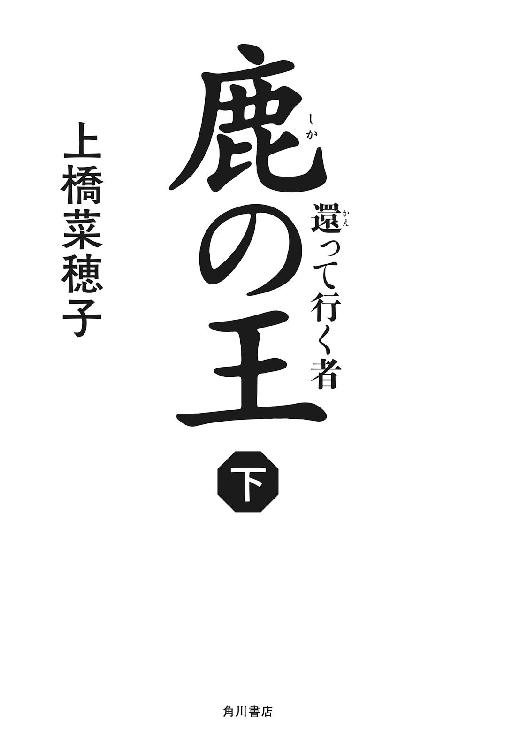

| 鹿の王02 ‐‐還って行く者‐‐ | |
| 上橋菜穂子 | |
| KADOKAWA / 角川書店 (2014) | |

鹿の王 下
─還って行く者─
上橋菜穂子

角川ｅ文庫
本作品の全部または一部を無断で複製、転載、配信、送信したり、ホームページ上に転載することを禁止します。また、本作品の内容を無断で改変、改ざん等を行うことも禁止します。
本作品購入時にご承諾いただいた規約により、有償・無償にかかわらず本作品を第三者に譲渡することはできません。
本作品を示すサムネイルなどのイメージ画像は、再ダウンロード時に予告なく変更される場合があります。
本作品は縦書きでレイアウトされています。
また、ご覧になるリーディングシステムにより、表示の差が認められることがあります。
目次
主な登場人物
ヴァン
物語の主人公。〈独角〉の頭として東乎瑠を相手に戦ったが、敗れ、アカファ岩塩鉱で奴隷となっている。
ユナ
岩塩鉱でヴァンが拾った元気のいい幼子。
トマ
オキに住む青年。怪我をして動けなかったところをヴァンに助けられる。
オゥマ
トマの父。
季耶
トマの母。東乎瑠から移住させられてオキに来た。
ホッサル
物語のもうひとりの主人公。天才的な医術師。
マコウカン
ホッサルの従者。
ミラル
ホッサルの助手。
リムエッル
ホッサルの祖父。東乎瑠の皇妃を死病から救ったことのある高名な医術師。
トマソル
ホッサルの義兄。オタワル深学院〈生類院〉の院長。
シカン
トマソルの助手。ユカタ平原の〈火馬の民〉の出身。
アカファ王
東乎瑠に征服されたアカファの王。東乎瑠に服従を誓っている。
スルミナ
アカファ王の姪で、東乎瑠の有力者・与多瑠の妻。
トゥーリム
〈アカファの生き字引〉と呼ばれるアカファ王の懐刀。
マルジ
後追い狩人の頭。
サエ
マルジの娘。跡追い狩人の中でも素晴らしい腕を持つ女性。
スオッル
〈谺主〉。ワタリガラスに魂を乗せて飛ぶ〈ヨミダの森〉に住む老人。
ケノイ
〈火馬の民〉のかつての族長。いまは〈犬の王〉と呼ばれている。
オーファン
ケノイの息子。いまの〈火馬の民〉の族長。
那多瑠
東乎瑠帝国の皇帝。皇妃の命を救ったリムエッルに信頼をよせている。
王幡侯
東乎瑠帝国アカファ領主。ホッサルの治療で命を救われたことがある。
迂多瑠
王幡侯の長男。傲慢で強引な男。
与多瑠
王幡侯の次男。アカファ王の姪・スルミナを妻にしている。
呂那
王幡領の祭司医長。
第七章 〈犬の王〉
一 抱く女
瞼を透かして、ぼんやりと明るみが感じられる。
唸りながら、目脂で貼りついた瞼をこじあけると、パチパチと火の粉を上げながら燃えている焚火が見えた。
ヴァンは大きく息を吸った。身体がひどく怠い。
「......大丈夫ですか」
焚火の向こうから声が聞こえた。倒木の上に女人が座って、こちらを見ている。
しばらく、その人の顔を見つめているうちに、サエ、という名が頭に浮かんできた。口を開こうとしたが、うまく声がでなかった。
サエが立ち上がり、そばの木に手を伸ばして何かをとった。
焚火を回って近づいてきて、傍らに膝をつくと、そっと手をうなじの下に入れて抱え起こし、唇にひんやりと冷たいものを当ててくれた。
雪だった。葉に降り積もった、清らかな雪だ。舌をだしてそれを口に含むと、熱で腫れた口の中で心地よく溶けていき、息が楽になった。
「......ありが、とう」
つぶやくと、サエはうなずき、そのまま自分の身体で半ば抱えるようにして、焚火に当たらせてくれた。細身の女なのに、そういう姿勢をしても無理を感じさせない。
よく知りもせぬ女に抱かれていることに気恥ずかしさを覚えたが、そうしてもらうと暖かく、冷えて強張っていた身体が、少し楽になったような気がした。
頭の芯が痺れていて、すべての物事が、奇妙に遠く感じられる。
火の粉を上げて燃えている焚火を見ながら、ヴァンはぼんやりと、これは親父の焚火だな、と思った。親父は、火を焚きつけるのが巧かった。深い雪の上で、火床がないときでも、見事に焚火を燃やしつけたものだ。
雪の上で焚火をするのは難しい。火を点けることができても、雪が解けて薪が濡れてくると消えてしまうからだ。
──こういうときはな、まず、樺の木を切り倒せ
親父は、そう言いながら、実際、何度もやって見せてくれた。
樺の木を切り倒し、葉が密集しているところに鉈で切れ目を入れて、そこに脂分の多い樺の皮を丹念に挿して燃やすのだ。そうすれば丸ごとの木が巧い具合に火床になってくれる。
言うは易し、行うは難しで、この親父の焚火は、教えてもらっても、そうそう簡単に真似できるものではなかった。
それを、この人は見事にやってのけている。
そんなことを思ううちに、ゆっくりと頭の中の痺れがとれてきて、闇の底に散らばっていた断片が集まって来るように、これまでの記憶が戻ってきた。
自分が何をしていたのかが、ふっと頭に浮かび、とたん、針が突き刺さったような痛みが胸に走った。
「......ユナ」
つぶやいて、ヴァンは身体に力を入れた。
「おれは、どのくらい気を失っていた？」
「それほど長い時間じゃありません。まだ、夜の半ばです」
頭の後ろでサエが静かに答えてくれた。
「この位で目が覚めるようなら、矢が掠った肩の方も、痺れは強くないでしょう」
そう言われて、左の手を握ってみたが、確かに、痺れは薄れはじめていた。だが、まだ、綿を握っているような頼りなさが残っている。
拳を握っては開き、握っては開きながら、ヴァンは心の底で、かすかな違和感を覚えはじめていた。
（......この人は）
いったい、誰なのか。
崖の中腹に立っていた姿が目に浮かんだ。
湯場で会ったときには、ごく普通の遊牧民の女に見えたが、あの状況でホクソウの木に火矢を射かけるような判断を、遊牧民の女がするとは思えない。
それに、いまの言葉──この女は矢毒にも詳しい。
じわじわと疑念が滲みだしてきて、胸を炙った。
サエの両手は脇の下から差し入れられて、腹の辺りを支えている。気づかれぬよう手を持ち上げて、その手を握ろうとした刹那、サエの手がするりと脇の下から後頭部へまわされ、あっという間に羽交い締めにされてしまった。
女の力など何ほどでもなさそうだが、見事に関節を極められていた。
「動かないでください。私は指輪に毒針を仕込んでいます」
うなじに硬い物が触っている。それが指輪なのだろう。力をこめれば、羽交い締めは外せるだろうが、毒針で刺される危険は冒せなかった。
「おまえは、誰だ。なぜ、こんなことをする」
喉が圧迫されていて、声を出しにくい。くいしばった歯の間から言葉を吐きだすと、サエは低い声で答えた。
「私は、モルファです」
「モルファ......」
聞いたことがあった。随分前に耳にした名だ。記憶の底から、その名に纏わる知識を引き上げて、ヴァンはつぶやいた。
「──アカファ王の、網？」
背後で、小さなため息が聞こえた。
「そうです」
ヴァンは顔をしかめた。さっぱり事情が見えなかったからだ。
「アカファ王の密偵が、なぜ、おれを......」
耳元に息がかかる。息の音しかしなかった。
答えぬつもりか、と思ったとき、低い声が聞こえた。
「岩塩鉱から、ひとり生き延びて逃げた奴隷を追え、と、命じられたのです」
まさか、という思いと、やはり、という思いとが綯交ぜになってこみあげてきて、ヴァンは歯をくいしばった。たかだか逃亡奴隷ひとりを、これほど長い間捜し続けていたとは......。
それに、追って来たのが東乎瑠の手の者ではなく、モルファだということが、どうも腑に落ちなかった。
「なぜ、アカファ王が、おれを追う。東乎瑠に、へつらうためか」
「いいえ」
サエが、ささやくように答えた。
「......もっと、複雑な事情があるのです」
そう言ったきり、なぜか、サエはまた、黙り込んでしまった。
その静けさの中で、ふと、もうひとつ疑問が頭に浮かび、ヴァンは眉をひそめた。
「......おれを捕まえたかったのなら」
ヴァンはつぶやいた。
「なぜ、矢毒にやられて倒れている間に縛らなかった」
サエが、身じろぎをした。
そして、いきなり腕をほどくと、ヴァンから身を離した。
温かい女の身体が離れたとたん、冷気が湿った背とうなじを撫でていき、ヴァンはぶるっと身震いした。
サエは手の届かぬ位置に立って、ヴァンを見下ろしている。
焚火の明かりに照らされたその顔には、はっとするほど深い、苦悩の色が浮かんでいた。
わずかな間、サエは何か言いたげな顔でヴァンを見つめていたが、すぐに、すっと目を逸らすと、暗い木立の奥へ歩み去ってしまった。
薄く雪の積もった下生えを踏んで行く音が消えると、あたりは深い静けさに覆われた。
ヴァンは、ぼんやりと、闇に沈む木立を見ていた。
何か、途轍もない失敗をしてしまったような喪失感があった。
声を上げて、あの女を呼び戻したい衝動に駆られたが、すんでのところで拳を握りしめて、その訳の分からぬ衝動を抑え込んだ。
追手を呼び戻して、どうする。
仲間を呼びにいったのかもしれない。いますぐ、ここから逃げるべきだ──そんな思いが、次々に頭をかすめていくが、身体は動かなかった。
捕らえるつもりなら、その機会はいくらでもあった。この状態で放って立ち去った、ということは、逃げろと言っているのと同じことだ。
（おれが、逃げられないと思っているのか）
そうかもしれない。彼女は、自分がユナを捜していることを知っている。
優れた跡追いの技で知られるモルファの女だ。いま、ここに放置しても、跡を追うことは容易いと思っているのかもしれない。
（それでも......）
疑念は残る。──彼女が何をしたいのか、わからなかった。
混乱した問いが、いくつも、いくつも、泡のように浮かんでくる。
アカファ王は、東乎瑠帝国の王幡侯の管理下にある。アカファ岩塩鉱も、もはや彼の財産ではないし、彼が岩塩鉱から逃亡した奴隷を追う理由などないはずだ。
東乎瑠軍の武将たちを殺した独角の頭であり、岩塩鉱から脱走した自分を捕らえて東乎瑠に差し出すことで、アカファには造反の意志がないことを示そうとしている、というのが最もわかりやすい理由だが、それにも違和感があった。これほど長い間、モルファに追わせるほどの価値が、自分にあるとは思えないのだ。
サエの苦しげな声が、耳の底で蘇った。
──......もっと、複雑な事情があるのです
ヴァンは顔をしかめた。
何かを心に抱えながら、それを口に出来ずにいた女の目が、いまも自分を見つめているような気がした。
（なぜ、おれを助けた）
二年もの間、ずっと追っていたのだとすれば、その労苦は大変なものだったはずだ。
追い求めた獲物が、目の前で無抵抗に横たわっていたというのに、あの女はなぜ、倒木などに座って、目を覚ますまで、じっと見つめていたりしたのだろう。
雪を口に含ませてくれた指、抱えてくれた仕草、あのまなざし......そのどれもが、女が口にした言葉とは、そぐわなかった。
ヴァンは掌で顔を覆った。
まだ見えていない何かが、自分を取り巻いている。幾重にも巻かれた糸に搦めとられ、あちらこちらから引っ張られている。しかし、引っ張っている糸の持ち主の顔が、見えない。
（......ユナ）
ユナはいま、どこにいるのか。どこで、この寒い夜を過ごしているのか。怖がって泣いているのではなかろうか、と思うと、居ても立ってもいられぬ心地になった。
純朴そうなふりをして巧みにユナを攫って行ったナッカに、燃えるような憎悪を感じた。
（なぜ、あの子を攫って行ったのだろう）
ユナを攫えるように、自分を別の場所に引き留めた半仔たちの姿が脳裏に浮かんだとき、ヴァンは、はっと、掌を顔から下ろした。
（半仔......）
ふいに、稲妻に照らされたような気がした。
アカファ岩塩鉱、生き残った自分とユナ、ユナを攫って行ったナッカ──すべて、あの半仔に関わっている。
誰が、何のために、自分たちを翻弄しているのかはわからない。しかし、目的は、多分、自分たちの抹殺ではない。殺したいのであれば、その機会はいくらでもあった。
（むしろ......）
ふいに浮かび上がってきた答えに、ヴァンは、愕然とした。
（おれたちの価値は、あの地獄で死なずに、生き延びたことにあるの、か）
闇に沈む森の、遠い何処かで、細く短く、鳥が鳴いた。
二 ユナを追って
枝はまだ黒い影のようだが、その狭間から見える空が白んできた。
夜が明けたのだ。
ヴァンはため息をついて、顔を撫でた。髭が掌に当たる。
（......そろそろ、行くか）
浅い眠りと覚醒を繰り返していたので頭は重かったが、身体の痺れは、もうほとんど感じない。
ユナを抱いたナッカの足跡を、見つけられるだろうか。雪は夜半までに止んでいたようだが、それでも足跡はもう雪の下に埋もれてしまっているだろう。
どうやって跡を追うか考えながら立ち上がって、葉に積もっている雪を口に含んだとき、ふっとサエの指の匂いを思い出した。
あの人は、どこで残りの夜を過ごしたのだろうか。
サエが歩いて行った跡は新しく、くっきりと見てとれる。
（......追ってみるか）
彼女がユナを攫った者たちと組んでいるなら、この足跡は、罠へと導いていく誘いの道標なのだろうが、他にユナを見つける手掛かりはない。
ヴァンは焚火の向こうへまわり、鉈を拾い上げた。
敢えて罠の中へ入って行くことに不安はあったが、ためらいはなかった。
おちゃん、と、呼んでいる、ユナの声が聞こえるような気がした。
鉈の柄を握り、狩人の目で下生えを見つめ、ヴァンは、ゆっくりと痕跡を追いはじめた。
追いはじめてすぐ、ヴァンは、サエが、わざと足跡をはっきりと残していることに気がついた。まるで、これは罠ですよ、と告げているような跡を、あちこちにつけている。
ヴァンが、その不自然さに気づくことをわかっていて、サエは、こういうことをしたのだろう。
罠とわかっていて、それでもユナの跡を追いますか？ と、問われている気がした。
（おれの覚悟を試しているのか）
なぜ、あの女は、そんなことをする......。
（それとも、ただ、導いているだけなのか）
サエの足跡のそばには必ず、ナッカのものらしき男の雪靴の跡があった。
やはり、サエはナッカの跡を追っているのだ。だとすれば、サエはモルファの目でナッカが歩いた痕跡を見つけだし、後から来るヴァンのために目につく足跡を残しているのかもしれない。
自分が、心のどこかで、サエの優しさを信じたいと思っていることに気づいて、ヴァンは、表情をひきしめた。──甘っちょろい期待で目を鈍らせてしまえば、罠に足をすくわれるだけだ。
サエは自分を導いている。ユナが連れて行かれた場所へと導いている。それは間違いないが、その真意はわからないのだ。
ナッカの足跡も、隠そうという努力の跡がみられない。むしろ、追って来ることを望んでいるように、降ってくる新雪におおわれぬ木の下などに、くっきりと足跡を残している。
弱い矢毒で眠らせ、途中で追いつかれないように距離を充分に稼いでおきながら、一方で、ちゃんと跡を追えるようにしている。
（なんのために）
彼らはこんなことをしているのだろう。こんな手の込んだことをせねばならぬ、どんな理由があるというのか......。
二日間、ヴァンはひたすらに足跡を追ったが、三日目には追跡を一時中断して狩りをし、腹いっぱい肉を食った。肉を食えば身体が温まる。四日目の夜明け、新たな気力がみなぎってくるのを感じながら、焚火を消して、立ち上がり、また、足跡を追いはじめた。
日が昇るにつれて、木立の間に清廉な光が広がっていく。
鳥が鳴き交わしながら枝を跳ね渡るたびに、小さな雪の滴が降ってくる。熊笹に薄らと積もった雪をはじきながら、狐が下生えを潜り抜けていく。
森が明るい朝の色に満たされた頃、ふいに、サエの足跡が、ナッカの足跡から離れた。その訳は、すぐにわかった。煙の匂いがしたからだ。
顔を上げて目を凝らすと、木々の向こうに何かが見えた。
（天幕？）
木や下生えの色に巧みに紛れるような色合いをしているから見定め難いが、間違いない。あの木々の向こうには天幕がある。それも、ひとつ、ふたつではなかった。目が慣れてくると、いくつもの天幕が張られているのが見えてきた。
ヴァンは顔をひきしめた。
あそこが終着点だろう。自分をあそこにおびき寄せるために、ナッカはユナを攫って行ったのだ。
犬の匂いがする。吠える声も聞こえる。煙の匂いと、多くの人々が朝の仕事にいそしんでいる気配も漂ってくる。
気づかれずに近づくのは無理だった。犬がいなければなんとかなるだろうが、猟犬がいるとなると、夜まで待っても、近づけば必ず気づかれる。
味方もいない。策を巡らす暇もない。
（......できることは、ひとつだけか）
静かに息をつき、ヴァンは天幕に向かって歩きはじめた。
進みはじめてほどなく、密やかな気配が四方から迫ってきた。天幕の方からではない。森の奥からやってくる。
鼻腔に、むっと獣の匂いが広がった。
その匂いを嗅いだ瞬間、鼻の奥で、馴染の感覚が、ぽつん、と生じた。
（来たか）
半仔だ。あの獣がまた、やってくる。
そして、あの獣に反応して、自分の身体もまた、獣に変わろうとしている......。
つかのま躊躇ったが、すぐに心を決めて、ヴァンは波のように満ちてくるきな臭い感覚に身を任せた。言葉を捨て、人の心を捨てる代わりに、獣の目と鼻と耳と、考えずに動く身体を得る。
鼻から頭へ何かが広がり、いきなり風景が変わった。
ヴァンは目を見開き、唇を持ち上げ、低く唸った。
半仔たちが止まった。
命じられて止まったのではない。──びくっと、足を止めたのだ。尾が低く垂れ、股の間に入っていく。
ヴァンが近づくと、半仔たちは、じりじりと後退した。
色彩が消え、物の輪郭が濃淡で浮かび上がる灰色の世界で、音と匂いが、異様な存在感をもって迫ってくる。
そして、もうひとつ。目に見えぬ脈打つ糸のようなものが天にも地にも無数にひろがり、すべてが繫がっている感覚があった。
ヴァンが歩くと、その目に見えぬ糸で織られた網がぐっとたわみ、それに押されて、半仔たちが下がっていく。
ふと、その網に、いくつもの小波が生まれ、ヴァンは鼻面をあげた。
人の匂いだ。
男たちの匂いがする。鼻をつく馬の匂いもするが、馬の気配はなかった。天幕の方から、男たちが歩いてくる。金臭い匂いがした。手に持っている槍の穂先の、嫌な臭いだ。
「......」
声が聞こえる。なにか、言っている。
ヴァンはじっと、近づいて来る男らを見つめ、その言葉に耳を澄ませた。
「......け、角のヴァン」
その名が耳に入ったとたん、獣の感覚が薄れはじめた。匂いと音が薄れていき、代わりに、世界に色が戻ってきた。
鮮やかな赤い肩布を斜めに巻き、手に槍を持った男たちが大股で歩いてくる。
槍は届くが鉈は届かぬ間合いで男らは立ち止まり、こちらを見つめた。屈強な戦士がもつ冷ややかな威圧感が、彼らの全身から発せられている。
しかし、不思議なほど、恐れは感じなかった。
（......嚙みたい）
唐突に、そう思った。
鼻の奥から脳天へ、きな臭い刺激臭が突きあげてくる。
赤い靄の向こうを見ているような幻が脳裏にひらめいては、消える。くらくらするようなその凶悪な衝動に負けまいと、ヴァンは必死に歯を食いしばった。
（......おれは、おかしくなっている）
自分がふたりいるような、違和感があった。
彼らを嚙みたくてたまらぬ自分と、そんな衝動に駆られている自分を、奇異に思っている自分とが、激しくせめぎあっている。
こめかみが脈打っている。耳の奥で血が流れる音がする。
深く息を吸って、ヴァンは目をつむり、全身をゆさぶる衝動が退いていくのを待った。
身の内に膨らんでくる凶暴な力を懸命にねじ伏せようと力をこめると、肩や腕、脇腹が、勝手に、ぴくっ、ぴくっと動いた。
遠い谺のように、もやの底から小さな声が聞こえている。
（......嚙むな、嚙むな、嚙むな......嚙めば、彼らを殺すことになる）
頭を垂れ、そのかすかな声に心を集中させた。
その声は杖だった。暴風のように己の身を揺らす衝動をやり過ごすためにすがりつける、ただひとつの杖。──殺してはならない。ひとたび殺しはじめれば、歯止めが利かなくなる。すべての者を殺し尽くしてしまう。
「......欠け角のヴァン」
呼びかける声に、ヴァンはゆっくりと目を開けた。
ゆらぐ視界の中で、やがて、目の前に立つ男らの姿が、再びはっきりと見えはじめた。
と、呪縛を解かれたかのように、半仔たちがぶるっと身震いし、身を翻して、森の中へと駆け去って行った。
それを見送る戦士たちの目には、なぜか、安堵と歓喜の色が浮かんでいた。
戦士たちの中央に立っている、白髪を鬣のように背になびかせた男が一歩前に出て、掠れ声で言った。
「〈独角〉の頭よ。そなたを待っていた」
三 オーファン
連れて行かれたのは、他の天幕の倍ほどの大きさがある天幕だった。
鉈をとられ、丸腰にされて、ヴァンはその天幕の中へ導きいれられた。扱いは乱暴ではなかったが、丁寧でもなかった。
中央に炉があり、正面には大きな旗が吊り下げられている。炎のように赤い馬が、いまにも駆けだそうとするかのように後足で立ち上がっている姿を刺繡した旗だった。
炉の周りには、低い腰掛けが三つ置いてあった。
白髪の老戦士が炉の向こう側に回り、旗を背にして座ると、その両脇の腰掛けに、壮年の男と若い男が腰を下ろした。息子と孫、あるいは甥とその息子か、いずれにせよ、老戦士の親族なのだろう。面立ちがよく似ている。
他の戦士たちは槍を天幕の外の槍架けに置き、短剣の柄に手を置いて入ってきて、ヴァンの背後に並んで立っていた。
老戦士がヴァンを見上げて、座るよう促したが、ヴァンは動かず、立ったまま彼を見下ろしていた。
背後にいた戦士が苛立ったように近寄ってきて、ヴァンの肩に手を置き、引き据えようとした、その瞬間、ヴァンは身体を沈めた。
不意をつかれて体勢を崩した男の腕をとるや、一気に引き落として、その腕を逆手にとったまま、男のうなじを踏みつけた。
「......動くな」
背後の戦士たちが短剣に手をかけるのを、ヴァンは制した。
「動けば、こいつの首を踏み折る」
男たちは動きを止めたが、正面に座っている白髪の老戦士は、顔色も変えずにヴァンを見つめていた。
わずかに、その口の端が持ち上がった。
「殺せばいい」
老戦士が言った。
「不覚をとった者は、死んで当然。ここにいる者は、誰も人質になどならぬ」
その目に浮かんでいる冷ややかな色をみたとたん、毛虫が肌を這うようなむかつきが胸に広がった。
ヴァンは、摑んでいる男の腕をぐいっと捻って脱臼させた。
男が白目をむいて、苦痛に吠えた。
その声が消えぬ間にヴァンは炉を飛び越え、はっと目を見開いた老戦士の顔を片手でつかむや、利き手をとってねじ伏せた。
敷布の上にその顔を押しつけ、膝で背の急所を押さえて、ヴァンは他の男らを見回した。
「......誰も人質にはならぬというのは、本当か」
男らは無表情を装っていたが、その目には隠しきれぬ動揺の色があった。
ちらっと、男らの視線がひとつの方向に動きかけて、止まった。その不自然な動きを目の端で感じとり、ヴァンは、かすかに眉根を寄せた。
ねじ伏せている手の下で、老戦士がよだれを垂らしながら、殺せ、と、掠れた声で叫んでいる。それを聞きながら、ヴァンはじっと、男らを見つめた。
「欠け角、と、おれを呼んだが」
ヴァンは言った。
「そこまで知っているのなら、おれのもうひとつの通り名も知っているだろう」
息子らしき男が、ぴくっと片頰をゆがめた。その男に視線を移し、ヴァンは言葉を継いだ。
「おれは兵の命を我が物のように扱う奴が、反吐がでるほど嫌いだ。殺すなら、まず将から殺す」
かすかに息を吸い、男は口を開いた。
「......父を殺しても、なんの要求も通らぬぞ。そなたの養い子の命が消えるだけだ」
ヴァンは唇の端をゆがめた。
「あの子を殺せば、そちらも、おれを従わせる手綱を失う。なんのためかは知らぬが、わざわざ、これほど手の込んだことをしておいて、それでいいのか？ ならば、こちらも腹を決めるぞ」
笑みを消し、ヴァンは言った。
「この世で再び、あの子を腕に抱けぬなら、その鬱憤を晴らして死ぬまでだ。......どうせ、拾った命。おまえらを殺して、先にあの世に行った仲間への土産話にしてやろうさ」
言った瞬間、それも良い、という殺伐とした気分が胸に広がった。
老戦士の息子の眉間が、すうっと白くなった。
と、右側から、か細い声が聞こえてきた。
「......待ってください」
そちらに顔を向けると、老戦士に良く似た面立ちの若者が、両手を広げて腰掛けから立ち上がるのが見えた。
「オソン、座っておれ！」
老戦士の息子が、苛立たしげに怒鳴ったが、オソンと呼ばれた若者は父を見ず、ヴァンを見つめたまま、立っていた。
「若輩の私が、このようなことをすれば、私は首を打ち落とされるでしょうが......」
蒼白で、声はふるえているが、若者は話しつづけた。
「たとえ、手討ちにされようと、私はあなたに申し上げます。何より大切なのは大義。その大義のためには、私の命など無に等しい。──無礼についてはお詫びしますので、お怒りを収め、我らの話を聞いてください」
ヴァンは若者を見つめた。
「おれが怒っているのは、無礼な扱いのせいじゃない」
静かな声で言うと、虚を衝かれたように、若者が目を見開いた。
まだ幼さの残る、その顔を見ながら、ヴァンは言った。
「おまえたちは、おれに用があるんだろう。そのために、おれの子を攫ったんだろう」
若者は、瞬きした。
「......そう、です」
ヴァンは平坦な声で言った。
「大義のためだかなんだか知らんが、自分の命なら勝手に捨てろ。だが、おれの命はおれのもの。あの子の命も、あの子のものだ。おまえらに生き死にを決められる筋合いはない。
おれはな、なんの関係もない幼子の命を使い捨ててかまわないと思う、おまえや、いま、おれの手の下で涎を垂らしているこの爺に怒っているんだよ。そんな当然のことすらわからん、おまえらに、な」
静まり返った天幕の中で、老戦士の息の音だけが耳障りに響いている。
ヴァンはつっと目を上げ、天幕の片隅にひっそりと立っている戦士を睨みつけた。
「用があるなら、出向いて来い。対面して名乗り、話せばいい。そんな当たり前のことが、なぜ、出来ない」
戦士が、驚いたように目を見開いた。
彼は、しばらく、じっとヴァンを見つめ返していたが、やがて、口を開いた。
「なぜ、おれに言う」
ヴァンはその問いを無視し、老戦士の頭を持ち上げると、絨毯に叩きつけた。ゴツッと鈍い音が響き、老戦士がうめいた。
ヴァンは老戦士の身体から手を放し、両手を叩きながら立ち上がって、伸びをした。
そして、天幕の片隅にいる戦士に向き直り、静かな口調で言った。
「尋ねたのは、おれが先だ」
戦士の顔に、ゆっくりと微笑が広がった。
それまでの一兵士然とした控えめな表情はあっけなく消え、代わりに、傲慢で強かな男の顔が現れた。
「......なるほど、〈独角〉の頭は、やわじゃないな」
男らを見まわして、彼は苦笑を浮かべた。
「こいつら、おまえが何かするたびに、おれの顔色をうかがってたからな。......ま、仕方がない。こうなった以上、まだろっこしいことは止めにして、仕切り直しをするか」
頭をふり、コキ、コキと首の筋を鳴らしながら、男は一歩前に出て、ヴァンに向き合った。
そして、鈍い光をたたえた目でヴァンを見据えた。
「おれは、〈火馬の民〉の族長、オーファンだ」
二十七、八ぐらいだろうか。がっしりとした体軀の男で、ぐりっと大きな眼をしている。
ヴァンは黙って、オーファンと名乗った男を見つめていた。
オーファンは、それを気にする風もなく、言葉を継いだ。
「幼子を攫うってのは卑怯なやり方だし、おまえが怒るのも当然だ。だが、理由があってしたことだ。おまえという男の見定めがつけば、こんな手の込んだことはしなかったのだがな」
ヴァンは目を細めた。
「......見定め？」
その声に滲んだ怒気に気づき、オーファンは、すっと手をあげた。
「無礼な言い方だったな。それは詫びよう。だが、見定めようとしていたというのは事実だ。なにしろ、おまえは、東乎瑠の移住民なんぞと一緒に暮らしていたそうだからな」
オーファンは続けて何か言いかけ、思い直したように、腰を掛けるよう促した。
「長い話だ。腰を下ろさんか。おれも座る」
オソンと呼ばれた若者が、弾かれたように前に出て、自分の腰掛けをヴァンに譲り、白髪の戦士の息子も、自分の腰掛けをオーファンに譲った。
椅子にどっかりと腰を下ろしながら、オーファンは、老戦士の息子に声をかけた。
「ご苦労だったな。親父さんと、ウーファの世話をしてやってくれ」
己の失態を恥じているのだろう、老戦士の息子はうつむき加減でうなずき、小声でオソンに何か囁きながら、額を押さえている老戦士を抱き起こし、隅に連れて行って寝かせた。
ヴァンに肩を外された男は、仲間に抱えられて天幕の外に出て行った。
天幕の中が落ち着きをとりもどすと、オーファンは背後にいる戦士をふり返り、杯を酌み交わす仕草をした。戦士がさっと動いて、天幕の隅から酒壺と杯をふたつもってきた。
オーファンは杯をひとつヴァンに渡し、自分の杯とヴァンの杯に酒を注がせた。
「仕切り直しの酒だ。まあ、飲め」
そう言うと、ぐっと一気にあおった。
ヴァンも杯を口に当てた。馬乳酒なのだろう。白く濁った酒は、わずかに舌を刺しながら喉を通っていった。
オーファンはすぐに二杯目を注がせると、別の戦士に顔を向けて、
「おい、何か食い物を持ってこい」
と、言った。戸口に近い所にいた戦士が一礼し、さっと外へ出て行った。
それを見届けて、ようやくオーファンはヴァンに向き直った。
「さて、何から話すかな」
独り言のように言って、オーファンは口を閉じた。
何を考えているのか、長いこと何も言わずにただヴァンの顔をながめていたが、やがて、ふと、口の端を歪めた。
「〈欠け角のヴァン〉、か。神出鬼没の飛鹿乗り、東乎瑠の鬼畜どもを散々悩ませた男......。どんな男だろうと思っていたが、なるほど、地獄を見て来た男ってのは、こういう顔になるんだな」
笑みを深め、オーファンは言った。
「人質をとられて、孤立無援の状態にあるのに、おれを交渉の場に引きずり出しやがった」
オーファンは、すっと笑みを消した。
「だが、決定的な手札を持っているのは、おれだ」
その目には、冷ややかな光が浮かんでいた。白髪の老戦士の目とは、また違う、底冷たい表情だった。
「養い子を再び腕に抱けないなら、おれたちを殺して死ぬだけだ、と、うそぶいていたな。おれは、あれを、はったりだとは思ってはいないよ。
おまえの顔には虚無があるからな。......一歩下がれば、すとん、と闇の底へ落ちて行くような虚無だ。闇の底へ落ちて行くとき、おまえは声も上げないだろう。むしろ、ほっとした顔をしそうだ」
口の端をちらっと持ち上げ、オーファンは囁いた。
「それでも、おまえは、あの子が可愛いんだろう。一息に殺されるならまだしも、耳を削がれ、鼻を削がれ、腸を抜かれて、苦しみながら死ぬ娘を見ていられるか？」
ヴァンはオーファンを見つめた。その、わずかに笑みを浮かべている、冷静な目を。
「どんな人間なのだろうな」
ヴァンはつぶやいた。
「それほど残酷なことをしようと思うのは」
オーファンは瞬きし、わずかに目の縁にしわを寄せた。
しばし黙っていたが、やがて、深々とため息をついて、言った。
「どれほど残虐なことをしてでも、成し遂げたいと思うことが、おれにはあるんだよ」
鈍く光るその目を、ヴァンは無言で見つめていた。
と、ふいに、オーファンが杯を投げ捨てて立ち上がった。
「来い。おまえに見せたいものがある」
四 雪原の火馬
白い光が、森の木々の針のような葉の隙間で、ちらちらと踊っている。
天幕を出ると、オーファンは、雪搔きが済んでいるところを選んで歩きはじめた。
朝仕事を始めていた人々が手を止めて、大股で歩いて行くオーファンと、その背後に続いて行く男らを見つめた。
その目に浮かんでいるのは、異邦人を見る好奇の色ではなかった。なにかを祈っているような、切実な光だった。無言の願いが、彼らの全身から滲みでて、まとわりついてくるようだった。
その異様な重さを、子どもらの無邪気さが、わずかに救ってくれた。
彼らは、もの問いたげな目で親を見上げたり、つつきあったりしていて、時折、つつかれてよろけた子が、押し殺した笑い声をあげた。
そういう人々の動きとは無関係に、放し飼いになっている鶏がパタパタと走りまわり、雪の薄い地面を盛んにひっかいたり、突いたりしている。
煮炊き物の良い匂いに、煙のいがらっぽい匂いと、雪に湿った泥や、家畜の匂いが交じり合って、漂ってくる。冬の集落の匂いだった。
ヴァンはふと、幼い頃よく母に連れていかれた叔母の嫁ぎ先の集落を思い出した。山奥の小さな集落で、春になっても雪が消え残り、こんな匂いがしていたものだ。
嗅ぎ慣れぬ匂いに興奮した猟犬たちが、牙を剝き出して、しきりに唸っているが、跳びかかってはこなかった。
（......良く仕込まれている）
毛並みと顔つき、耳の立て方、尾の構え方、どこを見ても、狩人なら一目で心惹かれるような良い猟犬たちだった。
オーファンはすでに集落を抜けて、森の中へと入って行くところだった。
ヴァンは、ゆったりとその後を歩いた。大股に歩いて行くオーファンと、どんどん距離が開き、背後を固めている戦士たちが苛立っているのはわかっていたが、ヴァンは歩調を速めなかった。──辺りの地形を知っておきたかったからだ。
針葉樹と広葉樹が入り交じる薄暗い森に、ときおり、人の気配を感じた。遠く、犬の声も響いてくる。狩りをしている者がいるのだろう。
どことなく肌に馴染んでくる森だった。このまま歩いて行けば、故郷の家が見えてくるのではないかと思うような、懐かしい感じがする。
森の間につづいている道は獣道のように細かったが、人が頻繁に通っているらしく、雪が踏み固められている。
わずかに上り坂になっているな、と感じていた道が、やがて途切れ、いきなり、蒼天のもとに出た。
眼下に広がった光景に、ヴァンは目を奪われた。
広大な雪の野が広がっている。
その雪原を縁どる山々を見たとたん、喉元に熱いものがこみあげてきた。──それは夢にまで見た故郷の山々だった。
（あれはウカラ岳だ！ じゃあ、ここはユライカの原か......！）
こんなところにいたのか、という驚きが身をつつんだ。
一日もあれば故郷に行けるトガ山地の東端の草原を、いま、自分は見おろしているのだ。
（どうりで、さっきから懐かしい感じがしていたわけだ）
喉の辺りに熱いものが生まれ、それが鼻の奥へと広がった。
あの向こうに故郷がある。生まれ育った山河、父母や兄たち、多くの友と暮らした日々、妻と出会い、息子と暮らしたすべてが。
ふっと、小さな我が家の匂いをかいだような気がした。
ちろちろと燃える炉の火が、炉辺でなにやら話している妻と息子の顔をやわらかく照らしていた、あの懐かしい部屋が目に浮かび、押し寄せる波のように切なさが胸を圧して、つかのま、息が出来なくなった。
あの山の向こうに行っても、あの家は、もうない。──わかっていても、どうしようもなかった。胸を搔き毟りたいほどに恋しかった。
ヴァンは大きく息を吸った。
夏は青々と草がなびくユライカの原も、いまは一面の雪原だ。
その野に、点々と、赤い獣の群れがいた。浅い雪を搔いて、下にある草を掘り出しては食んでいるようだった。
オーファンが岩の狭間に姿を消した。崖下に下りて行く道があるのだろう。ふり返ると、戦士たちが目顔で続くように促した。
彼らの顔の明るさに、ヴァンは驚いた。
さっきまでの陰鬱な苛立ちを秘めた表情が拭われたように消えている。これから遠乗りに出かけようとしている少年たちのような、隠しきれぬ喜びが彼らの顔を輝かせていた。
雪が所々残っている岩を踏みしめながら崖道をくだって雪原に下り立つと、オーファンがふり返った。彼の顔もまた、底抜けに明るかった。
眉を上げ、ぱっと笑うと、雪原に視線を戻し、口元に手を当てて、ホウッ！ と大きな声をたてた。ホウッ！ ホウッ！ と、よく響く声で何度も呼びかける。
その声が遠く渡っていくと、遠くに散らばっていた赤い群れが動きだした。
真っ白な野に、火花が散ったようだった。
中の一頭が、群れを置き去りにして、ぐんぐん駆けてくる。滑らかに身をうねらせ、有り余る力を全身から発しながら。
鳥肌がたった。
雪原の照り返しの眩しさに目が慣れて来ると、みるみる近づいて来るそれが、馬であることがわかった。わかったが、見ているものが信じられなかった。
（本当に馬......か）
普通の馬よりひとまわり小さい。だが、見事に四肢が引き締まって、全身から力を放散している。
その毛並みの美しさは、譬えようがなかった。動くたびに、艶やかな赤い光が波のようにその背を撫でて行く。
ヴァンは声もなく、雪原を駆けて来る美しい馬を見つめていた。
馬は真っ直ぐにオーファンの元に駆け寄ると、うれしくてたまらぬ子どものように、鼻面でオーファンの胸を突いた。
「おい、おい」
笑いながらオーファンは馬の首を抱え、鬣に手を入れて、その逞しい首を撫でた。
「美しいだろう」
ふり返ったオーファンに、ヴァンはうなずいた。
オーファンは笑った。
「美しいだけじゃないぞ。こいつは速い。な、火花、おまえは最高だよ。ああ、そうだ。おまえは、最高だ」
褒められていることがわかっている目で、馬は鼻を膨らませ、誇らしげにぐいっと首をあげている。
戦士たちが、それぞれが愛馬を呼び始め、いっとき話し声も聞こえないほどになったが、オーファンは叱るどころか、鷹揚に微笑んでその声を聞いていた。
呼ばれた馬たちが、駆けてくる。
それを迎える戦士たちの横顔に、ふと、もう逝ってしまった仲間たちの面影が重なり、つきりと胸が痛んだ。みんな、こんな顔をしていたものだ。自分の飛鹿を迎えるときは......。
自分の声に応えて顔を上げ、群れから離れて、うれしそうに駆け寄って来てくれる飛鹿を見ているときの、あの、胸がふくらむような幸福感。陽の光を浴びた鹿の、香ばしい匂い。自分を見つめているつぶらな黒い瞳。
懐かしい仲間たちの笑い声が、いま、ここにいる若い戦士たちの声に重なって聞こえた。
寄って来た馬たちは、みな精悍な姿をしていた。
だが、どれも、オーファンの愛馬のような強い輝きはなかった。最高とオーファンが称えたのは、ただの愛馬自慢ではなく、掛け値のない真実だったのだ。
男らは、みな、やさしい声で愛馬に話しかけながら、その鼻面を撫で、足腰の具合を確かめている。傍らにヴァンがいることなど忘れ去って、馬に触れ、馬のあれこれを話すことに熱中している。
このまま一歩、二歩と下がって崖路に消えても、誰も気づかないのではないかと思うと、苦笑がこみあげてきた。
ちらっと目が合うと、オーファンが眉を上げ、恥ずかしげに顔を歪めた。
「......飛鹿は」
照れ隠しのようにかけてきたその声には、これまでの傲慢さはなかった。
「馬より腰が狭いだろう」
「ああ」
「ずっと気になっていたんだが、あの体格で、あんたのような男を乗せて走って、いったいどのくらい駆けられるんだ？」
ヴァンは微笑んだ。
「飛鹿は頑健だ。おれを乗せて急峻な崖を難なく駆け上り、駆け下りる。一昼夜ぐらい駆け続けてもへたばりはしない。おれには、馬の方が華奢に見える」
眉を上げ、オーファンは疑わしげな顔をした。
「それほど頑健なのか？ あの鹿が？」
「ああ。強いだけでなく、速い。平野では火馬に敵わないだろうが、山地なら飛鹿の方が遥かに速い」
オーファンは、にやっと笑った。
「火馬も崖くらい下れるぞ。さすがに、アルルファン断崖は無理だがな。飛鹿はどうだ？」
ヴァンは眉根を寄せた。
（アルルファン断崖？ アカファの東の、あれか）
確かに、あれはとてつもなく急峻な崖だったが、また、随分と遠いところを例に出すものだな、と思いながら、ヴァンは答えた。
「下りられる」
「ほんとうか？ やったことがあるのか？」
「ああ。むかしは、東乎瑠軍を撃破できる効果的な場所を探して、あちこち遠征したものだ。あの崖も、飛鹿なら下れたよ。だが、馬では無理だろう。火馬でもな」
オーファンの顔から、ふいに笑みが消えた。火馬が飛鹿に劣ると言われて腹を立てたのかと思ったが、そうではないようだった。
愛馬の首を撫でながら、オーファンはため息をついた。
「......飛鹿は山に、火馬は野に、か」
つぶやくように言ってから、オーファンはヴァンに視線を戻し、さっきより近づいて来ている火馬の群れを手で示した。
「馬には詳しくないだろうが、どうだ、あの群れを見て、何か感じるか」
群れは牝馬が主体のようだった。去勢馬が数頭に、仔馬も数頭交じっている。一見、ごく普通に見えたが、仔馬たちの色艶はあまりよくない。雪に足をとられてよろける仔馬も目についた。
「あの仔馬たちは、当歳の春仔か」
馬は早春に仔を産むと聞いていた。生まれてから一年近く経っているにしては、足腰の安定がよくないように見えたから、そう言ったのだが、オーファンたちの顔に浮かんだのは、激しい怒りの色だった。
「そうだ。当歳だよ。大地を蹴って駆けまわっている頃だ。......故郷の野にいたなら」
声がふるえていた。怒りだけではない。強い哀しみと不安が、その横顔に浮かんでいた。
五 神の声
火馬の群れを見つめて、オーファンは唸るように言った。
「ここは寒過ぎる」
ヴァンは眉根を寄せた。
「しかし、馬は寒さに強いだろう」
オーファンは首をふった。
「他の馬はな。しかし、火馬は太陽の光を浴びて輝く馬だ。こんな雪深い野で生きる馬ではない。母馬から産み落とされた仔が、何頭も深い雪の中で死んだ。その足で立つことすら出来ず、凍えて」
唇をふるわせ、目に怒りを宿したまま、オーファンは苦笑を浮かべた。
「火馬は、屋根の下では仔を産まない。北の連中がやっているように厩舎を作ってみたが、仔を産む時期が来ると、母馬たちは壁に囲まれているだけで気が狂ったようになった。壁に身体を打ちつけて、骨を折った母馬もいた。......見ていられなかったよ」
オーファンは首をふった。
「火馬は、陽が燦々とあたる野で生きる馬だ。ユカタ平原は火馬を包み育てる大らかな母の懐だった。故郷から離れて、こんな雪深い野へ連れてこられて、こいつらは年々衰えていく。来年、何頭の仔馬が産まれるか......まともに立てる奴が、どれくらいいるか......」
唇を結び、しばらく息を整えて、オーファンはヴァンを見つめた。
「あんたなら、どうだ。これが飛鹿だったら？ 見ていられるか。飛鹿たちが苦しみ、衰えていく様を」
杭に繫がれていた飛鹿たちの哀れな姿が目に浮かび、ヴァンは顔を曇らせた。
飛鹿が健やかに生きているのを見る歓び、病んだ飛鹿を見る苦しみ、それは、ガンサ氏族に生まれた男にとっては、理屈を超えて身の底から湧きあがってくる感情だ。
この男らも、そうなのだろう。
衰えゆく火馬を見る苦しみに、日々、身を苛まれているのだろう。
そして、それは先の見えない苦しみだ。東乎瑠の支配下にあるユカタ平原に、彼らが帰る日は来ない。苦しみが終わるのは、火馬が死に絶え、絶望があきらめに変わったときだ。
オーファンの顔が歪んだ。
「故郷から追われたとき、おれは叫んだよ」
低い、かすれ声だった。
「岩山の頂に登って、ユカタ平原に向かって、声を嗄らして......。
キンマの神よ、おれたちが何をしたのですか、と。おれたちが弱く、強欲な侵略者に負けたから、お怒りになっているのですか、と。
情けなかったよ。骨が崩れ落ちるほど、情けなかった。だが、一方で、ひどく理不尽だとも思った。そうじゃないか？ ただ、故郷で穏やかに暮らしていた我らと、いきなりやってきて、他人の土地を我がものにするために横暴の限りを尽くしている奴ら──どちらの罪が大きいか、そんなことは赤子でもわかることだ」
雪の野に、その声が響き、消えていく。
「我らは小さい氏族だ。だが、天にも地にも恥じぬ暮らしをしていた。人のものを奪うような真似は決してしなかった」
涙が滲む目で、オーファンはヴァンを見つめていた。
「運命の不公平を思ったことがあるか？ おれがあのとき知りたかったのは、それだった。
この世はこういうものなのか。これほどに不公平なものなのか。弱い者は食われて、強者の血肉になるだけ。それが真理なのか？ 小さな氏族に生まれたおれたちは、強者の食い物にされるために生まれてきたのか？......苦しむためだけに、この世に生まれてくる、そういう運命の者が、なぜ、いるのか」
ヴァンは黙って、その声を聞いていた。かぼそい声が、耳の底で聞こえていた。
──......なんで、ぼくなの？
痛みに苛まれ、眠ることすら出来ぬ苦しい息の下からささやいた、幼い息子の最期の声が。
耳の奥から消えることのない声。
健やかに生きられる者と、生きられぬ者。それを決めるものは、なんなのか。
「おれは祈った。岩山で二昼夜祈り続けた。
神よ、我らは無理を祈っているのではありません。ただ、公平が為されることを望んでいるだけです。どうか、善く生きる者に喜びを、他者を苦しめる者に罰を与えたまえ、と」
オーファンの表情が、ふっとゆるんだ。
「どうなった、と思う？」
答えを待たず、オーファンは言った。
「神の御言葉が下されることはなかった。おれは絶望したよ。灰色の靄の中にいるような気もちで岩山から下り、氏族が仮の宿りをしていた集落へ戻った。
そこでおれを待っていたのは、救いどころか、さらなる苦しみだった。──父が、犬に嚙まれていたんだ」
風の音が聞こえた。馬たちが身じろぎをし、雪を踏むかすかな音が響いている。
「ああ、これが答えか、と思ったよ。おまえたちは死に絶えよ、と神がおっしゃっているのだと思った。その犬は、〈キンマの犬〉だったからな」
「〈キンマの犬〉？」
オーファンは、うなずいた。
「そうだ。キンマの神がお与えくださった犬だ。病み、塚に葬られた火馬の肉を食べて、病に勝った犬たちは神の御力をいただく。おれたちは、そういう犬のことを〈キンマの犬〉と呼ぶんだよ。
東乎瑠の奴らが、火馬の故郷を、穢れた羊の棲家に変えたとき、羊どもがバタバタと死んだ......」
ふっと、オーファンが苦笑して、戦士たちをふり返った。
「おれも相当鈍いよな。なんであの時、すでに、神の御手が働いていることに気づかなかったんだろう。岩山に祈りに行ったとき、おれは、親の深謀遠慮に気づかずに親をなじるガキみたいなことをしていたわけだよ、な？」
戦士たちも苦笑を浮かべてうなずいた。
ヴァンに顔を戻して、オーファンは、すまん、と言った。
「あんたには、さっぱりわからんよな。......つまり、こういうことだ。
東乎瑠の移住民はな、自分たちの地元の暮らしをそのまんま、ユカタ平原に持って来ようとしたんだよ。羊だけじゃなく、麦まで持って来て植えやがった。
だが、ユカタ平原は、やつらのものじゃない。だから、奴らが持ってきて植えた麦は、もともとユカタ平原に生えていた麦と雑ざったとたん、毒に変わったんだ。それを食って、奴らの羊がバタバタ死んだのさ」
「あれが、最初の兆しだったんですよね。神の御業が為されはじめた徴だったんだ」
若いオソンが口を挟んだが、オーファンは叱らず、うなずいた。
「そういうことだな」
「......その」
ヴァンが口を開くと、男らは一斉にヴァンを見た。
「毒麦を食って死んだ羊を、あんたらの犬が食べたのか」
オーファンの目がぎらっと光った。
「毒麦を食って死んだのは羊だけじゃない。火馬も死んだ。──毒麦を食って死んだ火馬を、おれたちは塚に埋葬したが、移住民どもはそのそばに毒麦を食って死んだ羊を埋めやがった。そいつらに汚されたせいで、塚には聖なる光が点らなくなったが、犬たちは、いつものように肉を掘り出して食ってしまった......」
オーファンの顔がゆがんだ。
「犬たちは死んだ。汚れた肉を食って、苦しんでな。かわいそうに。──だが......」
その目に再び光がひらめいた。
「キンマの神は、その御業を我らに示した。塚の一部に、再び聖なる光が宿ったのだ。
その塚に埋められていた火馬や羊は、毒麦を食ったのに生き延びた連中だった。その後、ミッジ（ダニ）にたかられて死んだが、それでも、芯が強い奴らだったのだろうよ。
キンマの神は、そういう強い獣の肉に特別な力を宿したのだ。そいつらを食った母犬たちは死ななかった！ 多くの賢い仔を生み、仔が育つのが早く、どんどん増えた。以前のキンマの犬たちをも凌ぐ、驚くほど賢い仔らだった」
それを聞いた瞬間、ヴァンは、これまで来た道を覆っていた霧がゆっくりと晴れていき、見たくない道が目の前に見えてくるような不安を感じた。
獣の目が、脳裏にくっきりと浮かんできた。──岩塩鉱の暗い地の底に駆け込んできた獣の、あの目。どこか兵士を思わせる、あの目。
「毒を食っても生き延びた馬や羊の肉を食って......」
ヴァンはつぶやくように言った。
「その犬たちは、身に毒を飼ったのか」
オーファンは熱っぽい目でヴァンを見つめた。
「そうだ。あの犬たちは神の御手に成ったのだ。神は、侵略者のもたらした毒から生き延びた者に、侵略者を殺す力を与えたのだ。
侵略者の毒に汚されても生き延びよ！ さすれば、おまえたちは、以前より強くなる！ そう、キンマの神は我らに教えてくださったのだ。──ユカタの大地を侵した者だけを殺す毒を犬の牙に与えて」
微笑みが、ゆっくりとその顔に浮かんだ。
「おれの父は、死ななかった」
笑みが顔全体に広がっていく。
「東乎瑠の移住民は、牙に掠られただけで死んだのにな。
わかるか？ 〈キンマの犬〉は正しき者は殺さない。だが、罪のある者には、命を奪う牙になる。──この土地に住むことを許されぬ者は、嚙まれれば死ぬんだ」
息を吸い、笑みを消して、オーファンは続けた。
「......あんたには、あの犬たちは、死の使いに見えただろう。岩塩鉱の中は、ひどい有り様だったそうだからな」
ヴァンは黙って、オーファンを見ていた。
オーファンは目を逸らさず、ヴァンを見つめていた。
「だが、よく考えてみろ。あそこにいた奴隷たちのことを。アカファの民はいたか？ あるいはユカタ地方の三氏族は？ あんたのようなトガ山地民は？」
思いがけぬ問いかけに、ヴァンは眉根を寄せた。
暗い地の底で共に働き、眠った男たち。顔など定かに見えなかったが、確かに、言葉が通じる者はひとりもいなかった。
「いなかっただろう？ アカファ岩塩鉱で働かされていた奴隷は、みな、東から連れて来られた戦争奴隷だ。例外は、あんただけだった」
オーファンの目に白い光が浮かんでいた。
「あんたは助かった。嚙まれても死ななかった。それを知ったとき、おれたちは震えたよ。震えながら、キンマの神に感謝の祈りを捧げた。一昼夜、祈り、歌った」
息を吸って、オーファンは言った。
「あの犬たちは、我ら火馬の民だけではなく、東乎瑠の暴虐に苦しむすべてのアカファの民を救うために遣わされた、まごうことなき神の使いであることを、あんたは示してくれたのだ」
オーファンが言っていることの意味が頭に沁みこみ、形を成した。......とたん、背筋に、痺れるような寒気が走った。
オーファンの目は強い輝きを湛えていた。
「神は、人にも獣にも故郷を与える。生まれ、まぐわい、子を生して、やがて、大地に帰る。その巡りを繰り返してきた故郷は、おれたちそのものだ。おれたちの親も、その親も、その親も、みな、あそこにいる」
オーファンは、ふいに手を大きく広げた。
「おれたちは必ず故郷へ帰る。あの美しい、火馬が駆けるユカタの野へ」
六 夢に訪れる者
人は死ぬと小さくなる。
噓のように小さくなった妻の顔を茫然と見ながら、肘のところに、ときおり息子の肩が触れるのを感じていた。
息子の顔を見るのが怖かった。
幼い、涙にまみれたその顔が自分を見上げている。その小さな口が、なぜ？ と、問うている。
──......なんで、母上は......。なんで......
母はなぜ病に罹ってしまったのか？ 同じ病に罹った叔母は治ったのに、なぜ母は......？
問うても答えなどないことがわかっているのだろう。なんで、とだけ繰り返している、その、まだ声変わりに遠い甲高い声が、かぼそく耳を打つ。
（聞きたくない）
ヴァンは固く目をつぶり、耳を押さえた。
幼いその声が、やがて、なんで、ぼくなの？ と問うことを知っていたから......。
ヴァンは懸命に夢から我が身をもぎはなした。
荒く息をしながら、ヴァンは汗まみれの顔を手で拭った。心ノ臓がもだえるように脈打っている。
大きく息を吸い、長々と息を吐くと、ようやく悪夢の残滓が離れていった。
妙な時刻に寝入ったものだ。
夕暮れの光が、天幕の煙だしの穴から斜めに落ちている。
その光をなめるように、ゆっくりと煙が上がって行くのを、ヴァンは、見るともなく見ていた。
小さな独り用の天幕の中には、寝床と炉、水瓶、用を足すための壺などが置いてある。
戸布は閉じており、外に見張りが立っているが、堅固な檻というには程遠い。逃げようと思えば、いつでも逃げられる。
この天幕は、ヴァンが逃げないことを重々承知しているからこその軟禁の場だった。
寝床の上に仰向けになり、ヴァンはぼんやりと、いま見た悪夢のことを思った。
（......久しく見ていなかったのにな）
息子を亡くしたばかりの頃は、毎夜のように見た夢だった。
今朝の、オーファンの話のせいだろう。
（あれは、おれの声だ）
なんで、と問う息子の声は、自分の心の声だ。
病に罹らぬ人もいるのに、なぜ、妻と子は罹ってしまったのか。なにか悪いことでもしたというなら、まだ納得もできただろうに、なんの理由もないからこそ、どうしても問わずにいられない。
長く生きることができる者と、長く生きられぬ者が、なぜ、いるのか。
長く生きられぬのなら、なぜ生まれてくるのか。
（運命の不公平......）
ヴァンは両手で顔を覆った。
瞼の裏に、ふと、黄昏の、あのがらんとした厨房が見えた。息絶えた女たちの静かな骸、母に守られて生き延びた幼い子の涙に濡れた頰と、じっとこちらを見ていた、つぶらな瞳が。
（あの子は生き延び、おれも生き延びた）
腕に抱いたユナの、かすかに湿った温もりが、その重さが思い出された。──生きている幼子の重さが、あのときまた、自分の腕にかかったのだ。
あの子は生きている。あの子はまだ、この手で、たすけることができる。
深く息を吸い、ヴァンは顔から手をおろして、煙だしの穴を見上げた。
（......妄執、か）
オーファンという、まだ若さの残るあの族長と、この氏族の人々の気もちはよくわかる。
彼らが経てきた苦しみも、その苦しみを与えた者に、相応の苦しみを味わわせてやりたいという気もちも、もう一度、故郷で暮らしたいと願う気もちも、痛いほどわかる。
だが、それでもなお、彼らが思いこんでいることは妄執としか思えなかった。
あの毒の牙をもった半仔たちを、彼らは、神の御手だと思いこんでいる。キンマの神が、東乎瑠から西の地を解放するために遣わしてくださった御使いなのだ、と。
だが、病んだ獣に女も子どもも赤子も関係なく嚙ませて、その生死を神の御意志と見る、その異常さに、彼らは誰一人として気づいていない。
（東乎瑠人も、人だ）
日々の暮らしを、ただ営んでいる、ふつうの人々だ。
トマの母の季耶の、おっとりとした笑顔が目に浮かんだ。
〈谺主〉に招かれてから、消息を知らせぬままになって、季耶たちはさぞかし気をもんでいることだろう。本当に申しわけないことをしてしまっている。
オキでの暮らしが懐かしかった。できることならユナと一緒に帰って、また、みなと暮らしたかった。
あそこでは、もともとどこから来たかなど、もう意味をなくしている。縁あって共に暮らしてきた、その日々がすべてだ。
移住民には移住民の事情がある。故郷を離れて移住させられてきた苦悩も、この地で根をおろすために流した汗も、この地で得た幸せもある。
そういうすべてを考えず、彼らをただ、神に許されぬ者と思う、その心の底に何があるのか、彼らは見ようとしていない。
（神というのは、便利な理屈だ）
岩塩鉱で、あの犬たちに殺された奴隷たちは確かに東の民だった。
だが、みな、西の民と同じように東乎瑠と戦った人々だったのだ。隣で寝起きしていたあの男たち......みな、故郷を追われ、ひどい苦しみに耐えてきた人々だった。
（おれたちと、何が違う）
同じ苦しみの底にいた人々ではないか。絶対に、あんな風に殺されて良い人々ではなかった。
だが、それを言っても、オーファンの思い込みが揺らぐことはあるまい。
神が、奴隷として働く苦しみから解放してくださったのだと思えば済むからだ。
自分たちが思いたいように思わせてくれる神が、都合の良過ぎる方便であることを、彼らが認めることは決してないだろう。
むしろ、ヴァンがそんな風に思っていると知ったら、彼らは心底驚くだろう。
故郷を守るために東乎瑠軍と死闘を繰り広げ、仲間を殺され、奴隷にまで落とされた男が、なぜ、自分たちと同じ思いを抱いていないのだ？ と、思うだろう。
（東乎瑠の将や軍人どもは、憎い）
他者の土地すら我がものと考える傲慢さには、血が凍るような怒りを覚える。奴隷として扱われた、あの地獄の恨みも忘れたわけではない。
だが、心の底までひっくり返してみても、オーファンらが抱いている、東乎瑠人であれば女でも子どもでも皆殺しにしたいというような憎悪の念はないのだ。
（多分......）
自分にとって最も大切なものを奪っていったのは、東乎瑠ではなかったからなのだろう。
枕元に置かれている小さな壺から漂ってくる、甘い果実酒の匂いを嗅ぎながら、ヴァンは目をつぶった。
ずっと心に巣くっているこの虚無の源が、人や国であったなら、まだしも救いがあっただろうか。あの男らのように復讐に情念を燃やすことで、心の闇から目を逸らすことができただろうか。
ヴァンは小さくため息をついた。──それは、無理だろう。
たとえ、我が子と妻を奪った相手が東乎瑠だったとしても、自分はきっと、彼らの向こうに、いまと同じものを見たはずだ。深く、決して消えることのない、この虚無を。
この思いは、人に話して伝わるようなものではない。オーファンに話しても、彼には決してわからないだろう。
（彼らは、おれに何をさせようとしているのか......）
あの犬たちは、確かに恐ろしい。
だが、何頭いるのか知らないが、所詮、犬は犬だ。たとえ百頭いたとしても、東乎瑠軍を殲滅させることはできまい。
東乎瑠は大国だ。
病を運ぶ犬ぐらいでは、この地から押し戻すことなどできるはずもない。妄執に囚われているとしても、そのくらいのことは火馬の民にもわかっているはずだ。
それとも、そんなことすらわからなくなるほど、キンマの神とやらを狂信しているのか。あるいは、他に何か、見せていない札があるのか......。
そうかもしれない。オーファンは結局、ヴァンに何をさせたいのかは、口にしなかった。夜になればわかる、と、言っただけだった。
ただ、そう言った後に、彼が付け加えた言葉が、飲み下せない異物のように胸の辺りに留まっていた。
──夜になれば、わかる。......〈キンマの犬〉の死から蘇ったあんたには
（〈キンマの犬〉の死......）
あの犬に嚙まれた後、訪れた異様な悪夢。あれを死と表現されたことが、妙に薄気味悪く感じる。
（あれから、おれは）
確かに変わった。何がどう変わったのかわからないが、身の内に、かつての自分とは違う生き物がいる。
これまで、何度か、あれが顔をだした。身体も心も乗っ取って。
（これまでは自分を取り戻せた。──だが......）
いつか、あれが主になり、自分は消えるのではないか。そんな予感がいつも心の何処かにある。
ヴァンはそっと両手で顔を覆った。
（恐ろしいのは）
心底恐ろしいのは......それを、自分が恐れていないことだ。
いつ気づいたのかわからない。いつの間にか、感じていた。
（あれに成っているときには、虚無が消える）
常に心を苛んでいる、生きることを虚しく思う気もちが、ない。あるのはただ、命の衝動だけだ。
そして、孤独でなくなる。個であることには変わりがないのに、広大な河に溶けてしまったような平らかで、ひとつながりの感覚がある。
（オーファンは知っているのか。おれの内側に、あれがいることを）
そうかもしれない。
彼の父も嚙まれて生き延びたと言っていた。あの犬たちに嚙まれて生き延びた者には、同じようなことが起きているのかもしれない。
そう思ったとき、ふっと、ユナの顔が目に浮かんだ。
あの犬たちが襲って来たときに、腹にもぐりこむようにして泣いていた、あの声まで生々しく蘇ってきた。
──......おちゃん、おちゃん......あんね......くろいのがね......
（ユナ......）
もしかすると、あの子も同じなのか。
狂犬に嚙まれた者が、あたかも狂犬になったかのように水を嫌い、苦しむように、あの犬に嚙まれた者は、たとえ死ななくとも何かを身の内に飼ってしまうのか。
光る世界。闇すら明るく見える、あの異様な視野。すべてが変容していくあの感覚......。
ヴァンは、煙だしの穴から射し込んでくる夕暮れの光を凝視したまま、冷たい水のようなものが、ひたひたと全身に広がって行くのを感じていた。
火馬の民が故郷を取り戻すために、何をさせようとしているのか知らないが、自分を取り巻いているものは単純な復讐とは程遠い。途方もなく複雑で、つかみどころのない何かだ。
そう思ったとき、ふと、あの女が言った言葉が耳の底に蘇ってきた。
──......もっと、複雑な事情があるのです
ヴァンは、ぐっと眉根を寄せた。
（モルファ族とアカファ王......）
火馬の民と、どう関わっているのか。
煙だしの穴の縁を染めていた金色の光が、ゆっくりと色を失っていく。
辺りが青い闇に沈んだ頃、異変が起きた。
七 〈犬の王〉
はじめに感じたのは匂いだった。
苔むした倒木が雨に濡れて放つような、青臭い匂い。
いつの間にか誰かが天幕の中にいた。──戸布を開けることもなく、足音も立てず、気がつくと、隅の暗がりに人の気配があったのだった。
ヴァンは身を起こし、気配がある天幕の隅を見つめた。
闇の中に息の音がかすかに聞こえている。しかし、人の姿は見えない。影すら、ない。
夕暮れの青さが消えて、静かに闇が訪れたとき、そこに何かが見えはじめた。
ぼうっとゆらめく陽炎のような鬼火。ごく小さな青白い光が無数に凝り集い、ゆらゆらと揺れながら、人の形になっていく。
──......
頭の中に、なにか聞こえた。
青臭い匂いが全身を押し包み、毛穴から沁み込んでくる。
──......こ、い
緑がかった青白い光が、ゆらめきながら呼んでいる。
するするとその手が伸びてきて、あっと思う間もなく眉間に触れた。──とたんに、我が身が、つるりと脱げ落ちた。
大気が甘い。辺りが明るく、身体が浮きそうに軽い。
気がつくと、天幕の外を歩いていた。
目の前には男の背がある。ずんぐりとした初老の男だ。わずかに背を丸めて歩いて行く。
辺りは満月の夜のように妙に明るく、男の姿はくっきりと見えるのだが、周りにある天幕は、みな幻のようにぼやけている。
男は森の中に入って行く。
森の中は妖しい光に満ちていた。──なんという数の光。無数の、煙のように舞い踊る、ごくごく小さな光の群れ......。
様々な匂いが、波のように押し寄せてくる。
やがて、馴染のある匂いが近づいてきた。軽い足音とともに駆け寄ってくる獣たち......。
（......半仔）
十数頭ずつの群れが、四方八方から、ひたひたと近づいてくる。
──......半仔などという、卑しい名で呼ぶな
ふいに、声が聞こえた。
いつの間にか男は立ちどまり、こちらを向いていた。男に半仔たちが近づき、輪になって、額ずくように伏せていく。
──これは〈キンマの犬〉。おれの猟犬たちが、この地の黒狼と交わり、キンマの血を分けて生まれた、神の猟犬たちだ
それは、神々しい光景だった。
すっくと立つ男を頂点として、高い山の裾野が広がるように、数十頭の犬の群れが額ずいている。
「......あなたは、誰だ」
問いかけると、男は答えた。
──おれは〈犬の王〉
男が、笑ったように見えた。
──人であるときの名はケノイ。かつては〈火馬の民〉の族長だったが、キンマの神に召されて生まれ変わった
男がすっと、一点を指差した。
──ほれ、おれの身体はそこにある。あの身の中にいるときは、おれは、病んだ年寄りだ。もう、さして長くない......
男が指差した大木の根元に、人の姿があった。ぐったりと背を大木に預けて、頭を垂れている。
──犬の王となるとき、おれはこうして我が身を脱ぐのだよ。脱げば、おれは強くなる
男が顔をあげ、真っ直ぐに、こちらを見たような気がした。
──おまえも、強い。......感じるか？ 〈キンマの犬〉たちは、おまえを畏れている
それは、感じていた。群れをなす犬たちから、畏れながら、慕っている気もちが波のように伝わってくる。命じれば、彼らは自在に動くだろう......。
──これまで、幾人もの勇猛な男らが、自ら〈キンマの犬〉に嚙まれて、彼らの王になることを試みてきた
だが、〈キンマの犬〉の血を宿し、絆を作ることはできても、誰ひとりとして、〈犬の王〉になれた男はいなかった
多くの雄がいても、群れの頭になるのは一頭のみ。──〈犬の王〉になるにも、なにか、資質がいるのだろう
男が、かすかに笑ったような気がした。
──おまえは、おれが見つけた、ただひとりの例外......ただひとつの、希望だ
男が歩み寄ってきた。草を踏んでいるのだが、音がしない。
ゆっくりと歩み寄り、手を伸ばし、ヴァンの手をとった。──とたん、ぬるい液体が流れこむように無数の声が流れ込んできて、ヴァンはうめいた。
頭の中に声が響く。それは、男の声のようでもあり、自分の声のようでもあった。
（〈キンマの犬〉の血を分けし兄弟よ、聞いてくれ......）
蚊の群れがざわめくような高い音。その音が全身に満ちていき、やがて夢がはじまった。
＊
天幕が白んでいる。
やわらかな早朝の光がまつ毛に宿り、ふるえていた。
ヴァンはゆっくりと目を開けた。瞼が重い。頰が濡れている。──夢を見て、泣いていたのだ。
両手で冷え切った顔を覆うと、自分のてのひらの匂いがした。
その慣れ親しんだ匂いを嗅いだとたん、また涙が溢れ、頰を伝った。
（......なんという）
夢を見たのだろう。長い長い、哀しみと苦悩と歓喜に満ちた夢だった。
〈犬の王〉と名乗った老人と溶けあって見たのは、故郷で暮らしていた頃の〈火馬の民〉の日々と、そのすべてが突然の侵略者たちの専横によって侵され、崩れ去って行った記憶だった。
故郷をもぎとられ、追放されていく、我が身が半分に切られ、剝がされていくような哀しみと怒り。その絶望のどん底に、ふいに見えた希望の光......。
人の身を離れ、溶けあった夢の中で見たすべては、圧倒的な生々しさで心に溶け、もはや自分の記憶と変わらぬものになっている。
しかし、その圧倒的な夢の記憶より生々しく焼きついているのは、夢を見せ終えて、老いた我が身に戻ったときの、ケノイの表情だった。
彼は、惨めな顔をしていた。
〈犬の王〉として輝いているときの表情とはまるで違う、病み、心と身体の痛みに常に責めさいなまれて萎びた、老いた顔をしていた。
無理もない。彼が負うているものは、あまりにも重すぎる悔いだ。──同胞から故郷を奪うことになった、あの移住民襲撃事件を起こしたのは彼の弟であり、彼は、弟の企みを知りながら、止めなかった。
愛馬が毒麦を食って死んだことをきっかけに心に狂気を宿してしまった弟の企みを、彼は百害あって一利もないと言葉では諭しながら、本気で止めもしなかった。
族長でありながら同胞の怒りを鎮め諭すこともできず、曖昧なまま時を過ごそうとした、その優柔不断さが、決定的な悲劇を一族にもたらしてしまったのだ。
永遠に奪われていく故郷。二度と帰れぬそこを、いく度もふり返りながら、泣きながら、離れていかねばならなかった人々の怒りと哀しみと、無言の非難を、彼はその身で負うたのだった。
両手をしずかに外して、ヴァンは天幕の煙だしの穴を見つめた。
その枠の向こうにみえる朝の空。見慣れているはずの空が、見たことのないもののように思える。
顔をゆがめて、ヴァンは固く目をつぶった。
途轍もない寂しさがあった。
ずっと長いこと感じていた寂しさだった。──もはや帰れぬ故郷、帰ることのできぬ時。愛しいアリィサと我が子モシル。あの笑顔、肌の温もり、匂い......。
老いた父と母が、歩きはじめた孫を見て、うれしくてたまらぬ顔で笑っている。アリィサの滑らかな肌に肌をぴったりとつけて抱きしめ、うなじの匂いを感じ、頰をつけ......。
なにをどう願おうとも、もう決して帰ることのできぬあの日々。
急流を駆け下るように流れていく落ち葉。
光る刃、血と臓物の匂い、汗、顔を覆い、肩をふるわせて慟哭する友。
（......家に帰りたい）
決戦の前の夜、涙を流しながらつぶやいた戦友ヴァサルの声。
（家の竈の前に女房と娘がいて、おれの好物のキノコと猪肉の煮込みを作ってくれていて、母ちゃんが日向で足を投げ出して豆の莢を剝いていて......）
もうとうに逝ってしまった家族がいた、あの故郷へもう一度、もう一度帰りたい......。
流れる涙を拭うこともなく、ヴァンはすすり泣いた。
長いこと、泣きたかったのだ。
寄る辺ない哀しみの中をずっと歩いてきた。異郷で暮らしているあいだも、心の底から家族と暮らした故郷を渇望する気もちが消えたことはなかった。
我が身はもはや木の枝から離れ、落ちてしまった葉だ。流れゆき、やがては大海に消えていくしかない。そうわかっていても、哀しみや渇望は、消えることはない。
〈火馬の民〉もまた、強引に故郷から切り離された落ち葉だ。故郷に帰ることをひたすらに願っている、哀しい落ち葉なのだ。
〈火馬の民〉が自分に何を望んでいるのか、わかった。
ケノイとつながって、ケノイの記憶を生きたいま、それはもはや、自分の血の中にも流れているように思えるほど、為して当然のことに思えた。
天幕の外にざわめきが生まれた。
ずっとざわめきは聞こえていたが、それとは明らかに違う、この天幕に用がある者がやって来たことを感じさせる人々の話し声が聞こえて来る。
ヴァンが身を起こすのと、戸布が持ち上がったのがほぼ同時だった。
ちょっと頭をかがめて入って来た男を見て、ヴァンは、はっと目を見開いた。
ヴァンを見るなり男の顔が歪んだ。その表情が、あまりにも妻に似ていて、目にしたとたん胸が締めつけられた。
ヴァンは立ち上がり、痺れたようになっている足をようやく動かして、男に歩み寄った。
「......義兄上」
つぶやいて、ヴァンはふるえる手で、妻の兄であり、幼馴染であった男の手をとった。
義兄は唇をふるわせ、涙を流しながらヴァンを固く抱きしめた。
第八章 辺境の民たち
一 背後にいた者
夕暮れの光は薄れ、薪小屋は青い闇に沈みはじめた。
腰をかがめてマコウカンの顔を覗き込み、姉は薄く笑った。
「......随分と老けたわね」
イリア、と姉の名を口にしようとしたが、うまく声がでなかった。
姉は、マコウカンの手首の拘束を小刀で切ると、小さな壺をさしだした。
「飲みなさい。吹き矢の毒は、そろそろ消えるはずだけど、まだ喉がいがらっぽいでしょう。気をつけて飲みなさいよ。むせるかもしれないから」
壺に口をつけるとひんやりとした水が口の中にひろがった。だが、うまく飲み下せない。少しずつ飲み込もうとしたが、むせてしまった。
「ほら、言ったそばから、あんたはもう......」
舌打ちをしながら、姉は背を叩いてくれた。
涙をぬぐい、姉を見上げて、マコウカンはつぶやいた。
「......なにが、どうなっているんだ」
姉は片膝をつき、渋い顔をした。
「あんたはまったく、なんでユグラウル家の息子の従者になんぞなったのよ。このくだらない世界からせっかく逃げだしたのに、また自分から繫がれに戻ってくるなんて、馬鹿もいいところだわ」
「......」
「たすけてあげたいけどね、こうなったらもう、行けるところまで行くしかないわ」
マコウカンは眉をひそめた。
「姉上、おれにわかるように話せよ」
ため息をつき、姉は髪をかきあげた。
「あんたは泥沼にずっぽり胸まで浸かっているって言っているのよ。──それにしても、吹き矢を使うなんて。こちらに任せておけって言ったのに、しょうもない奴ら」
「奴らって、火馬の民のことか？」
声を低めてささやくと、姉は鼻を鳴らした。
「声を低めなくていいわよ。ここはうちの薪小屋で、連中はうちの敷地に入ることは許されていないから」
「え？」
マコウカンは辺りを見回した。
「こんな薪小屋、あったか？」
姉はまた、ため息をついた。
「あんたが家出してから、何年経っていると思ってるの」
マコウカンはむっとして、姉を見つめた。
「なんなんだよ！ おれだとわかっているのに、うちの館の小屋の柱に縛りつけたりして、ふざけるなよ！」
姉の目に、冷ややかな光が浮かんだ。
「ふざけてなんかいないわ。──弟でなかったら、あのまま殺させている。従者などいない方が、こちらとしては都合が良いから」
すっと額が冷たくなった。
マコウカンはじっと姉の目を見つめたが、姉は表情のない目で見返しているだけだった。
「あんたの命はそのくらい軽いのよ。役に立つと思ってもらえれば、生かしておいてもらえるでしょうけれど、わずかでも害になると思われたらおしまい」
顔を近づけて、姉は言った。
「私は、むろん、あんたを殺したくはないわ。だから、こうして話しに来ているのよ。私の話をしっかり聞いて、生き延びるためにどう動いたらいいか考えなさい」
鼓動が速くなった。
かつて、この姉は、兄を手にかけた。──そのことを思いだし、喉のあたりから、冷たいこわばりが顎へとひろがった。
「......おれたちをここへ送り出したのは〈奥〉だぞ」
姉は唇の端を持ち上げ、一層顔を近づけて、ささやいた。
「だから？ あなたたちは我が氏族で歓待されている最中よ。なんの問題もありはしないでしょう？」
うす闇の中で、その目が静かに光っている。
「私はいまもチイハナさまに命じられた仕事をちゃんと果たしているわよ。でも、別の事情もある。大切な事情がね」
すっと顔を離し、姉は冷ややかな声で言った。
「オタワルは池に映る月よ。自分で光ることはできない。かつてはアカファ、いまは東乎瑠の輝きを映して光っている。常に、その時々の為政者を輝かせ、その力で自分たちも輝く、水面に映る月......」
マコウカンは黙って姉を見つめていた。
代々、オタワルの〈奥〉に仕えてきたシノック家の家業を継いだ姉。その心のうちで、何を思っているかなど、これまで知ることもなかった。
「チイハナさまに命じられた仕事ってのは、〈火馬の民〉を探ることか？」
「そうよ」
姉はあっさり言った。
「追放された彼らを受け入れて住まわせている私たちなら、情報を得るのも容易いからね。でも、彼らと縁が深い私たちの情報だけじゃ不安なものだから、時折、別の連中も、ちらほら現れては探っているわ」
姉は鼻で笑った。
「別にかまわないけどね。こっちも、〈奥〉の手の内は知り尽くしているし、氏族に異邦人が接触すれば、すぐに私に伝わる。氏族の者を買収しても、私にはわかる。......ただ」
ふっと真顔になって、姉は言った。
「これからは、そうのんびり構えてもいられないのよ。いまは、聖領に余計なことをされるわけにはいかないの」
厚い布の下で手をうごかされているように、何を言われているのか、わかるようで、わからなかった。
ただ、姉が、あの病んだ犬たちの襲撃を企てた側にいて、オタワル聖領の〈奥〉を裏切っていることだけはわかった。
姉が陰謀者の側にいる、ということは、故郷の人々──山地氏族すべてが、陰謀を企てている側に属しているのだろう。
（......〈火馬の民〉と〈山地の民〉）
むかしから絆があったユカタの氏族が手を結んで、なにかをやっている。
（つまり、黒狼熱の復活は、おれの故郷の氏族たちが企てていることだったのか）
腸が萎えていくような気がした。
（なるほど、おれは胸まで泥沼につかってる）
マコウカンは姉を見た。
「......ホッサルさまは？」
「心配しなくていいわ。彼は大切な人質だし、使える男だから、丁重に扱われている」
「人質？」
姉は肩をすくめた。
「そうよ、もちろん。いままでの話を聞いていてわからなかったの？ いまは聖領に余計なことをしてほしくないって言ったでしょう。彼はオタワルに対する重石よ」
立ち上がり、姉は、マコウカンにも立つように促した。
マコウカンが立ち上がると、姉は後ろを向くように言って、素早く手首を縄で縛った。きつくはなかったが、巧みな結び方で、手首を動かしても、まったくゆるまなかった。
「あんたは木偶になりなさい」
姉の声が背を伝わって聞こえた。
「何を聞いても反応せず、私たちに言われた通りのことをする。それが、結局は自分とホッサルを救うことにも繫がるわ。......あんたが自分で考えて、動こうなんて思わないことよ。あんたにはわかっていないことが山ほどあるんだから」
マコウカンは応えず、ふり返って姉を見つめた。
姉は、そっと背を手で押した。
「歩きなさい。ホッサルのところへ連れていくから」
＊
姉の言葉に噓はなく、ホッサルは、ほんとうに歓待を受けていた。
暗い裏道を通ってマコウカンが連れていかれたのは、族長の従弟にあたるウカニ・オクサの館だった。
オクサ家は名家だったが、その館は族都の西の端の山の中腹にぽつんと離れて建っている。そのために、軟禁の場所に選ばれたのかもしれなかった。
姉はマコウカンを連れて裏口から入って行ったが、出迎えた館の人々はちょっとお辞儀をしただけで何も言わず、ふたりを廊下に導くと、すぐに退いてしまった。
「この部屋よ。入りなさい」
手首の縄をほどくと、姉はくるくるっと縄を巻き、踵を返して歩み去ってしまった。
マコウカンはため息をついて、扉を叩いた。
中から、入って来い、という声が聞こえたので扉を開けると、炙った鴨の香ばしい匂いがふわっと漂ってきた。
狩ってからしばらく吊るして熟成させ、蜂蜜を溶いた特製のタレをかけながら丁寧に炙ると、皮に独特の照りが生まれ、香ばしくパリッと焼ける。腹には栗や胡桃などを詰めてあり、肉と一緒に食べれば口の中にコクのある旨味が広がる。この地方の秋から冬にかけてのご馳走だ。
ホッサルはひとり食卓に座り、小刀で鴨を切り分けて盛んにほおばっていた。マコウカンが部屋に入っても、ちらっと目をあげて見ただけで、手は止めなかった。
「......ご無事で」
と、声をかけると、ホッサルはもぐもぐと口の中にあるものを嚙んで、ごくん、と飲み込んでから、果実酒をあおった。
それから、ようやく手を止めて、マコウカンに目を向けた。
「うまいぞ。おまえも食え」
言われるままに、マコウカンは椅子を引いて座ったが、まるで食欲がわかなかった。
「よく食えますね」
つぶやくと、ホッサルは鼻を鳴らした。
「おれは腹が立つと、腹が減るんだ」
ガチガチと音を立てて力任せに肉を切り、口に運ぶ。
「......怒っておられるんですか。心配しているのではなく？」
「心配？ なにが心配なんだ？」
「なにがって、私らは吹き矢で昏倒させられて、ここに監禁されているんですよ？」
「だから怒ってるんだろうが！ くそっ。吹き矢なんぞ使いやがって。毒は微量でも体質によってはえらいことになる可能性だってあるのに！」
ホッサルはごくごく喉を鳴らして果実酒を飲んだ。
「チイハナのくそババア！ こうなることを読んでいて、おれたちをこんなところへ送りこみやがった。あのくそったれの、くそババア！」
「え？ そうなんですかね」
ホッサルは吐き捨てるように言った。
「そうに決まってるだろう！ 〈火馬の民〉を探るにしても、この辺りの山地民出身の〈奥仕え〉は信用できないもんだから、おれたちを送り込んで反応を見ようと画策しやがったのさ。おれたちなら、ついでに病のことも探れるしな。──くっそう、あのババア、おれを小石扱いしやがって！ 池に投げ込んで波紋を見るなんぞ、やってくれたぜ、くそったれが」
マコウカンはあっけにとられて、怒り狂っている若主人をながめていた。
「......あの、それについて、話してもいいですかね」
つぶやくと、ホッサルは勝手に話せ、というように手をひらひらさせた。
マコウカンは平坦な声で、姉と交わした会話の内容を話した。
ホッサルは食事をしながら黙って聞いていたが、聞き終わると、大きくため息をついた。
「おまえの姉貴、根っからの〈奥仕え〉だな。おまえが家をおんでた気もちもわかるわ」
「......」
果実酒の器を手の中で回し、ホッサルは、くるりとまわる酒を見ながら言った。
「おまえは、黒狼熱の一件をユカタの氏族たちの画策だと思っているみたいだが、そうじゃないだろう」
マコウカンは、えっ？ と、目を見開いた。
「なぜです？」
「ユカタの氏族だけの陰謀だったら、聖領はとうにアカファ王を動かして、ボヤのうちに火を消しているよ。御前狩りで王幡侯の息子を襲わせるなんてことを黙って見逃すはずがない」
マコウカンは眉根を寄せた。
「では......」
ホッサルはため息をついた。
「ああ、くそ。面倒だな......」
彼の言葉に、扉を叩く音が重なった。
部屋に入ってきた人を見て、マコウカンは我が目を疑った。──分厚い毛皮の衣をまとって入って来たのは、カザンの医院にいるはずのミラルだったからだ。
寒そうに頰を真っ赤にして入って来るなり、ミラルは、
「ああ、暖かい！ 良かった、館の中は暖かいのね」
と、言った。
「私だけ先に来ちゃった。顕微鏡やなんかが届くのは明後日ぐらいかな」
明るい口調でそこまで話してから、ホッサルとマコウカンが啞然として自分を見つめているのに気づき、ミラルは瞬きした。
「なんでそんな顔をしているの？」
「......おまえ、なんで、ここへ」
問われて、ミラルの顔から笑みが消えた。
「なんでって、あなたが呼んだから......」
ホッサルの顔が険しくなった。
「呼んだ？ おれが？」
「え......ちがうの？ だって......」
そのとき扉が開いて、初老の男が入ってきた。手に果実酒を提げている。──アカファ王の懐刀のトゥーリムだった。
二 防人の火
「おお、火打鴨の炙り焼きですな」
トゥーリムは微笑み、ぶらさげていた果実酒をちょっと持ち上げてみせた。
「持ってきて良かった。それにはこれが合うのです。吹き矢のお詫びをするには、あまりにもわずかな土産ですが」
ホッサルは無表情にトゥーリムを見つめ、応えなかった。
トゥーリムはホッサルに深々と頭を下げた。
「吹き矢を射かけたのは我らが意図したことではございません。あなた方が東乎瑠の役人と一緒に何かを調べていたことで怯えた連中が、勝手にしでかしたことです。
しかし、彼らを抑えられなかったのは私の責任。誠に申しわけございませんでした」
チィーン！ と、高い音がした。
ホッサルが小刀で、酒瓶を弾いた音だった。小刀をぽん、と食卓に放りだし、ホッサルはトゥーリムを見つめた。
トゥーリムは、ふっと息をつき、酒瓶を食卓に置くと、ミラルに顔を向けた。
「ミラルさん、着いたばかりで恐縮だが、その上着、着たままでいてください」
「......え？」
ホッサルとマコウカンにちらっと目をやって、トゥーリムは言った。
「知りたいことを知らねば、落ち着いて料理も楽しめんでしょう。──お見せしたいものがある。ついて来てください」
トゥーリムに導かれて館の細い螺旋階段を上ると、ふいに夜空の下に出た。
凍るような夜風が顔をなぶる。風には雪の匂いがした。
山の中腹の斜面を削って造られているこの館の屋上は、族都の中でも、かなり高い位置にある。手すりの所まで行くと、彼方まで家々の屋根が連なって見えた。
「あそこを見てください。篝火が焚かれている広場を」
トゥーリムが指差したのは、氏族会堂の前にある中央広場だった。
多くの篝火が焚かれ、闇の中にそこだけ浮かび上がって見える。多くの人々が群れている気配があり、煮炊きをしているのか、白い湯気が盛んに立ち昇っている。
何かが広場の縁にそってびっしりと建てられていた。目を凝らして見つめるうちに、それが天幕の群れであることがわかってきた。
「あれは東乎瑠の防人たちの天幕です。西のトガ山地の砦にいる兵士たちと交代するために、今夜着いたばかりの兵士たちが夕餉をとっているのです。
明日の朝になれば彼らはここを発ち、明後日の夜にはまた別の兵士たちが到着する。この時季になると波のように打ち寄せる、防人たちの群れですよ」
夜風になぶられて乱れる白髪を押さえながら、トゥーリムは淡々と語った。
「ムコニア王国は近年、冬にアカファへの侵略を試みるようになっています。その訳を語っていると長くなるので省きますが、とにかく、東乎瑠軍はこうして西の防衛線へと兵を送り続けている」
トゥーリムは広場に向けている手を、すっとふった。
「兵士が来るたびに、ユカタ山地民たちは彼らに食糧と必要な軍事物資を与えねばならない。毎回、毎回、東乎瑠の兵士たちが通っていく道筋で、人々は租税以外の食糧の供出を迫られるのです」
篝火を見ながら、トゥーリムは言った。
「私は、東乎瑠を非難しているわけではない。──かつて、東乎瑠がいなかった時代にも、ムコニアとの戦は繰り返されていて、その頃は西の氏族の戦士たちが、盾にならねばならなかった。この地の人々が血を流さねばならない状況は、東乎瑠軍が加わった分、いまの方が格段に少なくなっている」
広場に背を向け、ホッサルたちの方を見て、トゥーリムは続けた。
「しかし、東乎瑠がアカファを版図に収めてから、ムコニアの襲撃は年々激しさを増しています。あの手、この手で攻めてくる」
「......びびっているから、な」
ホッサルがつぶやくと、トゥーリムはうなずいた。
「そうです。ムコニアは恐れているのでしょう。東からぐんぐん勢力を伸ばしてきた大国が自分たちの隣まで来てしまった。食糧も水も武器も永続的に得ることができる安定的な足場を作られてしまった。やがて、必ず、トガ山地を越えて、東乎瑠が自分たちの国に攻め込んでくる日が訪れる、と」
ミラルがふるえているのを見て、トゥーリムはそっとその肩にふれた。
「ここは寒過ぎますな。中に入りましょう」
さっきの部屋まで戻ると、食卓の上に、新たに三人分の料理が調えられていた。
暖炉には薪が足され、盛んに炎をあげている。ほっとするほど暖かかった。
湯気がたっている炙り焼きの前に座り、ミラルとマコウカンに食べるよう促してから、ホッサルはトゥーリムを見つめた。
「まわりっくどい説明をしてくれたが、要は、ムコニアの圧力が増したお陰で、アカファの辺境部が困窮していると言いたいわけか」
トゥーリムはうなずいた。
「ま、つまりは、そういうことです。しかし、それだけではありません。軍備だけではなく、東乎瑠が移住民をアカファに入植させたことが、アカファ人の困窮に繫がっている。
広い土地だ。移住民が来たくらいで......と思われるかもしれませんが、牧草地や畑に向く土地は限られているわけですから、そこを占領されてしまえば、当然、その分、実りを得られなくなる人々が現れる。その上、移住民は税の負担は軽く、アカファ人には税の軽減措置はない」
苦笑して、トゥーリムは言った。
「正直に申し上げれば、東乎瑠帝国の属領になっていること自体は、軍事的にも経済的にもありがたいことではあるのです。彼らに叛旗を翻すような気もちは毛頭ありません。
ただ、移住民は我らにとって重荷なのですよ。もちろん、ムコニアの連中が一番邪魔ですが、移住民もね、かなり邪魔ではあるのです」
ホッサルは眉をひそめた。
「だから？」
すぐには応えず、トゥーリムは酒瓶の栓を抜き、ホッサルとミラルの杯に、うす赤い果実酒を注いだ。自分の分も注いでから、マコウカンに、自分で注げ、と渡した。
「......あるとき、ひとつの事件が起きました。偶発的なもので、意図したものではなかったようですが」
トゥーリムはホッサルを見た。
「あなたが探っておられた毒麦事件ですよ。あのとき、私は部下を差し向けて詳細を調べさせました。ですから、〈黒狼熱〉が再び現れたのかもしれないということは、あの時点で、私たちにはわかっていたのです。オタワルの〈奥〉にはお伝えしませんでしたが」
杯の縁を指で撫でながら、トゥーリムは唇をゆがめた。
「ご存知かどうか知りませんが、我々は〈黒狼熱〉という病の名を聞くと、神々に祝福をされたような気分になるのですよ」
ホッサルの視線が揺れた。はじめて、その目に、いわく言い難い表情が浮かんだ。
「あなた方オタワルの貴人方にとっては忌まわしい病でしょう。だが、私たちアカファ人にとっては、自分たちの故郷を解放してくれた素晴らしい病ですからね。
むかしから、北西の山々にすまう美しい黒狼は、神々の使いだと言われておりましたが、彼らが運んだ病は、オタワル人は殺しても、私たちは殺さなかった」
静かな微笑みを浮かべてトゥーリムは杯を持ち上げ、一口、果実酒を飲んだ。
「ですから、毒麦事件が起きたときも、私たちはさして気にしなかったのですよ。移住民は死んだが、犬を飼っている火馬の民には死者は出なかったのでね。むしろ、なにかの吉兆であるような気がしたものです。とはいえ......」
杯を置いて、トゥーリムはホッサルを見つめた。
「私たちは過剰な期待はしていませんでした」
カシャ、と小さな音を立てて、薪が燃え崩れた。
「あの事件で、火馬の民がユカタ平原から追放されたとき、私は、彼らを四方の氏族へ受け入れてもらえるよう奔走したのですよ。......哀れでしたよ。号泣している人々を故郷から追わねばならなかったあの時は、本当につらかった。アカファ岩塩鉱を東乎瑠に取り上げられたときの、身が二つに剝がされるような痛みを思いだしましたよ。──ああいう気もちは、経験がある者にしかわからんでしょう」
ホッサルが眉をひそめた。
「......で？ 彼らに同情して、彼らの陰謀に乗った......なんていう、くだらない話ではないのだろう」
トゥーリムは苦笑した。
「無論。言ったでしょう、過剰な期待はしていなかったと。──火馬の民の族長が、密かに私の所に訪れて、キンマの犬を使えば東乎瑠を追いだせる、見事に東乎瑠をこの地から追い払って、アカファをアカファ王の手の中に戻したら、自分たちを故郷に帰してくれるか、と持ちかけてきたときも、私たちは彼らの苦難に同情はしましたが、言質は与えなかった。
黒狼熱を宿しているといっても、たかが数十頭ほどの犬ですよ。期待など、出来ようはずもなかった。......アカファ岩塩鉱の事件が起きるまでは」
トゥーリムは笑みを消した。
「数頭のキンマの犬でどれほどのことが出来るか見せよう、と彼らは言いました。
さしたることはできまい、と私は思いましたよ。岩塩鉱の内部の構造は、誰よりも詳しく知っています。──あなた方もご覧になったでしょう。天通坑を下りない限り、地下の複数の坑道へは行かれません。犬が梯子を使えるはずもない。......だが」
地の底まで通じているような、巨大な縦坑を思い出して、マコウカンはふと、鳥肌が立つような思いに囚われた。──本当に、犬があの惨事を引き起こしたのだとしたら、キンマの犬とやらは、あの縦坑をくだって行ったことになる。
「天通坑を下ったのですよ、キンマの犬たちは。あれを放った犬使いは、事もなげに言ったものです。彼らは梯子と壁を交互に跳ねながら、遥か最下層まで下って行ったと」
ホッサルの顔にも真剣な色が表れていた。
「あの日......あなた方と一緒に坑道を見に下りたとき、私は自分の表情が変わっているのを見抜かれるのではないかと、ずっと不安でした。なにしろ、心から驚いていましたから。
放たれたのは、わずか五頭ですよ。わずか五頭の犬が、あれだけの人々を皆殺しにしてしまった。──そして」
「......トガ山地民だけが、生き残った」
ホッサルが言うと、トゥーリムはうなずいた。
「そうです。かつて黒狼が多くいたトガ山地。あの辺境の地生まれの戦士〈欠け角のヴァン〉だけが、嚙まれてなお生き残った」
トゥーリムが口を閉じると、薪が燃える小さな音だけが部屋に響いた。
「そいつが、あの後生き延びたかどうかはわからんだろう」
ホッサルがつぶやいた。
「スルミナさんは、あの病に耐性があったようだが、あのまま新薬を打たなかったら、あの後、病状が悪化しなかったかどうかは不明だ。潜伏期間が長くなるだけで、結局発症して、同じ経過を辿ったのかもしれないんだ」
トゥーリムが、ふっと微笑んだ。
「生きていますよ、〈欠け角のヴァン〉は」
えっ？ と、マコウカンは、思わず身を乗りだした。
「あなたは奴を見つけだしていたのか？」
トゥーリムはマコウカンをちらっと見たが、それには答えなかった。
そして、ひとつため息をつくと、ホッサルに目を戻した。
「話が長くなりすぎましたな。──要は、あの岩塩鉱の一件以来、私たちは〈キンマの犬〉の力を真剣に検討してみる気もちになったのです。そして、〈火馬の民〉が考えているのとは、少し違う可能性があるのではないか、と気がついた」
ホッサルは眉根を寄せた。
「......可能性？」
トゥーリムは静かに言った。
「戦をせずに、この地をムコニアと東乎瑠から解放できる可能性、ですよ」
ホッサルが眉を上げた。わずかに口をあけ、トゥーリムを見つめている。
「ムコニア人も、あの犬たちに嚙まれれば死ぬのです。私たちは、あの犬たちを奇襲作戦に紛れ込ませて、そのことを確かめたのですよ。ムコニア人にとっても東乎瑠人にとっても、あの病は凄まじく恐ろしい死に至る病であるのなら......」
ホッサルが顔を歪ませ、吐きだすように言った。
「アカファを、恐ろしい疫病が蔓延している病んだ土地にして、彼らが自らこの地から去るように仕向けようと思ったわけか！......なんという愚かなことを」
拳を握りしめ、ホッサルはトゥーリムを睨みつけた。
「病に絶対はないんだぞ。いきなり病毒の性格が変わることだってあるんだ。そんなことをすれば、この先......」
トゥーリムがその言葉を遮った。
「わかっています。──我らは甘かった。それはもう、充分わかっているのです。だから、あなた方をここへ招き、事の経緯を打ち明けたのです」
トゥーリムはかすかに苦笑を浮かべていた。
「我々は微妙な立場に置かれております。東乎瑠に対しても、そして、あなたをここへ遣わして事の真相を探っておられるオタワルに対しても」
ホッサルは鼻を鳴らした。
「そうだろうよ。ま、自分で嵌った土壺だけどな」
そう言ってから、ぐっと目を細めた。
「つまり、おれに黙っていろってか。オタワルが日和見するのが怖いわけだ。アカファがまずいことをしでかしたら、あっさりアカファを見捨てて、東乎瑠に良い顔をするかもしれぬと思っているわけだ」
トゥーリムは首をふった。
「オタワルの貴人方に告げていただくのは構いませんが、我らの立場に配慮していただけるような話し方をしていただきたい、ということです」
言いながら、トゥーリムは苦笑した。
「私たちはオタワルの貴人方のことを、よく存じております。事情をしっかりとお伝えいただければ、来年の春が無事に過ぎるまでは、事を表沙汰にしない方が無難だと、おわかりいただけるでしょう」
「来年の春？」
聞き返して、すぐに、ホッサルは、ああ、という顔になった。
「〈玉眼来訪〉か。......なるほどな」
東乎瑠の皇帝は、支配している土地の隅々まで監視するために、己の目の代わりとなる者を定期的に派遣してくる。来年の春には、このアカファ地域にも、皇帝の甥が、皇帝の目として訪れることになっている。
今回は、選帝侯として大きな力をもつ王阿侯が随行するということだし、与多瑠たちは今頃、彼らを迎えるために細心の注意を払って準備を調えているだろう。
支配している辺境地域の経営に、見過ごしにできぬ瑕疵が見つかれば、王幡侯は総督権を取り上げられて、失脚する。三年に一度の〈玉眼来訪〉は、彼らにとって、自分たちの未来を左右する大切な行事だ。
ホッサルはため息をついた。
「この時機を狙っていたわけか」
「......ええ。火馬の民たちの企みでは、絶好の機会とされています」
「まずい時機に、狂った奴らの手に、とんでもない凶器が握られているわけだ」
トゥーリムがうなずいた。
「王のお気持ちも固まってきております。彼らを止めるのは、我らの役目となりましょう」
わずかに身を乗りだして、トゥーリムはホッサルを見つめた。
「しかし、病が相手では、どう事態が動くか、我々にも摑めない部分がございます」
ホッサルは苦笑して首をふった。
「黒狼熱の特効薬を来春までに作れってか？ そりゃ無理だ。薬の開発ってのは、そんなにすぐに出来るもんじゃない」
「それは存じております。来春まで、と期限を区切るわけではございません。ただ、その薬を作ることが出来る方がおられるとしたら、貴方さまとミラルさまはじめ、オタワルの貴人方以外にはおられない」
トゥーリムは低い声で言った。
「我らが、ほんのつかのま、愚かな夢を見て野に放ってしまった病が、この先長く人々を苦しめるとしたら、いくら後悔をしてもしきれません。──どうか、お力を貸してください。愚かな我々のためにではなく、この地に暮らすすべての人々のために」
三 〈沼地の民〉の郷
寝間の暖炉にも火が入っており、部屋の中は充分に暖められていた。
几帳面に畳まれているホッサルの衣の脇に、自分の衣をゆるく畳んで置き、ミラルは寝台に向き直った。
ホッサルは仰向けで天井を見つめていたが、ミラルが毛布を持ち上げて滑り込むと、いつもやるように腕をそっとミラルの脇の下から差し入れて、抱きしめてくれた。
互いの素肌の温かさを感じ、ミラルは吐息をついた。
ホッサルのうなじの匂いが好きだった。すっぽりと抱きしめられて、うなじに鼻をつけていると、幼子にもどったような安らぎを感じる。
「......わるかったな」
くぐもったつぶやきが聞こえた。
「なにが？」
ちょっと間をおいて、ホッサルは言った。
「トゥーリムの人柄を読み違えた。冷徹な男だってことはわかってたんだ。だけど、おまえを巻き込むほど冷酷だとは思っていなかった」
ミラルは黙って、ホッサルのわずかに汗ばんでいる首筋に唇をつけた。
しばらくそのままでいたが、そうするうちに胸の中でもやもやしていたものが形になってくれたので、口をひらいた。
「私はけっこう嬉しかったな」
ホッサルはわずかに身体を離し、顔を覗き込んできた。眉根を寄せている。
ミラルは苦笑した。
「トゥーリムさん言ってたでしょ、私に調べて欲しいことがあるって。つまり、私は、ただ、あなたへの重石として連れてこられただけじゃなくて、知見を買われたわけよね。黒狼熱の治療方法を探るためには、これは貴重な機会だし、それに」
ホッサルの額に額をつけて、ミラルはつぶやいた。
「こうして、あなたといられる。......待つ身の辛さなんて、あなたは考えてみたこともないでしょうけど」
ホッサルは何も言わなかった。いつも、こうだ。互いの気もちを確かめるような場面になると黙ってしまう。
この人はそういう人なのだ。それに身分も違い過ぎる。この先、子どもをつくれる間柄でもない。そういうことをすべて承知の上で、こういう関係になって、もう何年経つだろう。
ミラルはため息をついた。
（......しょうがない）
こういう男を好きになったのだ。愚痴っても仕方がない。
そっと唇に唇をつけると、ややあってホッサルも口づけをかえしてきた。
かすかに屋根をたたく湿った音がする。雨が降りはじめたようだった。
＊
夜半から降りはじめた雨は朝には止み、東乎瑠の防人たちが出立する頃には、雲も切れて、明るい陽射しが族都をつつんだ。
族都の裏門を出て山道を下りながら、トゥーリムはふり返ってミラルを気遣った。
「昨夜の雨で足元がかなりぬかるんでいますな。この先はもっと足場が悪くなりますので、滑らぬよう気をつけてください」
ホッサルがちらっとマコウカンを見上げ、顎をしゃくった。
「ミラルの脇についてろ。滑りこけそうになったら、支えてやれ」
マコウカンは眉根を寄せた。
「あなたが支えて差し上げた方が良いような気がしますが」
ホッサルは鼻を鳴らした。
「おれがあいつを支えられるもんか。あいつはけっこう、重いんだ」
ミラルがふり返って、ホッサルを睨んだ。
「聞こえてるわよ」
ホッサルはぶすっとした表情で言いかえした。
「聞こえるように言ったんだ」
ふたりのやり取りを聞きながら、マコウカンはぼんやりと、若主人はミラルといると子どもっぽくなるな、と思っていた。
ミラルも、どちらかというと童顔だし、小柄だが、子どもっぽい、という感じはしない。むしろ、時折、はっとするほど老成して見えることがあった。
ホッサルを見ているときの、その目に浮かんでいるものを見るたびに、ああ、この人は、本気でホッサルを愛しているのだな、と思う。身分が違い過ぎる、つきあうには難しい、ひねくれたところのあるこの若者を、この人は心から愛している。すべてを胸の奥に隠して、いつも、明るい笑みを浮かべている。
だからだろう。その横顔を見ていると、ときどき、つらくなる。
トゥーリムは軽い足取りで山道を下って行く。
（......沼沢地へ行くつもりか）
ユカタ山地の縁に点在する沼沢地は足を踏み入れるには危険な場所だったし、〈沼地の民〉の領域だったから、子どもの頃は、こちらの道を下ることはめったになかった。
〈沼地の民〉は〈火馬の民〉の下層民で、彼らの召使いのように扱われている人々だった。
（あの事件のあとも、彼らは故郷に留まれたのか）
そうかもしれない。もともとあまり目立たない人々だ。いまも、ひっそりと沼沢地で暮らしているのだろう。
鳥の群れが鳴きかわしながら、空を渡って行く。
その声を聞いて、ふと、子どもの頃、父と祖父に連れられて沼沢地へ鴨を狩りに行ったことを思い出した。
あのとき、確か、〈沼地の民〉の若者が案内をしてくれた。彼らは、そういう仕事をして、いくばくかの報酬を得ていたのかもしれない。
水の匂いと、湿った泥の匂いがつよくなり、やがて、一面の沼沢地が姿を現した。風が強い日には黒く見える水面も、今日は穏やかで、朝の光にちらちらと輝いている。
トゥーリムは何度も来ているらしく、巧みに沼沢地の縁の細道を抜けて、集落へと入って行く。
犬が吠える声がしたので、マコウカンは思わず剣の柄に手をやったが、手前の家から出てきた男が一声かけると、駆けてきた犬たちはぴたっと止まり、低く唸りながらも、それ以上近づいては来なかった。
トゥーリムを見ると男は深く頭を下げて腰をかがめ、どうぞ、という仕草をした。
家々から女や子どもらがでてきて、じっとこちらを見つめている。見つめているだけで、まったく何もしゃべらず、子どもらでさえ沈黙を守っていた。
トゥーリムが向かったのは、集落の外れに、ぽつんと立っている小屋だった。
粗末な木の戸を引き開けると、薄暗い中に人の気配があった。
トゥーリムに続いて足を踏み入れて、マコウカンは顔をこわばらせた。──床に敷かれた薄汚い寝具の上に、ひと目で病んでいるとわかる女が横たわっていたからだ。その奥には莚をかけられた遺体とおぼしきものがあった。
ホッサルとミラルも目の前の光景に胸を突かれた様子で顔を曇らせたが、ホッサルはすぐにトゥーリムをふり返るや、押し殺した声で言った。
「......馬鹿者！ 病人がいるなら、なぜもっと早く知らせなかったのだ！」
トゥーリムは暗い顔で応えた。
「申しわけありません......」
ミラルが懐から布をだし、ホッサルに渡した。ホッサルは無言で口と鼻を覆った。
ミラルから布を渡されて、マコウカンは顔をしかめた。
「黒狼熱は、人から人へは移らないのでは？」
ミラルは首をふった。
「まだ確かなことは何もわかっていないし、変異をしている可能性もあるわ。それに、病んでいる人は身体が弱っているから、私たちが風邪などを移してしまうといけないでしょ」
「ごたごた言ってないで、とにかくつけろ」
苛立たしげにホッサルは言い、蹴るようにして長靴を脱いで床にあがると、ミラルとともに病人を診始めた。
女は脈をとられても反応しなかった。その肌にはあの黒狼熱の特徴である、紫がかった発疹がびっしりと浮かんでいる。
ホッサルは病人の傍らに膝をついたまま、トゥーリムを見上げた。
「この人は、いつ、犬に嚙まれたんだ？」
トゥーリムはホッサルを見つめて、口を開いた。
「犬に嚙まれてはいないのだそうです」
ホッサルは目を見開いた。
「じゃ、他の獣に嚙まれたのか？ 狼か、山犬かなにか」
「いいえ。それが、獣に嚙まれてはいない、ということなのですよ」
ホッサルとミラルの顔が、傍目でもはっきりわかるほど青ざめた。
彼らはちらっと目を見合わせて、病人から身を離した。
その仕草を見て、トゥーリムが言った。
「虫の心配をしておられるなら大丈夫です。殺虫鉱粉を念入りに撒かせましたから」
ホッサルは眉をひそめて、唇を結んだ。そして、ミラルにうなずきかけ、女を彼女に任せて、自分は奥の遺体の方に行き、莚を慎重にはぎ、その衣をはだけて、念入りにその身体を調べはじめた。
やがて、ミラルがつぶやいた。
「......いたわ」
病人の脇腹を指差している。ぱっと見た瞬間は黒子に見えたが、よく見ると、それはダニだった。血を吸って丸々と大きくなった野ダニだ。
こいつは肌に嚙みつくと七日や十日は離れない。思う存分血を吸うと、自然に離れるが、下手に引っ張って取ろうとすると、顎だけが肌に食い込んで残り、膿んでしまうので厄介なのだ。
この野ダニは吸いついている間に殺虫鉱粉をふりかけられて死んだのだろう。
ミラルが立ち上がった。真っ青な顔をしている。何も言わず、足早に小屋の外に出て行ってしまった。
マコウカンは後を追って小屋を出た。
ミラルは小屋に背を向けて、陽だまりに立っている。その身体が小刻みにふるえていた。声をかけようとしたとき、ホッサルが小屋から出てきて、すたすたとミラルに歩み寄った。
ミラルがホッサルを見上げ、唇をふるわせて、つぶやいた。
「......どっちだと思う？」
ホッサルが首をふった。
「病人を診ただけでは、わからないな。村人の話を聞こう」
ミラルは瞬きをし、大きく息をついた。その頰に少し血の色が戻りはじめていた。
「そうね。怯えてる場合じゃないわね。むしろ、これは大きな手掛かりになるかも」
マコウカンが尋ねたい気もちを抑えて黙っていると、ミラルが気づいて、
「病因の手掛かりよ」
と、言った。
「犬ではなくダニに嚙まれた人が黒狼熱に良く似た症状を示している。となると、黒狼熱の病素は、もともとはダニの中にいて、ダニに嚙まれた犬が、ダニから病素を移されたのかもしれない」
トゥーリムも小屋から出てきて、じっと話を聞いている。
「ただ、他にもふたつ考えなくてはならないことがあるのよ。犬を介さずに、ダニから直接人に移ったのか。それとも、黒狼熱の宿主になっている犬の血を吸ったダニが人を嚙んで、それで人に移ったのか」
ホッサルが言葉を継いだ。
「前者であるなら、これまでも多数、黒狼熱に罹った人がいたはずだ。これまではいなかったのに近年初めて現れたとするなら、その理由はなにか。そして、これまで発症しなかった理由はなんなのか。──そういうことを探ることができたら、あの病の治療法に繫がる手がかりが見つかるかもしれない」
その声には抑えきれぬ興奮の響きがあった。
ホッサルはトゥーリムを見つめた。
「まずはとにかく、あの人の治療に専念する。だが、後で、そういう話を村人から聞くことはできるか？」
トゥーリムはうなずいた。
「そのために、ここへお連れしたのです」
そして、声を低めた。
「正直なところ、話を聞きだすのはかなり難しいかもしれません。彼らは、火馬の民同様、キンマの神を信じています。あの病を発病したということを、神罰と捉えている節がある。だから、病人を看病もせずに、こんな小屋に放置しているのですよ。
しかし、彼らも怯えていますので、治す方法を探すためだと言えば、きっと、口を開いてくれるでしょう」
ホッサルとミラルが小屋の中に戻り、トゥーリムが入って行っても、マコウカンはどうも小屋の中に入る気になれずに、陽だまりのもとで佇んでいた。
もともと病人のそばにいると気がめいる性質なのだ。だが、そんなことを言ってもいられない。
ため息をついて小屋の方に足を踏み出そうとしたとき、ふと、目の端に動くものを見たような気がして、マコウカンはそちらを見た。
小屋の脇に大きな水瓶が置かれている。
その水瓶の後ろから、小さな顔がのぞいていた。目が合ったとたん、顔は、ぱっと後ろに引っ込んでしまった。
そうっと近寄って、水瓶の上から後ろを見下ろすと、幼い女の子が膝をかがめてしゃがんでいた。マコウカンの気配に気づいたのだろう。頭をまわして、こちらを見上げ、とたんにしぶい顔になった。
「......みちゃ、らめ！」
舌がよくまわっていないが、なんだか偉そうに怒っている。
「そんなところで何しているんだ」
声をかけると、女の子は大袈裟に顔をしかめ、シーッと指をたてた。
「かくれちぇるのよ！ みちゃらめ！」
マコウカンは思わず笑いだしてしまった。
「わらわないにょ！」
女の子はますます怒っている。
ふと、あることを思いついて、マコウカンは笑みを消した。
「ここに、お母さんがいるのか？」
女の子は、ぶんぶん首をふった。マコウカンはほっとして、顎をなでた。
「ちがうのか。──じゃ、どこの子だい？」
女の子は困ったような顔でマコウカンを見上げたが、答えなかった。
つややかな赤いほっぺたを、ぷんぷくりんにふくらませているのがかわいかった。
「名前は、なんていうんだい？」
やさしい声でたずねると、女の子は、ふいに泣きそうな顔になって、小さな声で答えた。
「......ユナちゃ」
四 飛鹿の〈暁〉
どこかで雪が落ちた音がした。
今日はこの季節にしては随分暖かい。木々の枝に積もった雪が昼の陽射しに暖められて、森のあちこちで、パサ、パサ、と小さな音をたてて溶け落ちている。
前を行く義兄と、火馬の民の族長オーファンの背に、木洩れ陽がちらちらとゆれていた。
オーファンが義兄の方を向いたので、その声がはっきりと聞こえた。
「......では、ザカト峡谷道だな？」
義兄のザッカがうなずいた。
「ああ、まず間違いないだろう。一昨日、ザカト氏族の者たちが、連中の橇の跡をみつけたと伝令を飛ばしてきた。今日中にはどこまで来ているか特定できるだろう。巧妙に隠してはいるが、他のふたつの峡谷道の痕跡にはない、重量のかかった橇跡があったそうだ」
オーファンが興奮を抑えきれぬ様子で、掌に拳をうちつけた。
「ようやくだな。ようやく、ザカトに来たか！」
オーファンとザッカの後を、火馬の民の戦士たちが黙々と歩いている。その中に交じって歩きながら、ヴァンは義兄の後ろ姿を複雑な思いで見ていた。
義兄と再会してから半月、火馬の民の集落で過ごすうちに、ヴァンは、故郷の民と火馬の民が、意外にも、かなり深く結びついていることを知ることになった。
火馬の民は、ユカタ平原を追われたあと、アカファ王の采配によって十数家族ずつに分けられ、各地に分散して移住したのは知っていたが、流れ流れて、最終的にトガ山地に身を寄せたオーファンたちを引き受けたのが、ガンサ氏族だったとは、運命の糸のもつれの奇妙さを思わずにはいられなかった。
「東乎瑠とのあの長い戦で、おれたちは、おまえのような老練な戦士を多く失ってしまったからな」
再会した朝、天幕の中で朝食を食べながら、義兄は言った。
「頼りになる戦士が減った上に、ムコニアの侵攻が異常に増えていて、おれたちは休む暇もない。さすがに、疲れたよ。
奴らが侵入して来るたびに東乎瑠の防人たちに伝令を飛ばすんだが、連中は、ぎりぎりになるまで助勢に来ない。おれたちを盾にして、おれたちの力は削ぎ、東乎瑠の兵力は出来るだけ温存したい、というわけだ」
義兄は苦い笑みを浮かべた。
「だから、火馬の民を引き受けたのは、おれたちにとって不利益じゃなかった。彼らは勇猛な戦士だし、それこそ命を賭けておれたちと共闘してくれるからな。いまじゃ、おれたちは義兄弟みたいなもんさ。
彼らには彼らの損得勘定はあるんだろうが、彼らの望みは結局のところ、おれたちの望みと同じ方向を向いているわけだしな」
オーファンたちは、はじめはトガより南の山地民に引き受けてもらっていたのだが、やがて、些細なことから彼らと諍いになり、東乎瑠に恭順したばかりのガンサ氏族の元へ移ってきたのだという。
それからというもの、ガンサ氏族はオーファンたちと共に様々な策を練り、共に戦ってきたのだと、義兄は言った。
火馬の民が引き受け元の氏族と共に戦うのは当然のことなので、東乎瑠軍の目をかすめて策を練るのは、さして難しくない。そこがありがたいところだ、と、義兄は笑った。
（......ということは）
アカファ岩塩鉱を襲ったあの一件を、故郷の身内たちも知っていた可能性もある。
義兄はそのことには触れなかったが、死に損ねて奴隷に落ちたヴァンが、キンマの犬に嚙まれて死んだとしても、地獄のような岩塩鉱で苦しみ続けているよりはましだと思ったのかもしれない。
そう思ったとき、ふと、あることが頭に浮かび、ヴァンはかすかに顔を曇らせた。
（ユナを攫うような手の込んだことをさせたのは、義兄上たちの入れ知恵か......？）
義兄はヴァンが病を憎んでいることを良く知っている。
たとえ、故郷を取り戻すための戦いだとしても、病を武器にすると知ったら、協力を拒むかもしれぬ、と、オーファンたちに告げていた可能性は、ないとはいえなかった。
ホキの大木の下まで来ると、義兄が足を止めた。
オーファンたちも足を止めて、静かに義兄がやることを見守っている。
義兄は口元に手をあてた。そして、森の奥へ向かって、プォオオ～ッと見事な〈鹿呼び〉の声を上げた。
ほどなくして藪がざわめき、飛鹿が駆け寄ってきた。真っ直ぐに義兄に駆け寄るや、義兄に脇腹をこすりつけている。
ヴァンは目を細めて、古馴染の飛鹿を見つめた。
「元気そうだな、〈夕雲〉は」
つぶやくと、義兄は顔をあげてヴァンを見た。
「おまえも、呼んでみろよ」
ヴァンは、はっと義兄を見た。
「......まさか」
義兄は微笑んだ。
「その、まさかだ。今日〈暁〉を連れて来させた。呼んでやれよ。やつは、火馬の民に慣れてないからな。出て来ようかどうしようか、迷っているところだろう」
ヴァンはぐっと歯をくいしばった。つかのま目をつぶり、そして目を開けると、口元に手を当て、思い切り息を吸って、〈鹿呼び〉を発した。
とたんに、藪がざわざわと揺れ始め、見事な枝角が現れた。
木洩れ陽を背負って飛鹿が駆けてくる。その姿を見たとたん、ヴァンは鼻の奥が熱くなるのを感じた。
涙があふれ、懐かしい飛鹿の姿が滲んだ。
あのカシュナ河畔の戦場に散った長年の相棒〈雷雲〉の仔、〈暁〉。夜明けに生まれたこいつに初めて触れたのは、まだ、こいつが母鹿の羊水に濡れていたときだった。
故郷に残して旅立ったとき、〈暁〉はその顔に幼さを残す若鹿だったが、いまはもう、堂々たる体軀の牡鹿だ。
藪から駆け寄って来たものの、ちょっとためらうように立ち止まり、黒い瞳を光らせて、じっとヴァンを見つめている。
「......〈暁〉」
声をかけて、ピチッと舌を鳴らすと、その耳がぴくっとうごいた。
甘えた声を立てながら近づいてきて、長の不在を咎めるようにちょっと鼻先でこづいてから、首を胸にすりつけてきた。
その匂いを嗅ぎ、背と首を撫で、胴に腕をまわして、ヴァンは喉をふるわせた。止めようもなく涙があふれて、頰を伝っていく。
「......でかくなったな、〈暁〉。おまえ、親父そっくりになったじゃないか」
義兄とオーファンたちが温かい微笑みを浮かべている。
「乗ってやれ」
義兄に声をかけられて、ヴァンは、ふっと笑い、身を翻して〈暁〉に跨った。
手に足に馴染んだ感覚が蘇り、ヴァンはぐいっと脚で〈暁〉の胴をしめ、走るようにうながした。
弾けるように〈暁〉が駆けだした。木々を見事に避け、ぐんぐん駆けていく。
鹿は雪に弱い。
飛鹿の蹄は大きく開くので、他の鹿よりは遥かに雪に強いが、それでも雪の深い場所では足が沈んで走りにくくなる。だから、雪の上を駆けさせるにはコツがいるのだ。
考える間もなくその勘が戻ってきて、ヴァンは良い足場を瞬時に見分けながら駆ける〈暁〉の動きに合わせて微妙に体重を移動させながら、〈暁〉を駆けさせた。
これだ、と、思った。
この速さ、この音、この振動。このすべてを愛してきたのだ、と。
枝に絡まぬよう角を背負った飛鹿の、その両の角の間に顎をつけると、自分の視界が飛鹿の視界と重なる。
おなじ風景を見、おなじ匂いを嗅ぎ、ともに風を受けながら、ひとつの身体になって駆けて行く。
藪を跳び越え、木々の間をすりぬけ、義兄たちのもとへ戻ってくると、オーファンたちがぽかん、と口を開けていた。
「......すげぇな」
目を輝かせて、オーファンがつぶやいた。少年のように頰が紅潮している。
「あんたが言ってたこと、話半分に聞いてたが......とんでもねぇや」
「速いだろう」
言うと、オーファンはうなずいた。
「速い。それに、なんという機敏さだ」
義兄をふり返って、オーファンは言った。
「これまで随分と飛鹿乗りを見てきたが、こんなのは初めて見たよ。飛鹿ってのは、こんな風に走れるのか」
義兄の顔に苦笑が浮かんだ。
「こいつは別格だよ。ヴァンのように乗れる奴は、残念ながら、いま、うちの氏族にはいない」
義兄は、ため息をついた。
「こいつみたいに雪の上を自在に駆ける戦士が多くいた頃は、たとえ冬でも、ガンサの土地にムコニアの奴らが入って来るようなことはなかった。──奴らに足元を見透かされているかと思うと、腸が煮える」
オーファンがうなった。
「なるほどな。いま、はじめて納得したよ。〈独角〉は雪で凍結した断崖絶壁でも駆け下りたと聞いたときは、正直、それはありえんだろう、と思ったものだが......」
ふたりの会話を聞きながら、ヴァンはぼんやりと故郷の事情が見えて来るのを感じた。
かつては、ムコニアの兵士が冬にトガ山地に侵入してくるなど、まず、ありえなかった。峠道は凍結して越えられず、かといって、峡谷を縫う谷筋の道を辿ろうとすれば、飛鹿乗りに上から矢を射かけられるからだ。
かつてムコニアが頻繁に進軍してきたのは、トガでも南部の大河沿いの草原道だったが、いま、その辺りには東乎瑠軍が延々と石の防壁を築き、砦を複数造ったと聞いている。
ムコニア軍は、夏には馬、冬には仔牛ほどもある巨大な犬に曳かせた橇で攻めてくる。腰の丈ほどの防壁でも、彼らの足を止めるには大きな効果があるのだろう。
（......だから）
いま、ムコニア軍は、山地に新しい侵入路を見つけようとしているのだ。
春から夏の木の葉が鬱蒼と繁る季節では、神出鬼没の飛鹿乗りたちに、どこから襲われるかわからない。枯葉が降り積もる秋も、足音が響き、姿を隠すこともできない。
熟達した飛鹿乗りである〈独角〉が全滅したいまは、義兄がいうように、雪の斜面を自在に駆ける技をもつ飛鹿乗りは、ごくわずかしか残っておらず、彼らだけでは広い山地を充分に守ることはできないのだろう。──ムコニアはその事情を察して、冬に侵入を試みるようになっているのだ。
ある程度幅のある谷道に雪が固く積もれば、ムコニア軍は強い。
あの巨大な犬たちに曳かせた橇や滑り板を見事に操りながら、ぐんぐんと攻め寄せてくる。上り坂には弱いが、崖の上から弓で狙われさえしなければ、補給物資や攻城具を曳きながらでも、かなりの速さで進軍できる。
（......そうか）
ザカト峡谷道にムコニアが進軍していると聞いて、オーファンが興奮した訳がわかった。
あの道は東乎瑠の砦の裏山に通じている。
あの裏山から襲撃すれば、砦に甚大な被害を与えることも可能だろう。一気に攻め落とすことはできなくとも、砦を修復している間に、波状に援軍を投入して繰り返し攻撃できれば、砦を占領することも夢ではない。
しかも、あの峡谷道の両側は、大部分が切り立った断崖絶壁で、よほど熟達した飛鹿乗りでなければ、上から奇襲攻撃をしかけることはむずかしい。
（要は時機の調整だな。それさえ巧みに出来るなら、ムコニアは砦を陥せる）
飛鹿は、雪原ではどうしても動きが鈍くなる。東乎瑠軍とトガ山地民に挟み撃ちにされる危険はあるが、波状に援軍を繰り出す時機を巧みに調整できれば、逆に背後のトガ山地民を挟み撃ちにして殲滅することが可能だろう。
ムコニアはいくつもの部隊を出して敵を攪乱し、本隊を隠す戦術を好む。義兄たちは多分攪乱されたふりをして、彼らの本隊がザカト峡谷道を選ぶよう仕向けたのだ。
（しかし、狙いは、なんだ......）
なかなか援軍に来ない東乎瑠の連中を慌てさせることか？
だが、今更、東乎瑠の砦に被害を与えても、トガ山地民が得るものは少なかろう。むしろムコニアに侵略を許す危険が増すだけだ。
〈暁〉から降りて、オーファンのそばに立つと、オーファンはヴァンを見上げて、にやっと笑った。
「明日の夜を、楽しみにしていろ。今度は、おれたちが魅せる番だ」
五 ザカトの奇襲
ザカト峡谷道がゆるやかに登りに転じ、砦の裏山の山頂へと向かう登り坂──本来であれば、そこが、トガ山地民が攻めるべき地点だった。
ムコニア兵たちもそれは良くわかっていて、登り坂の手前で充分な休息をとって登坂の準備を整えていた。斥候も先行させている。
斥候として使われるのは、大概、トガ山地の西側、ムコニア領の山岳民たちだ。彼らは、この山地の植生に慣れているので、動きに無駄がない。
ヴァンはオーファンたちとともに藪に潜み、彼らが慎重に山に分け入ってくるのを、感づかれぬ距離を置いて見まもっていた。
義兄たちガンサ氏族の戦士たちは、すでにムコニア軍の背後にまわっている。
──ムコニアが登坂を開始したら東乎瑠に伝令をだすが、難しいのは間の取り方だ
と、オーファンは言っていた。
──早過ぎれば、東乎瑠が充分に戦闘態勢を整えてしまうからな
まだ信用されていないのだろう。
小出しにしか説明をしてくれないので策の全体像はつかめなかったが、オーファンと義兄たちの行動を見るうちに、彼らの計画がおおかた読めてきた。
やはり、彼らは、砦の攻撃を許すつもりなのだ。
伝令を走らせて、事前にムコニアの攻撃を知らせ、背後から挟み撃ちにすると東乎瑠軍に伝えることで、忠誠を示しながら、なにか別の事態を引き起こそうとしている。
（それは、なんだ）
ある予想が頭の中にあった。──それは多分、当たっている。
（......しかし）
オーファンが指を二本うごかした。
斥候がふたり戻って来た。周囲をうかがいながら部隊へと帰っていく。
その姿が坂の下へと消えるのを見届けて、オーファンは背後の戦士にうなずいた。戦士は低い姿勢のまま森の奥へと消えて行った。東乎瑠軍の砦へ向かったのだろう。
ちらっとこちらを見て、オーファンは不敵な笑みを浮かべた。
いつしか、木々の幹を照らす陽射しの角度と色が変わっていた。
ムコニア兵にしてみれば、日が暮れ落ちるまでに山の上に陣取りたいはずだ。そろそろ、登坂を開始するだろう。
目をつぶり、耳を澄ますと、以前であれば聞こえるはずのない遠いざわめきが、かすかに聞こえてきた。──ムコニア兵が動きはじめたのだ。
オーファンが音もなく立ち上がり、行くぞ、と合図をした。
＊
砦を見おろせる裏山は、山というより丘陵と言った方が良いくらいの高さしかない。
オーファンが向かったのは、ムコニア軍が陣取るであろう場所から少し離れた森の中で、ここからも砦が良く見えた。
上から弓で射られるような場所に砦を造るのは兵法に反しているが、この辺りは、かつて沢があったせいか、あの場所以外は地盤が弱く、砦を造るのが難しい。
トガ山地は一見なだらかにみえるが、山の懐は深く地形が多様なので、大人数で通れる道は限られている。ここに砦があれば、いわば出口に栓をしているようなもので、大軍が野に進軍するのを防ぐことができる。
それに、東乎瑠の砦は実に堅牢にできている。
大規模な攻城器でも運んでこない限り攻め落とすのは難しいが、そのような大きな道具を運ぼうとすれば、どうしても進軍速度が遅くなる。
かつて、老練な飛鹿乗りが多くいた頃は、とろとろと進む敵軍など格好の標的だった。
しかし、いまは、そうともいえなくなっている。東乎瑠軍は、雪の季節の戦が飛鹿乗りの技量に左右されることを知らなかったのだろう。
皮肉なことだが、〈独角〉を皆殺しにしてしまったことで、東乎瑠軍はいま、国境線の防衛に大きな問題を抱えているのだった。
敵襲を告げられた砦には赤々と篝火が焚かれ、東乎瑠兵たちが慌ただしく動いている。
いかにも東乎瑠らしい造りの砦だった。
門は正面と裏の二か所にあり、どちらの門も半円形の〈半月城墻〉で守られている。
あれがあると、上から見ても門が開いたかどうかわからず、破城槌も使えない。門に突撃しようとすれば城墻の弓兵の的になる。〈独角〉を率いて戦っていた頃は、こういう砦の攻略に随分と苦労したものだ。
（この砦を、どう攻める）
砦を見おろすうちに、〈独角〉の頭であった頃の気分が蘇ってきた。
（やはり、火だな）
砦自体は堅牢だが、完全に閉じた箱というわけではない。兵士たちが暮らしている兵舎がある辺りには様々な物資を動かすための広場があり、そこには屋根がない。
かなり遠いから火矢で直接射るのは無理だが、なんらかの方法で火矢を届かせることができれば、かなりの被害を与えられるだろう。
そんなことを考えながら砦を見おろしていると、背後に人が来る気配を感じた。
ふりかえって、ヴァンは、はっとした。
戦士に背負われて、誰かがやって来る。その姿に見覚えがあった。
（......ああ）
ヴァンは顔をくもらせた。──あの夜の夢が生々しく蘇ってきた。
ヴァンの傍らまで来ると、戦士は老人をゆっくりとヴァンの脇におろした。
老人はヴァンを見て、笑みを浮かべた。
「哀しいな」
掠れた声で、老人は言った。
「生身のおれは、病んだ年寄りだ」
オーファンが近寄り、老人の傍らに膝をついた。
「父上」
老人は息子にうなずき、視線を砦の方へ向けた。
「そろそろだな」
つぶやいて、老人はふっと目を細め、ヴァンを見た。
「匂うか」
ヴァンもいま、それを嗅いだところだった。──硝石と木炭、それに硫黄の匂いが混じっている。
「火弾だな」
東乎瑠軍が使う、火弾の匂いだ。
反射的に、うなじに鳥肌がたった。東乎瑠と戦っていたとき、この武器に仲間たちが多く殺された。当たれば身体がちぎれて飛ぶ。むごたらしい死にざまだった。
しかし、いま匂っているこの火弾の匂いは、東乎瑠軍の砦から漂ってくる匂いではない。風向きが違う。
その意味を悟って、ヴァンはぞっとした。
「ムコニアが、火弾を使うようになったのか」
オーファンが小さくうなずいた。
「東乎瑠のものより粗雑で不安定だがな。扱いを誤って自爆したのを見たことがある。お、始まるぞ、見ろ」
木々を透かした向こう、ムコニア軍の陣営が明るくなった。
かつてより夜目も遠目も利くようになったいま、ヴァンには兵士たちの動きがよく見えた。数人が立ち上がり、横に広がっている。その姿勢を見て、ヴァンは目を細めた。
（あれは、ラファンか？）
ムコニア領の山岳民だ。投石器の扱いに長けた彼らとは、いく度か戦ったことがあった。
投石器で放つ弾は、遠くまで飛ぶ。ラファンのような巧みな打ち手であれば、遠い標的にもかなり正確に当てられるし、その威力は矢に劣らない。
しかし、投石器は投げの動作に入ってしまうと途中で向きを変えることができないので、一度彼らの姿を捉えてしまえば、飛鹿乗りにとっては、さほど怖い敵ではなかった。
（あ......）
彼らの姿が、ふいに浮かび上がった。投石器に挟んだ弾の火縄に火がつけられたのだ。
ぶん、ぶんと、全身を使って投石器をふり回すや、彼らは一気に火弾を空へ放った。
火弾が、ひゅるひゅると大きな弧を描いて、夜空に舞い上がった。小さな光が、つぎつぎに砦の屋上に飛んでいく。
それらが砦に着弾したとたん、閃光がいくつも闇を切り裂き、鈍い爆音が続けざまに鳴り響いた。
屋上に待機していた弓兵たちの身体が吹っ飛び、屋根の木材が飛び散った。
どよめきが起きた。
砦の守備兵が、叫びながら右往左往しているのが見える。
ラファン族は火弾を投げ続け、その小さな爆発が続いている間に、ムコニアの本隊が動きはじめた。
巨大な犬に曳かせた橇が次々に坂道に乗りだし、凍結した雪道を巧みに滑り下って行く。
ヴァンはオーファンをふり返った。
このままでは砦が落とされる。
火馬の民にしてみれば、憎き東乎瑠の苦しみを見るのは快感だろうが、ムコニア軍に砦を奪われてしまえば、トガ山地民は、新たな戦渦に巻き込まれてしまう。
ヴァンの表情を正確に読み取り、オーファンは低い声で、
「大丈夫だ」
と、言った。
「ムコニアは倒す」
そして、ちらっと父親をふり返った。
あの不思議な夢の中で、自らを〈犬の王〉と名乗った老人は、じっと戦局を見つめていたが、やがて、ふっと微笑み、手を伸ばしてヴァンの手首を握った。
（......やるぞ）
頭の中で、声が響いた。
そのとたん、肌にむず痒いものが走り、ヴァンはうめいた。
頭が内側から膨らんでいく。──身体が、脱げる......。
気がつくと、老人に抱え込まれていた。抱え込まれるというより身体が溶けあってしまっている。
老人は、物凄い速さで山道を駆け下りていく。
ヴァンはいつしか、老人とともに光り輝く大きな犬になっていた。
獰猛な衝動が突き上げてくる。──嚙みたい。ただひたすらに、嚙みたい......。
ぐっとのけぞって、老人が吠えた。
長く尾をひく声のない声で、キンマの犬たちに呼びかけていく。
その無音の呼び声に、仔らが応えた。次々と闇の中からキンマの犬たちが駆け出で、近々と寄り添いながら、雪の山道を巧みに駆け下りていく。
先頭を走るのは、黒い犬だ。隻眼をきらきらと輝かせ、しなやかに駆け、他の犬たちを率いていく。
ムコニアの橇曳き犬たちが気づき、唸り声を発しながら身を捩じろうとした。ムコニア兵たちが驚いて、橇曳き犬たちを制御しようと鞭をふるっている。
もう、砦が間近に見えている。
屋根が燃えているので、辺りは昼のように明るい。東乎瑠の騎馬兵たちが、ムコニア兵を迎え討とうと砦を出て、盾と槍を構え、脚だけで巧みに馬を御しながら攻め寄せてくる。
人馬の汗の匂い、雪の匂い、燃える屋根の匂い、飛び散った肉片と血の匂いが渦巻く中をヴァンは老人とともに駆け抜け、真横からムコニア兵に躍りかかった。
ヴァンたちが躍りかかる、その身に重なるように、キンマの犬が躍りかかり、驚いてふり返ったムコニア兵の首を牙で切り裂いて、向こう側へと飛び下りた。
もんどりを打ってムコニア兵が雪の上に落ち、跳ねて、転がった。
老人は走りながら、まるで数十本の手で手綱を引いているように、複数のキンマの犬たちを誘導していく。
老人は、山岳民は狙わなかった。ムコニア人の正規兵だけを襲わせている。兜が飛び、彼らの金色の髪が炎の光をはじいて光る。
その首を嚙み、牙が柔らかい肌を貫いた瞬間、とてつもない快感が全身を貫いた。金臭く塩辛い血が口に広がり、唾液とともに細かな光が相手の喉へと入っていく......。
ムコニア兵たちは大混乱に陥った。
どこからともなく現れた剽悍な犬の群れは、薙ぎ払おうとする剣の下をかいくぐり、橇の上に跳ね上がり、巨大な橇曳き犬たちの鈍い動きを嘲笑うように、その背を蹴って、跳び越して、ムコニア正規兵を嚙んで行く。
落ちついて見ることが出来たなら、襲っているのは、わずか二十頭の犬なのだと気づいただろう。しかし、キンマの犬たちの動きは異様に敏捷で、その姿を目で追うことは難しかった。その上、炎が影を躍らせて、夜の雪原を駆けまわる二十頭は無数の犬の群れに見えた。
東乎瑠の騎兵たちは、ふいに現れ、ムコニア兵を襲いはじめた犬たちを見て、慌てて手綱を引いて馬を止めた。
彼らの顔には、怯えの色が浮かんでいた。
ムコニア兵は総崩れとなり、ばらばらと逃げはじめた。坂の上に戻ることができず、必死に逃走路を求めて橇を走らせている。橇を捨て、徒歩で森の中へ逃げ込むムコニア兵もいた。キンマの犬に嚙まれた腕を押さえ、足をひきずって闇の中へ消えていく。
老人が高らかに笑った。
彼は、犬たちに敗残兵を追わせなかった。ゆるやかに、十数本の目に見えぬ腕をふって、キンマの犬の目を東乎瑠の騎兵に向けていく。
怯えた東乎瑠兵の顔が見えた。──どこかトマを思わせる、まだ若い兵士だった。その目を見た瞬間、冷たい風にふれたように、ヴァンは我に返った。
老人が何をしようとしているのかを悟り、ヴァンはぐっと我が身を引いた。
老人が苛立たしげにヴァンを抑えようとしたが、ヴァンはその抑制に逆らった。
ふたりの力が拮抗した......そのとき、ふいに、眉間が破裂した。
六 女を救う
眩暈がする。大地が湖面のようにうねっている。
ヴァンは荒く息をつき、手で膝頭をつかんで吐き気に耐えた。膝の硬い感触が、我が身に戻ってきたことを感じさせてくれた。
ふるえる手で眉間を押さえて顔を上げると、オーファンが汗まみれで父の名を呼びながら、老人の上におおいかぶさるようにして、その腕を押さえていた。
「父上！ しっかりしてください！ 父上！」
血の匂いがする。老人の腕から血が流れているのだ。
オーファンの傍らにいた火馬の民の戦士が、手早く自分の衣を切り裂き、老人の脇の下から肩にかけて縛って止血をした。
よく見ると、老人の傍らの地面に矢が突き立っている。──何者かが、老人を射たのだ。
ムコニア兵か、と思い、ラファンとムコニア兵たちがいた場所を透かしみると、そこでは激しい乱闘が起きていた。
ラファンがもっていた松明が雪の上に落ちている。あちこちに散乱しているその松明の光に、剣がピカ、ピカ、とひらめくたびに、悲鳴があがった。
森に隠れたラファンもいるらしく、時折、矢が飛んでくるが、ラファンに勝ち目はないようだった。火馬の民の戦士たちが、次々に彼らを斬り倒していく。
老人が目を開けた。
息子の手をはらいのけ、もがくように身を起こして、ヴァンを見た。乱れた白髪の下で、目がらんらんと光っている。
「......なぜだ」
喉からしぼりだすように、老人は問うた。
ヴァンは応えずに、老人を見つめ返した。
口の中に苦みがある。いやな後味だった。──あの犬たちと一体になって人を嚙む快感に酔った自分が厭わしかった。
身のうちに巣くった何かが自分を乗っ取って、自分を操るのを許してしまった悔しさが、胸を炙っている。
（おれの魂と一体になっていた犬に嚙まれたあの若者は......）
黒狼熱に感染してしまったはずだ。もう、たすかるまい。
（おれは、人を病ませてしまった）
ヴァンはうめいた。後悔しても遅い。最もしたくないことを、いま、自分はしてしまったのだ。
おのれの身のうちに巣くっているあれは、魔物だ。
（傍らにぴったりと添うた、おれの顔をした、おれでないものが囁き、おれの心の奥底にある暗い渇望を誘い、全身を狂気で満たしてしまう......）
それでいて、とうとうたる大河に溶けていくような、これでよい、と思える安堵感がある。身を任せてしまうことを、当たり前に思えてしまう安堵感が。
老人の目には、狂気と哀しみが浮かんでいた。
その目が問いかけてくる。
同胞たちに償いたい──彼らに、故郷に帰る未来を与えたい、そして、もう一度、ひと目だけでも故郷を見たいという焼けつくような思いを、おまえは、わかってくれたのではないのか、と。
病で死ぬのは、ムコニア人と東乎瑠人だけだ。もともと、自分の土地ではなかったところへ入り込み、我がものにしようとする強欲な輩が、相応の罰を受けるだけだ。
おまえは、病んだ俺の代わりとなって、あの犬たちを率い、戦わずして故郷を取り戻し、永の平和を手に入れる道を走り抜けてくれるのではないのか。
奪われてしまった、あの安らぎを取り戻したい──このどうしようもない渇望を、おまえも持っているはずなのに、なぜ、と。
食いしばった歯の間から、ヴァンは荒く息を吐いた。
この身の奥にある思いを、どう告げてよいか、わからなかった。東乎瑠の若い兵士の顔、その目に浮かんでいた怯えの色を思いだしながら、ヴァンは口を開いた。
「......戦は」
掠れた声しか出なかった。
「自らの手を汚してやるものだ。おのれの身の丈で......おのれの手が届くところで」
老人が激しく首をふり、息子の腕をつかんで、うなるように言った。
「──こいつを......」
そのとき、ざわめきが起きた。
数人の戦士たちが、細い人影を引きずって戻って来るのが見えた。近づいて来るにつれ、引きずられているのが女であることが見えてきた。
逞しい戦士たちは、オーファンの前に女を放りだした。
「樹上におりました。ケノイさまに矢を射たのは、この女でしょう」
女はわずかに意識があるようで、瞼をふるわせているが、その身体には力はなく、ぐったりと地面に横たわっている。ラファン族が精霊の守護を願って纏う白テンの首当てを巻いている。
オーファンは眉根を寄せて女を見下ろした。
「ラファンは女も射手になるからな」
つぶやいてから、部下にうなずいた。
部下の戦士が一礼し、すでに血に染まっている剣の切っ先を女の喉に当て、狙いを定めてから、腕をひいた。
つぎの瞬間、戦士はうめいて、ぱっと目に手を当てた。
小石を投げた姿勢のまま、ヴァンは前に飛び出して女の脇の下に腕を入れるや、すくい上げて、肩に担いだ。
それからのヴァンの動きを見ることができたのは、老人だけだった。
ヴァンは女を担いだまま、剣を持っている戦士の腕を横から薙ぐように蹴った。戦士の腕が振られ、剣の切っ先が真っ直ぐにオーファンへ迫った。
オーファンは、はっと足をひいたが、切っ先は腿をかすめていった。
「きさま！」
オーファンが声を上げたときには、もう、ヴァンは森に駆けこんでいた。
駆けながら息を吸い、高々と〈鹿呼び〉を発した。
その呼び声が闇に消える間もなく、藪を跳び越えて〈暁〉が姿を現した。
「......逃がすな！ 射殺せ！」
オーファンの声とともに、弓弦の音がいくつも響き、うなりを上げて矢が飛んできたが、ヴァンは動きを止めなかった。
〈暁〉の背に女を下ろすや、身を翻してその後ろに飛び乗り、女の上に覆いかぶさって、脚で飛鹿に走れ、と伝えた。
放たれた矢のように、〈暁〉が跳び上がった。
下生えを跳び越え、木々を縫い、鬱蒼と生い茂る灌木の藪を軽々と跳び越えて行く。
風が頰をなぶる。
哀しみが、腹の底から湧きあがってきた。
背後に残してきた老人の瞳が──その絶望が、背に貼りついているようだった。
こんな風に裏切りたくはなかった。もっと言葉を尽くして、互いが納得できる道を探したかった。
だが、もう遅い。考えてやったことではなかったが、賽子は振られてしまった。この女が殺されるのを見過ごすことは出来なかった。......それもまた、自分が選んだことだ。
「走れ、〈暁〉！」
身の奥をゆらすものを抑えこみ、ヴァンは叫んだ。
＊
夜が明ける頃、ガンサ氏族の戦士たちが火馬の民に合流した。
その中にヴァンの義兄ザッカを見つけると、オーファンは目顔で彼に合図をし、戦士たちから少し離れた木立の中へと導いた。
オーファンが昨夜起きたことを語るのを厳しい表情で聞き終えると、ザッカはため息をついて、深く頭を下げた。
「すまぬ」
オーファンはじっとザッカを見つめていたが、やがて、首をふった。
「貴方が詫びる必要はない。──だが、こうなったからには、もはや、あの男を貴方の縁者とは思わぬぞ」
ザッカはオーファンを見つめて、うなずいた。
掌で自分の顔をゆっくりと撫でながら、ザッカは口を開いた。
「〈独角〉になったときから、あいつはもう、おれの縁者ではなかったのだ」
雪に埋もれた木々をぼんやりと見つめて、ザッカはつぶやくように言った。
「......女をたすけた、か」
ザッカはオーファンに視線を戻した。
青い夜明けの森が、ゆっくりと、白い朝の色へとうつりはじめている。
「あいつは妻子を亡くしている。女が殺されるのを見ていられなかったんだろう」
オーファンは冷ややかな目でザッカを見た。
「そうであったなら、ただの馬鹿だが、そうではない、かもしれん」
ザッカはいぶかしげに、目を細めた。
「どういうことだ？」
きつい顔で、オーファンは言った。
「殺したラファン族の武器を集めていて、妙なことがわかった。遺体の中に、ひとつ、ラファン族ではない者の遺体が交じっていたのだ」
ザッカが眉をあげた。
「なんだと？」
「ぱっと見にはラファン族に見えるように白テンの首当てをしていたが、掌に投石器ダコがなかった」
ラファン族は幼い頃から投石器を使い続ける。たとえ弓矢を使う射手でも、その手には、必ず投石器でこすれて出来た分厚いタコがあるものだ。
「ラファンでないなら、何者なのだ？」
オーファンはじっとザッカを見つめた。やがて、ザッカは顔を歪めた。
「......そうか」
ざらつく顔を無意識に手でこすり、ザッカは低い声で言った。
「王は、保身を選んだというわけか」
ザッカの目がぼんやりと前方を見た。その表情の意味を敏感にさとって、オーファンは、ぐっと歯を食いしばった。
「おれたちは」
食いしばった歯の下から、オーファンは言った。
「故郷を取り戻す。なんとしてでも」
ザッカが眉をひそめた。
「気もちはわかるが、いまは身をひそめ、時を待った方が良いのではないか。アカファ王が気にしているのは東乎瑠の顔色だろう。ムコニアを防ぐためだけにキンマの犬を使っていれば、また、状況も変わるかもしれん」
オーファンは首をふった。
「そんな悠長なことをする気はない」
「......そうか、お父上のこともあるからな。ご体調は、どうだ？」
「良くない。矢傷や切り傷は軽傷だが、キンマの犬たちを導いた上に失望が重なったせいで、かなりの高熱がでている。もともと、今年いっぱいもつかどうかという状態だったのだ。気力だけで生きているようなものだ」
宿営地の方を見やって、オーファンは言った。
「だが、父は諦めていない」
視線を戻し、ぎらつく目でザッカを見つめて、オーファンは唇の端をもちあげた。
「おれも諦めてはいない。日和見の王の顔色をうかがうようなまねは、もうせぬ。──正義は我らにある。神々はそれをご存知だ」
しばらく、オーファンは黙ってザッカを見つめていたが、やがて、ふっと、静かな表情になった。
「あなた方と共に戦うのは、ここまでとしよう」
ザッカは黙ってオーファンを見つめていた。
「父とおれと精鋭の戦士たちは、これから氏族を離れる」
ザッカの表情がこわばった。
「君らは......」
オーファンはうなずき、深く頭を下げた。
「我らを受け入れ、共に戦ってくださった御恩は、黄泉への河を渡っても忘れぬ」
顔を上げて、オーファンは微笑んだ。
「最後の願いを聞いてくださるなら、我が民を、トガの山襞の奥深くへ匿ってくだされ」
「......」
「王と我らの戦いは、東乎瑠の目に顕わになってはならぬもの。我らを裏切り、攻めてくる輩どもも、無抵抗の民を山奥まで追って討伐するような派手なことはすまい」
ザッカは即答せず、ただオーファンを見つめていた。
自分たちがいま置かれている状況、辺境民の行く末、いま何をすべきか──そうした事柄は、頭の中では、すでに定まっていた。だが、そういう大切な諸々を圧してこみあげてきたのは哀しみだった。
傲岸で頑なだが、同胞を深く愛しているこの男が、哀れでならなかった。四方から吹いてくる猛烈な風に翻弄され、もがくたびに孤立していく、小さな氏族の長......。
（もはや、勝敗の目は出たのだ）
アカファ王が保身に走った以上、何をしたとしても、彼らと共に見た夢が現実になる目はまず出まい。
引き時だった。いまなら、手を引けば、ガンサ氏族には被害はない。
（だが......）
目の前にいるこの男は、手を引くという選択肢を考えられないのだろう。
退く、ということは、自分たちを押しつぶしていく理不尽な運命を受け入れてしまうことで、そんなことを、頑迷な火馬の民ができようはずもない。
オーファンがしがみついているのは、自分たちが正しい、ということ──正しければ神がたすけてくれる、という思い込みだ。
彼らは進んで行くだろう。たとえそれが、奈落の上に掛け渡された細い糸の上を辿るような道であっても。
（それでも......）
オーファンは、トガ山地民を巻き込まぬ配慮をしてくれている。そういう男でもあるのだ。
ザッカは無言で、腹と胸と額に順に拳を当て、深くうなずいた。
＊
アカファ王の命を受けた戦士団が、トガ山地の火馬の民の集落に夜襲をかけたのは、それから半月後のことだった。
その日は朝から吹雪いていたが、夜には少し風がおさまった。その静かな、木々すら凍りつくような闇の中、東乎瑠に気づかれぬよう密やかに、襲撃は行われたのだった。
火馬の民の多くはすでにガンサ氏族の導きで山奥へと匿われていたが、〈犬の王〉ケノイに率いられた火馬の戦士十二人は集落に残って、アカファ戦士団を迎え討った。
オーファンら精鋭の姿はなかったが、それでも火馬の戦士の奮闘は凄まじく、圧倒的に数で勝るアカファ戦士団の精鋭たちの半数が命を落とした。その場では生き延びたものの、〈キンマの犬〉に嚙まれたために、帰還の途中で死んだ戦士もいた。
それは密やかで、短い、陰惨な戦闘だった。
十二人の火馬の戦士のうち、十人が討ち死にした。再び降りはじめた雪と夜の闇に紛れて逃げ延びたのはごくわずかで、その中には、〈犬の王〉ケノイも含まれていた。
夜が明けると、アカファの戦士たちは討ち漏らした戦士たちの跡を追ったが、吹雪が痕跡を消しており、オーファンらの姿を見つけることはできなかった。
ただ、ひとつだけ、アカファ戦士団にとって、大きな収穫があった。倒木の陰に横たわる遺体をひとつ見出したのだ。
半ば雪に埋もれていたそれは、オーファンの父、〈犬の王〉ケノイの遺体であった。
七 細い月と枝角
煙の匂いがした。
目をつぶっていても眩暈がする。サエは目を閉じたまま、じっと眩暈がおさまってくれるのを待った。
左の太腿が痛い。吹き矢が刺さったところだ。鼓動にあわせて、ずき、ずきっと痛む。吹き矢はすぐに払い落としたのだけれど、刺さったところがこわばっている。
昨夜のことは、だいたい覚えていた。矢毒のせいで身体はうごかなくとも、意識はあったからだ。男らが自分の身体を物のように扱い、殺す話をしているのを聞きながら、動くことができずにいたのだ。
殺されることを覚悟の上で矢を放ったのに、まだ生きていることが、不思議に思えた。
そろそろ夜明けが近い。冷え込みは厳しかったが、身体は温かかった。
積み上げた雪の壁が風を遮ってくれている。腹側には小さな焚火があった。もう、おおかた灰に変わっていたが、それでもかすかな温もりは感じられた。
自分を抱えて眠っている男の寝息をうなじに感じながら、サエはそっと目を開けた。
夜明けの空に、細い月がかかっていた。
凍てついた森の中は、すべてが蒼い。雪も、木々も、その狭間から見える空も、おなじ色をしている。
その中で、光っているものがあった。──飛鹿の双眸だ。
大きな飛鹿が雪の中に座り、首をあげてこちらを見ている。青い闇の中で、その姿は雪ととけあっていたが、その目だけは強い光をたたえて、じっとこちらを見つめていた。
耳元で静かな声がした。
「......あいつは、ほとんど眠らん」
サエは小さくうなずいた。
なぜだろう。数えるほどしか口をきいたことのない男なのに、こうして抱かれていると、安らぎをおぼえる。
雪と、木々と、飛鹿と、自分たち。それだけのこの世界が、細い月の下で、このまま凍りついてしまえばいい、と思った。
もう随分と長いこと、この男を見守ってきた。
獣のように勘が良い男だから、かなり距離を置いていなければならなかったけれど、遠くから標的を見守るのは慣れている。木々の奥から眺めていても、この男の仕草、声、表情ははっきりと見えていた。
はじめて見たときは、狼に似ている、と思った。群れから離れた孤独な狼。
はぐれ狼は惨めなものだけれど、この男には惨めな感じは微塵もなく、群れを遠く背後に置いて、ひとり山野を駆けてきた狼のような、静かな毅さがあった。
近寄りがたい感じの男なのに、少年たちといるときは穏やかな表情になる。そういうときの彼は、冬の晴れた日の林のような、しん、とした明るさを感じさせた。
彼は気づいていないかもしれないが、彼にくっついて山野を歩いていた少年たちは、実に安らかな顔をしていたものだ。
そして、あの幼い娘。いつも一直線に駆けてきて、ぱっと彼に跳びつく、やんちゃなあの子。あのおチビさんも、彼に抱きかかえられると赤子のように安らいだ顔になった。腕の中におチビさんがいるときは、彼もまた安らかな顔をしていた。
感情の波を感じさせない、静かな男。──でも、独りのときは、はっとするほど印象が変わる。その表情をはじめて見たときは、胸が冷えた。
山の奥へ奥へと分け入って行く後ろ姿を見ながら、この人は、今夜郷へ帰るだろうかと、不安になったものだ。小暗い木々の奥へと分け入って行く背が、その暗さの中へ溶けていきたがっているように見えたからだ。
ある日、ふと、越えてはならぬ一線を歩み越えて、人としての姿を失う。そういうことが起きていても不思議ではない危うさが、この男にはあった。
藪の中でかすかな音がして、飛鹿がぴくっとそちらを見た。
そっと抱いていた腕をほどき、ヴァンが身を離した。とたんに夜明けの冷気が背を刺し、サエは、ぶるっとふるえた。
「......大丈夫か？」
低い声で問われて、サエはうなずいた。うす闇を透かすようにして、ヴァンはサエを見つめた。
「おれは罠を見て来る。身体がつらくなければ、火を熾しておいてくれ」
サエが顔を曇らせたのを見て、ヴァンはかすかに微笑んだ。
「この時季、馬では、〈暁〉の後は追えん」
サエは身体の力を抜いた。──たしかに、その通りだ。
話には聞いていたけれど、自分の目で見るまでは、飛鹿というものがどんな走り方をするのか想像できなかった。
実際に見て、心底驚いた。
鹿という名がついているけれど、飛鹿は鹿とは随分違う。頑健で、恐ろしく敏捷で、その名の通り、跳躍力が凄まじい。それだけに、馬の場合よりもずっと、乗り手の技術が飛鹿の動きを左右するようだった。
漆黒の夜の森を、木の根に足をとられることも、枝にかすられることもなく雪に足をとられぬ場所を瞬時に選びながら駆け抜けたヴァンの技はまさに驚嘆すべきもので、〈暁〉は昨夜のうちに、崖を上り下りし、沢をふたつも越えてしまった。
火馬がいかに優れていても、冬の、しかも、夜の山の中を、あんな風に駆け抜けた飛鹿を追って来られたはずがない。雪についた跡を追うのも、夜が明けてからでなくては難しい。飛鹿を駆れるガンサ氏族の男らは、昨夜はムコニア軍の追撃をしていたはずだから、たとえ追手がかかっているとしても、彼我の距離は、かなりある。
ヴァンが脇を通ると、〈暁〉はその腿にちょっと鼻面をつけた。ヴァンは応えるように、その角に触れてから、藪の奥へと消えて行った。
サエは吐息をついて立ち上がり、火を熾す支度を始めた。
左腿が痛み、思うように身体が動かなかったが、それでも、ヴァンが戻って来るまでに、なんとか火を熾すことができた。
ヴァンは片手に兎を二羽ぶらさげていた。きれいに毛皮を剝いて、腸を抜いてある。
手ごろな枝を手渡すと、ヴァンは小刀で枝の先をサッサッと削って串をつくった。
兎がこんがりと焼けると、サエは帯に結んでいる小さな皮袋から、油紙に包んだ塩をとりだして炙り肉にふりかけ、ひとつをヴァンに手渡した。
とたんに、〈暁〉がむっくりと身を起こして、近寄ってきた。
「気をつけろ、塩を食われるぞ」
ヴァンが言うとおり、〈暁〉は、サエの手元にぬっと鼻面を近づけてきた。サエは微笑み、ひとつまみだけ塩をとって〈暁〉に舐めさせながら、残りは指で畳んで皮袋に戻した。
ひとつまみでは足りなかったのだろう。〈暁〉は、ぐいぐいと鼻面でサエの胸を押した。
「こら、やめろ」
ヴァンが声をかけると、不満げにフンッと鼻息を吹きかけて、ようやく〈暁〉はサエから離れた。山の中では、塩は金より貴重だ。ひとつまみ食べられてしまったけれど、命をたすけてもらった礼と思えば惜しくはない。
そんなことを思いながら、サエは温かい炙り肉にかぶりついた。
この時季の兎は瘦せているけれど、凍えた身体には、塩をふりかけた温かい肉は譬えようもなく美味しかった。
ふたりはがつがつと炙り肉をむさぼり、指についた脂をしゃぶった。兎一羽でも腹に収まると身体がぐんと楽になり、温かくなってきた。
いつの間にか夜は完全に明けて、雪が白く輝いている。
脂がついた小刀を雪で拭っているヴァンに、サエは深く頭をさげた。
「たすけてくださって、ありがとうございました」
ヴァンは顔を上げ、ちょっとうなずいて礼を受けた。
「なぜ、たすけてくださったんですか」
ヴァンは、それには答えず、小刀を鞘に収めて懐にしまうと、
「〈犬の王〉を射た訳を教えてくれ」
と、言った。
サエはしばし黙って、考えた。──事の成り行きを考えてみれば、もう、この人に黙っている意味はないように思える。
わずかなためらいは残っていたが、サエは心を決めて、口を開いた。
「アカファを救うためです」
ヴァンは眉をひそめた。
「〈犬の王〉は、アカファ王の承認を得てやっているのではないのか？」
サエは瞬きをした。
「彼が、そう言ったのですか？」
「......夢を見せられた。キンマの犬たちによって病を広げ、東乎瑠とムコニアからアカファを取り戻す夢だ」
サエはうなずいた。
「あの病は、異邦人には致命的な病だけれど、この地で生まれ育った者は殺さない。彼は、そう言ったのですね？」
「ああ」
サエはため息をついた。
「それは、噓です」
「噓？」
「ええ、あの病──〈黒狼熱〉は、アカファの民にも無害ではないんです。すでに死者もでています」
サエは話しはじめた。
アカファ王も、アカファ人は〈黒狼熱〉には罹らないと思っていた。
だからこそ、初めのうちは、火馬の民の企みを容認し、うまく事が進むようなら、まさに天から与えられた幸運、と考えていたのだ。
だが、キンマの犬に宿って再来した〈黒狼熱〉は、数百年前の病とは異なるものに変わってしまっていた......。
「御前鷹狩りの話は、ご存知ですか？」
「迂多瑠が嚙まれて死んだ一件か」
「ええ。王族のイザムさまも一時ご危篤になり、一命をとりとめた後も、御不自由なお身体になってしまわれたことは、私たちにとっては大きな衝撃でした。
調べてみると、それまでにも、各地で、ぽつ、ぽつ、と同じような病でアカファ人が死んでいたことがわかってきたのです。
それに、あの御前鷹ノ儀の一件は、あまりにも見え透いていました。あの一件で、東乎瑠はアカファ王の関与をはっきりと疑いはじめています。まだ暗に脅しをかけているだけで表立ってアカファ王を責めることはしておりませんが、いまのうちに火馬の民の企みを抑えておかないと、彼らが何か取り返しのつかぬことをしでかせば、もはや東乎瑠も黙ってはいないでしょう」
ヴァンの目に光が浮かんだ。
「だから、〈犬の王〉が東乎瑠兵にキンマの犬を向けたとき、矢で射たのか」
サエはうなずいた。
ヴァンはじっとサエを見つめた。
「逃げ切れると思っていたのか」
サエは答えなかった。
「......承知の上、か」
サエはヴァンから視線をそらし、炎を見つめた。
ヴァンが自分を見つめているのを感じ、サエは仕方なく、つぶやいた。
「長い戦を経て......多くの血を流して、ようやく得た均衡ですから」
ヴァンはため息をつき、顎を手でおおった。
しばらくそうしていたが、やがて手を下ろすと、話を変えた。
「おれを見張っていたのは、なぜだ。オキにいた頃から見張っていただろう」
サエは、はっと顔を上げた。
「気づいていたのですか」
ヴァンは苦笑した。
「間抜けもいいところだが、あの頃は気づかなかった。気づいたのは、この間あなたに抱えられたときだ。あなたの匂いを、オキの森で、何度か嗅いだことがあったのを思いだした」
サエは戸惑って、眉をあげた。
「......匂い？」
面映ゆそうな顔をして、ヴァンはため息をついた。
「あの犬に嚙まれてから、おれは異様に鼻が利くようになったんだ」
そうなのか、と思ってから、サエは頰を赤らめた。匂いを覚えられていたというのが、なんだか恥ずかしかった。
心の揺れを隠したくて、サエは早口に言った。
「命じられていたのです。あなたを見張るように、と。あなたは、新しい〈黒狼熱〉に罹って生き延びた人でしたし、ケノイ──あなたのいう〈犬の王〉──が、あなたを探しているという情報を、父たちが得ていましたから」
話すうちに、心の波が静まってきた。枝で焚火の炎を搔き起こしながら、サエは言った。
「ケノイは病んでいます。それで、自分と同じようにキンマの犬に嚙まれて生き延びた男を後継者にするために探しているらしい、という情報は、かなり早くから耳にしていたのです」
ヴァンは眉根を寄せた。
「それにしては、随分長いこと接触がなかったな」
「準備が調わなかったようですね。私たちも、すべての事情がわかっているわけではないのですけれど」
ふっと、ヴァンが顔をくもらせた。
「......ということは、〈谺主〉も、火馬の民の息がかかっていたのか？」
サエは首をふった。
「いいえ、いいえ！ ヨミダの森の主は、ケノイたちとは無関係です。キンマの犬のことを不安に思っておられましたから、それで、あなたを招いたのじゃないかしら」
「だが、あなたはあそこにいただろう。それに、あのナッカという男も」
サエは口を開けて、閉じた。そして、言葉を探しながら言った。
「説明するのが難しいのですけれど......あのときは、なんというか、いくつもの投げ輪が、別々の方向から、あなたに向かって飛んだ、という感じだったんです。......あの湯場で、私、まえに怪我をした、と言いましたよね」
「ああ」
「あれは、本当のことなんです。岩塩鉱の事件の後、あなたの跡を追っていて、私はひどい怪我をしたんです。そのとき、たすけてくださったオキの民が、〈谺主〉の元へ連れて行ってくれました。それ以来、私は頻繁にあそこに湯治に行くようにしていたんです。あそこは、オキ地方の噂を聞くにはとても良い場所でしたから」
「じゃあ、あのとき、あそこにいたのは偶然だったのか？」
サエは首をふった。
「いえ、あのときは、アッセノミがあなたの所へ来たのを見て、先回りしたんです。ケノイが本格的にあなたに接触しようとしたので、あなたから目を離すわけにはいかなくて」
ヴァンは眉根を寄せたまま、顎をかいた。
「いまひとつ、わからんな。ナッカは長くあそこで働いていた感じだったが」
「そう、あの人はかなり長いこと、あそこで働いていたみたいです」
「だが......」
「ええ、ユナちゃんを攫ったのはあの男です。きっと、あのとき、あそこにいたので、急遽、そういう役割を担わされたのじゃないかしら。あの男は〈沼地の民〉ですから」
「〈沼地の民〉？」
言ってから、ヴァンは、目を見開いた。
「そうか、奴はユカタの出だったのか」
「ええ。以前、それとなく身の上話を聞いたとき、警戒することもなく答えてくれました。自分は〈沼地の民〉で、〈火馬の民〉がユカタ平原を追放された事件に関わったので、こんな北の果てへ来るはめになったって。
〈沼地の民〉は、もともと〈火馬の民〉の僕の民ですから、〈火馬の民〉に命じられたら従わなければならないんでしょう」
焚火を見つめて、ふたりはしばし、黙り込んだ。
「......あのとき」
ヴァンが口を開いた。
「おれを〈火馬の民〉のもとへ導いたのは、なぜだ？ あなたの務めからすれば、おれを止めた方が良かっただろうに」
つき、と胸が痛み、サエはうつむいた。
この人は頭が良い。言い繕えば、必ず気づく。わずかでも疑われれば、その瞬間に、いま自分たちの間にある微妙な信頼関係は崩れてしまうだろう。
つかのまうつむき、それから、サエは心を決めて、顔をあげた。
「あなたを使ったのです」
ヴァンの表情が厳しくなった。
「使った？」
「ええ。私たちは、手詰まり状態に陥っていたので」
サエは浅く息を吸った。
「火馬の民は、アカファ王の心変わりを警戒していて、自分たちの手の内は巧妙に隠しています。ガンサ氏族と組んでムコニアを罠に嵌めるという話は、事前にアカファ王に伝えられていましたけれど、彼らがその次に何をしようとしているのか、どうしてもつきとめられなかったのです」
ヴァンは目を細めた。
「それで、獲物を猟犬の群れに追い込んでみたわけか。おれを手に入れて、奴らがどういう動きをするのか、見ようとした......？」
サエはうなずいた。
あのとき心にあったのは、それだけではなかった。──この人とユナのことが心配だったのだ。
この人がユナの後を追わなかったら、思い込みの激しい火馬の民のことだから、ユナには人質の価値がないと見做してしまう可能性があった。あの子が殺されてしまう、と思うと、いてもたってもいられなかった。なんとかたすけてあげたかったのだ。
（......できることなら）
あの時、この人にすべての事情を打ち明けてしまいたかった。打ち明けて、話し合って、あの子を救い、この人自身も助かる方法を一緒に探したかった。
けれど、それは許されなかった。──あのときは、父たちが、そばに潜んでいたからだ。
父たちは、この人を道具としてしか見ていない。役に立たないと見れば、あっさりと殺してしまっただろう。ケノイの道具にならぬよう、時機を見て殺す、と、もう随分前から、父たちは言っていた。
「目的は、達したのか」
つかのま、サエは何を問われたのかわからず、瞬きをした。
「え？」
言われたことの意味がわかってきて、サエは首をふった。
「いいえ。それは、まだ」
思わず苦笑が浮かんだ。
「こんなことにならなかったら、わかっていたのかもしれませんけど」
遠くで鳥が鳴いた。朝のさざめきが、森をつつみはじめている。
ヴァンは茫洋としたまなざしで、鳥が跳ね渡って行く梢を見ていたが、やがて、視線を戻し、静かに尋ねた。
「これから、どうする」
どうするか──考えるまでもない。父たちと合流して、ケノイを監視する仕事に戻らねばならない。
でも、それを思っただけで、胸がふさいだ。
父たちから遠く離れ、その視線を感じずにいられるいまが、ひどく貴重なものに思えた。
「......あなたは、どうされますか」
問いかえすと、ヴァンは顎を撫でながら、
「おれはユナを捜す。──どこから手をつければいいか、ずっと考えているんだが。火馬の民の集落には、ユナの気配はなかったし、な」
言いながら、ヴァンはふっと苦笑した。
「あの子の泣き声は凄まじいんだ。頑固だから、見知らぬ人に囲まれていたら、集落中に響き渡るような声で大騒ぎしていたはずだ。まあ、眠り薬を飲まされていたのかもしれんが、それでも、あそこにあの子がいたら、おれにはわかったと思う」
サエはうなずいた。
「私も、ユナちゃんはあそこにはいなかったと思います。仲間の話では、ナッカは、いったん集落に入ったものの、ほどなくして、また集落から出たそうです。そのとき子どもを背負っていたと言っていたので、ナッカの跡を追おうとしたのですけれど、許してもらえなくて」
「そうか」
ヴァンはうなずいた。
「となると、どこへ連れて行かれたか、だな」
自分が逃げおおせているかぎり、ユナには人質としての価値があるから、手にかけるようなことはないだろう。それでも、いま、あの子がたったひとりで、不安の中にいることを思うと、居たたまれない焦りが胸を焼く。
「こんなことをあなたに頼むのは、随分変なことかもしれんが」
ためらいながら、ヴァンは言った。
「娘を捜すのを手伝ってもらえないか。──あなたの事情が許せば、だが」
サエは驚いて、ヴァンを見つめた。
ヴァンは顔をゆがめた。
「おれはユカタ平原には土地勘がない。手伝ってもらえれば、たすかるのだが」
この人と共に行くことを、父たちは許すだろうか。反射的にそう思ってから、サエは心の中で、そんな自分を笑った。
父たちがどう思おうと、どうでもいい。
サエは、ヴァンを見つめて、うなずいた。
八 〈石火ノ隊〉
遠くで、パーン！ と、高い音がした。凄まじい寒さに耐えきれずに、どこかで木が割れたのだ。
目をつぶったまま、ヴァンは、ぼんやりと昔のことを思い出していた。
この音が聞こえると、祖母はよく、ああ、白魔が木を蹴りはじめたね、と言ったものだ。冬の森を駆け抜けていく飛鹿の精霊が後足で木を蹴って生木が裂けたのだと、祖母の世代の人々は信じていた。
この音が響く日はみるみる気温が下がって山は大荒れになる。木割れの音は、たしかに、冬の魔物が解き放たれた徴だった。
昨日の日暮れに、この音を聞いて、ヴァンは早目に足を止め、サエとともに大木の根元に雪洞を掘った。
通常なら、冬山を旅するときは必ず雪搔き棒を携えているのだが、なにしろ身ひとつで逃げてきたので、最初の数日は、道具らしい道具は小刀しかなかった。
それでも小刀があれば、なんとかなるものだ。天候が良い間に、まずは冬山を生きて越える支度をしておこうと、一日だけ時間を割いて、ヴァンは山地で採れる様々な食糧を集め、サエは雪搔き棒やカンジキなど、冬山の旅に必要なあれこれを作っていたので、天が荒れる兆しを感じても、さほど恐怖を感じずに済んだ。
岩の根元は冷たいが、大木の根元はふしぎと温かい。大きい雪洞を掘り、床に葉のついた枝を敷き詰め、穴の上も常緑樹の枝で覆う。雪洞の中に〈暁〉を座らせて、その身にぴったりと身体を寄せていれば、猛烈な寒さの中でも、命を奪われるようなことは、まずない。
飛鹿は、吹雪のときは大木の陰や藪の中にじっとうずくまって過ごす習性がある。〈暁〉も窮屈で息苦しい雪洞の中でも身じろぎもせず、その身の温もりを分けてくれていた。
うつらうつら眠っては目覚め、息がつまらぬよう天井の枝をずらしてから、また眠る。
熟睡できぬ夜を過ごすうちに、吹雪の音はいつしか弱まり、薄陽が射してきた。それでも寒さは相変わらず厳しく、また、どこかで、パーン、と、木割れの音がした。
かすかに谺しながら渡ってくるその音を聞きながら、ヴァンは、ふっと笑った。
「......？」
サエが、問いかけるように眉を上げた。
「ユナが、な」
ヴァンは口を開いた。
「木割れの音を聞くたびに、ぴょん、と跳ねるんだ」
初めて木割れの音を聞いたとき、驚いて跳び上がったのを見たオゥマたちが、大笑いしたのがうれしかったらしい。木割れの音がするたびに、驚いたふりをして、兎のように跳び上がるようになったのだ。
それがまた、毎回毎回、様々工夫を凝らした迫真の演技なので、今度はどんな風に跳び上がるかと、見ている方も結構楽しみだった。
そんなことを話すと、サエは小さく声をたてて笑った。
物静かなこの人が笑うと、なんとなく、小さな褒美をもらったような気分になる。
（......奇妙なことになったもんだ）
ヴァンは胸の中でつぶやいた。
自分を見張っていた女と、もう何晩も身を寄せ合って過ごしている。
長年連れ添った妻でもないのに、こうしていることが、ごく自然に思える。考えてみればとても奇妙なのだが、あらためて考えてみなければ、気にもならないのだ。
サエの方も、さほど深く知りもしない男と身を寄せているのに、緊張している風もない。
身体が温まってきて、女らしいその肌の匂いを感じると、胸の底がざわめくこともあった。そういうときは、波が重なりあうように、サエの気もちも寄りそってきているような気もしたが、ふたりとも、あえて気づかぬふりをして、やり過ごしてきた。
「......ユナちゃん、私に会ったら、また、ぷうっとふくれるかしら」
かすかに笑いをふくんだ声で、サエがつぶやいた。
黙っていると、サエが言葉を継いだ。
「三歳ぐらいまでが、一番予測がつかないですね。四つ、五つになると、どんな反応をするか、だいたいわかるようになるけれど」
それを聞きながら、ヴァンはふと、これまで口にせずにいたことを、口にした。
「あなたは、子がいるのか？」
サエはつかのま黙ったが、やがて、寂しげな笑みを浮かべた。
「いいえ。授からなかったんです」
ヴァンは顎をなでた。
「そうか。立ち入ったことを聞いたな」
サエは首をふった。
「そういう生まれつきだったんでしょうから、仕方ありません。それで夫と離縁して、モルファの郷に戻ったんです。三十を過ぎたときに、私の方から切りだして」
「......」
微笑んだまま、サエはヴァンを見た。
「郷に帰ったばかりの頃は始終夫のことばかり思っていましたけど、もう思わずにいる時間の方が長くなりました。虚しいことですけど......救いでもあるんでしょうね、忘れられる、ということは」
サエが口を閉じると、風の音が身をつつんだ。
時が心の傷を閉じ、忘れさせてくれるということは、生きていくためには、確かにありがたいことなのだろう。
（......だが）
ヴァンはぼんやりと、心の中で思った。
逝ってしまった者たちの記憶が薄れていくことは、自分の場合は、生き易さにはつながらなかった。
妻と息子の面影が薄れはじめたことに気づいたとき、我が身も薄れていくような気がした。妻と息子の存在感が薄れていくにつれて、自分が生きることの意味もまた、薄れていった。
サエは目をつぶっている。
その顔をながめ、この人が生きてきた道を思ううちに、やがてまた、短い眠りが訪れた。
吹雪は一昼夜続いて、やんだ。
雪洞からでるや、〈暁〉は、ぐうんと身体をしならせて、あちこちの筋を伸ばしてから、首をふって駆けて行き、木々の根元に向かって、音をたてて放尿した。
猛烈な風がぬぐっていった空は青く冴え渡り、新雪におおわれた森は、まばゆい光に満ちている。
戻ってきた〈暁〉にサエを乗せ、その後ろに自分もまたがると、ヴァンは舌をピチッと鳴らして、〈暁〉を北西に向けた。
サエが、驚いたようにふりかえった。
「ユカタ平原に行くんじゃないんですか？」
ヴァンは首をふった。
「まず、行ってみたい所がある。──少し危険な賭けかもしれんが」
ここから北西に向かうと、〈タクラの森道〉と呼ばれる道にでる。
雪をふくんだ風がタクラ山に遮られるせいか、あるいは、深い常緑針葉樹の森であるせいか、この森の中の道には雪がさほど積もらない。
冬の間、トガ山地から東部へと向かう場合は、この道が最も近道となる。
「〈犬の王〉が、まだ、おれに未練があるようなら、ユナがいる所へ使者を走らせるだろう。ユナを撒き餌にして、おれをおびき出すために」
サエは、わずかに顔をくもらせた。
「でも......だとするなら、その道はあなたを誘う罠にもなりえるでしょう」
ヴァンは微笑んだ。
「やめた方がいいと思うか？」
サエはしばらく考えていたが、やがて、微笑んで、
「行きましょう」
と、言った。
この辺りは、ヴァンにとってはねぐらのようなもので、隅々にまで土地勘がある。
火馬の民の戦士たちは砦の方からいったん平地に下り、雪の少ない道を選んで旅をせねばならなかったはずだ。それを考えれば、彼らがいま、どの辺りにいるか、だいたいの見当がついた。
ヴァンは、彼らがやって来る前に森道の端に潜み、彼らの動向を探ろうと思ったのだが、サエは、それはやめた方がいい、と言った。
「彼らはきっと犬を連れています。〈キンマの犬〉ではないでしょうけれど、火馬の民の猟犬はみな、並の猟犬じゃありません。視認できるくらいの距離にいたら、風下でも感づかれる危険があります」
ヴァンは眉をひそめた。
「となると、むしろ、やり過ごした方がいいか」
サエはうなずいた。
「少し時をずらして、確実に彼らが通り過ぎた後に着いた方が、危険は少ないでしょうね」
ヴァンは、ふっと微笑を浮かべた。
「......なんです？」
サエがけげんそうに眉をあげた。ヴァンは笑いながら、言った。
「いや、優れた猟犬を連れているのは、奴らだけじゃないな、と思っただけだ」
サエは眉をあげたまま、苦笑した。
冬の天候は変わりやすく、その日は夕刻から、また雪が降りはじめた。
雪は、すべての跡を隠してしまう。
多く降れば、〈タクラの森道〉に着いても、火馬の民の戦士たちが通った痕跡も消えてしまうかもしれない。舞い方が激しくなっていく雪を見上げ、ヴァンは心の中で雪を呪った。
彼らが通り過ぎた後に着かねばならないが、かといって、彼らが通り過ぎてから、あまり時間が経ち過ぎれば痕跡が消えて、辿れなくなる。
その懸念を口にすると、サエは静かに首をふった。
「大丈夫です。二、三日経っていても痕跡は追えます。犬に気づかれぬことを優先した方がいいと思います」
まったく力みのない口調だった。
「そうか。なら、今日はまず狩りをして、食糧を確保するか」
ヴァンが言うと、サエは微笑んでうなずいた。
手分けして狩りをし、その日は早めに野宿をしてゆっくり身体を休めた。
〈暁〉も、久しぶりにゆっくりと餌探しをし、腹を満たしたので、満足した顔をしている。飛鹿は飢えに強い獣で、冬季にはあまり餌を食べずとも生き延びられるが、それでも、人を乗せて走り続けさせれば、身体に無理がくる。
いかに急いでいても、雪の中でも餌がとれる場所で適度に時間を与えてやることは、飛鹿乗りにとっては大切な心得だった。
夜が訪れると雪の降り方はどんどん激しくなり、ついにはまた、吹雪になった。
幸い翌朝には吹雪はやみ、雲も晴れたが、新雪が降り積もった道は歩き難く、〈タクラの森道〉に着いたのは、そろそろ日が傾きはじめた時刻だった。すでに、雪道に落ちる木々の影は青みを帯びている。
森道の端で〈暁〉を止め、ヴァンは目をふせて、耳を澄ました。
辺りはしん、と静まり返り、道の上に人の気配はなかった。ときおり、どこかで獣が走るひそやかな音が聞こえ、枝から雪が落ちる音が聞こえるだけだった。
馬の匂いもしない。
火馬の民の戦士たちは、すでにこの道を通っただろうか。それとも、ここは通らなかったのか。あるいは......。様々なことが頭を駆け巡る。
サエは〈暁〉から下りて、道を見下ろせる斜面の木に手を置いて立ち、まるで何かを読んでいるように、少しずつ顔を動かしながら、道を眺めはじめた。
しばらく、そうしていたが、何に気づいたのか、カンジキを履いたまま、一歩一歩雪を漕ぐようにして道に下りて行く。
そして、ある所で止まり、そっと雪原に膝をついて、顔を雪面に近づけて、眺めはじめた。
やがて立ち上がると、サエは、ヴァンをふり仰いだ。
その顔に、ただならぬ表情が浮かんでいた。
「どうした？」
近づいて行くと、サエは、こわばった顔で言った。
「騎馬が通った跡があります。──数騎ではありません。少なくとも二、三十騎の規模です」
「......！」
昨夜降った雪にふんわりと覆われている道のあちこちを、サエは指さした。
「ここ、そこ......そこが、一番わかりやすいですけれど、見えますか、痕跡が」
言われてみれば、たしかに、指さされている雪面だけ、かすかに光の反射の仕方が違う。雪の季節に熊を追っていて、これに似た跡を見たことがあった。一度雪に足跡がつき、その上に新たに雪が積もると、こんな風になる。
とはいえ、それは、ごく微妙な変化で、サエに示してもらえなければ、まず、気づけぬ痕跡だった。
それでも、一度気づいてしまえば、他の跡も見えてくる。──サエが言う通り、馬の蹄の跡は、道全体に散らばって、無数についていた。
「......使者、ではないな」
ヴァンがつぶやくと、サエもうなずいた。
「ええ。ここについている、この蹄の形。そして、この規模......」
青ざめた顔で、サエは言った。
「これはたぶん〈石火ノ隊〉の跡です。十騎が一団になって敵を急襲する、〈火馬の民〉の精鋭たちの、行軍の跡です」
第九章 イキミの光
一 火馬の塚
「......あ、だめよ！ 触っちゃだめ」
ミラルが腰を浮かせて、貴重な地衣類を採取した籠に触れようとした女の子を止めた。
幼い女の子は、唇をとがらせて、
「なんで、さわっちゃめ、なの？」
と、聞いた。
自分のことをユナちゃ、と呼ぶ、この小さな女の子は、ホッサルたちが〈沼地の民〉の集落を訪れるたびに、どこからともなく現れて、行く先々についてくる。
なぜか、マコウカンとミラルを気に入っているらしい。
一度、ホッサルに邪険に追い払われて以来、ホッサルがそばにいると、ちょっと離れたところに逃げるが、それでも遠くへは行かず、黒い目を輝かせてこちらを見ている。
なにか不満なことがあると、ぷくっとほっぺたを膨らませるところや、すばしっこいところが、仔栗鼠を思わせる、かわいい子だった。
どうやら、大人たちの目をかすめて、しょっちゅう家を逃げだしているらしく、よく父親か叔父かわからない男が血相を変えて捜しにくるのだが、そういうときは、あれ？ いままでここにいたはず、と思うのに、いつのまにか姿が見えなくなっている。実に見事な隠れっぷりだった。
黒狼熱に似た症状を示していた女人には、新薬がとても良く効き、もう床から起きられるようになっていた。
あの小屋に寝泊まりして病人を親身に治療したことが、集落の人々の心に届いたらしく、初めて訪れたときは硬い表情でこちらを見ていた〈沼地の民〉たちも、いまでは、会えば必ずお辞儀をし、時には家に招いて、心づくしの料理などをふるまってくれる。
彼らと落ち着いて話せるようになったことは、ホッサルとミラルにとっては、とてもありがたいことだった。
黒狼熱はこの辺りの環境と大きく関わっていると、ふたりは感じていた。この病とダニの関係を解くことができれば、治療方法を見つけるための大きな手がかりになる。
ふたりは小屋をひとつ借りて、薬や治療道具などを置き、仕事がしやすいよう整えた。問題は湿気だったが、借りた小屋は沼からは離れていたし、まだ気温も低いので、意外に良い実験環境をつくることができた。
この村で寝起きすることはトゥーリムにきつく止められていたので、族都から通わねばならないのが面倒ではあったが、それでも、早朝に村へ下りてくれば、一日、じっくりと仕事ができる。ホッサルはもっぱら人々から病についての話を聞き、ミラルはこの地域の植生を調べはじめていた。
地衣類から薬を作ることを専門にしてきたミラルにとって、この沼沢地は実に興味深い場所だった。
ミラルがひとりで動きまわることをホッサルが心配するので、必ずマコウカンがついてきたが、ミラルは彼がそばにいることすら忘れて、地衣類の採取に没頭していた。
鈍色の沼に小さな波をたてて吹き渡って行く風は冷たかったが、日の光は少しずつ温もりを増し、晴れた日にはかすかに春の気配を感じる。
大きな沼の岸辺には幾本もの倒木が横たわり、みな、こんもりと苔に覆われていた。冬枯れの野でも、苔は瑞々しい緑色をたたえているものが多い。
苔と地衣類はよく似ているが、実は違う生き物だ。慣れてくると、どちらか見分けることは、さほど難しくなかった。
地衣類は色も形も様々で、木の幹に灰色の瘢痕のようにへばりついているものもあれば、赤味がかった黄色の、目にも鮮やかな小さな粒がびっしりと群生しているものもある。水の中に生える藻のように、白い髭を無数に伸ばしているものもあった。
古オタワル王国の時代からいまに至るまで、オタワルの人々は様々な薬の開発に心血を注いできたが、その研究の歴史の中でも、飛び抜けて大きな意味のある発明は顕微鏡の制作であった。
顕微鏡のお陰で、オタワル人は、病を引き起こすものの姿を、初めて、目で見て観察することができるようになったのである。
この世界には、目に見えるものだけでなく、目に見えぬ、無数の命も遍在している。その事実を確かめることができたとき、オタワル人の世界観は、確実に、大きく変わった。
画期的な発明や発見というのは波のようなもので、ひとつの波が次の波を起こすように、連なって起こることがある。
顕微鏡制作の成功の翌年、薬についても画期的な発見がなされた。ある菌類に病素となる細菌を殺す強い力があることが見いだされたのである。この薬の効果は素晴らしく、深学院中が興奮につつまれた。
この薬は、しかし、時に非常に強い過敏反応を起こすことがあり、薬を投与されたことで死ぬ者が現れて、いっとき大変な騒ぎになったが、医術師にしてみれば、薬と毒は紙一重であることは承知の上であったから、その事件だけで抗細菌薬が捨てられることはなかった。
過敏反応への対処法の研究と、薬の改良が淡々と進められ、その地道な努力の末に、多くの病に効く様々な薬が生まれていった。
この抗細菌薬はまた、激しい下痢を引き起こすことがあり、その原因を探るうちに、人の体内にはもともと、消化を助ける、いわば〈良い細菌〉とでもいえるようなものが存在することもわかってきた。
人の身体の内側には、多くの目に見えぬ生き物が住み着いていて、己の住み処である人の身体を生かしている、という事実は、〈諸国を活かし、自らも生きよ〉という標語を心の支えとしてきたオタワル人にとっては、実に愉快な発見であった。
国を持たないということは、己の身体を持たぬようなもの。それでも、オタワル人は微小な生き物のように、様々な国々に入り込み、遍在して、その国々を豊かに活かしてきたのだから......。
そして、いまから十年ほど前、もうひとつの、驚くべき発見があった。顕微鏡を使っても見ることが出来ぬ、細菌よりも遥かに微小な病素が存在する可能性が示唆されたのである。
細菌濾過機を用いても、潜り抜けてしまう微小な病素──〈極小病素〉と名付けられたそれには、抗細菌薬が効かなかった。
しかし、やがて、アッシミなどの地衣類に、この〈極小病素〉を抑える力があることが見いだされていく。
その発見が為された頃、ミラルはまだ徒弟として学び始めたばかりだったが、地衣類にそのような力があるということに強く心を惹かれ、以来、地衣類について学び続けてきた。
黒狼熱が再び姿を現したとき、アカファ岩塩鉱の遺体から採取された黒狼熱の病素は、顕微鏡では見ることのできぬ〈極小病素〉であることが確かめられた。
これは大きな発見であり、深学院は沸き立った。
早速、これまで〈極小病素〉に効果があった十数種の地衣類由来の薬の効果を試したところ、とくに強い抑制効果が見られたのは、アッシミとイキミという地衣類が生みだす二次代謝産物から作った薬だった。──これが、ホッサルが〈抗病素薬〉と呼んでいる薬である。
地衣類から作った薬が効くかもしれない、とわかったとき、ミラルの心に浮かんだのは、長年、頭の隅にひっかかっていた疑問だった。
かつて、オタワル王国が滅びたとき、なぜ、アカファ人は黒狼熱で死ぬことを免れたのか。いや、アカファ人もだが、それより、そもそも黒狼が生息していたトガ山地やオキ地方で、なぜ、黒狼熱を発症した人がいなかったのか。
オタワルのように人口密度が高くないし、辺境の地だから、病死の事例が伝わらなかっただけだろう、と、先輩たちは言っていたが、ミラルはそのことに疑問を感じつづけていた。地衣類のことが頭にあったからだ。
トガ山地の人々は飛鹿を飼い、オキ地方の人々はトナカイを飼う。
飛鹿のことはよくわからないが、トナカイは、緑が失われる冬の時季には地衣類を好んで食べると聞いていた。
牛や羊は地衣類を食べない。トナカイと違って、胃の中に、地衣類の消化をたすける細菌がいないのだ。いつか、この地方の人々が毎日のように摂っている飛鹿やトナカイの乳と、地衣類の関係を調べてみたい、と、長年思い続けてきたのだった。
ここ、ユカタ平原には飛鹿やトナカイはいない。けれど、火馬は他の地域の馬とは違って、地衣類を好んで口にしていた、という。
火馬を飼っていた人々が黒狼熱の病素を体内に持つ犬たちと暮らしながら、病を発症していなかったのであれば、そこにもなにか因果関係があるのではないか。
ミラルはホッサルと話し合いながら、いま、そのことを懸命に調べていた。
少し根を詰め過ぎたのか、風邪気味で、ここのところちょっと身体がきつい。
喉がいがらっぽくてひりつくもので、今日は水筒を手放せなかった。それでも、この辺りは、昨日調べた場所よりもずっと植生が良くて、地衣類の種類が豊富なので、採集をしていると、身体のきつさも忘れられた。
倒木の上に屈みこんで、採集鏝で地衣類をはがしていると、どこかから声が聞こえた。ふり返ると、沼地の民の若者が足早に近づいてくるのが見えた。
「......マコウカンさま」
若者が手をふった。
「ホッサルさまがお呼びです。ちょっと来ていただきたい、と」
マコウカンはうなずき、すぐに行く、と答えてから、ミラルを見おろした。
「ミラルさまは、どうなさいます？」
屈んだ姿勢のまま、ミラルは首をふった。
「私のことは気にしないで行って。私はもう少し、ここにいたいから」
マコウカンは眉根を寄せた。
「しかし......」
ミラルは笑った。
「大丈夫だって。子どもじゃないんだから。ほら、行って！ 彼はせっかちだから、すぐに来ないと怒っちゃうわよ」
沼地には自分たちのほかには人影はなく、ごく小さな虫たちが、透明な翅を光らせて舞っている。静かで、穏やかな風景だった。
マコウカンはうなずき、ミラルに一礼すると、沼地の民の若者の後について、足早に歩み去って行った。
彼らの姿が森の中へ消えると、あたりは一層静けさを増した。
採集鏝の刃先が倒木に当たる、カシ、カシ、という音が大きく聞こえる。剝がれた地衣類の塊を持ち上げると、傍らにしゃがみこんで、じっとミラルの手元を見つめていたユナが、「そえ、なぁに？」
と、聞いた。
「これはね、モッハルっていうの。きれいでしょう、緑色で」
そう言うと、ユナは、ちょっと鼻の上に皺をよせた。
「きえいだけどぉ、光ってないねぇ」
ミラルは微笑んだ。
「光ってはいないわね、たしかに。でも、ほら、ここ、水滴がついているから、きらきらしてるわよ」
ユナはのぞきこみ、
「ほんとだぁ」
と、目を輝かせた。
小さな指をのばして、ちょっと水滴にさわり、つっと水が指に伝うと、声をあげて笑った。
「ちめた～い」
それから、ぱっと立ち上がると、さっき、触っちゃだめ、と言われた籠を指差した。
「その子もきえいだけどぉ、ユナちゃはねぇ、こっちの子のほうが好きなのぉ」
ミラルは立ち上がり、採取したばかりのモッハルを別の小籠に入れながら、
「どうして？」
と、たずねた。
すると、ユナは満面に笑みをたたえて、
「だって、光っちぇるんだもん」
と、言った。
ミラルはちょっと眉をひそめて、しげしげと、その籠の中に入れてある、例の新薬のもととなる地衣類を見下ろした。アッシミは濃緑色をしているが、まったく光っているようには見えない。
「光ってる？......光ってないけど」
つぶやくと、ユナは、ええ？ という顔をした。
「光っちぇるよ？ みえにゃいの？」
そう言うや、ユナは、ずらっと並べられている小籠のところに行き、左端の籠と、真ん中の籠を指さした。
「こえとぉ、こえ、光っちぇるでしょう？ こえとおんなじ、きえいよ～」
何を言っているのかわからず、ミラルはわずかに眉をひそめたまま、籠のところに行った。今朝から採取して種類ごとに分けて入れておいた地衣類は、時折水をかけておいたので湿ってはいたが、どれも光ってなどいない。
ユナは本当に、きれいなものを見ている表情で、うっとりと、左端の籠の地衣類をながめている。
そのふたつの地衣類を見て、ミラルは、どきっとした。
（......まさか）
左端の籠に入れてあるのはタッキという地衣類で、もうひとつ、ユナが指さした真ん中の籠に入っているのはイキミだ。
タッキは古木の枝から垂れ下がる地衣類で、薄緑色の毛のような姿をしている。イキミは明るい緑色で、水辺を好む地衣類だ。とても希少な地衣類で、めったに見ることができない。こちらも濃緑色のアッシミとは、一見、まったく似ていない。
しかし、これらには、ひとつの共通点があった。──地衣類としての種類は違うのだが、体のなかで作られる二次代謝産物の中に、同じ性質をもつ成分が含まれているのだ。そして、極小病素に強い薬効があるのは、まさにその成分だった。
ときに、菌類は光を発することがある。キノコや藻などが光っているのは、ミラルも実際に見たことがあった。
（......でも）
いくら目を凝らしてみても、このタッキやイキミが光っているようには見えない。これらが光る、という報告も聞いたことはない。
菌類が生みだす二次代謝産物は千もの種類があり、分析しなければ見分けられない。目で見て分かるようなものではないのだ。
ミラルは、ふっと微笑んで、肩の力をぬいた。
偶然だろう。この子はきっと、頭の中でなにか楽しい想像を巡らしているのだ。
「そんなにきれい？」
たずねると、ユナは顔をあげて、満面の笑みを浮かべ、うん、と、力強くうなずいた。
それから、ぱっと立ち上がると、
「ユナちゃねぇ、こういう、きえいなの、いっぱいいるとこ、しってうよ」
と、言った。
「え、ほんと？」
思わず聞き返すと、ユナはこくっとうなずいて、ぱっと手を握ってきた。
「こっち」
小さい手にひかれて、ミラルは走りはじめた。
この子はほんとうに足が速くてすばしっこい。しかも、歩きやすい道など選ばず、とんでもないところを平気で通っていく。
倒木を乗り越え、泥地を抜けて行きながら、ミラルは内心、私、なんでこんなことしてるんだろうな、と、思っていた。
ところどころ雪の残る森を抜けていくと、思いがけず、広い沼地にでた。
目の前に広がった光景に、ミラルはしばし見入ってしまった。
沼地のこちら側──いま自分たちが立っている岸辺は鬱蒼とした木々が風をさえぎり、倒木も岩もこんもりと地衣類に覆われ、木もれ陽がその緑を美しく浮かび上がらせている。沼の中には藻が繁茂し、緑の色が濃い。苔むした大木と岩が沼を抱き込むように立ち並び、むっとする精気が押し寄せてくる。
しかし、沼地の向こう側は、さんさんと日が当たる草地が、遥か彼方まで広がっていた。遠くに、羊の群れが見える。
（そうか......）
移住民があちら側の木を伐採したのだろう。牧草地を広げ、沼の水を利用しやすくするために。
木を伐られたために、あちら側は風が強く岩も白茶けて乾いている。そのせいで、地衣類や苔の種類が、こちら側とはまったく変わってしまっていた。
「こっち、みて」
小さな手で引っぱられて、ミラルは物思いから覚めた。
沼の浅瀬に引っぱっていくと、ユナは水辺を指差した。
「光っちぇるでしょう！ い～っぱい！」
水辺を覗き込んで、ミラルは、はっとした。そこには、かつて見たことがないほどのイキミが群生していた。
「すごい」
つぶやいてから、ミラルは息を飲んだ。群生しているイキミの鮮やかな緑の向こう、水の底に白い物が見えたからだ。
骨だ。──白骨化した大きな生き物が横たわっている。
思わず立ち上がって、一歩下がったとき、自分の足元の土を覆っている地衣類の下にも、白い物が見えていることに気づいた。
肌が粟立った。
「どしたの？」
ユナがたずねた。
とっさに答えられずにいると、ユナは地衣類に埋もれている白骨を指差して、
「トナカイしゃんの骨が、こあいの？」
と、言った。
「トナカイ？」
しげしげと骨を見つめて、ミラルは眉根を寄せた。
沼の白骨には頭部がある。その頭部は、トナカイのものではなかった。
「トナカイじゃないわ。......お馬さんよ」
つぶやくと、ユナは眉を上げた。
「え、ほんちょ？ あえ、お馬しゃん？」
「そうよ。お馬さんよ」
様々な生物の骨格については、ひととおり学んでいるので、頭骨を見れば馬かどうかは、ひと目でわかる。
（もしかすると、火馬の墓だったのかしら）
そう思って、あらためて辺りを眺めてみると、消え残っている雪の下から、しおれた花が見えている場所が、ぽつ、ぽつ、とあった。この辺りに生えている花ではない。墓に手向けられた花なのかもしれなかった。
と、背後で小さな音がした。
ふり返って、ミラルは凍りついた。──木々の狭間に、男たちが立っていた。腰に剣をさげ、手に槍をもち、激しい怒気を顔に浮かべて、じっと、こちらを見つめていた。
二 〈沼地の民〉の長老
マコウカンが案内されたのは、沼地の民の長老の家だった。
長老の家といっても、他の家と造りは同じで、湿気を防ぐために少し高床になっている。木の階段を五段ほど上がって中へ入ると、炉をはさんで長老と向かい合っていたホッサルがふり返った。
「来たか。......ミラルは？」
「もう少しお仕事を続けたいとおっしゃって」
ホッサルは眉をひそめた。
「ばか、おまえ、連れて来いよ。ひとりにするなと言っただろう！」
マコウカンは苦笑した。
「仕事に没頭しておられるミラルさまが、私の言うことに従うと思われますか？」
ホッサルは鼻を鳴らした。
「......まあな」
こちらに来い、と、手招きされたので脇に行くと、ホッサルはそこに座れ、と、促した。
「長老から貴重なお話を聞いているんだが、この土地の言葉で、ちょっとわからないことがあってな。おまえ、通訳してくれ」
マコウカンは、なるほど、と思った。つまり、長老のしゃべり方は、ユカタ訛りが強過ぎて、何を言っているのか、さっぱりわからなかったのだろう。
マコウカンがうなずき、長老に、お話しください、と促すと、長老はうなずき、
「いがね」
と、言った。
いいかね、では、話そうか、というわけだ。
「おだがどこでは、ごれまでじゃ、ミッジにがまれだでも、ちぬこたぁねぇちゅうでた」
マコウカンは努めて神妙な表情で聞きながら、腹のそこからこみあげてくる笑いを必死にこらえていた。
これは確かにすごいユカタ訛りだ。言葉遣いだけでなく、抑揚も昔の人のしゃべり方で、マコウカンには懐かしかった。
長老が話してくれたのは、ダニに嚙まれて死ぬ者が増えた、という話だった。
この地方の森では、暖かくなるとミッジ（ダニ）が増える。
この辺りに暮らすものは、春から秋は、森に入ればミッジに食われるのは当たり前なのだが、ときに、このミッジにたかられて野兎が狂うことがある。横っ飛びし、踊るような仕草をしながら最後には棒のように身体をつっぱらせて死ぬことがあるのだが、そういう野兎を見かけると、昔から、「ああ、ミッジにいらえだな（入られたな）」と言うのだという。
嚙まれたことで、ミッジの魂が乗り移ってしまい、身の内に入ってしまった虫の魂を追いだそうとして、兎は踊りながら死ぬしかないのだという。
マコウカンも、それは、うっすらと聞いた覚えがあった。たしか、祖母がそんな話をしていたような気がする。聞いたときは、とても恐ろしかったものだ。
ミッジに嚙まれて体調を崩すのは小さな獣に限ったことではなく、人でも熱をだしたり、ひきつけを起こす者もいる。しかし、ミッジに嚙まれたからといって、人が死ぬようなことは、むかしはなかった。
ところが、移住民がやってきて、あの毒麦事件が起き、火馬の民がこの地を追われて数年経った頃から、幼子がミッジにやられて死ぬような痛ましいことが起きるようになり、最近では、大人でも、あの女人のように、もともと身体が弱かったような者は、ミッジに入られて病む者が現れるようになったのだという。
「......なんもがも、あづらのぜいじゃ」
長老は顔を歪めて、移住民を罵った。
ユカタの野に火馬の民がおられた頃は、沼地の民は、様々な仕事とひきかえに、火馬の乳を分けていただけた。
火馬の乳は万能の妙薬で、あれを飲んでいた頃はミッジに入られる者なぞいなかったのだ、と長老は言った。
なにしろ火馬というものは、ありがたい馬で、キンマの神に愛されている。
生きているときも、死んでからも、人々に恩恵を与える。
火馬もミッジにたかられることがあるが、それでも兎のように狂い死にするようなことはない。
ただ、ひどく老いていたり、病んでいたりした場合は、ミッジにたかられると、さすがに弱って死ぬこともあり、そういう馬は、ミッジの魂を祓ってからキンマの元へ旅立てるようにと、沼の縁の〈キンマの塚〉に葬られたのだという。
岩と木に囲まれたその塚は、火馬が好んで食べた美しいイキミに覆われていて、キンマの光で、いつもぼんやりと輝いていた。
火馬の民の犬使いは、塚に葬られた火馬の遺骸がキンマの光を宿すようになった頃を見計らって、孕んでいる雌を塚に連れて行き、火馬の肉を雌犬に与えた。
そうすれば、生まれてくる仔犬はキンマの光の恩恵を受けて、強く賢いキンマの犬になったのだ、という。
ここまで話してから、長老は顔をくもらせてうつむき、口を閉じた。
やがて、目を上げて、どこかためらうような口調で、言った。
「んじゃげ、移住民らがぎでがらは、なんもがも、がわっじまっだげ......」
移住民はとんでもない罰当たりなことをした。なんと、〈キンマの塚〉のある森を切り拓き、羊の水飲み場にしてしまったのだ。
火馬の民は激怒したが、そのときは堪えた。〈キンマの塚〉がある側の岸辺には、移住民が手をつけなかったからだ。
しかし、移住民が森を切り拓いてから、〈キンマの塚〉に異変が起きはじめた。
毒麦を食べて死んだ火馬を〈キンマの塚〉に葬って浄化していただこうと思っても、遺骸にはキンマの光が宿らず、その肉を食べた雌犬は苦しんで死んだのだという。
キンマの神は怒っておられる。──そういう声が、蠅の唸りのように地を覆い、火馬の民の怒りは、とうとう移住民に向けられたのだった。
キンマの神のお怒りは、それでも解けることはなく、この地を病ませた。
その頃は移住民が放牧している羊もよく死んだ。毒麦を食って死んだのもいたが、ミッジに入られて死んだのもたくさんいた。
移住民はそういう羊の死体を森の端に埋めたが、埋めた場所が〈キンマの塚〉に近かったものだから、火馬の民の猟犬たちが掘り起こして食ってしまうということが、何度も起きた。
そういう毒麦を食べて死んだ羊や火馬を食らった犬は死んでしまった。
だが、羊や火馬の中には、毒麦を食べても死なないものもいた。そういう連中もしかし、どこか身体が弱っていたのだろう、ミッジにたかられて死ぬものが多かった。
そういうミッジたかりの羊や火馬は、別の塚に埋めたのだが、イキミやアッシミに覆われたそういう塚には、むかしのように聖なる光が宿っている、と火馬の民の犬使いたちが言いだして、わざわざけしかけて、犬にその塚に埋まっていた肉を食わせるようになった。
そういう肉を食った犬は死ななかった。死なないどころか、その母犬から生まれた仔らは異様に成長が早かった。その上、多産だった。──そして、その犬たちは、かつての〈キンマの犬〉よりも賢く、恐ろしい猟犬となった......。
長い話が終わりに近づいた頃、長老は、ためらいながらつけくわえた。
あの犬たちは神に遣わされた神聖な獣で、正しい者は嚙まないとわかっていたが、正直なところ、あの犬たちがそばに来ると怖かった。ケノイさまが、あの犬たちを連れてトガ山地の方へ移って行かれたときは、ほっとした、と。
長老の家を辞したときには、もう、日が傾きはじめていた。
夕暮れの光を顔に受けて、ホッサルは大きなため息をついた。
「......ようやく、糸口が見えた」
その声には、抑えきれぬ高揚の響きがあった。
「いまの話を聞かせてやったら、ミラルのやつ、跳び上がって喜ぶぞ」
ホッサルは笑みを浮かべ、ミラルが地衣類を採取している沼の方へ足を向けた。
珍しく小走りに前をいく若主人の後ろ姿を見ながら、マコウカンは微笑んだ。なんのかんのいっても、この人はミラルを愛しているのだ。
ミラルも喜ぶだろう。こんなにうれしそうなホッサルから、あの話を聞けば......。
しかし、沼のほとりに、ミラルの姿はなかった。
夕焼けの空を飛んで戻ってきた火打鴨が、つぎつぎと沼に下り、騒がしく鳴き交わしているが、辺りには、まったく人の姿はない。
ただ、ミラルが集めた地衣類が入っている籠だけが、さっき彼女が置いた通りに整然と並んで、残っていた。
ぼんやりとした不安が胸に兆し、マコウカンは顔をくもらせた。
「森に入っておられるのかもしれません。探してみましょう」
ホッサルは顔をしかめて、籠を見下ろしている。──わずかに青ざめているその横顔は、はっとするほど幼く見えた。
ミラルの足跡を見分けようと、籠のそばにしゃがんだとき、ふと、人の気配を感じて、マコウカンは顔を上げた。
森の縁、暗い木立の間に、男が立っていた。
（......あれは）
たしか、あの小さな女の子の叔父だ。
そのずんぐりとした小柄な男は、なにか言いたげな顔で、じっとこちらを見ている。その顔に浮かんでいる焦燥の色が、切迫した事態が起こりつつあることを告げていた。
マコウカンが立ち上がって剣の柄に手をあてた、そのとき、右手の森の中から、ばらばらと異様な風体の戦士たちが飛びだしてきた。
馬を象った刺繡を施した胸当てをし、手に槍を持っている。
（火馬の民だ）
八人もいる。斬り抜けるには、あまりにも多勢に無勢だった。
それでも捨て身で切りかかり、ホッサルだけでも逃がそうか、と、足に力をこめた瞬間、ホッサルが、
「よせ」
と、言った。
火馬の民は一言も発さず、ただ、輪をせばめてきた。かすかに馬の匂いがした。
＊
香ばしい匂いが漂ってきた。夕餉の支度が進んでいるらしい。
厨房は離れたところにあるのだが、風向きによっては、この部屋まで料理の香りが届いてくる。
トゥーリムはため息をついて、読んでいた書類を閉じた。
旧王都のカザンを出るときに、与多瑠からホッサルに渡して欲しいと手渡された書類で、各地方の移住民の発病状況について詳細に記されている。
こういう書類を見ると、東乎瑠人というのは、やはり行政管理に長けていると思わざるを得ない。辺境に移住させた人々についても調べを疎かにせず、実に緻密に様々な事象を調べ上げている。
アカファ王国の時代は、こういう行政は為されていなかった。
辺境の民には自治を許していたこともあって、表向きの情報は彼らの自主的な報告に任せていた。
もちろん裏ではモルファを使って情報を集め、オタワルの〈奥〉が集めて来る情報も伝えてもらって、必要な事象はほぼ把握していたと思うが、それは、ある意味、柔らかな網が伝えてくる情報であって、緻密な数値の集積のような形にはなり得なかった。
目の奥に鈍い痛みがある。トゥーリムは指で目頭をゆっくりと押した。
（おれも歳をとったな）
むかしは旅をしても疲れるようなことはなかった。
いまは、旧王都と各地方の間を行き来していると、身体の芯から疲れを覚えることがある。岩塩鉱の管理をしていた頃が懐かしい。あの頃は、すべてが今より単純だった。
とはいえ、考えてみれば、いまの仕事の基礎はあの頃に培われたのだ。塩という金にも等しい資産を各地方の氏族へ分配する権限は、自分と各氏族との間に様々な絆を紡いだ。あの頃に紡いだ絆が、いまの仕事をたすけてくれている。
トゥーリムは顔をあげて、窓の外を見やった。
外はもう青い夕べの色に変わっている。
（そろそろ、着替えなくてはな）
今夜は、久しぶりにホッサルたちと夕餉を共にすることになっている。
彼らは沼地の民の集落に連日のように通っているが、なにか進展はあったのだろうか。
オタワル聖領の深学院に探りを入れたとき、新薬の開発は、ホッサルとミラルが先導して行っていることを知った。誰に聞いても、彼らの評価はとても高く、彼らが解決の糸口を見つけることを期待する声が多かった。
しかし、そうして探りを入れて行くうちに、たとえ、いかに優れた者が全力を尽くしたとしても、黒狼熱のような恐ろしい病に効く薬というのは、すぐには作れないのだ、ということも知った。
いま、事態は待ったなしの局面に来ている。たとえ、思いがけぬ速さで新薬が出来たとしても、事態の解決には繫がらない。
半月ほど前トガ山地の砦をムコニア軍が急襲した、という知らせを受けた。砦がかなりの被害を受けるほどの襲撃だったが、いきなり現れた犬たちによってムコニア兵が、総崩れになったのだという。
鳩便なので詳細は不明だが、その短い知らせだけでも、事態が次の局面に入ったことはわかった。
王も、もはや様子を見ている暇はないと悟られた。
王幡侯と与多瑠は、あの犬の背後に誰がいるか、とうに察している。察していながら、事を荒立てぬために見て見ぬふりをしてくれている。この状態が保たれているうちに、ケノイを無力化せねばならない。そうやって暗に忠誠を示さねば、東乎瑠は重い腰を上げて、容赦ない制圧に踏み切るだろう。
王の命を受けた精鋭たちは、すでにトガ山地へ到達している頃だ。
彼らがケノイを押さえれば、その知らせは、遅かれ早かれこの地にも届く。そのときは、ここで暮らしている火馬の民を説得して、無謀なことをせぬよう抑えねばならない。
トゥーリムは片手で顔を覆い、長く息を吐いた。
故郷を追われると知ったときの、彼らの表情は、まだ目に焼きついている。空ろな目で、もはや二度と見ることのない我が家を見つめていた老女、泣き崩れた娘たち。
（......期待を持たせるべきではなかったのだ）
〈キンマの犬〉によってアカファを取り戻せる、と、交渉にきたケノイに、きっぱりと告げるべきだったのだ。──もはや、アカファは東乎瑠がいなくては成り立たぬ国になっているのだ、と。
東乎瑠は、ケノイたちが言いたてているような、寄生虫ではない。
実際には、彼らは、アカファという木に堆肥を与え、枝打ちをし、守り育ててくれている庭師のようなものなのだ。
彼らによって整えられた木は、もう元の姿はしていないし、実った果実も、その多くは、庭師のものになる。それでも彼らは嵐がくれば木を守り、健やかに育つよう水を与えてくれている。
併合されて長い年月が経ったいま、アカファは、もはや元の小国とはまったく違う姿に変わってしまっているのだ。防衛も、経済も、なにもかもを東乎瑠に負うている。
万が一、東乎瑠がアカファを見捨てて去るようなことがあれば、この国は、庭師を失い、水源を失い、塀を失って強風に晒された老木のように枯れていくだろう。
防衛の負担、不公平な税、移住民の問題......たしかに、アカファ人を苦しめている問題は多い。しかし、それは、政治的な駆け引きによって解決すべきことであって、反逆や陰謀によって解決を図るような類のことではない。
移住民が邪魔だ、と、ホッサルに言ったが、実際に彼らがいま、いなくなるようなことがあれば、市場は大混乱を来すだろう。
そんなことは、王も重々わかっておられた。
（それでも、つかのま......ほんのつかのま、夢が、お心をかすめたのだ）
現実から遠く遊離した夢、アカファ人だけのアカファ、という夢──己が手に再びすべての権力が戻るという夢を。
ケノイが見ている夢を、無理からぬ、と思うお気持ちもあったのだろう。どうせ、大したことはできまい、とも思われたのだろう。
しかし、あんな風に、曖昧な言葉で希望を持たせるべきではなかったのだ。
あのときの王の、ぼんやりとした同情が、かえって、彼らに、ひどく残酷な未来を与えることになってしまった。
ため息をついたとき、戸を叩く音がして、入室の許可を問う部下の声が聞こえてきた。
「ああ、入れ」
声をかけると、部下が戸を開けて入ってきた。
「お忙しいところ、失礼致します。トゥーリム閣下に火急の用があると、沼地の民が参っているのですが。山地の民の目に触れぬところで、内密にお話をしたいことがあると」
「沼地の民？ 誰だ？」
部下は困ったような顔になった。
「問うたのですが、名乗りませんでした。──お会いになるようでしたら、ここへ連れて来ますが」
トゥーリムはうなずきかけて、いや、と、首をふった。素性の知れぬ者に、館の内部の構造や、この執務室の位置を知らせるべきではない。
「私が行こう」
廊下に出て階段に向かうと、階下から男たちのざわめきが聞こえてきた。
族都に滞在するときのために氏族長から与えられたこの館にはアカファ兵も常に三十人ほど駐留している。今回はさらに十人隊を二個率いてきたので、いまは五十名もの兵士が、この館にいることになる。
そろそろ夕餉の時間なので、みな、食堂に向かって歩いていた。
階段を下りていくと、数人の兵士が気づいて直立不動の姿勢をとった。トゥーリムは軽く手をふり、そのまま食堂に向かうように告げて、裏口へ向かった。
裏口を出ると、夕べのひんやりとした風が頰を撫でた。
館を囲む塀の向こうは山で、黒々とした木立がゆっくりと風に揺れている。
警護の兵が、さっと槍を掲げて敬礼した。トゥーリムはうなずき、その兵士の脇に立っている小柄な男に近づいて行った。
裏口から漏れてくる明かりが、男の顔をぼんやりと浮かび上がらせている。中年の、ごく平凡な顔立ちの男だった。なんとなく見覚えがあるような気がしたが、どこで会ったかは、思いだせなかった。沼地の民に多い顔立ちだ。村で見かけたのかもしれなかった。
「用があるというのは、おまえか」
声をかけると、男は深々と頭をさげた。
「さようでございます。お呼びたてして、申しわけございません」
「火急の用というのは？」
男は顔を上げ、声を低めて囁いた。
「ホッサルさまの使いで参りました。至急いらしていただきたい、と。くれぐれも山地民に気づかれぬよう、最小限の人数でいらしていただきたいと」
トゥーリムは顔をしかめた。
山地民に気づかれないよう、という用心の意味が気になった。この族都に暮らす山地民たちはオタワルの〈奥〉と関係が深い。オタワル人であるホッサルが、その目を気にする理由はなんなのか......。
「ホッサルさまは、どちらにおられるのだ？」
「我らのところでございます」
「なんの御用か、おまえに話したか？」
「いえ、ただ、いま申し上げたことをお伝えして、ご案内するようにとしか」
トゥーリムは背後に控えている部下をふり返った。
「ホッサルさまは、まだ戻っておられんのだな」
部下はうなずいた。
「はい。これほど遅くなられたことはこれまでないので、お迎えに行くべきかご相談しようと思っていたところでした」
トゥーリムはうなった。
「食堂から三人ほど連れて来い。理由は告げるな」
部下はうなずき、裏口から館の中へ消えていった。
沼地の民の男に導かれて、トゥーリムたちは夜の森に分け入った。
族都の裏門を抜けると山地の民に気づかれるので、男の案内に従って、館の裏山から沼地へと抜ける道を辿ることにしたのだった。
日が暮れ落ちた森の中は暗く、アカファ兵たちが持っている灯りが足元をわずかに照らしていても、少し先すら見通せない。
しかし、沼地の民の男は迷う様子もなく歩いて行く。
灯りに時折浮かび上がるその背を追いながら、トゥーリムは何か、肌がざわめくような感じを味わっていた。
岩塩鉱にいた頃、こういう感じがしたときは、必ず何かが起きた。はっきりと意識の上には上って来ない何かを、見るか、聞くかしていて、それが予感に繫がっていたのだろう。
（なんだ）
なぜ、胸騒ぎがしているのだ。闇の中を歩いているせいか。それとも......。
前を行く男の歩き方には癖があり、足を踏み出すとき、わずかに左肩が下がる。それを見ているうちに、はっとした。
（そうか、この男は......）
男に声をかけようとした、そのとき、どこかで梟が鳴いた。
ナッカが立ちどまり、トゥーリムを指差す仕草をしたあと、ぱっと道の脇の木の陰に飛び込んだ。
ほぼ同時に、傍らを歩いていた兵士が、あ、と声を上げて灯りを取り落とした。首に手をあてて、うめき、地面に膝をつき、そのまま倒れていく。
「敵襲！」
トゥーリムが叫ぶのと、傍らの藪が鳴ったのが同時だった。黒い影が次々に現れ、兵士が振り上げた灯りに、白刃が光った。
三 ナッカ
トガ山地からユカタ地方へと南下する旅は、冬から早春への旅でもあった。
季節のよい時期であれば、十日ほどでトガからユカタに行くことができる。
しかし、それは、食糧をたっぷりと持っている騎馬兵の場合であって、ヴァンとサエは吹雪を避け、食糧を確保しながら旅をせねばならなかったから、かなりの日数をとられた。
それでも、火馬の民の〈石火ノ隊〉にさほど離されることなく、ふたりは、ユカタ山地へと辿り着いていた。
〈石火ノ隊〉が犬を連れていなかったおかげで、彼らとそれほどの距離をとらずに進むことができたということもあるが、〈石火ノ隊〉もまた、東乎瑠の防人たちの目を避けながらの旅で、正規の街道を辿ることができず、細い獣道を通る困難な旅をしていたことも大きかった。
ユカタ山地に着くと、〈石火ノ隊〉は二組に分かれた。
ヴァンとサエは、二手に分かれて探るべきか話し合ったが、互いに連絡をとる方法がないし、火馬の民に見つかったときのことを考えれば、ふたりが一緒にいた方がよいだろう、ということで、まずは人数の多い方の跡を辿ることにした。
その足跡は、ユカタ山地民の族都がある山へと向かっていた。
＊
ホウ、と、小さく梟が鳴いた。
視線を向けると、サエがうなずいた。
顔に泥を塗り、目を細めているので、その顔は、ほとんど闇に溶けこんでいる。ヴァンも同じく泥を塗って闇に潜み、随分前に、〈石火ノ隊〉の戦士たちが入って行ったまま音が絶えた藪を見おろしていた。
いま、梟の細い鳴き声が聞こえたのは、その藪の中からだ。
少し前から前方の闇の中にいくつもの灯火が見えて来ていた。灯火に金具が光っている。数人の兵士が、森の細道をこちらに向かって歩いてきているのだ。
梟鳴きが聞こえた瞬間、ざわめきが起き、先頭の男が道を外れて逃げるのが見えた。
藪が鳴り、火馬の民の戦士たちが飛びだしていく。
敵襲を告げる声とともに、灯火が乱れた。白刃がひらめき、叫び声があがった。剣が打ち合わされる甲高い音がして火花が散り、砂袋を切るような鈍い音とともに、汗と血の匂いが漂ってきた。
ほどなく乱闘は終わり、地面に落ちて燃えている灯火の明かりで、男がひとり、縛り上げられているのが見えた。
初老の男が後ろ手に縛られ、火馬の民に囲まれて歩いて行く。火馬の民の戦士が灯火を持ち上げたので、その顔が闇の中に浮かび上がった。
傍らで、サエが息を飲んだ。──顔見知りらしい。
誰なのだ、と、囁こうとして、ヴァンはふと眉をひそめた。山肌を吹き上げて来る夜風に乗って、覚えのある匂いが鼻をかすめたからだ。
鼓動が速くなった。匂いとともに、小柄な男の顔が頭に浮かんできた。
（......ナッカ）
間違いない。これは、あの男の匂いだ。ユナを攫っていった、沼地の民の小男。
かっと全身が熱くなり、ヴァンは目をつぶった。
目を閉じると、世界が変わった。──匂いと音が形を描く世界が、全身を包んで広がって行く。
蠟燭の燃える匂い、血と汗の匂い、金属の匂い、そういう、山の匂いとは異質なものが、鋭く鼻の奥にふれてくる。動く者はすべて、大気の中に匂いの跡をたなびかせていく。
ヴァンは薄目を開け、静かに走りはじめた。
獣のように密やかに、やわらかく藪をすりぬけ、ナッカの匂いの跡を追っていく。背後にサエの匂いがあり、彼女がついてきていることは感じていたが、いまは、ふり返らず、ただひたすら、ナッカの跡を追った。
〈暁〉もつかず離れずついてくる。サエと飛鹿を従えて、ヴァンは狼のようにひそやかに、夜の森を駆けた。
ナッカは火馬の民の戦士たちの後について、少しうつむいて歩いている。夜の山の中を長く歩き、彼らはやがて崖の下に出た。
いつの間にか月が昇っていた。半月の光にぼんやりと浮かび上がっている灰色の崖には、ところどころ黒々とした洞穴が口を開けている。
虜囚を連れた戦士たちが近づくと崖の下でざわめきが起き、複数の人影が動いた。二手に分かれた戦士たちが、ここで合流したらしい。
ちらちらと揺れる複数の灯火が移動し、虜囚を連れた戦士たちが、ひとつの洞窟に入って行くのが見えた。
他の戦士たちは、その洞窟には入らず、外で焚火を囲んでいる。
ナッカも洞窟には入らなかった。焚火をしている戦士たちと、なにか話している。ここからでは、顔はまったく見えなかった。
ヴァンはサエとともに森の端に潜み、ナッカに目を据えたまま、サエの耳元でささやいた。
「あの男、見えるか。焚火の左端にいる小男」
「......ええ」
「あれは、ナッカだ」
サエが息を飲んだ。
「え？ ほんとう？」
ヴァンがうなずくと、サエは眉をひそめた。
「こんなところから、顔が見えるんですか？」
「いや。匂いでわかる」
ヴァンはナッカを見つめたまま、低い声でささやいた。
「あれはナッカだ。まちがいない」
そのとき、ナッカが身をゆすり、ちょっと歩いた。それを見て、サエが、あ、と、息を飲んだ。
「ほんと、ナッカだわ」
ふたりは、ちらっと顔を見合わせた。
ヴァンはにやっと笑った。長くかかったが、ついに追いついた。ユナの元へとたどり着くための確実な手掛かりが目の前にいる。
一刻も早く、あの子をこの腕に抱きたかった。
おちゃん！ と、目をまん丸くする顔を見たい。胸に湧き上がってくるその思いを、ヴァンは無理やり抑え込んだ。
急いてはだめだ。まず、何が起きているのかを確かめねば。ユナのことだけを考えて動くと、取り返しのつかぬことになりかねない。
「虜囚になった男、顔見知りか？」
ささやくと、サエはうなずいた。
「トゥーリムさまです」
ヴァンは目を見開いた。
「あれがトゥーリム＝スフォルサムか。アカファ王の懐刀の」
かつて岩塩の流通を司っていたアカファの大立者。岩塩鉱が東乎瑠のものになってからは、辺境ノ司としてアカファの全氏族との絆をもつ、アカファの要石......。
遠い焚火を見つめながら、サエはつぶやいた。
「あの方は、私たちモルファの総元締めなのです」
それを聞いたとたん、様々なことが結びつき、いま起きていることの意味が見えてきた。
ヴァンは顔をこわばらせて、ささやいた。
「......ケノイは、気づいたんだな」
サエも暗い表情でうなずいた。
サエを捕らえたときか、あるいは他のモルファがしくじったのか、とにかく、火馬の民は自分たちがアカファ王に見捨てられたことを知ったのだ。
背筋がひやっとした。
火馬の民は絶望し、激怒しているだろう。反乱を未然に抑え込まれ、なかったことにされてしまうのを、彼らが悄然として受け入れるはずがない。
（抑え込まれる前に先手を打ったのだ）
〈石火ノ隊〉を送り、アカファ王の懐刀を人質にとった。これが彼らの意思表示だ。──とすれば、彼らがこれから何をするかは、火を見るより明らかだった。
＊
夜の山中を歩いてきた身には、焚火の温もりが、ことさらありがたく思えた。
ナッカは火馬の民に遠慮して身をかがめながら焚火に近づき、少し遠いところから当たらせてもらった。
身体の芯が、まだふるえているような気がする。
火馬の民に命じられたら従うのが一族の務めとはいえ、トゥーリムさまを欺くお先棒を担がされるのは、心が痛む仕事だった。
（あの方は、心のある方だ）
毒麦事件のときも、随分とたすけてくださった。
移住民の襲撃を手伝った廉で捕らえられて、従妹があやうく死罪になりかけたとき、あの方は東乎瑠の役人にわざわざ会いに行き、沼地の民がどういう柵の中にいるのかを説明して、命を助けてくださった。
それだけではない。従妹が死罪を免れ、アカファ岩塩鉱の家事奴隷にされた後も、叔父が娘の元へ食糧や衣類の差し入れに行くことができるよう計らってくださった。
アカファ王の懐刀とまで囁かれるような高い身分の方が、一介の辺境民のために、ここまで尽力してくださるのか、と、みな驚き、深く感謝したものだ。
あの頃のことは、よく覚えている。
叔父は娘が岩塩鉱の奴隷監督に孕まされたと知って、一時は病むほどに悲嘆にくれていたが、孫が生まれると、遠いアカファ岩塩鉱まで何度も出かけて行って、火馬の乳でつくったラパテ（乾酪に木の実を刻み込んだもの）や、カザンで買ったオキラプタ産などを、身体に良いから、と、せっせと娘に渡していた。
ひとむかし前は、火馬の民は様々な機会に火馬の乳をくれたものだが、東乎瑠人の入植が始まってからは、火馬があまり乳を出さなくなったこともあって、沼地の民にくれることは稀になった。だから、叔父は、貴重な火馬の乳でつくったラパテを、きつい労働とお産で身体の弱った娘に食べさせてやりたかったのだろう。
せっかく渡してやっても、あの娘は、ラパテを全部、我が子に与えてしまうんだよ、あの娘はほとんど、あの味を知らないだろうに、自分の口にも、少しぐらい入れたって、と、切なげに言っていた叔父の顔が、いまも目に浮かぶ。
叔父は一昨年逝ったそうだが、ナッカは、ひょんなことから、従妹の娘──叔父にとっては孫にあたる──幼い娘を村に連れ帰ることになった。
毒麦事件のとき、移住民の襲撃を手伝わされたのは従妹だけではない。ナッカも見張り役などをさせられていた。幸い、東乎瑠の役人にはばれなかったが、村の中にはそれを知っていた者もいたので、ひとり巧く罪を免れたようで申しわけなく、だんだんと村にいるのが辛くなって、両親が他界したのを機に村を出て、オキ地方へ流れて行ったのだ。
そのことが自分をユナに巡り会わせ、さらには村に連れ戻させたと思うと、なんとも不思議な気もちになる。
騒動に紛れて、人に気づかれぬように、ユナという幼女を攫ってこいと、火馬の民の戦士から命じられたとき、ナッカは仰天して、そんな大それたこと、自分にはできませんよ、と尻込みをした。
それを聞くや、火馬の民の戦士は薄く笑って、あれは、アカファ岩塩鉱にいた、おまえの従妹の娘だぞ、おれたちに手荒く扱われるよりは、おまえが面倒見てやった方がいいと思って、この役をくれてやるのだ、ありがたく思え、と言ったのだった。
キンマの神の采配というのは、こういうものなのだろう。
いま、ユナは洞窟の中にいる。オタワル人の女医術師と一緒にいたところを捕らえられたのだと聞かされて、慌てて引き取ろうとしたのだが、火馬の民の戦士方は、あの娘は大切な虜囚だ、と言って、許してくださらなかった。
（......どうするか、な）
叔父は亡く、叔父の連れ合いも去年死んでいるので、ユナはいま、ナッカの従姉──ユナにとって伯母にあたる人の家で面倒を見てもらっているのだが、あの年の子にしては信じられぬほど頑固で、家族に溶け込もうとせず、隙を見せればすぐに逃げだし、一日中帰ってこない。暗くなれば帰ってくるが、ご飯を食べれば家の隅にまるまって寝てしまうのだそうで、まるで野良猫でも飼っているようだ、と、従姉は愚痴っていた。
従姉も子だくさんだし、あの子をもてあましているようだから、こういうことになったと言ったら、正直ほっとするかもしれない。とはいえ、このまま洞窟に置いて帰るのも、なんだか薄情な気もした。
（ひと目だけでも顔を見てから帰るか）
おずおずと申し出ると、火馬の民の戦士たちは、しばらく仲間同士で話しあっていたが、やがて、幼子が寝てからなら、その顔を見てよい、と許可してくれた。
四 ミラルの発病
ふいに岩牢の外が騒がしくなった。
「......なんだ？」
ホッサルが顔をあげてマコウカンを見た。
マコウカンは立ち上がり、岩壁に耳をつけた。
「また、誰か捕らえられたようですな」
人の声はくぐもって響いてくるので、何を言っているのかはよくわからなかったが、声の調子や足音、鉄格子の内扉を閉める音などから、隣で起きていることが推測できた。
この岩牢は天然の岩屋を鉄格子で仕切って造られているので、城の地下牢より隣の監房との壁が厚い。耳をつけても隣の監房の声などは聞こえなかった。
マコウカンは冷たい岩壁から耳を離し、ホッサルをふり返った。
「いったい、何が起きているんでしょうね」
ホッサルはむっつりした顔でマコウカンを見た。
「そんなこと、おれに聞くな。この状態で推測を重ねたところで、なんの意味もない。動きが起きたら、その都度判断するしかないだろ」
マコウカンはため息をついた。
「たしかに。......即座に殺されなかったということは、私らには、なんらかの価値がある、ということでしょうし」
姉の言葉が脳裏をかすめ、生かしておく価値があるのはホッサルとミラルだけかもしれない、と思ったが、気にしても仕方がないことなので、その暗い予感は敢えて気づかなかったことにした。
子どもの頃、火馬の民は重罪人を閉じ込めておく岩牢を持っているという話を聞いたことがあったが、まさか自分が入るはめになるとは思わなかった。
（ホッサルさまの従者をしていると、命がいくつあっても足りんな）
うう、ん。と、小さな声がした。
さっきまで、盛んにミラルに話しかけていた幼子は、いつの間にやら、自分で毛皮にくるまって、ミラルと岩壁の間に居心地良さそうにおさまり、眠ってしまっていた。
なにか、むにゃむにゃと寝言を言いながら、毛皮をかきよせて壁側に寝返りをうっている。こんな状態なのに泣きもせず、ぐっすり眠っている。たくましいものだ。
「......どうした」
触れている肩がふるえていることに気づいて、ホッサルはミラルに囁いた。
「なんでもないわ。大丈夫」
答えた声もふるえている。
「くだらん強がりを言うな。寒いのか？」
ミラルはうなずいた。
さっき男が来て、人数分の毛皮を置いていったが、それにくるまっていても、この牢獄の床は石なので、しんしんと冷える。火は蠟燭ひとつしかない。
ホッサルは遠慮するミラルを叱って、自分の毛皮を彼女の毛皮に重ねてくるみ、しっかりと抱きしめたが、それでも、その身体のふるえはなかなか治まらなかった。
ホッサルはその額に手を当てて、顔をしかめた。
「おまえ、熱があるじゃないか」
びっくりするほどの高熱だった。
「いつからだ？」
ミラルは唾を飲み込み、掠れ声で言った。
「熱は、さっき。朝から、ちょっと喉が痛いな、と思ってはいたんだけど」
ホッサルはミラルの耳下に触れてから、マコウカンに蠟燭をよこせ、と言った。
揺れる小さな灯りでは、まともな診察などできないが、それでもホッサルは口を開けさせて喉を見た。
「腫れているな。ただの風邪ならいいが」
ミラルは力のない目でホッサルを見つめた。
「......ダニに嚙まれていないだろうな」
ここしばらく、妙に暖かかった。そろそろダニが動きはじめていてもおかしくない。それにミラルはずっと沼地や森で地衣類の採取をしていた。
「気をつけては、いたけど」
長袖の衣をまとい、首筋には布を巻き、頭も布で覆っていた。男物の長袴をはいて、裾は長靴の中にいれている。それでも、ダニを完全に防ぐ方法はない。
ダニは小さいし、嚙まれても痛みはわずかしか感じないので、髪の中にでも入られていたら自分で気づかないことも多い。髪は頻繁に洗っていたが、ダニは顎を皮膚の下にがっちりと入れて食いつくので、髪を洗ったくらいではとれはしない。
ホッサルはマコウカンに蠟燭を持たせて、ミラルの髪を覆っていた布をはずし、うなじから、髪をかきわけて、じっくりと見ていった。
ほどなくして、ホッサルは手をとめた。
「......灯りをここに当てろ」
左の耳の後ろの髪の奥に、小さな黒い点が見えた。──ダニだ。血を吸って、身体がかなり膨れあがっている。
その大きさを見て、ホッサルは唇を嚙んだ。嚙まれて、多分、一日以上経っている。
ダニに嚙まれたからといって、必ず病に罹るわけではない。むしろ、なにも起きないことの方が多い。
しかし、病素を宿しているダニの場合は、嚙まれてから一昼夜以上経つと病に罹る危険が増す。
鼓動が速くなり、胸が圧されるような不安が湧きあがってきた。
（落ち着け。まだ、黒狼熱と決まったわけじゃない。こいつが病を持っていない可能性の方が高いんだ。この症状はただの風邪ということもありえる）
ホッサルは自分に言い聞かせた。
それでも鼓動は速くなる一方で、額から頭皮へと冷たい痺れが広がっていく。自分の指がふるえているのを見ながら、ホッサルは大きく息を吸って、吐いた。
「......嚙まれていた？」
ミラルの声に、ホッサルはうなずいた。
「ああ」
ミラルはふるえて、目を閉じた。
「とりますか？」
マコウカンが蠟燭の火を近づけようとしたので、ホッサルは慌てて止めた。
「やめろ、馬鹿！ 火なんぞ近づけたら、嚙みついたまま、もがいて、傷がひどくなる！」
「わかってます、しかし......」
「嚙んだまま死ねば、顎が中に残る。よけいに感染の危険が増すんだ！」
甲高い声でホッサルは怒鳴った。
「まったく、おまえは、そんなことも......」
ふいにミラルが手を伸ばしてきて、ホッサルはその腕の中に頭を抱え込まれた。
「ホッサル、ホッサル」
頭を抱きしめたまま、ミラルはくぐもった声で言った。
「落ち着いて──お願い」
慣れ親しんだ匂いに包まれて、ホッサルは荒く息をつき、目をつぶった。
腹の底から怯えが這い上がってきて、どうしようもなかった。
万が一にも、ミラルが黒狼熱に罹っていたら、と思うと、いてもたってもいられない。
（カザンへ帰せばよかった）
黒狼熱の病素を宿したダニが生息しているとわかっている土地で、地衣類の採取などさせるのではなかった。
いくつもの後悔が波のように押し寄せてきて、ホッサルは歯をくいしばった。
（落ち着け。後悔なんぞしてる暇はない。どうすればいいか、考えろ）
ダニに嚙まれて、喉の症状がでている。熱もでている。──とにかく、一刻も早く新薬を打たねば。
外で足音が聞こえ、マコウカンは、はっと顔を上げた。
岩牢の鉄格子の向こうには通路があり、岩に穿たれた穴に、松明が一本挿しこまれて燃えている。その灯りで、小柄な男がそっと近づいてくるのが見えた。
（......あれは）
見覚えのある沼地の民だった。たしか、眠っている幼子の叔父だ。
「ホッサルさま」
声をかけると、ホッサルは顔をあげた。マコウカンが目顔で示すと、鉄格子の外に目をやり、おずおずとこちらを見ている男に気づいた。
「きみ！」
ホッサルが声をかけると、小男はびくっとしたが、逃げはしなかった。むしろ、鉄格子に近々と顔を寄せて、中を覗きこんできた。
「......うちの姪っこ、無事ですか」
ホッサルは眉をひそめた。
「この子の叔父か？ この子を連れにきたのか？」
マコウカンが眠っている幼子に手をふれようとすると、小男は慌てて、
「あ、起こさないでください」
と、言った。
「その子はそのままにしておけって言われてるんで」
ホッサルは眉をあげた。
「なぜ？ この子をこのまま、こんな岩牢に閉じ込めておくつもりか？」
小男はうなずいた。そして、ちらっと背後をふりかえって、看守役の戦士が隣の監房に気をとられているのを確かめると、小さな声でささやいた。
「その子には複雑な事情があるんです。訳をお話しすることはできないんですが、どうか、哀れと思って面倒をみてやってください」
ミラルを抱いたまま、ホッサルはつかのま、その小男の顔を見つめていたが、やがて、低い声で言った。
「わかった。この子は私たちが面倒をみる。その代わり、ひとつ、こちらの頼みも聞いてくれ」
小男は顔をくもらせた。
「......それは」
言いかけるのを遮り、ホッサルは早口で言った。
「面倒なことじゃない。村に私らが借りた小屋があるのは知っているだろう。あそこに薬や治療の道具がある。壊さないように気を付けて、ここへ持ってきて欲しいんだ。ミラルが、ダニに嚙まれて熱をだしている。黒狼熱にやられているかもしれない。治療をしたい」
小男が驚いて目を見開いた。
「そりゃあ......」
「私たちに人質としての価値があるなら、火馬の民とてミラルを死なせたくはないだろう」
ホッサルの声がふるえていた。目に、必死の色があった。
「ミラルが死ねば、私は自害する。どんな手を使っても。──頼む。火馬の民を説得して、薬を持ってきてくれ！」
五 奇妙な男
夜の森の中を、ナッカは村へといそいだ。
オタワル人の人質が高熱を出しているので、薬を持って来てやっていいか、と尋ねると、人質に死なれることを恐れたのだろう、火馬の民の戦士たちは意外にあっさりと薬をとって来ることを認めてくれた。
（......薬を間違えずに持って来られるかな）
あのホッサルという若い御方は、薬がある場所や、薬が入っている瓶の色などを一生懸命教えてくれたが、ナッカは文字が読めない。
小屋に置いてある薬というのが、ひとつふたつならいいが、たくさん似たような瓶があったら、間違えずに持って来られる自信がなかった。
（誰か起こして、手伝わせた方がいいかな）
小屋にある薬を全部持っていった方が、二度手間にならずにすむ。
あのミラルという人は、病んだ村人を懸命に看病してくれた優しい人だ。出来ることならたすけてやりたかった。
森は暗く、提げ灯りは足元だけしか照らさない。
さっきから、なんとなく、何かがついて来ているような気がして仕方がなかったが、足を止めてふり返ってみても、何も見えなかった。
（......気のせいか）
そろそろ村に着く。
（さて、誰に手伝いを頼むかな）
そう思ったとき、ふいに提げ灯りをもっている手に何かが当たり、痛みが走った。
提げ灯りをとりおとして、うめきながら手を握った瞬間、背後の闇から男が現れて、がっしりと首を押さえられてしまった。
このまま捩じられれば、首の骨が折れる。
「たすけてくれっ！ 殺さねぇでくれ！」
思わず叫ぶと、
「......ならば、動くな」
と、低い声が答えた。その声を聞いたとたん、ナッカはふるえあがった。
「おれが誰だかわかるな」
ナッカはわずかにうなずいた。
「あの子はどこだ」
ナッカはふるえながら囁いた。
「......い、岩屋の、牢に」
どっと恐怖がわきあがり、ナッカは必死に謝った。
「ゆるしてください！ あんなことはしたくなかったんだ。仕方なくてやったことだ」
ぎゅっと目をつぶり、カチカチ歯を鳴らしながら、ナッカはしゃべりつづけた。しゃべっている間は首の骨を折られることはなかろう。そう思って、ひたすら話した。
これまでのこと、ユナと自分の関わり、いま、自分が薬を持って帰らねば不審に思われることなどを......。
話すうちに涙が出てきた。
これまで、したくないことばかりさせられてきた。そのあげく、こんな風に殺されて終わるのかと思うと、涙が出て止まらなかった。
ふと気づくと、首にまわされていた腕がはずれていた。
がっちりと手首を握られているが、ついさっきまでのような、いまにも殺されそうな感じは消えていた。
恐る恐る、涙の溜まった目を開けると、あのヴァンという男が、じっと自分を見下ろしていた。
「......つまり、これから薬を取りに行って、また岩牢へ戻るんだな」
静かな声で聞かれて、ナッカは瞬きし、うなずいた。
「ならば、おれも連れて行け。手伝いを頼んだといえば、ごまかせるだろう」
ナッカは目を見開いた。
「ご、ごまかすったって......」
ヴァンはちらっとナッカの頭巾付きの外套に目をやった。
「そういう、沼地の民がよく着る外套を誰かから借りてくればいい。岩牢の中にいる人が寒がっているからといえば、疑われずに借りて来られるだろう」
そう言ってから、ヴァンはきつい光を秘めた目で、ナッカを見つめた。
「もう一度だけ、おまえを信じる。おまえがいま泣きながら言ったことが本心であるなら、一度だけ、おれに償え」
今度裏切ればどうするかということをヴァンは口にしなかったが、言わずとも、それは、その目に明確に表れていた。
ナッカはしばらく黙って、ヴァンを見つめ返した。それから、低い声でつぶやいた。
「わかりました。お連れしましょう。......でも、その後どうなさるおつもりですか。あそこには、たくさんの戦士がいるんですよ」
ヴァンは、それには、何も答えなかった。
＊
じりじりと夜が過ぎて行く。
さっき、火馬の民の戦士がまた毛皮を持ってきてくれたので、毛皮を敷いてミラルを横にならせて、その上に二人分の毛皮を掛けてやった。
ミラルはうとうとと眠っている。熱が上がりきったらしく、もうふるえてはいなかった。額にびっしりと浮いている汗を時折拭ってやりながら、ホッサルはまんじりともせずに薬の到着を待っていた。
（あの男、薬を間違えずに持って来るだろうか）
薬の名前など教えずに、全部持って来るよう言えば良かった。瓶同士がぶつかると壊れるかもしれないので、布かなにかで一個ずつ包んで持って来てくれ、と言っておくのも忘れてしまった。
落ち着こうと思っても、ああすればよかった、こうすればよかった、ということばかりが心に浮かんでくる。
そろそろ夜半近いのでは、と思われた頃、鉄格子の外にいる看守役が交代した。
さっきまでの男より、随分と若い。身体つきはたくましいが、松明の灯りに照らされた顔には、まだ髭すらなかった。
と、出入り口の方からざわめきが聞こえてきた。
（来たか！）
ホッサルは立ち上がって、鉄格子のそばへ行った。
あの沼地の民の小男が、誰かを伴って近づいて来る。ふたりとも大きな頭陀袋をもっていた。その背後から、火馬の民の戦士がひとりついてきて、看守の若者に目顔でうなずいた。
看守役の若い戦士は緊張した面持ちで二人を止め、小男と、もう一人の男が持ってきた袋の中身を確認しはじめた。
（はやくしろ、はやくしろ、くそ、そんなことは外でもやっているはずだろう）
いらいらと胸の中で罵りながら、ホッサルはその作業を見守った。
若い戦士は、やがて顔をあげ、年嵩の戦士にうなずいた。年嵩の戦士は剣を抜いて構えてから、
「よし、開けろ」
と、言った。
若い戦士が鉄格子の内扉の鍵を開けると、ふたりの男たちが頭をかがめて入ってきた。
ふたりを中に入れると、若い戦士は内扉の鍵を閉めて、その鍵を自分の腰の帯にひっかけた。
「持って来てくれたか、ありがとう」
ホッサルは逸る心を抑えて、沼地の民が持ってきた袋を開けた。
驚いたことに、彼らは、小屋に置いておいたすべての薬瓶と治療道具を持って来てくれていた。
「これで、よろしかったですか」
「ああ、大丈夫だ。ほんとうにありがとう」
そのとき、背後で、幼子が目をさました。これまで、どんなに大声で話していても起きなかったのに、さすがに、この騒ぎで目が覚めたらしい。
沼地の民の小男についてきていた男が、すっと幼子の脇に屈んだ。......とたんに、幼子の目が、まん丸くなった。
「おちゃん！」
幼子の顔に、信じられぬ、という表情が浮かび、次の瞬間、大声をあげて泣きながら、その男の腕の中に飛び込んだ。
男は幼子を抱き上げて、かたく抱きしめた。
「おちゃん！ おちゃん！ おちゃん！」
泣いてしがみつく子を抱きしめて、男はもう大丈夫だ、よくがんばったな、と、低い声であやしている。
その騒ぎに驚いて、若い戦士が、
「なんだ？」
と、声をかけてきた。
「......この子の面倒をみてた伯父なもんで」
沼地の民の小男が困ったように答えると、若い戦士は、ああ、そうか、という顔になった。
男は、耳をふっとばすような大声で泣いているユナを抱いて立ち上がり、みなにちょっと頭を下げてから、岩牢の隅にいって、小声であやしはじめた。
ミラルのことで頭がいっぱいのホッサルは、すぐに治療へと気もちを切り替えてしまったが、マコウカンは、どうもひっかかるものを感じて、男と幼子を見つめていた。
（......ユナの、伯父？）
ほんとうに、そうだろうか。
おちゃんという言い方は、ユカタ方言では、あまり聞かない。伯父なら「おじゃ」と言うはずだ。この子が回らぬ舌で「おんちゃん（お父さん）」と言っているのだとしたら、むしろオキ地方の言葉に近い。
ふと、沼地の民の小男と目があった。彼は瞬きして、目を逸らした。
ホッサルが顔をあげて怒鳴った。
「マコウカン、ぼさっとしてないで手伝え！」
マコウカンは慌てて、ホッサルを手伝いはじめた。
薬の入った瓶を並べ、慎重に注射器をとりだし、消毒液の瓶の蓋を開けると、鼻を突くきつい匂いが岩牢に広がった。
ホッサルは、ミラルに過敏反応が起きたときに備えて、薬や治療道具をきちんと並べてから、ミラルの腕を消毒し、新薬を注射した。
鉄格子の外から、看守役の若い戦士がじっとこちらを見ている。ホッサルが注射を打つのを見ると、ぎょっと目を見開き、それから、自分が注射を打たれているように顔を歪めた。
ホッサルがひと通りの治療を終えると、若い戦士はおずおずと声をかけてきた。
「......それで、治るのか？」
ホッサルは顔をあげて若者を見た。
「過剰な反応がでなければ、多分」
若者は瞬きをし、ミラルに目をやった。
「痛かっただろ、針なんか刺されて」
ミラルは熱でぼんやりとくもった顔に、微笑みを浮かべた。
「大丈夫よ。見た目ほど痛くないの。気にしてくださって、ありがとう」
若者は照れ臭そうに顔を歪めて、いや、別に、と言ったが、すぐに、看守としてはまずい態度だったと気づいたらしく、ぴん、と背を伸ばして、隣の監房の方に行ってしまった。
彼が離れると、ホッサルはため息をついた。
「薬を打てて、よかった。まだ発疹は出ていないし、多分、それほどひどい症状にはならずに治るよ。犬に嚙まれたんじゃないからな」
それを聞いて、マコウカンが、つっと眉をあげた。
「〈キンマの犬〉に嚙まれた場合と、ダニとでは、病の重さが違うんですか？」
ホッサルは使用した注射器を片づけ、新しい予備の物を手元に置きながら、うなずいた。
「違うようだな。あの小屋にいた人は、もう発疹も出ていたし、意識も朦朧としていたが、その状態で新薬を打っても効果がでただろう？」
「そうか、たしかに。鷹匠らとは違いましたな」
薬を打つことができて、ほっとしたのだろう。ホッサルの顔には、随分落ち着きが戻ってきていた。
「病素は宿主を変えていくと弱毒化する場合が多いが、その逆もあるんだ。ダニが媒介する他の病でも、いったん別の獣が宿主になって、そこから人へ感染した場合の方が、症状が重くなる場合がある。黒狼熱も、そうかもしれない。まだ確実なことは何も言えない状況だけどな。......ま、とにかく、こいつが、ダニ感染の方には良く効くことが、すでにわかっていたというのは、ありがたかったよ」
そう言いながらホッサルが新薬の瓶を持ち上げたとき、隅の方から、すっとんきょうな声が上がった。
「わぁ、きえぇ！」
みんな思わず、声がした方をふり返った。
ユナが、男の腕から身を乗りだすようにして、新薬の瓶を指さしている。
「ほや、おちゃん見てぇ！ 光っちぇるう！ きえぇねぇ......」
その声に、ミラルが、はっとしたように顔をまわして、ユナを見た。
「このお薬も、光って見えるの？」
ユナはうなずいた。
「沼にあったイキミと同じように？」
ユナはまた、こくっとうなずいた。
「うん。おんなじよぅ。光っちぇる。とっても、おいちそうよぅ」
ホッサルが眉を寄せてミラルを見た。
「なんの話だ？」
ミラルはホッサルを見上げ、掠れ声で言った。
「この子には、イキミやアッシミが光って見えるみたいなのよ」
何を言っているのだかわからない、という顔で、ホッサルは眉をひそめたが、次の瞬間、はっと目を見開いた。
「なんだと？......まさか、それで、この新薬も光っているって言っているのか？」
「ええ」
「ばかな！ そんなことが、あるはずがない」
ミラルは熱でぼんやりした目でホッサルを見つめていたが、やがて、疲れたように目をつぶりながら、つぶやいた。
「でも、多分、ほんとうなのよ。ほかの地衣類は、光っていないと言っていたから」
ホッサルは黙り込んでしまった。
しばらく、眉根を寄せて考えこんでいたが、やがて、目をあげて鉄格子の外を見、看守の若者が、まだ隣の監房の前にいるのを確かめると、沼地の民の小男へ視線を移して、ささやいた。
「さっき、あの子には複雑な訳がある、と言っていたな。その理由を教えてくれないか」
小男は顔をこわばらせた。そして、困ったように、ユナを抱いている男に目をやった。
六 狼の目
ホッサルは、幼子を抱いて岩牢の隅に立っている男をふり返った。
さほど大柄ではないが、剽悍な感じのする男だった。
目深に頭巾をかぶっているので、顔はほとんど見えない。しかし、男がわずかに顔を動かすと、ふいに、その目が見えた。
まっすぐに見つめられた瞬間、ホッサルは思わず腰をうかした。──つかのま、狼の目を覗き込んでしまったような気がしたのだ。
と、男が口をひらいた。
「......その薬で、黒狼熱が治るのですか」
静かな声だった。
沼地の民ではない。その話し方は、もっと北方の人々のものだった。
それに、この男には沼地の民のような卑屈さがまったくない。自然体でも威圧感がある。
（この男、何者だ？）
ホッサルは吐息をつき、身体の力を抜いた。わずかな間でも、怯えてしまったのが、妙に恥ずかしかった。
男と幼子の正体を知りたいという思いが湧き上がってきたが、下手に話をもっていけば、逃げられてしまうような気がした。
この男は、どことなく野生の獣を思わせる。好奇心からこちらに顔を向けているが、危険を察知すれば、すっと遠ざかっていくだろう。
ホッサルは、とりあえず、聞かれたことに答えることにした。
「この薬は、〈キンマの犬〉に嚙まれた者には、あまり効果はなかった。だが、さっきも言ったが、ダニに嚙まれて黒狼熱に似た症状がでていた女人には著効があった」
ごくかすかだったが、効果がなかった、と聞いた瞬間、男の目が揺れた。
（この男、黒狼熱を治す薬が欲しいのか？）
男はユナを床におろしてから、口をひらいた。
「では、まだ、〈キンマの犬〉に嚙まれた者を救う手立てはない、と」
ホッサルは男を見つめ返した。
「ああ。確実に効く薬は、まだ出来ていない。──だが、近い将来つくれるかもしれない」
男の目に光が浮かんだ。
それを見て、ホッサルは思わず尋ねた。
「君は、黒狼熱を治す薬が欲しいのだな？ なぜだ？」
男は苦笑を浮かべた。
そうして、しばらくじっとホッサルを見つめていたが、やがて、静かな声で言った。
「病で死ぬ者を見たくないだけです」
ホッサルは瞬きした。
差し伸べた手をかわされてしまったような、もどかしさが胸に残った。
「おちゃん、あのねぇ......」
かまって欲しくて、しきりに衣をひっぱっているユナをなだめてから、男は、再びホッサルに顔を向けた。
「あなたは深い智をお持ちの方だと聞いている。──〈キンマの犬〉に嚙まれて病を発しても、死ぬ者と死なぬ者がいる理由をご存知なら、教えていただきたい」
ホッサルは眉をあげた。
「とんでもないことを、あっさり聞く男だな君は」
男は黙って答えを待っている。
「君は、どうなんだ？」
少し意地悪い気分になって、ホッサルは尋ねた。
「他の連中が言っているみたいに、〈キンマの神〉の思し召しだと思って、納得できないのか？」
男の顔に、寂しげな笑みが浮かんだ。
「......病に罹る、罹らぬ、ということに、そういうわかりやすい理屈があるのなら、どれほど楽か、と、思うことはありますが」
平手で胸を打たれたような気がして、ホッサルは、まじまじと男を見つめた。頰に血がのぼるのを感じながら、ホッサルはぐっと唇を結んだ。
なにか言わねばと思うのに、うまく言葉がでない。こんなことは、はじめてだった。
「......君は」
ようやく話すべき言葉を思いつき、口を開いた、そのとき、いきなり外が騒がしくなり、いくつもの叫び声が聞こえてきた。
「なんだ？」
岩牢の外をふり返ると、看守の若者がこちらに背を向け、出入り口の方に向き直って、剣を構えるのが見えた。
肩の辺りをさわられて、ホッサルは、はっと、顔をもどした。あの男が間近に来ていた。
「薬と治療道具を袋に入れて、この子とその女人と一緒に壁の方へ」
囁いて、男は幼子をホッサルに押しつけると、沼地の民の小男に顔を向けた。
「なにもせず、ここにいろ。大人しくしていれば、おまえを罪に問わぬよう、とりなす」
そして、マコウカンをふり返った。
「君は、ここへ来てくれ。外から見える位置に」
マコウカンは眉根を寄せた。
「なぜだ？」
その問いには答えず、男は鉄格子に近づいた。
と、怒声とともに、岩牢の出入り口の方から、いくつもの人影が入り乱れ、闘いながら、飛び込んできた。
押し入って来た人影を見て、マコウカンは、あっ、と声をあげた。
「......姉上!?」
それを聞いて、ホッサルは眉をあげた。
「姉上？ あれが、おまえの姉なのか？」
マコウカンは顔を紅潮させ、乱闘している姉たちを見つめながら、うなずいた。
「あの左側にいるのが、姉です。〈蜂ノ舞い手〉たちが来てくれた......！」
〈奥仕え〉の者たちは、それぞれ得意とする技を持つ。
マコウカンの母方の家系では代々短剣術を伝えており、目にも留まらぬ速さで、ひらめくように細身の短剣を操る戦士たちは、〈蜂ノ舞い手〉という異名をもっていた。
子どもの頃、短剣術を握り方から教えてくれた姉が、いま、目の前で、見事な技を見せている。
この狭い洞窟の中では、長剣はふるいにくい。姉たちは、思うように剣を動かせずにいる火馬の民の戦士の懐にするりと入るや、その腕の腱を内側から切り裂き、無力化していく。
叫び声と共に血しぶきがあがり、剣が落ちて岩に当たる音が響いた。
看守の若者は鉄格子に背をつけ、乱闘している戦士たちの方に剣を向けていたが、構えた剣の切っ先が、ぶるぶると揺れている。
姉に目を奪われていたマコウカンは、あの奇妙な男が鉄格子の隙間から手を伸ばしたのを見て、はっとした。
男は、看守の若者の腰に下がっている鍵を抜き取るや、素早く扉に差し込んで回した。
カチャン、と鍵が開いた音で、看守の若者が慌ててこちらをふり返り、ぎょっとした顔で腰の鍵をさぐりながら、開いてしまった扉を見た。
若者の背後に姉が迫るのを見て、マコウカンは思わず口を開けた。
その瞬間、男が、開けた扉から腕をだして若者の襟首をつかむや、牢の内側に引っ張り込んだ。
突き出された姉の短剣は宙を刺し、看守の若者は間一髪、その身に刃を受けることなく牢の床に転がった。
男は転がった若者の手から剣をもぎ取り、その首に剣を当てて若者の動きを制してから、マコウカンの姉を見上げた。
「殺さんでもよかろう。こいつはまだガキだ」
姉は光る目で男を見つめていたが、やがて、くるっと短剣を手の中で回して切っ先を下げると、視線を男からマコウカンに移した。そして、腰帯から予備の短剣を抜くと、マコウカンに渡した。
「外の様子を確かめてから戻ってくるわ。それまでしっかりお二人をお守りするのよ」
そう言って、ホッサルに一礼すると、彼女は踵を返し、隣の牢の扉を開けている仲間の元へ足早に近づいて行った。
第十章 人の中の森
一 ヴァンとホッサル
肩にふれられて、ホッサルは、はっと目を覚ました。
深い眠りからいきなり弾きだされ、心ノ臓が痛いほど脈打っている。
まだ朝ではない。部屋の中は暗かった。
その闇の中に蠟燭を持った女が立っていて、静かに、というように指を口に当てている。灯りの中に浮かんでいるその顔を見て、ホッサルは眉根を寄せた。
見たことがある顔だったが、頭がぼんやりしていて、どこで会ったのか思い出せなかった。しばらく見つめていて、ようやく、ひとつの記憶が浮かび上がってきた。
「君は、モルファの......」
つぶやくと、女はうなずき、深く一礼をした。
「サエでございます。トゥーリムさまに訪いを知られたくない理由がございまして、このような形で伺いました。どうか無礼をお許しください」
顔をしかめて寝台から身を起こしながら、ホッサルは隣の寝台に目をやった。
夕食後に飲ませた薬が効いているのだろう。ミラルはぐっすりと眠っていて、目を覚ます気配はなかった。
サエに視線を戻したとき、彼女の後ろ、部屋の隅の暗がりに男が佇んでいることに気づいて、ホッサルは思わず身体を硬くした。
「大丈夫です。貴方様に危害を加えるようなことは致しません」
囁いたサエを睨みつけ、ホッサルは押し殺した声で問うた。
「マコウカンに何をした」
マコウカンは廊下に面した続き部屋で寝ている。彼が寝ている部屋を通らずに、この部屋に入ってくることはできない。たとえ足音を忍ばせたとしても、武人であるマコウカンが、ふたりの侵入に気づかずに、眠っているとは思えなかった。
サエが申しわけなさそうに、顔をゆがめた。
「眠っておられます。お夜食の飲み物にタッツリを少し混ぜたので」
ホッサルは、つめていた息を吐きだした。タッツリならば眠りが深くなるだけで、身体にさしたる害はない。
部屋の隅に佇んでいた男が動き、ゆっくりと近づいて来た。
そうではないか、と思っていたが、やはり、あの岩牢で幼子を抱いていた男だった。サエの傍らに立つと、男は一礼した。
「このような方法をとったことに、まずはお詫びを致す。貴方に密かに会わせて欲しいと、私がサエに頼んだのです」
静かな声だった。
そうだ、この男は、こういう話し方をするのだった、と、思いながら、ホッサルは男を見あげた。
「君は、私が誰か知っていて、敢えて貴人への言葉遣いはしないのだな」
自分の声を聞きながら、
（他に聞くべきことがあるだろうに、まず、それから聞くのか、おまえは）
と、ホッサルは心の中で苦笑した。どうも、この男と話すと調子が狂う。
男はわずかに表情をゆるめた。
「敢えて、というより習慣なのです。私の故郷では、尊敬語は年上の者にしか使わないので」
ホッサルは、へぇ、と、つぶやいた。
「では、氏族長が年下なら、貴人への言葉遣いでは話さないのか？」
「はい」
なんとなく面白くなってきて、ホッサルは頰をゆるめた。
「何か理由があるのか？」
男は口を開きかけて、ためらった。何を思ったのか、その目が、わずかに暗くなったような気がした。
「......多分、苦難を乗り越えて、自分より長く、善く生きたこと以外に、敬うべきことはないと思っているからでしょうな。私の氏族には、アカファや東乎瑠、あるいは貴方がたオタワル人のように、生まれついての貴人というのはいないのです」
ホッサルは片眉を上げた。
「だけど、氏族長ってのは血筋で決まるのだろう？」
「そうですが、氏族長は、いわばまとめ役で、貴方がたの王のような権力者ではありません」
いったん言葉を切り、少し考えてから、男はまた、言葉を継いだ。
「男の立場で話すなら、私たちが敬う男は、女に愛され、子宝に恵まれて、その子どもらを慈しみ、立派に育てあげたような老人たちで、こういう者のことを、私たちは敬意をこめて〈鹿の長〉と呼ぶのです」
ホッサルは、ちらっと苦笑した。
「鹿の長ってのは、強い牡がなるんじゃないのか？ 一番強い牡が、いっぱい牝を従えて、自分の仔を産ませるって聞いたことがあるけどな」
男はうなずいた。
「そうです。牡は牝を巡って激しく競い、争います。牡にとって、それは己のすべてを賭けた戦いです。女たちに惚れられ、家族をつくる。老いて、若い者に負けるまで頑張り続ける。鹿の牡にとっては、それが生きるということで、私たちは、その生を長く貫いている牡鹿を〈鹿の長〉と呼び、それに倣って、子福者の老人も〈鹿の長〉と呼ぶわけです。......しかし」
男は、静かに言い添えた。
「私たちが最も敬うのは、〈鹿の王〉です」
「〈鹿の王〉？」
「鹿の群れをご覧になったことがありますか？」
「うん。何度か、ある」
「ならば、群れの中に見張り役がいるのも、ご存知でしょう。異変に逸早く気づき、警告を発する鹿です」
「ああ、いるな、そういうのが。でも、私が見た群れでは、長は別にいたぞ？ 見張りが警告を発して、長が動いたら、群れも動く、という感じだったけどな」
男は深くうなずいた。
「その通りです。ただ、飛鹿の場合は、少し違うのです」
「飛鹿？ 君は、飛鹿の話をしていたのか？」
「はい。はじめから、そう言えば良かったですな、思いつかず失礼を致した。私たちにとっては、鹿といえば、飛鹿のことなので」
男は少し息を吸って、続けた。
「飛鹿の群れの中には、群れが危機に陥ったとき、己の命を張って群れを逃がす鹿が現れるのです。長でもなく、仔も持たぬ鹿であっても、危難に逸早く気づき、我が身を賭して群れをたすける鹿が。たいていは、かつては頑健であった牡で、いまはもう盛りを過ぎ、しかし、なお敵と戦う力を充分に残しているようなものが、そういうことをします。
私たちは、こういう鹿を尊び、〈鹿の王〉と呼んでいます。群れを支配する者、という意味ではなく、本当の意味で群れの存続を支える尊むべき者として。──貴方がたは、そういう者を〈王〉とは呼ばないかもしれませんが」
どこか翳を宿した目で、男は言った。
「ですから、私たちは、過酷な人生を生き抜いてきた心根をもって他者を守り、他者から慕われているような人のことを、心からの敬意を込めて、あの人は〈鹿の王〉だ、と言うのです。私たちが敬うのは、そういう人々で、だから、生まれついての貴人は、いないのです」
そうか、と、ホッサルは思った。だから、この男と向かい合うと、いつもの調子で話せないのかもしれない。ホッサルは顔を歪めた。
「嫌な慣習だな、それは」
男が眉をあげた。
「そうですか」
「そうさ。オタワルの貴人として敬われないとなると、君の目には、私はただの若造にしか見えていないわけだろ。心根やら、経験の差やらを、判断基準にされちゃかなわない」
ふっと、男が顔をほころばせたので、ホッサルは驚いた。
男はしばらく黙っていたが、やがて、口をひらいた。
「私は、貴方をただの若造などとは思っておりません」
ホッサルは顔をしかめた。
「やめてくれ。そんな風に言われると、よけいに自分が若造に思えてくる」
むっつりとした顔で応えてから、ホッサルは大きく息をついた。
「まあ、いい。それは、ともかくとして、だ。そろそろ聞かせてもらおうか。──君は誰だ」
男は表情をあらためて、答えた。
「私は、ガンサ氏族のヴァンと申す」
ホッサルは口の中でその名を繰り返し、はっと、目を見開いた。
「そう......か！ 君が、〈欠け角のヴァン〉か」
アカファ岩塩鉱の、あの大惨事からただ一人生き残って逃げた奴隷。
ホッサルはまじまじとヴァンを見つめた。
もう四十は過ぎているだろう。その年齢にしては、ひきしまった逞しい身体つきをしているが、確かにマコウカンのような大男ではない。
「どうやって足枷を引きちぎったんだ？」
「ただ、引いただけです」
「引いただけ？」
「ええ。怒りに任せて、渾身の力をこめて引いたら、ちぎれたのです」
ヴァンは、ふっと苦笑を浮かべた。
「命が懸かると、とんでもない力が出るそうだが、あのときは、そうだったのでしょうな。後で、肩も腕もひどく痛みましたが、鎖を引いているときは痛みなど感じなかった」
「そうか......」
ホッサルは、感嘆したような声をあげた。
「抑えが外れたんだ」
「抑え？」
ヴァンが問い返すと、ホッサルは答えた。
「うん。人の身体には、自分の身を守るために、様々な抑えの機能があるんだ。筋力も、ね、傷つかないよう、ふだんは、実際に出せる力より、遥かに少ない力しか出せないようになっている。これ以上力をだしたらまずいぞ、と、身体の方が制御をかけるわけだ。その制御が外れたとなると、筋肉なぞぶっちぎれても構わないほどに、追い詰められていたんだな」
ヴァンは暗い目になった。
「......そう、ですね」
ヴァンは低い声で、岩塩鉱で起きたことを語った。
跳びこんできた半仔。嚙まれた人々が発症していった風邪に似た病。発疹。朝になっても目覚めなかった奴隷たち、そして、竈の中に隠されていた幼い子......。
淡々とした話し方だったが、ホッサルは思わず引き込まれ、聞き入ってしまった。
「じゃあ、そのユナ。君が抱いていたあの女の子、あの子も嚙まれて生き延びた、生き残りなのか！」
身を乗りだして尋ねると、ヴァンはうなずいた。
「足に牙がかすったような跡がありましたから、多分。見つけたときは熱もなく、元気でしたが」
ホッサルはうなった。
腕に鳥肌が立っていた。──あの病の病素を身に宿しながら、生き延びた幼子。その子が、光って見えると言った地衣類......。
「私が、ここへ来たのは」
ヴァンの声でホッサルは我に返り、目を上げた。
「ユナのことが気になっているからです」
ヴァンは真っ直ぐにホッサルを見つめていた。
「一昨日の夜、岩牢で、貴方は驚いておられましたな。あの子が、薬が光って見えると言ったときに。あれは、ふつうは光っては見えぬものなのですか」
ホッサルはうなずこうとして、ふと動きを止めた。
「そう、だが......もしかすると、君にも光って見えていたのか？」
ヴァンは首をふった。
「いえ」
がっかりしてホッサルが肩の力を抜きかけたとき、ヴァンが言葉を継いだ。
「光っては見えませんでしたが、強い匂いがしていました」
「匂い？ 嫌な匂い？」
ヴァンは目を細め、わずかに考えこんだ。
「アッシミによく似ているが、あれよりは強い、頭に沁みこんでくる匂いで、あれを袋に入れて持って来る間中ずっと、身体の芯がうずいていました」
ホッサルは茫然と、目の前にいる男を見つめていた。
頭の中に生まれ、猛然と駆け巡りはじめた思いつきは、あまりにも突拍子もないものだったが、魅力がありすぎて、笑い飛ばして捨てる気にはなれなかった。
ヴァンが重ねて問うてきた。
「あれが光って見える、あるいは強い匂いを感じるとしたら、何か異常なことなのですか」
迷いながら、ホッサルが口を開きかけたとき、背後で声がした。
「......異常ですよ。でも、とても魅力的な異常だわ」
ふり返ると、ミラルが寝具を押しのけて、身を起こそうとしていた。
「おまえ、寝てろよ。寒過ぎるぞ、起きるには」
寝具を押さえようとすると、ミラルは笑って手を押し戻した。
「大丈夫よ、熱はとうに下がったし。心配なら毛布にくるまってるわ。あなたこそ風邪をひくわよ、そんな格好で寝台から足をぶらぶらさせてちゃ」
そのとき、ふっと部屋の中が明るくなった。サエが暖炉の火を搔き起こし、新たに足した薪が勢いよく燃え始めたのだ。
「こちらにいらっしゃいませんか。お湯を沸かしますから」
言いながら、サエはかがんで、暖炉の鉄鉤に土瓶をかけた。
ホッサルは苦笑した。
「なんだか妙な具合だな。谷に落ちて死んだはずの君が、お湯なんぞ沸かしていて、行方を捜し続けていた逃亡奴隷が目の前にいるなんて、な。もしかすると、これは夢か？」
隣の寝台から、こちらの寝台に移ってきたミラルが、大きな毛布をふわっとホッサルの上にかけた。ホッサルはミラルもその毛布の中に入れて、笑いながら寝台から下りた。
暖炉の前に座り、身体をくっつけて毛布にくるまると、じんわり身体が温まってきた。
ヴァンも暖炉の前に座った。炉の火に照らされたその顔は、薄闇の中で想像していたよりずっと穏やかだった。
「......マコウカンさんに、明日、あやまります」
ふと、サエが言った。
「あの方には、本当に申しわけないことばかり......」
ホッサルはにやっと笑った。
「そうだな。あいつはほんとに踏んだり蹴ったりだよな。君が死んだって大騒ぎして帰って来て、さんざん捜して見つからなくて、ようやく再会したときは一服盛られたんじゃ、な」
サエは困ったような顔で、それでも口元をほころばせた。そして、お茶の支度を調えながら、ごく簡単に、これまでの経緯を物語った。
明かされていく事情を聞きながら、ホッサルは心の中でトゥーリムを罵った。
（あの、くそじじい）
逃亡奴隷の捜索に協力しているふりをしながら、裏では自分たちの企みのために動いていたのだ。マコウカンはオキのそばまで行きながら、まんまと騙されて帰ってきたわけだ。
「......ったく、使えないな、マコウカンは」
つぶやくと、サエは首をふった。
「いえ、あれは私たちが企んだことではないんです。あのときは、本当に〈キンマの犬〉たちに襲われたのです」
「え？ そうなのか？」
「ええ」
サエはヴァンを見た。
ヴァンが苦笑を浮かべ、口を開いた。
「どうも、いくつもの縄が、私に向かって投げられていたようです」
憎き〈独角〉の頭であり、逃亡奴隷であるがゆえに追手をかけた与多瑠、黒狼熱から生き延びた貴重な症例なので追っていたホッサル、ホッサルと理由は似ているが別の思惑もあってサエに追わせたトゥーリム、そして、新たな〈キンマの犬〉の操り手に成り得る男を探し求めていた火馬の民の犬使いケノイ......。
聞くうちに、なんだか喉が渇いてきて、ホッサルはサエを見上げた。
「そこの棚を開けて、モコイ（蒸留酒）の瓶をとってくれないか。つまみの乾酪もあるはずだから、それも出してくれよ」
ミラルがホッサルを睨んだ。
「話の途中で、そんな......。お茶を入れてくださってるのに」
「うるさいな。お茶より強いものが飲みたいんだよ」
サエから瓶を受け取ると、ホッサルはすでにお茶が注がれていた皆の茶碗に、トポトポとモコイを注いだ。
「おまえにはやらないからな」
と言うと、ミラルは、いらないわよ、と答えた。
熱いお茶とモコイの良い香りが混ざり合ってふわっと漂い、一口飲むと、喉から胃へと、心地よい熱が伝わっていき、すぐに身体が熱くなってきた。ホッサルはもう一口、その熱い飲み物を口に含んだ。
ミラルは熱いお茶を一口すすり、ほうっと吐息をついた。
触れあっているホッサルの腕から熱が伝わってくる。その熱が、自分の中にゆっくりと沁みこんできて、心地よかった。
ホッサルの声で目が覚めてからも、寝具の中で目をつぶってうつらうつらしながら、交わされている会話を聞いていたのだけれど、いま、こうして暖炉の前に座っていても、まだ夢の中にいるような気がする。ふだんとは違う時の中にいるような、泡の中にいて、その明るい透明な膜ごしに部屋を見ているような感じだった。
多分、興奮しているからなのだろう。期待が、ぷくぷくと泡のように浮かび上がってきて、気分が上ずってしまっているのだ。
ヴァンとサエは穏やかな微笑みを浮かべてこちらを見ている。
はしゃぐまいとしながら、はしゃいでしまっている自分たちは、彼らからは随分と幼く見えているのだろうと思うと、なんだか恥ずかしかった。
このふたりはどんな関係なのだろう。追う者と追われる者だったはずなのに、どことなく、長年連れ添った連れ合いのような、ゆるやかな絆があるように見える。
雰囲気が似ているからかもしれない。ふたりとも、厳しい歳月を重ねてきた人がもつ静けさがある。温かい表情の底に、哀しみがある。
ホッサルが茶碗を手の中でゆすりながら口を開いた。
「つまり、あの子は人質だったわけか。君に手綱をつけるための」
言ってから、ホッサルは顔をしかめた。
「そこが、いまひとつわからないな。〈キンマの犬〉を使える後継者なら、火馬の民の犬使いから選べばいいじゃないか。なんで、他の氏族の君に執着しているんだ？」
ヴァンは即答せず、しばらく炉の火を見つめていた。
「......なかなか、言葉にしづらいのですが」
低い声で、ヴァンは言った。
「あの薬に強い匂いを感じたと言いましたが、あの犬に嚙まれてから、私の身体には奇妙な変化が起きているのです。鎖を引きちぎれた腕力も、そうですが......」
ぽつ、ぽつ、とヴァンは、その変化について語った。
異様に鋭くなった嗅覚のこと、〈キンマの犬〉が近づいてきたとき、まるで自分の身体が裏返るようにして変化してしまうこと、そして、その状態になると、〈キンマの犬〉たちの魂と共鳴して、魂を束ね、手綱を引くように動かせるようになることを。
ホッサルは息をつめて聞き、聞き終えるや、大きくため息をついた。
「俄かには信じられん話だが、つまり、他の犬使いには、それができない、というわけか」
「できんのでしょうな」
ヴァンは自分の腕をさすりながら、じっとホッサルを見つめた。
「私に何が起きているのか......これからどうなっていくのか、ご存知なら教えていただきたい。過去に似た者はいたのでしょうか」
ホッサルはちらっとミラルを見、それから、ヴァンに視線を戻した。
「正直に言えば、そういう事例は聞いたことがない。だが、私が知っている限りのことを考え合わせて、君たちに起きていることを推測してみることはできる。あくまでも推測に過ぎないし、高名な医術師たちが聞いたら、おいおい、と、失笑するような推測だけどな」
「それでも構いません。教えてください」
上気した顔で、ホッサルは短く笑った。
「いや、だけど、それはさ、そんなに簡単じゃないんだよ。生き物についての様々な前提を知っていないと、理解しがたい話だからさ」
ヴァンはうっすらと微笑んだ。
「オタワルの貴人たる貴方と私では、知識に膨大な差があるのは承知しています。子どもに聞かせるような気分で教えていただければ、ありがたい」
膝におかれているヴァンの指先が白くなっていた。
「私とあの子は、〈キンマの犬〉に嚙まれながら生き延びた。生き延びはしたが、もはや以前とは違う身体になっている。
私たちに何が起きているのか......人はなぜ病み、なぜ、病んでも治る者と治らぬ者がいるのか、ご存知であるのなら、教えていただきたい」
真っ直ぐ見つめている目の底には、ひどく暗い色があった。
ホッサルは表情をあらためた。
「わかった。説明してみる」
そして、唇をなめて、言った。
「その代わり、私の説明を聞いて納得したら、君の血を少しわけてくれないか」
ヴァンは眉をあげた。
「私の血？」
ホッサルはうなずいた。
「岩牢で、ミラルに薬を打つときに使った、針がついた細い管をみただろう？」
「ええ」
「あれに三本だけでいい。君の血を私たちにくれ。その理由を納得したら、で良いから」
ヴァンはじっとホッサルを見つめていたが、やがて、うなずいた。
二 〈病み済み〉
「なぜ、人は病むのだと思う？」
ホッサルに問われて、ヴァンは短く答えた。
「身体に邪悪なものが入ると病むのだろう、と思っております」
ホッサルは微笑んだ。
「うん。それもひとつの原因だ」
「ひとつの、ということは、他にもあるのですか」
「ある。原因も結果も、その過程も──気が遠くなるほど、多くのことが複雑に絡み合って生じている。いまわかっていることだけでも、な」
ヴァンは若者の端整な顔を見ながら、その滑らかな白い額の奥で、今、どんな考えが巡らされているのだろう、と思った。
ホッサルは指を二本立てて見せた。
「とても大雑把に分けるなら、病の原因はふたつある。
ひとつは、君がいま言ったみたいに、何か病の原因となるものが外から身体に入ってきて起こる場合。もうひとつは、自分の身体そのものが原因で病む場合。
大事なのは、このふたつが必ずしも別々ではないってことだ。──そこに、君が問うた、なぜ、病んでも治る者と、治らない者がいるのか、ということの答えがある。人の身体は、ひとりひとり違う。あきれるほど同じだが、あきれるほど違うんだ」
ヴァンは目を細めた。
「丈夫な者と、ひ弱な者がいるように？」
「うん、それもある。確かに、生まれついて身体の様々な部分が人よりも弱い者もいるし、そういう人は病に罹りやすくて、治りにくい。だけど、頑健な身体をしていれば、必ず病に勝てる、というわけでもない。──迂多瑠が〈キンマの犬〉に嚙まれて死んだのは知っているかい？」
「ええ」
「な？ 迂多瑠は健やかな身体をした頑健な武人だった。それまで病らしい病などしたことがないという男だったよ。そんな男と、君が拾ったという、あのやんちゃなチビさんを比べて考えてみてくれよ。まだ赤ん坊だったんだろう？ 嚙まれたときは」
ヴァンはうなずいた。
「そうだろ？ 赤ん坊ってのは、例外はあれど、基本的には、大人より病に弱いよ。だから、〈七つ前は神々からの預かりもの〉だって言うくらい、あっさり死んでしまうわけだ。
それなのに、同じ病の種が身体に入っても、頑健な大人が死んで、ひ弱な赤ん坊が生き延びることもある。病むか病まぬか、ということの裏には、一筋縄では語れない複雑なことが潜んでいるんだよ。頑健な人でも、ひ弱な人でも、病むこともあれば、病まぬこともある」
ホッサルはじっとヴァンを見つめて、言った。
「この世に生きる者、誰ひとりとして、病から完全に自由な者はいないんだ」
ヴァンは黙って、その言葉を聞いていた。
自分の背後に妻と息子が立って、その言葉を聞いているような気がした。
「......では」
長い沈黙の後、ヴァンはつぶやいた。
「ある意味、運、ですか」
ホッサルは目を細めた。
「なにが？ 病に罹るか、罹らないか、が？」
「それもですが、治るか、治らぬか、ということも」
ホッサルは鼻に皺を寄せた。
「その言葉、嫌いなんだよ。便利な言葉だし、確かにその通り、ということもある。でも、それで納得して、何か変わるか？」
若者の目に挑むような光が浮かんでいるのを、ヴァンは黙って見つめていた。
「なぜ病に罹り、なぜ治るのか、まだわからないことはたくさんある。だが、私たちはその因果の糸を見つけることを決してあきらめない。そこには必ず、つかめる何かがあるから」
ホッサルは大きく息を吸った。
「例えば、迂多瑠が黒狼熱で死に、君の養女が生き延びた理由だって、探り続ければ、必ずわかる日が来る。それがわかれば、多くの人々の命を救える。そうだろう？」
うなずきながら、ヴァンは、ふと、若葉を透かしてきらめく白い光を見たような気がした。長いこと忘れていた、清々しい木洩れ陽の光だった。
「推測はできる、と、言っておられましたな。私たちがたすかった理由を」
ホッサルが、にやっと笑った。
「できるよ。君は、〈病み済み〉って言葉を聞いたことはないか？」
それは聞いたことがあった。祖母がよく口にしていた言葉だ。
六つのときに麻疹に罹って治った朝、祖母はにこにこ笑いながら、ああ、よかった、この子も無事に病み済んだね、もう二度と麻疹には罹らないよ、と言ったものだ。
うなずきかけて、ヴァンは、はっとホッサルを見た。
「......私は、前に一度、黒狼熱に罹っていた、と？」
ホッサルは驚いて、眉を上げた。
「すごいな、頭の回転が速いね」
言ってしまってから、自分でも生意気だと思ったのか、ホッサルは少し顔を歪めた。
「まあ、簡単に言えば、そうだと思う」
「しかし......」
反論しかけると、ホッサルは手をあげた。
「待ってくれ。簡単に言えばって、言っただろ？ 君はもちろん、あの事件の前に〈キンマの犬〉に嚙まれたことなんかなかっただろうし......ないよね？」
「ありません」
「うん。そうだろうね。それに、ユナだっけ、あの子だって、嚙まれたことなんかなかっただろう。──だけど、それでも、私は、君らの身体の中に、すでに一度、黒狼熱の病素が侵入していたのだと思っているんだ」
ホッサルの目は、強い輝きを浮かべていた。
「身体の中に、すでに黒狼熱の病素がいたからこそ、君たちは、〈キンマの犬〉に嚙まれても、重い黒狼熱にはならずに、たすかったんだと思う」
「......」
ヴァンは、ぐっと眉をひそめた。
「聞いてくれ」
ホッサルは指を一本立ててから、自分の身体を指差した。
「私たちの身体には、様々な開口部がある。傷ができればもちろんのこと、口や鼻、目、耳、そういう外に開いてしまっている場所から、目に見えぬごくごく小さな病素が侵入して、身体の中で増えれば病になるわけだ。
だけど、考えてみてくれよ、そんなの、いつでも起きているんだよ。私たちが食べている物、顔を洗う水、なにもかもに病素は潜んでいるんだ。それでも、私たちは別に、ずっと病んでいるわけじゃないだろう？ なぜ、病素がしょっちゅう入ってきていても、ほとんどの場合、病まないで済んでいるのか、そこにこそ、君たちの症状を解く鍵がある」
ホッサルはにやっと笑った。
「いいかい、私たちの身体は、ひとつの国みたいなものなんだ」
ヴァンは瞬きをした。
〈ヨミダの森〉で、谺主の老人が、人の身体は森のようなものだ、と言っていたのを思い出したからだ。まったく出自の違うふたりの賢者が、人の身体を、森や国という、様々なものが住んでいる場所に譬えたのが不思議に思えた。
ホッサルは自分の胸を、つん、つん、と指で突いた。
「このひとつの身体の中に、実に様々な、目に見えぬ、ごくごく小さなモノたちが住んでいて、いまも、私の中で休むことなく働いている。滑らかに連係を保ちながら。そうやって、私の身体は生かされているんだ」
自分の目に軽く触れながら、ホッサルは話しつづけた。
「目に塵が入れば涙が出て外に出してくれる。そういう反応もあるけれど、その他にも病素が入ってきても、それを殺してしまう兵士が身体の中にいるんだよ」
小さな兵士が自分の身体の中にいる、と言われても、俄かには理解できず、ヴァンは顔を曇らせた。
その表情を見て、ホッサルは言い直した。
「もちろん、兵士というのは譬えだよ。そういう役割をするものがいるということだ」
傷が膿むのは、切り傷から侵入してきた病素と、その体内にいる兵士のような役割をする者が戦って相討ちになって死んだ死骸なのだ、という説明を聞くうちに、ようやくヴァンにも、ホッサルが何を言っているのかがわかってきた。
「つまり......」
ヴァンは、口を開いた。
「体内に強い兵士が多くいる者が、頑健で病に強い者、ということなのですか」
ホッサルはにやっと笑った。
「うん。基本、そうだけど、それだけじゃないんだ。ここが重要だから、よく聞いてくれ。君は、氏族領に入って来た者が、敵か、役に立つ者か、どうやって見分ける？」
「......それは、その振る舞いを見て、ですな」
「そうだろ？ 身体の中に入って来るものはたくさんあるけど、外から入って来るものが、みんな悪さをする敵というわけじゃない。利益をもたらしてくれる商人たちまで、おまえらは外から入って来たから、侵入者だな！ と殺してしまったら、国は瘦せるばかりで、やがては滅びてしまう。
だから、身体の中にいる様々な小さな兵士たちは、入って来たものが敵なのか、そうでないのかを瞬時に見分けなきゃいけない。
味方は殺しちゃいけない。でも、恐ろしい敵を見破れなくて、侵入を許してしまったら、あっという間に敵は身体の中で増えて、手に負えなくなってしまう。つまり、大切なのは、敵かどうかを瞬時に見分ける力、ということになる」
ちょっと言葉を切って、ホッサルは眉を上げた。
「ところで、君が〈独角〉の頭だった頃、見た瞬間に、あ、敵だ！ と、わかるのはどんな時だった？」
ヴァンは苦笑した。
「兜ですな。東乎瑠の兜の端が藪の陰からちらっと見えただけで、考える間もなく敵だ、と気づいたものです」
ホッサルは、それだよ、と言った。
「見たこともない服装の者でも、侵入してきたら警戒はするだろうけど、いきなり攻撃はしないだろう？ 様子を見るよな。でも、東乎瑠の武人が侵入してきたとなれば、考えるまでもない。なぜだい？」
「それは......彼らが敵であることを、知っておりましたから」
「だろ？ つまり、既に敵だと知っていれば、即座に攻撃ができるわけだ。敵の顔も戦い方もわかっている。だから敵が侵入してきて、身体の中で増えて、身体を乗っ取られてしまう前に制圧することができるわけだ」
ホッサルは微笑んだ。
「これが、一度罹った病には、二度と罹らないことがある〈病み済み〉の仕組みなんだよ」
ヴァンは目を細めた。ホッサルが語っていることの意味が、頭の中でようやくはっきりと形をなした。
「なるほど、だから、麻疹に二度罹らないのですか。身体の中の兵士が、すでに麻疹を敵であると知っているから、入ってきたとたんに制圧できる、と」
「そういうことだ。身体の中の兵士たちは、一度、麻疹の病素と壮絶な戦いを繰り広げた経験があるから、戦う方法もわかっていて、そのための力もつけている。だから、二度目に入ってきたら、すぐに対処できるってわけだ。
全部がそうなら楽なんだけど、病素の中には、すぐに姿が変わる奴らもいて、なかなか病に罹らないってわけにはいかない。それでも、そうやって、身体の中の兵士たちが働いてくれているから、私たちは、大概の場合、平然と生きていられるってわけだ」
ヴァンは、うなった。
自分の身体の中で、いま、このときも、目に見えぬ小さな何かが、病と戦っている。そうやって、自分の命を支えてくれている。──そう思うと、何か途方もないものが、我が身をとりまいているような気分になった。
「不思議だな」
ヴァンはつぶやいた。
「そんなことが我が身の中で為され、そうやって生かされているのに、私の魂は、それを、いままで知ることがなかった」
ホッサルの目にも、光が浮かんだ。
「うん。──ほんとうに。何が不思議って、それが一番不思議だ。私たちは、我が身の内で何が起きているのか、見ることも、聞くこともできない」
カシャ、とかすかな音をたてて粗朶が燃え崩れ、小さな火の粉と灰が舞い上がった。
暖炉の火を見つめて、ホッサルはしばらく何か考えていたが、やがて、顔を上げて、ヴァンを見た。
「もっと不思議なことを話そうか」
ホッサルは微笑んだ。
「君の身体の中に入った黒狼熱の病素は、君と共に生きている可能性が、ある」
三 キツネ狂えど、飛鹿は眠る
暖炉の炎がゆれるたびに、無言で座っている四人の影を壁に踊らせている。
ひんやりとしたものが静かに胸の底に広がっていくのを、ヴァンは感じていた。
身体の中に、自分ではないものがいる。それはずっと感じていた。──それが、黒狼熱の病素だと言うのか。
「......なぜ」
ヴァンは言った。
「そんなことが起きるのですか。兵士が敵だと思って、そいつを殺したから、私は生き延びたのではないのですか」
「それは、ね」
ホッサルはしばらく言葉を探していたが、やがて、ぱっと目を輝かせた。
「そうだ。この間の夜、岩牢に、マコウカンのおっそろしい姉貴たちが突入してきたとき、君は看守を助けたよな。敵なのに、なぜ助けた？」
ヴァンは眉根を寄せた。
「まだ若かったからです。殺すに忍びなかった。あの若者には何も出来ぬこともわかっていましたし」
「それだよ。身体に害をなさないとわかっていたら、体内の兵士も病素を殺さないことがあるんだ」
そう言われても、納得はできなかった。
「お言葉だが、私の身体には、あきらかな変化が起きている。ユナの身体にも。......私たちの身の内にいるそれが無害だとは、私には思えない」
ホッサルは口を開きかけて、閉じた。
ややあって、彼が再び口をひらきかけたとき、ミラルが身じろぎをして、ヴァンを見た。
「ヴァンさん、モズイチジクってご存知ですか？」
いきなり問われて、ヴァンはまばたきをした。
「モズイチジク？ 果物の、ですか」
「ええ。けっこう北の山でも実るらしいから、ご存知かと思って」
「......知っていますが」
「あれの中に小さな蜂がいるの、見たことありません？」
急に何の話になったのかいぶかしく思いながらも、ヴァンはうなずいた。
山に自生している小さな甘い実の内側には、小さな蜂がいることが多くて、子どもの頃は気をつけながら食べたものだ。
「あのコバチね、モズイチジクの中に卵を産むんですよ。卵から孵った幼虫は美味しい食べ物に包まれて育って、大人になったら外に飛びだすわけで、コバチにしてみたら、モズイチジクは幸せな揺り籠なんでしょうね。
でもね、モズイチジクの方も、ただでコバチの揺り籠になってあげてるわけじゃないんです。ほら、モズイチジクって先っちょが狭まってるでしょ？」
ミラルは指先をつぼめてみせた。
「だから、受粉をしてもらいたくても、ふつうの虫はなかなか奥まで来てくれないの。でも、大丈夫。すでにコバチのチビさんが中で育っているから。その子に花粉をたっぷりつけて、外に運んでもらって、別のモズイチジクに飛んで行ってもらって、受精してもらうんです」
つい、つい、と指で空を飛ぶコバチの動きを辿るようにしながら、ミラルは微笑んだ。
「生き物って、食べる、食べられる、とか、殺す、殺されるっていうような関係だけで成り立っているような気がしちゃうけど、でも、こんな風に、まったく別の生き物が互いに利用しあいながら成り立っているってことも多いんですよ。
害になるか、ならないか。──それは、何を害と考えるかで変わってくることですよね。生死に関わらないなら害ではないと見るか、身体に変化をもたらしたら害だと思うか」
真面目な顔になって、ミラルは言った。
「身体が以前とは変わってしまったと言っておられましたけど、それを害だと感じておられるのは、あなたの心であって、身体ではないってことなのだと思います。身体にとっては、命に関わらなければ排除する必要がないから、あなたの身体は、その病素と共存しているのでしょう」
ヴァンは茫然と、目の前にいる若い娘を見つめた。
病み上がりで少し顔色はくすんでいるが、それでも、ふだんは艶やかな頰をしているのだろうと思わせる、明るい目をした娘を。
頭の良い娘だな、と思った。ホッサルとはまた少し違う、情に包まれた頭の良さだ。
「......身体にとっては害でなくとも」
ヴァンは、言った。
「やはり、自分の身体が変わっていくというのは嫌なものです。理由も知りたいが、この先どうなっていくのかも気になる」
ミラルは真剣な表情でうなずいた。
「ヴァンさんとユナちゃんが、なぜ、そんな風に変化したのか、これからどうなっていくのか、私たちも、確実にこうだ、というようなことは言えません。でも......それを考えるためにも、まずは、なぜ、お二人が黒狼熱で死ななかったのかということを、もう少し話してもいいですか」
ヴァンがうなずくと、ミラルは微笑んで、その丸っこい手で、ヴァンの胸を示した。
「あなたの中にいる黒狼熱の病素は、ある意味、もう、あなたの身体の一部になってしまっているんだと思います。でも、きっと、それはあなただけのことじゃないはずです」
「......？」
「あなたのご両親や、お祖父さまやお祖母さま、氏族の人々みんなが、身体の中に黒狼熱の病素をもっているんだと思いますよ」
「なぜ、そんなことが......」
「だって、あなたの故郷のトガ山地は、私たちの国を滅ぼした黒狼の故郷ですもの」
目を見開いたヴァンを見つめて、ミラルはうなずいた。
「考えてみてください。黒狼は病んでいました？ 病の種を身体の中に持っていたのに、病んではいなかったでしょう？」
「......」
「黒狼だけじゃなく、人でも、病んだ人と、病まなかった人がいたでしょう？
私たちオタワル人には致命的だったあの病は、あの当時アカファ人には感染しなかったし、そもそも、病素の宿主だった黒狼が群れをなして住んでいた、あなたの故郷でも、そんな病に罹って死んだ人はいなかったのでしょう？」
ヴァンはうなずいた。頭が痺れたようになっていた。
「黒狼熱の病素は、ふだんはダニの中にいるんだと思います。そのダニに嚙まれた黒狼は身体の中に病素を宿し、それが、そんな病素に出会ったことのなかった、私たちオタワル人の祖先の身体に入ったとき、恐ろしい病となって発症したんでしょう。でも......」
ミラルはわずかに身を乗りだして、つづけた。
「あなた方は、まさにそのダニがいる山地に住んでいるというのに、病んでいない。まだ推測の域をでないけれど、でも、きっと、幼い頃から、なんらかの形で毒を弱められた病素が身体に入ってきていて、身体の中に、それを制圧できる兵士が育っていたのだと思います。だからこそ、トガ山地民はあそこを故郷として長い年月暮らしてこられたんですよ」
ヴァンは茫然と自分の顔をなでて、つぶやいた。
「キツネ狂えど、飛鹿は眠る......か」
「え？」
静かな感慨が胸に広がるのを感じながら、ヴァンは、ミラルに微笑みかけた。
「我々は、やはり、飛鹿の民なのですな」
冷めた茶を一口飲み、喉をうるおしてから、ヴァンは口をひらいた。
「火打鴨がやってくる季節になると黒ダニが異常に増えるのですが、その時季にはキツネが黒ダニにたかられて、藪の中で痙攣してるのを見かけることがあるんですよ。そりゃもうひどいものです。まるで狂ったようになる。
しかし、不思議なことに飛鹿はそういう藪が好きでね。とくに牝鹿は仔を産む頃になると、黒ダニがいる藪にうずくまっている姿をよく見かけますが、ダニにたかられても平然と眠っていたものです。
父に言わせると、キツネは黒ダニがいた藪は避けるから、生まれたばかりの仔をとられる心配がないのだろうということでしたが、あのダニに病の素が潜んでいたのだとすれば、キツネは病むが、飛鹿は病まないということなのでしょうな」
ホッサルとミラルが目を見合わせた。ふたりの頰がわずかに紅潮していた。
「飛鹿、というのは、お乳をだすのですか？」
ミラルに問われて、ヴァンはうなずいた。
「もちろんです。私らトガの民は、母の乳と、飛鹿の乳を飲んで育つんですよ」
ミラルを見て、ホッサルがうなずいた。
「聞いてみろよ」
ミラルもうなずき、ヴァンを見つめて、息を吸った。握り締めている両手の指がふるえていた。
「飛鹿は樹に着生している地衣類を食べますか？」
ヴァンはうなずいた。
「食べますよ。時季によって変わるが。冬はとくによく食べています。面白いのがアッシミで、恋をする時季になると牡も牝もやたらに食べるようになる。そういえば、あの時季はイキミもよく食べますな。水を飲むために水辺に行ったのかと思ったら、イキミを食っていたということもよくある」
ミラルが大きく息を吐きだして、ホッサルを見た。
ふたりの顔に満面の笑みが浮かんでいるのを見て、ヴァンは瞬きした。
「アッシミやイキミに、なにか意味があるんですか」
ミラルが泣き笑いのような顔をして、
「大有りです！」
と、言った。
「まだ、わからないけど......なにも、確かなことは言えないけれど、こうやって複数の事例が重なっているってことは、きっと......」
ホッサルが苦笑して、ミラルの膝をぽん、と、はたいた。それから、ヴァンに顔を向けた。
「さっき、君は岩牢でミラルに打った薬からアッシミに似た匂いがすると言っていたな」
「ええ」
「君は本当に、とんでもない嗅覚をもっているわけだ。あの薬はまさしくアッシミから作った薬なんだが、実は、イキミからも同じ成分をもつ薬を作ることが出来るんだ。アッシミとイキミは外見はまるで違うが、ひとつ共通点があってね」
ミラルが横から言った。
「地衣類というのは、菌類と藻類が共生している生き物なんです。菌類の種類が違えば、違う形になります。アッシミとイキミは、ですから、違う種類の地衣類なのですけど、体内で生みだしているもののなかに、共通している成分があるのです。
その成分は、地衣類の体をつくっている菌類が、共生している藻類が光からつくる栄養をもとにして生みだしています。
地衣類を形づくる菌類は様々なものをつくるのですけれど、アッシミやイキミが共通してつくる、まさに、その成分に、黒狼熱の病素の活性を抑える一定の効果があることがわかったので、私たちは、その薬の改良を続けていたのです。まだ、黒狼熱を治せはしませんけれど、でも、あの薬には大きな可能性があるんですよ」
ヴァンは、はっと眉をあげた。
「だから、あなた方は驚いたのか。ユナが、あれが光って見えると言ったときに」
ふたりはうなずいた。
「そうなんです。ユナちゃんには、どうも、あの成分──黒狼熱の極小病素を抑える力がある成分をもっているものが、光って見えているようですね。あの日も、光っているのがいっぱいある所を知っていると言って、私を沼地に連れて行ってくれたんですけど、そこにもたくさんイキミが生えていて......」
言いさして、ミラルは、あ、と声を上げた。
「なんだ？」
ホッサルに促されて、ミラルは茫然とホッサルを見た。
「あそこ、イキミが生えていた沼地、あれはお墓だったわ」
「墓？」
「ええ、多分、火馬の。水辺にも白骨化した馬の遺骸がたくさんあったわ。森の縁でね、対岸は木が切られて牧草地に変わってたから、水辺の生態は変わってしまっていたけれど、森の中の沼地だった頃は馬の遺骸の上にかぶせられていた土はイキミで覆われていたのだと思う」
ホッサルが、いきなり膝をぱしっと打った。
「......つながった！」
びっくりしているミラルの肩を叩いて、ホッサルは笑った。
「まだ話していなかったな。火馬の民に捕まる前に、沼地の民の長老からすごい話を聞いたんだ！ 火馬は、ミッジ（ダニ）にたかられても、ふつうは病まないそうなんだ。火馬の乳を飲んでいた頃には、人も、ミッジ病みには罹らなかったらしい」
沼地の民の長老から聞いた話を、ホッサルは話して聞かせた。
いかにしてキンマの犬が生まれたか、ということから、移住民がキンマの塚を羊の水飲み場にしたために起こった変化がもたらしたことまでを、ホッサルは早口でまくしたてた。
次々とつながっていく話を、ヴァンもサエも魂を奪われたようになって聞いていた。
語り終えると、ホッサルは、真っ直ぐにヴァンを見つめた。
「キンマの犬に起きたことと、君とユナに起きたことは、多分、とても似ているんだと思う」
「......」
「火馬の民も沼地の民も、火馬の乳を飲んでいた頃はミッジにたかられても病まなかった。
〈キンマの犬〉たちも、病素の宿主だった火馬の遺骸が地衣類に覆われた塚に葬られていた頃は、その肉を食べて病素を宿しても、いまの〈キンマの犬〉のような異様な変化は遂げていなかった。──きっと、ここに問題の鍵があるんだ」
みな、息をつめてホッサルを見つめていた。
「かつて黒狼熱がオタワルを滅ぼすほどの猛威をふるったのも、黒狼が本来住んでいた場所から切り離されて、まったく違う環境の中に連れてこられたことが大きな要因だったと言われている。その説は多分、正しいだろう。アカファの山地帯や森林地帯にはずっと黒ダニに病素がいたにもかかわらず、オタワルの王都が病因と共に封じられてからは、黒狼熱が再燃するようなことはなかったからな。
ぽつ、ぽつ、と発症した人はいたのかもしれないが、大きな流行になることがなかったのは、アカファ人に耐性があったからだろう。
伝染病は、罹患する人数が多ければ多いほど深刻化する。旧来の黒狼熱であれば、病素を宿しても、アカファ人は、ほとんど発症しなかったし、ここ数百年もの間に、オタワル人もアカファの風土や食生活に馴染んでいったから、次第に耐性ができていたのかもしれない。......しかし」
ホッサルは目を輝かせて、言葉を継いだ。
「東乎瑠人が移住してきて、アカファの環境は大きく変わった。
移住民が森を切り拓いて牧草地に変え、馬の代わりに羊を飼いはじめた。羊が増えることで糞の質が変われば土壌も変化して、植生にも影響がでるだろう。黒ダニに宿る病素を抑える力をもつ地衣類を、火馬が食べる機会も減ったのかもしれない......」
ミラルが、はっと目を輝かせた。
「毒麦事件──あの火馬が死んだ、という事件、あれは、もしかしたら麦が原因じゃなかったのかもしれないわね。移住民が入植してからかなり経つわ。火馬の中にも病素に耐性がなくなっていた個体がいたのかも」
ホッサルが、あ、という表情になってミラルを見た。
「そう......か。それも考えられるが、それよりもっと可能性が高いことがあるんだ。毒麦を食っても死ななかった火馬や羊がいたというんだ」
「え！」
「毒麦に耐性がある個体がいたんだろうな。だが、そういう個体も、毒を得て身体が弱っているところでミッジにたかられると死ぬことが多かったのだそうで、そうして死んだ火馬や羊は別の塚に埋められ、その塚は、イキミやアッシミに覆われていたのだそうだ。
沼地の民の長老は、そういう塚に埋められた遺骸を食った母犬から生まれた仔らは、それまでの〈キンマの犬〉よりずっと賢く、恐ろしい犬になった、と言っていたよ」
ミラルの頰に赤みが宿った。そのミラルの顔を見ながら、ホッサルは言った。
「毒麦の成分を調べなくちゃならないな。その成分と、ミッジに宿っていた病素と、イキミやアッシミの抗病素成分と──これらが、どう関わって、新たな〈キンマの犬〉──新たな黒狼病の宿主を生みだしたのか、徹底的に調べてみなくては。
いずれにせよ、この一件には、ユカタ平原の生態系が大きく変化したことが、多様な形で関わっている。ここらで、わかっていることだけ、整理してみようか」
ホッサルは指を折りながら言った。
「黒狼熱に耐性がある人に共通しているのは、ダニにたかられても病まない獣の乳を飲んで育っていること。その獣は地衣類を食べているということだ。乳の介在がなくても、他の食べ物で弱毒化している可能性もあるから断定はできないが、ともかく、いまは、乳がそれだと仮定して考えてみよう」
ミラルがうなずいた。
「そうね。イザムくんは、オキラプタは食べないって言っていたし」
ヴァンが戸惑った表情になったのを見て、ミラルは頰をあからめた。
「あ、ごめんなさい。ええと、キンマの犬に嚙まれて、助かった人の中に、アカファ人なのに、東乎瑠人の血が混じっている子よりも、症状が重かった子がいたんです。
その子はトナカイの乳で作られているオキラプタは嫌いで、牛の乳で作ったラパテしか食べなかったんですって。無理もないわ。いまは東乎瑠の影響で、アカファではトナカイや火馬の乳よりも、牛や羊の乳から作ったラパテの方がよく食べられているから。
でも、東乎瑠人を父にもつ少年の方は、母親の影響で、よくオキラプタを食べてたんですよ。東乎瑠人はもともと、乳製品は穢れていると言って口にしないのですけどね。
そもそも私が、お乳に注目したのも、そのあたりからなんです」
ホッサルはミラルに目でうなずいてから、ヴァンに顔を向けた。
「火馬の民や沼地の民たちが火馬の乳を飲んで暮らしていたように、君たちトガ山地の民は飛鹿の乳を飲んで育つ。黒ダニ──こっちの方言だとミッジ──にたかられて体内に病素を宿しながら、多分、地衣類を食うことで、それを弱毒化して共存してきた飛鹿の乳を。オキ地方の人々もトナカイの乳をよく口にするが、トナカイも地衣類を食べる生き物だよね。
その乳の中に、どんな成分があるのかは、調べてみないことにはわからないが、飛鹿の乳で育った君らは、幼い頃から弱毒化された病素と、病素を抑える成分を、飛鹿の乳と一緒に飲んで育つことで、黒狼熱の病素に耐性ができていくんだろう。だから、君は、キンマの犬に嚙まれても死ななかった」
話を聞くうちに、ある話が頭に浮かび、ヴァンは、つぶやいた。
「......ユナも、だ」
「え？」
「ナッカから聞いたのです。あの子の母は、沼地の民だったのだと」
ヴァンは無意識に髭をなでながら言った。
「あの子の祖父は奴隷になった娘のもとに足しげく通って、火馬の乳から作ったラパテや、カザンで買ったオキラプタを、せっせと渡していたそうです。しかし、娘はそれをすべてユナに与えてしまったらしい」
ヴァンが口を閉じると、辺りが静まり返った。誰もが、しばし、言葉をなくしていた。
「......沼地の民にとっては」
サエがつぶやいたので、みなは顔を上げて、サエを見た。
「火馬の乳はとても貴重なものだったようです。彼らは、火馬の民の従者のような立場の民でしたから、下賜されるもの、という感じだったと、聞いたことがあります。だから、お母さんの方は、火馬の乳を口に入れる機会が少なかったのかもしれませんね」
サエは寂しげな微笑みを浮かべた。
「ユナちゃんのお祖父さんが、貴重な食べ物を娘の口に入れてあげるために、がんばって岩塩鉱まで通って、お母さんはそれをすべて娘にあげて......それが、ユナちゃんの命を救ったんですね」
竈を背にして息絶えていたユナの母の姿が目に浮かび、ヴァンは思わず目を閉じた。
何が命をつなぎ、何が命を奪うのか、その因果の糸はあまりにも複雑で辿りようもない。それでもサエが言うように、ユナは祖父と母の思いによって生かされたのだ。
また、粗朶が燃え崩れ、小さな火の粉がつうっと宙に舞いあがって、消えた。
「あの子も」
ヴァンはつぶやいた。
「身体の中に黒狼熱の病素を宿していて......それを抑えるものも宿していて......そのふたつが、あの子の中で拮抗し、共存しながら生きているのか」
ホッサルとミラルを見、ヴァンは問うた。
「あの子にはイキミが光って見え、私にはアッシミや、あの薬が強く匂う。キンマの犬たちと向かい合うと、私は裏返り、あの子もまた、変わってしまう。──それは、いったいなぜなのですか」
言葉にするうちに、新たな疑問が頭に浮かんできた。
「これまでも黒ダニにくわれた人はたくさんいるはずだが、そうやって新たに病素が身体に入っても、私のように変化してしまった人を見たことがないが......」
ホッサルとミラルは顔を見合わせた。
「もしかしたら、だけど、いったん犬を通ることで病素が変化したからかもしれない」
ホッサルが言った。
「君は新しい〈キンマの犬〉の唾液から感染したわけだしね。沼地の民の長老も言っていたよ、以前の〈キンマの犬〉と、塚が変化してから生まれた〈キンマの犬〉は違う、と。
もともと黒ダニの病素に対抗できる何かを宿していた君の身体に、さらに、変化した黒狼熱の病素が侵入してきたとき、複合的な変化が生じたのかもしれない」
ヴァンは目を細めた。
「では、私の故郷の人々がキンマの犬に嚙まれたら、私と同じようになるのだろうか」
ホッサルはうなった。
「その可能性は、あるかもしれないが......」
しばらく、黙って何か考えていたが、やがて、ため息をつき、ホッサルは顎を撫でた。
「きみに説明するために、いかにも、すべてが明らかにわかっているような言い方をしてきたけれど、実際には、感染症というのは、ひどく難しいものなんだ。似たような条件に置かれても、罹る者と罹らぬ者がいる理由を、病み済みかどうか、ということだけでは説明しきれないこともある。双子でも、片方が罹って片方は罹らないこともあるし、薬の効き方にも個人差が山のようにあるから......」
ホッサルは苦笑した。
「ただ、君に起きた変化──感じられる匂いが変わったこと、は、ごく、触りの部分だけなら、説明できるかもしれない」
ホッサルは白い指で、自分の額に触れた。
「黒狼熱はもともと、脳を侵す病だ。高熱や喉の痛みのような風邪に似た症状がでたあと、発疹がでて、痙攣を起こす」
その言葉を聞きながら、アカファ岩塩鉱の地の底で病んでいった人々が咳をしていたことを思い出し、ヴァンは眉根を寄せた。
「君たちの身体は黒ダニが媒介する病素には耐性があった。だが、キンマの犬が宿していた病素は、それとは少し違う形に変化していた。だから、キンマの犬に嚙まれたとき、死なないまでも、その影響を受けて、脳に何らかの変化が起きたのかもしれない」
（......そうだった）
あの夜、高熱がでて、身体が痛くなった。そして、ひどい頭痛に襲われ、凄まじい悪夢を見た。
「嗅覚や視覚が変化しているわけだから、嗅細胞や網膜が変化したのだろうけど、ある匂いを、どういう匂いだ、と認識すること、あるいは、見ることにも、脳が深く関わっていることが、わかってきている」
ホッサルは自分の額をとん、とん、と軽く指でたたいた。
「考えること、感じること、あるいは呼吸をしたり、体温を調節したり、ありとあらゆることが脳で行われていると、私たちは考えている。だから、そこが変化したら、世界の見え方、感じ方そのものが変わってしまう可能性がある」
ヴァンは目を細めた。いま、何かが頭をかすめたからだ。
闇の底へ消え去ろうとする記憶の切れ端を、すんでのところで摑まえて、ヴァンは、あ、と、つぶやいた。
「......そうか、彼も、か」
「え？」
ヴァンはちらっとサエを見、それから、ホッサルとミラルに視線を戻した。
「〈犬の王〉のケノイ、彼も、キンマの犬に嚙まれた男なのです」
四 生に潜む死
駆けて行く剽悍な犬たち、彼らと魂の糸で繫がっていた自分、そして、ケノイ......。あの夜の記憶が生々しくよみがえり、ヴァンはしばし黙って、炉の火を見つめた。
「ケノイ、というのは」
ホッサルが言った。
「火馬の民の族長オーファンの父親だと言っていたな」
ヴァンはうなずいた。
「もう、かなりの老齢で、病んでいる。なんの病かは知らないが」
なぜだ、と、声にならぬ声で問いかけてきた悲痛なまなざしが目に浮かんだ。
「火馬の乳が、自分たちを病から守ってくれていて」
ヴァンはつぶやいた。
「その病が犬に宿り、憎い敵を殺してくれるとなれば、彼らでなくとも、そこに神の摂理を見たくなる」
いつしか、窓の外が青い夜明けの色に変わりはじめていた。
「あの病が私たちの脳を変えたのか。それで、身体が裏返るようになったのだとしたら......」
ヴァンはつかのま黙りこみ、それから、低い声で言った。
「裏返っているときに見る風景は、いま私が見ているこの風景とは随分違う。
周りのすべての動きが、ひどくゆっくりになり、匂いは鮮烈になり、葉がそよぐ音すら大きく聞こえ、色も変わる。
そして、多くの光が、無数の、わずかに色の違う光が、地にも草にも木々にも満ちていて、ある光たちは煙のように渦巻き、たなびき、流れている」
ヴァンは顔を歪めた。
「その風景の中では、私とキンマの犬たちは、とても親しい。親しいというより、自分そのものに思える。......そして」
大きく息を吸い、ヴァンは迷いながら、言った。
「あの風景の中には、虚しさがない。──ただ、命だけがある」
ヴァンが口を閉じると、静けさが部屋に満ちた。
その静けさを縫うように、窓の外から細い鳥の声が忍びこんできた。館の厨房では、すでに料理人たちが働きはじめているのだろう。種を仕込んで一晩おき、夜明けから窯で焼く、この地方特有のホム（パン）を焼いている匂いがかすかに漂ってくる。
ヴァンは片手で自分の顔をゆっくりと撫でた。
「あの風景を見せているのが黒狼熱の病素なのだとしたら──あれは、彼らが見ている風景なのだろうか」
ホッサルは首をふった。
「そうじゃないだろうな。確証があるわけじゃないよ。でも、キンマの犬に嚙まれてから、そういう風景を見るようになったのだとしたら、それは、病素が、君の脳に働きかけて見せている風景なのだと思う」
ヴァンは目を細めた。
「......なぜ、あんな風景を」
ホッサルは、ふっと息を吐きだした。
「わからない。でも、当て推量でいいなら、考えられることは、ある」
冷めたお茶をすすり、ホッサルは言った。
「病素も、生き延びて増えたいという欲求を持っている。でも、やつらは他の生き物の身体の中に入らないと命を繫げない。だから、自分たちが生き延び、増えることができるように、君らを操っているのかもしれない。──狂犬ノ病は知っているだろう？」
「ええ」
「症例によって差異はあるけれど、狂犬ノ病にやられると、凶暴になって、しきりに他者を嚙もうとする犬がいる。病素を主体に考えてみれば、宿主が他の生き物を嚙めば、新しい宿主の中に入ることができて、増えることができるからな」
ホッサルは苦笑を浮かべた。
「だから、病素が脳を操作している......と言えるかどうかは、まだきちんと解明されてはいないけど、さほど的外れでもないはずだよ。咳や、くしゃみに乗って、風邪の病素が他者に移っていくように、我々の身体が自然に持っている、病素を身体の外に出そうとする機能が、結果的に彼らの増殖をたすけているということもあるわけだから。
でも、キンマの犬たちは、〈犬の王〉とやらに命じられないかぎり、君と出会っても、嚙もうとはしなかったんだろう？」
「ええ」
「病素にとっては、君らが攻撃しあっても意味がない。君らは嚙まれても死なない。静かに共存できて、他者に自分たちを広げてくれる大切な宿主だ。相争ったら、その大切な宿主が無駄に消えてしまうだけだ。だから、君らには、身内だぞ、争うな、と感じさせているのかもしれない」
ヴァンはしばし黙って、その言葉を心の中で考えてみたが、やがて、浮かんできたのは、なんとも味気ない思いだった。
「......寂しいな」
「寂しい？」
ヴァンは苦笑した。
「その考えを敷衍すれば、我々が家族や身内に感じる愛情もまた、生き延びるためのものだということになる。身内という仲間をつくっておく方が都合がいいから、身体が、そういう感情を生みだしている、と」
ホッサルの目が輝いた。
「うん、それについては、もっと話したいこともあるんだけど......。ああ、時間があったらなぁ！ ゆっくり、そんな話をしたいよ」
笑いながら、ホッサルは首をふった。
「いまは時間がないから、君らの事例に話を戻すが、例の病素は、君とキンマの犬に対しては無害で、互いを身内として結びつけているわけだけど、君ら以外の生き物に対しては、性格はがらっと変わって、とても凶暴な殺戮者になるよね」
「ええ」
「義兄から聞いた話だが、近似する獣に移ると、それまで静かだった病素が、いきなり凶暴なふるまいをすることがあるらしい。例えば、山犬には無害な病素が、その地域に侵入してきた狼に感染すると、致死的な病素になることがあるのだそうだ。
病素にとっては宿主である山犬が元気に増えることが、自分たちの繁栄につながる。だから、獲物を奪い合う関係にある狼に対しては、排除する方向へ動くのではないか、というんだな。さっき言っていた、キツネ狂えど、飛鹿は眠る、だったか、あれもそういうことなのかもしれない。黒ダニ由来の病素が、長く飛鹿を宿主として共存していたのだとしたら、その仔を襲うキツネは、排除した方がいい相手だからな」
ヴァンはうなった。
「つまり、すべては、身体の中で生きているそいつが、自分たちの命を守り、伝えるために、宿主を守るためにやっていることだ、と？
しかし、ユナに光って見え、私には強く匂うアッシミは、黒ダニの病素にとっては敵なのでしょう？ あなたの説が正しいなら、私にはアッシミが嫌な匂いに思えた方がいいような気がするが」
ミラルが、ふっと笑いだした。
「そうね。たしかに、説明がつかないわね」
「いや、そうでもないさ」
ホッサルが、やや、むきになって言った。
「君たちの身体には、黒ダニの病素を抑えて生き延びさせようとする力も働いているはずだ。病素が増えすぎないように、摂取すべきものが目立って見えるようになったのかも......」
ミラルが、にやにやしながら見ているのに気づき、ホッサルも苦笑を浮かべた。
「おまえ、そんな顔するなよ。わかっている。いま話しているのは、あくまでも可能性だよ。そういうこともあるのではないか、という話だ。起こった現象を見て、そこから考えて、そうではないかと仮説を立てているだけで、実証された話じゃない」
細い指で頰をかきながら、ホッサルは、ため息をついた。
「正直に言うとね、こういう話をするたびに、そうかな、と思うことがあるんだ。こういう推論は、常に、生き延びることが生き物の最大の目的なのだと仮定して、推論を組み立てて行くけれど、それだけで考えていいのかなってね」
それを聞いたとたん、密やかな影が、すっと、額の奥に触れた気がした。──長いこと心の底に佇んでいる影だった。
ヴァンは静かに問うた。
「生き延びること以外にも、なにかある、と」
「うん。いや、全体としてみればそうなんだが......」
ホッサルは炉の火を見つめて、しばし黙っていたが、やがて、顔を上げた。
「たとえば、この手、だけどね」
指をいっぱいに開いて見せながら、ホッサルは言った。
「母親の腹の中にいる胎児の手には、はじめは水かきがある。知っていたかい？」
ヴァンはためらいながら、うなずいた。若い頃、戦士仲間の噂話で、月満ちずに流れてしまった子の手には水かきがある、という話を耳にしたことがあった。その話を聞いたとき、胎児が、母の腹の中の塩辛い水に浮かんで、小さな水かきでゆっくりとかいている姿が目に浮かび、なんともいえぬ畏怖の念を覚えたものだ。
「指の間にあった膜が消えなければ......」
ホッサルは自分の指を動かしてみせた。
「こんな風に自在に指を動かせる手にはならない。だから膜の部分は、自ら死ぬんだ。
自ら死に、消える部分があって、はじめて、私たちの身体は、いまのこの身体の形を成しているんだよ」
ひとつ息をつき、ホッサルは、つづけた。
「子どもの頃、祖父に面白い生き物をもらってね、ずっと育てているんだが、ポキシア地方の海岸に近い沼にいるウミウシの仲間で、地元の人々は〈光る葉っぱ〉と呼んでいる。
こいつは卵から生まれたばかりの幼体のときは、元気よく泳ぎまわっているのに、大人になるとまったく動かなくなる。
まるで、緑色の葉っぱのような姿になって、ただ、じっと藻にくっついていて、日の光を浴びると緑色に光るんだ」
指を閉じたり開いたりして、その光を表現しながら、ホッサルは言った。
「幼体のときには口があったのに、成体になると口すらなくなってしまうんだよ。口がないままで、一年近く生きるんだ」
ヴァンは眉をあげた。
「口がない、ということは、なにも食べないのですか？」
「食べない。それで、なんで生きていられるんだと思う？」
「幼体のときに、充分に食べ物を身に蓄えてあるとか......」
「半分当たりだ。たしかに、幼体のときに、一生、身体を生かすに足りるものを吸いこむんだが、吸いこむものが、すごい。ブリカという藻の葉緑小体なんだ」
ホッサルは、草木や藻は、獣や鳥とは違う生き方をするのだと語った。葉が緑に見えるのは葉緑小体というものがあるからで、木も草も、日の光を浴びることで、その葉緑小体から命の糧を得ているのだ、と。
「では、その〈光る葉っぱ〉というウミウシは、藻を食うことで、日の光を浴びるだけで糧を得られるようになった、と？」
ヴァンは、うなった。
「そんな奇妙な生き物が、この世にはいるのですな」
ホッサルは、うなずいた。
「面白いだろ？ ウミウシなのに、ある意味植物になってしまうなんて、とてつもなく変なやつだよな。......だけど、奇妙なのは、ここからなんだ」
すっと真剣な表情になって、ホッサルは言葉を継いだ。
「そいつは、卵を産むと死ぬ。みんな一斉に、病気になって死んでしまうんだ」
「......」
「例外はいない。祖父のリムエッルが何年も調べつづけても、なぜ、彼らが病むのかを完全に解明することはできなかったんだが、ひとつだけ、こうではないか、という仮説がある。
〈光る葉っぱ〉は、幼体のときに、ブリカ藻の葉緑小体と一緒に、なんらかの病素も吸いこんでいるのではないか、というんだ」
ホッサルは唇に指をあてた。
「〈光る葉っぱ〉の成体には口はない。だから、成体になってから食べたもので、病素を吸いこむことはない。身体の表面からなにか吸いこんでしまうのであれば、個体ごとに、いる環境が違うから、ある〈光る葉っぱ〉はこういう病で死んで、こっちの〈光る葉っぱ〉は別の病で死ぬ、というような違いがあるはずだろう？ だが、それもないんだ。
みな、まったく同じ時期に、同じ病で死ぬ、となれば、幼体のときに吸いこんだ藻の葉緑小体に病素がついていたというのが、一番ありそうなことだろう？」
ヴァンはうなった。
「しかし、いったいなぜ、その〈光る葉っぱ〉は、いずれ必ず病んで死ぬようなものを食べるようになったのだろう。しばらくは寝ていても生かしてくれるとはいえ、そんな風にみなが病むとしたら、いずれ滅びてしまうのではないですか」
ホッサルは首をふった。
「滅びない。──彼らは、その病では、滅びないんだよ」
「なぜ？」
「卵を産むまでは、その病は発症しないからだ」
「......」
ホッサルは静かに言った。
「次世代に命を渡したとたん、彼らは病んで死ぬ。一斉に、ひとつの例外すらなく」
静けさの中に、薪が燃える音だけが響いていた。
「こういう生き物は他にもいる。海から帰ってくる鮭もそうだ。故郷の川を遡り、雌が産卵し、雄が寄り添って精子をかけ、新たな命を生み終えると、彼らの身体はあっという間に病に侵されていく。まるで、用が済んだといわんばかりに、その命を終えていくんだ」
ホッサルはヴァンを見つめた。
「一方で、ある意味、不死の生き物もいる。外からの要因がない限り、ずっと分裂を繰り返していく生き物も。こういう生き物は、果てしなく自分から自分を生みだしつづけて生きていく。
だけど、雌雄がある生き物は、自分とは別の新たな命を生みだすと、死んでいく。新たな命が独り立ちできるまでは生きられても、やがては、病み、あるいは老いて、死ぬ。木々が春に新芽を萌えたたせるために、秋に葉を落とすように、新たな命に生きる場所を譲って。
生きることだけでなく、死ぬこともまた、生き物の身体には、その生のはじめから仕込まれているんだ」
窓覆いの布を透かして、白く淡い光が部屋を照らしはじめていた。
「......子を産み、命を伝えていくことが」
ぽつっと、サエが言った。
「ある意味、私たちを不死にしている、と」
低く、かすれた声だった。
「それが出来なかった者は、長い長い間伝えられてきた命の糸を断ってしまうわけですね」
ミラルが、サエを見つめた。
「それは違うわ」
ミラルはやわらかい笑みを浮かべていた。
「私、この先子どもを持てるかどうかわからないし、だから、つい声を大きくして言っちゃうのだけど、でも、それは違いますよ。
この世に生きている人々の数は膨大だから、祖先から伝わってきた何かがあるとしても、一人一人が次の世代を産めたか、産むことができなかったかということで、その命の連鎖の糸が消えるようなものじゃないんです」
サエは、青ざめた顔で、でも、と言った。
「親から伝えられたものは途切れてしまうでしょう」
ミラルはじっとサエを見つめた。
「親から伝えられたものって、顔かたちとか、そういうもの？」
「それも、ありますけれど......」
「サエさん、聞いて」
ミラルは身を乗りだした。
「私たちは、ひとりひとり、違うのよ。たしかに祖先から綿々と伝わってきたものはある。でもね、ひとりひとり、まったく違うの。どの命も、これまでこの世に生まれたことのない、ただひとつの、一回きりの個性をもった命なのよ」
言われたことが、よくわからない、というように、サエがかすかに眉をひそめた。
それを見て、ミラルはゆっくりと言った。
「さっき彼が言ったみたいに、大腸の中にいる菌なんかは、環境が許せば、多分永遠に生き続けられるわ。果てしなく自分自身の分裂を繰り返しながら。彼らには雌雄はありません。ふたつの個体が交わって新たな命を生みだす、ということはないのです。
でも、雌雄のある生き物はすべて、一回限りの命を生きて、死んでいきます。生みだしていく命も、〈自分〉ではない。子は、母でも、父でもない、まったく別の命なんです。生まれて来るすべては、そのとき一回しか生まれない個性をもった命なんですよ。
親から生まれた子どもは、親と同じ顔をしていないでしょう？ 子どもが、半分は母親と全く同じで、半分は父親と全く同じ、という風にはならないでしょう？ 双子でさえ、完全に同じではないですよね。
父と母から伝わってきた様々な要素が組み合わされて、人は生まれてくるわけだけれど、その組み合わせは、きっと無限といえるほどたくさん在り得て、だからこそ、この世に同じ人はひとりもいない。──過去にも、そして、未来にも、同じ人は二度と現れない」
ミラルは微笑んだ。
「私たちはみな、ただひとつの個性なんです。この身体もこの顔も、この心も、一回だけ、この世に現れて、やがて消えていくものなんですよ」
サエは黙ってミラルを見ていた。その目に浮かんでいる色に気づかぬふりをして、ミラルは、静かに言葉を継いだ。
「この世に生まれて、私だけの、一回だけの人生を生きて死ぬ......。彼が言ったように、私たちの身体は予め死ぬようにできているわけだけれど、でも、私ね、心にとってはともかく、身体にとっては、死は終わりじゃないような気がしてならないんです」
ミラルは、眉をひょいっと上げてみせた。
「彼が前に言ってましたよね、人の身体は国みたいなものだって。ほんとうに、そう。
ひとつの個体に見えるけど、実際には、びっくりするほどたくさんの小さな命がこの身体の中にいて、私たちを生かしながら、自分たちも生きていて......私たちの身体が病んだり、老いたりして死んでいくと土に還ったり、他の生き物の中に入ったりして命を繫いでいく。そう思うとね、身体の死って、変化でしかないような気がしちゃうんです。まとまっていた個体が、ばらっと解散しただけ、のような」
ヴァンは、深く息を吸った。
ミラルの言葉は、身体が裏返ったときに感じていたことの、なにか言葉にならぬものと、繫がっているような気がした。そこにあるのは、虚しさも哀しさもない、しかし、どこか、白々とした、果てしなく遠く広がる地平だった。
（......それでも）
その地平に立つ小さな自分は、己が逝くとき、己の死を嘆くだろう。
「国が滅んでも、人々はまた別の国の中で生きていく」
ヴァンは、つぶやくように言った。
「それでも故国が消えることは──この世に生まれた、たったひとつの形である私が消えることは──哀しいものですよ」
ホッサルが、うなずいた。
「それは、そうさ。だから、私は医術師になったんだ」
微苦笑を浮かべて、ホッサルはつづけた。
「たとえ病を治せたとしても、やがて、その人は必ず死ぬ。それでも、人が病に罹ったら、一生懸命治そうとするのさ」
ヴァンの耳には、さっきから、階下で動きはじめている人々の足音が聞こえていた。すでに夜は完全に明けて、炉の火の色も薄れている。
「......私の血を採りたい、と、言っておられましたな」
ヴァンが言うと、ホッサルは瞬きした。
「ああ」
ヴァンは微笑んだ。
「どうぞ、採ってください。──あなた方は、少しばかりの血では購えない、大きなものを私にくださいました」
そのときホッサルの顔に、はっとするほど寂しげな表情がうごいた。
それを見たとたん、息子の顔を思い出した。楽しげに話している息子に、そろそろ出かけねば、と告げたとき、よくこんな顔をしたものだ。
「階下で、人が動きだしています」
ヴァンは静かに言った。
「そろそろ、行かねばなりません」
ホッサルは眉をあげた。
「そんな音が、ここにいて聞こえるのか？」
「ええ」
ヴァンが微笑むと、ホッサルは顔をくもらせたまま、ため息をついた。
「......あのさ」
ホッサルはためらいながら、言った。
「君にとっては気が重いことかもしれないけど、また会えないかな。いま血をもらっても、うまく薬が作れないかもしれないし。君の身の安全は保障するから、近いうちに、カザンにある、私らの医院に立ち寄ってもらえたら、たすかるんだが」
ミラルも、ちらっとサエを見、それからヴァンを見て、身を乗りだした。
「お願いします。新しい黒狼熱が、この後どうなっていくのかわかりませんし、ひとりでも多くの命をたすけたいんです。協力してください」
ヴァンはサエと目を合わせた。
この四人の間には、複雑な立場の違いがある。ホッサルが願っていることは、様々な危険が伴うことだった。それでも、心が動いた。
「伺いましょう」
ヴァンは言った。
「いつ、というお約束はできないが、必ず」
五 三人の旅
廊下へ通じる続き部屋の戸を開けると、鼾が聞こえてきた。
寝台に仰向けになって、マコウカンはまだ、ぐっすりと眠っている。サエが近寄って起こそうとすると、背後から、ホッサルが声をかけた。
「起こさなくていいよ」
ふりかえると、ホッサルがにやっと笑って、手をふった。
「ごちゃごちゃ説明する時間がもったいないだろ。私から伝えておくから、行きなさい」
少し迷いながらサエはマコウカンを見、それからホッサルに向き直った。
「ありがとうございます。それでは、お言葉に甘えます」
ヴァンとサエは若いふたりに深く頭を下げて、部屋を出た。
突き当たりの窓から早朝の光が射し込み、廊下はほの明るかった。サエは足音を忍ばせて、向かい側の部屋の扉をトン、と一度、叩いた。
ややあって、扉が開き、中から女人が現れた。──マコウカンの姉のイリアだった。
「長らくお待たせしてしまい、申しわけありませんでした」
サエがささやくと、イリアは肩をすくめた。
「随分かかったわね。話は済んだの？」
「ええ」
イリアはちらっとヴァンを見た。ヴァンはその視線を受け止めて、頭を下げた。
「無理を聞いていただき、ありがとうございました」
イリアはかすかに微笑んだ。
「お気になさらないで。こちらとしても、何かでお礼を、と思っていたし、黒狼熱のことも気になっていたし、このくらいのことは、なんでもないわ」
「でも、弟さんが......」
サエが言いかけると、イリアは、ふっと笑った。
「いいのよ。あいつは寝てた方が、面倒がなくて」
イリアはするっと廊下に出ると、静かに扉を閉めた。
「じゃ、行きましょうか」
イリアの後について厨房へ通じる細い階段を下って行くと、ホム（パン）が焼ける香ばしい匂いと、香料に漬け込んでから燻製にした豚肉を炙っている良い匂いが漂ってきた。
厨房の中に入ると、料理人たちは顔を上げてイリアを見、お辞儀をしたが、ヴァンとサエには目を向けなかった。予め、イリアがそうするよう指示をしておいてくれたのだろう。
「これ、もらうわね」
イリアは声をかけて、細長い料理卓の上で冷まされている、焼き立ての丸いホムをふたつとり、小さな料理刀で手早く切れ目を入れ、炙った豚肉の燻製を挟んで、渡してくれた。
「お腹がすいたでしょう。食べながら、歩いて」
ヴァンとサエは礼を言って、受けとった。ホムはまだ熱いくらいで、ざらっとした手触りが心地よかった。
イリアは厨房を抜け、裏木戸まで案内すると、
「では、また」
とだけ言って、すっと背を向けて館へ戻って行った。
その後ろ姿を見ながら、ヴァンは小さくため息をついた。
「疲れました？」
サエが顔を見上げて、ささやいた。
「疲れたわけじゃないが」
言いさして、ヴァンは苦笑した。
「うん......たしかに、少し疲れたな」
気分が悪いわけではない。ただ、長い奇妙な夢を見ていたような、気怠さがあった。
「夜明け前から、とんだ面倒をかけてしまって、申しわけなかった」
サエは微笑んで首をふった。
「......会って、よかったですか」
ヴァンはうなずいた。
あるかなしかの風に木々の葉がそよぐたびに、朝の白い光がちらちらと踊っている。生まれたての葉のうすさが、ひどく美しく見えた。
「聞いたことが多過ぎて、まだ、身になってはいないが......会ってよかった」
サエも、小さくうなずいた。
朝露に濡れている草を踏み分けて歩きながら、ヴァンは温かいホムを大きく一口齧った。香ばしい匂いが口いっぱいに広がったとたん、猛然と腹が減って来て、三口ほどで食べきってしまった。挟んであった豚肉の、焦げた脂身の旨味が舌に残った。
サエも静かにホムをほおばっている。
この穏やかな女人が、いざ仕事となると別人のように動く。あの夜も、この人の働きがなかったら、トゥーリムもホッサルたちも火馬の民の人質となり、辺境の民にとって、ひどく危険な交渉の道具にされてしまっていただろう。
あの夜、サエが、イリアに事情を伝えに行くと言ったとき、ヴァンはためらった。
故郷の人々が火馬の民と共謀していたことを考えると、ここユカタ山地の民たちも火馬の民に味方してアカファ王に反旗を翻す準備をしている側なのではないかと不安だったのだ。
しかし、サエは大丈夫です、と、言った。
「ユカタ山地民は、昔から、中央政権と深く繫がっています。とくにイリアは、オタワルの〈奥仕え〉をしている人で、この国の微妙な事情に精通しています」
言いながら、サエは苦笑を浮かべた。
「彼女は、日和見の達人です。彼女にとって最も大切なのはユカタ山地民で、だからこそ、情に左右されずに、辺境の勢力と中央の勢力の動きを慎重に見極めて動きます。
たとえ、ここに身を寄せている火馬の民に、陰謀に加担するよう持ちかけられていたとしても、彼女なら、彼らに良い顔を見せて宥めながら、一方で、大勢の風向きを読んでいるでしょう」
サエの目には寂しげな色が浮かんでいた。
「彼女はきっと、アカファ王が火馬の民を見捨てる決意をしたことを知っているはずです。彼女は、負け馬には、決して乗りません」
サエの言葉通り、イリアは、〈石火ノ隊〉がトゥーリムを捕らえたと知るや、まず、配下の者たちに、領内に住まわせている火馬の民の長の身柄を押さえさせ、彼らが〈石火ノ隊〉に加担することがないようにしてしまった。
それから、アカファ兵の精鋭たちに声をかけ、彼らとともに岩牢を襲撃したのだった。
〈石火ノ隊〉との攻防は凄まじい死闘となり、アカファ兵にも死者が出たが、奇襲を仕掛けられた〈石火ノ隊〉は、本来の力を発揮することができずに、短時間で制圧された。
冷徹に、そういう行動をとる一方で、イリアは、助け出したトゥーリムにも交渉を持ちかけた。
今回のことは、トガ山地にいるオーファンの一族が、アカファ王に切られたことを知って、独断で行った反撃で、ユカタ山地領に身を寄せている火馬の民は関わっていない。沼地の民もまた、命じられて仕方なく関わっただけで、叛意があるわけではない。これ以降、自分たちが厳しく管理するので、彼らの処分は自分たちに任せて欲しい、と、説得したのだという。
自分の翼の下に匿った民たちを、そうやって彼女は守り、同時に、アカファ王に対しても恩を売ったのだった。
彼女のふるまいは、アカファに暮らす辺境の民たちの立場と思いを、よく示している。
辺境の民にとって、なにより大切なのは自分たちの故郷で営む平穏な暮らしだ。それさえ守れるのであれば、王国の統治者が誰であろうとも、故郷の存亡をかけるほどの大事とは思わない。
（......火馬の民は）
辺境の民の中でも、孤立してしまった。風はもはや、彼らの背を押すことはないだろう。そう思うと胸の底に重いものが動く。彼らのふるまいは性急で非道だが、それでも、追いつめられて行く彼らが哀れだった。
ちらちらと木洩れ陽がおどる若葉の向こうに、沼地の民の集落が見えてきた。
ユナは寝坊助なので、まだ、ぐっすり眠っているはずだ。
目が覚めてヴァンがいないと気づいたら、大泣きするだろうから、それまでには帰りつきたかった。
ユナは心も身体も丈夫な子だが、突然ヴァンから引き離されてしまった不安や恐怖は心に沁みついているようで、ヴァンの姿がちょっとでも見えないと泣くようになっている。昨夜もしっかり抱いてやって、ようやく眠ったのだ。
伯母だという、顔色の悪いあの女性は、そういうことを思いやれる性格ではないように見える。ヴァンを探してユナが泣けば、うんざりした顔で、ユナをきつく叱りかねない。
彼女は、ユナの母には似ていなかった。
ユナの母は死に顔しか知らないし、彼女とは八つも年が離れているというから、そのせいかもしれないが、ユナの伯母は、彼女の姉というより、母ではないかと思うほどやつれて見えた。
ナッカから事情を聞いたときは、驚いた。ユナにとってここが故郷であり、親族もいるのであれば、ここで生きさせるべきだろうと思いながらも、つらかった。
しかし、実際にユナの伯母に会ってみて、ユナを置いて行く気もちが失せた。
彼女は子だくさんで貧しく、妹の娘だというのに、ユナに、まるで愛情を見せなかったからだ。
この子をもらい受けてよいか、と尋ねたとたん、彼女は、救われた、というように明るい表情になって、そうしてもらえれば助かる、と言ったのだった。
「......血より育ち、か」
つぶやくと、サエが、こちらを見上げた。ヴァンは微笑んだ。
「鼻面を引き摺りまわされて、こんなところまで来てしまったが、ある意味、神々のお導きだったのかもしれん。ユナを、正式に、娘に出来たんだからな」
サエの目元にも、やさしい笑みが浮かんだ。
「ほんとうに」
言ってから、サエはちょっと足取りをゆるめた。
「これから、どうなさいます？」
ヴァンも歩調をゆるめた。
「オキに帰るよ」
オゥマもトマも季耶も、さぞかし心配しているだろう。早く顔を見せて、安心させたかったが、その前に、寄らねばならないところがある。
「途中で〈ヨミダの森〉に寄るつもりだが、初夏の移動までには、オキに帰りつけるだろう」
ヴァンはサエを見つめた。
「きみは、どうする」
サエは即答しなかった。その目が、わずかに揺れたような気がした。
また、足を速めて歩きはじめ、しばらくして、唐突に足を止めると、ふり返った。
「......あなたを監視するのが、私の務めです。まだ、その務めを解かれておりません」
表情は静かだったが、その声は、掠れていた。
「狼より鼻の鋭いあなたに、気づかれずにいるのは、もう無理でしょうけれど」
ヴァンはふっと笑った。
胸の底でうごいているこの感情がなんなのか、いまはまだ、はっきりさせたくなかった。それでも、その感情がそこにあることだけは、疑いようがなかった。
なにも言わず、ヴァンはただ、うなずいた。
＊
長い間、ヴァンと引き離されて、見知らぬ人々の間で暮らすことを強いられていたユナは、幼いなりに耐えてきた不安を埋めるように、過剰にヴァンに甘えた。まるで、赤ん坊に返ったような甘えぶりだったが、ヴァンが抱えてやり、常にどこか身体がふれている状態にしているうちに、ゆっくりと、その異常なふるまいは下火になっていった。
はじめ、ユナはサエにも警戒心を抱いていたようだったが、ヴァンとユナが暁に乗り、その後ろをイリアから借り受けた馬に跨ったサエが続くというかたちで長く旅をするうちに、警戒心はゆっくりと溶けていき、いつのまにかサエに懐いて甘えるようになっていった。
早春の野を行く旅は穏やかで、楽しかった。
雪解け水が澄んだ音をたてて沢を流れ、野には、待ちかねたように小さな花が咲き始めている。気の早い小さな虫たちがその花に群れ、淡い陽射しに、うすい翅をひからせて、光の粒のように野を舞っていた。
アカファ北部へ向かう街道には、いくつか小さな街がある。
毛皮を商う北部からの商人たちと、穀物や乾物を主に商う南部からの商人たちが、互いの商品を売り買いする市場から生まれた街だが、立ち寄ればそれなりに楽しく、長旅に必要な食糧も手に入る。
街に立ち寄るたびに、サエは数刻姿を消した。モルファの網は、こういう街にも張られているのだろうと思いながら、ヴァンは、サエが自分で話すまで、何をしていたのか問うことはしなかった。
ある街で、いつものように姿を消したサエは、珍しく夕刻になっても戻って来なかった。
おばちゃ、どこ行ったの？ と、しきりに尋ねていたユナが寝息をたてはじめ、宿の、ほとんどの部屋の明かりが消えた頃、サエは疲れた顔をして戻ってきた。
そして、部屋に入って来るや、低い声で言った。
「ケノイが死んだそうです」
ヴァンはしばらく黙って、サエを見上げていた。
「病か」
尋ねると、サエは曖昧に首をふった。
「わかりません。多分、そうでしょう」
炉辺へ近寄り、腰を下ろすと、サエは仲間から聞いてきた事の次第を話しはじめた。
アカファ王が遣わした討伐兵とオーファンらの死闘の顚末を、ヴァンは薄暗い顔で聞いていた。
（......ケノイは死んだ、か）
それでは、彼らの夢はついえたのだ。オーファンが生き延びても、〈犬の王〉がいなければ、キンマの犬たちは使えない。
辺境の民とアカファにとっては朗報だし、あの恐ろしい病が広がる危険も回避されたことになる。多くの人々にとって、ケノイの死は幸運だった。
ひとつの小さな民の夢が密やかに燃えて、密やかに消された。──それだけだ。
ガンサ氏族が、故郷に帰れぬ火馬の民をトガの山懐へ隠したと聞いたとき、ぬるい哀しみが胸にひろがった。ヴァンは炉の火を見つめ、しばらく、そのまま動かなかった。
第十一章 〈取り落とし〉
一 いくつもの蜘蛛の巣
ちゃぷちゃぷと、水が庭の水路の壁にあたりながら流れて行く音が聞こえている。
薄氷が張っていた間は聞こえなかった音だ。春の訪れを告げるその音を聞くともなく聞きながら、与多瑠は目の前に跪いている男を見つめていた。
「その話に、噓はないな」
毛皮を纏った男は顔を上げ、
「ございません」
とだけ、答えた。
深い皺が老いを刻んでいるその顔は、ふてぶてしいまでに無表情だったが、与多瑠は気にしていなかった。大切なのは男が持って来る情報で、この男の人柄ではない。
「マルジ」
呼びかけても、男の表情は動かなかった。
「おまえが、その目で確かめたのか」
マルジは、ぼそぼそと答えた。
「アカファ兵は奴の顔を知らんので、わしが検分しました」
与多瑠は目を細め、厳しい声で問うた。
「あの疫病を運ぶ犬どもを操れるのは、そのケノイだけなのだな」
マルジは即答せずに何か考えていたが、やがて、低い声で言った。
「そう、だと思います。目に見えんことなので、確答はできかねまするが、〈犬の王〉と呼ばれていたのはケノイだけで、他の犬使いどもは、キンマの犬を操る力はないようです」
「......ならば、ケノイ亡き後、キンマの犬たちはどうしている」
「山中に散りました」
与多瑠は眉をひそめた。
「行方がわからぬ、ということか」
マルジは首をふった。
「いまは。しかし、手分けして追わせております」
「うむ。──行方がわかったら知らせよ」
「は」
与多瑠はしばらく黙って、顔を伏せたマルジを見つめていた。──かつて〈アカファ王の網〉と呼ばれたモルファの頭領であり、長年にわたって、東乎瑠にアカファの動向を伝え続けている密偵の白髪頭を。
辺境領地の支配には、正妻と側室を巧みに操って制するような技術が必要になる。
女というものはしたたかで、表面では服従していても、裏では、自分の地位を安らかなものにするために、夫に関わっている女の内情を探って様々な画策をするものだ。
男は、それを知っている。女たちも、知られていることを知っている。それでいて、どちらも顔に出すことはない。出さないことが、波風を立てずに平穏な日々を紡ぐ最良の方法であることを心得ているからだ。
マルジが、こちらに情報を伝えていることを、アカファ王は知っているだろう。それは、与多瑠にとっては都合のよいことだった。
なにか不穏な事態が起きるたびにアカファ王を呼びつけて、真正面から脅すようなことをすれば、領地経営の裏に蠢いている厄介事の種を公にすることになる。それでは大事に成り過ぎるし、記録にも残さねばならないから、皇帝の目──〈玉眼〉──にも伝わってしまう。
とくに、今度の御来訪には王阿侯がついてくる。
選帝侯の中でも特に野心的な男だし、最近、目立つ行動が増えてきている。あわよくば、この領土も自分のものにしたいと思っているようだし、少しでも瑕疵を見つければ、皇帝に進言して、父の失脚を狙うだろう。
辺境経営に厄介事はつきものだから、皇帝陛下も、わずかなことなら、ただちに取り上げはしないだろうが、その厄介事が、将来、何か大事につながりそうな予感を孕むものと感じれば、動くかもしれない。
（まあ、ここが腕の見せどころだ）
厄介事の萌芽と思われることがあれば、なるべく早く知り、そして、こちらがそれを知っていることを、アカファ王に感じさせればよい。──我らは知っているぞ、下手に動くな、動けば容赦なく潰すぞ、という無言の恫喝をするのだ。モルファは、そういう無言の恫喝をするには、実に都合のよい道具だった。
アカファのような、帝都から遥かに遠い辺境の領土を息長く管理するには、過度の抑圧は逆効果だと、与多瑠は思っていた。
辺境に生きる者とて、人であることに変わりはない。踏みつけられたと思えば怒りも湧く。今回のことも、毒麦事件の際に、兄が苛烈な処罰を与えたことが大本の原因にある。
（あの処罰は......）
いかにも過剰だった。
あの時、与多瑠は兄が提案した処罰に異を唱えた。移住民を実際に襲撃した者を斬首にし、企てに関わった者を奴隷にするぐらいの処罰が妥当で、火馬の民すべてを故郷から追放するというのは、やり過ぎです、と。
しかし、兄は鼻で笑った。おまえは甘い、と。
こたびのことは、移住民を襲えばどのような目に遭うかアカファの民に思い知らせる格好の機会だ。処罰は苛烈であるほど意味がある、と。
（どちらが正しかったか、兄上は自分の身で思い知ることになったわけだ）
処罰というのは、処罰を受ける側からみても、どこかで納得できるものでなくてはならぬ。個人の場合もだが、ひとつの氏族全体に罰を与えるような場合は、とくに。
納得できぬ罰を与えられたと思えば、必ず恨みが残る。その怨嗟の念が、やがて、厄介事の種を生むのだ。
辺境経営は、いっときのことではない。何世代にもわたって安定して続けていかねばならぬ事業だ。この地に暮らしている民が、アカファ王の治世を懐かしむような気もちにさせてはならないのだ。
（火馬の民の、これからの処遇、真剣に考えてみなければ、な）
オーファン一派の過激な謀反に呼応して、火馬の民たちが大きな謀反を起こそうとするようなら、厳しい処罰を与えねばならない。
しかし、他の火馬の民が謀反の呼びかけに応じず、オーファン一派が孤立するようなら、服従を選んだ火馬の民たちに、その選択をして良かった、と感じさせる何かを与えるべきだろう。
そういう心づもりがあるので、与多瑠はまだ、父に、〈犬の王〉という疫病犬を操る存在については告げていなかった。
（父上は、老いた）
長子迂多瑠の死は、老齢の父にとっては思いがけぬことで、衝撃も大きく、まだ納得できずにいる。
あの襲撃は、アカファ王が仕組んだのではないかという疑念が心から消えず、狭い箱に入れられたネズミが、出口のない箱の中をぐるぐる回るうちに苛立ちを募らせていくように、アカファ人への憎悪の念を募らせている。
いま、父がことの全貌を知れば、オーファンや火馬の民だけでなく、アカファ王をも処罰し、アカファ全体を厳しく締め付けて、二度と謀反を企てぬよう苛烈な罰を与えようとするだろう。
それは、とてつもない愚策だ。
迂多瑠を殺された恨みは晴らせても、長い年月をかけて築いてきたアカファの支配を根底からやり直さねばならなくなる。
（ムコニアとの軋轢が増しているいま......）
そんなことをしている暇はない。
事態がこのまま沈静化してくれれば、今後も、事の真相は闇に葬り、父に知らせずにおくべきだ。
だが、逃げたオーファンが事を起こせば、父に知らせずにおいたことが、与多瑠の身に大きく跳ね返ってくる可能性もある。
与多瑠は、ため息をついた。
（いずれにせよ）
要は、オーファンの動向だ。
「オーファンの行方は摑めたのか」
マルジは苦い顔をして、首をふった。
「まだ、摑めておりません」
黙って見つめると、マルジは深い皺を眉間に刻んで、正面から視線を返してきた。
「息子たちが追っておるので、近いうちに見つかるでしょう」
与多瑠はうなずいた。
「見つけたら、まず私に知らせよ」
「は」
「オーファンには、子どもはいるか」
「娘がふたり。息子はおりません」
「兄弟は？」
「二人おったようですが、病で死に、ひとり残ったのがオーファンだと聞いています」
ふむ、と、与多瑠は顎を撫でた。
「火馬の民は一族の絆が強い。血縁でない者でも油断はできぬ。広く網を張れ」
「は」
平伏したマルジを見て、与多瑠は、ふっと表情をゆるめた。
「そなたらは、よくやってくれている。以前約束した税の免除だが、二年ではなく、三年に延ばそう。文書にして渡すゆえ、持って行け」
マルジは平伏したまま、聞き取りにくい声で礼を述べた。
目の前の白髪頭を見ながら、税の免除という報酬だけでなく、自分たちの行為がアカファ全体に何をもたらしているのか、この男にはわかっているのだろう、と、与多瑠はぼんやりと思っていた。わかっているからこそ、一族の者たちに、命がけで細い綱を渡らせている。
この後、アカファ王の元に赴いたこの男がどういう報告をするのか、壁に貼りつくヤモリにでもなって聞いてみたいものだ、と、ふと、与多瑠は思った。
＊
与多瑠の館を出て、歩き始めてすぐ、マルジは背後をふり返った。
上がったばかりの白い月が、塀の影を長く夜道に落としている。その影から、男がひとり歩み出て、マルジに近づいた。
「なにか、わかったか」
息子のムカタを見つめ、マルジは低い声で問うた。
「手間取っていますね。北はまだ、吹雪がたびたび来るので」
マルジは鼻をならした。
「サエは？」
「例の男にしっかりはりついているようです」
うなずくでもなく、マルジはムカタを見ていたが、その顔に、かすかに鬱屈した色が浮かんだ。やがて、マルジは、ひとつため息をついて、顔をつるりと撫でた。
「各地の火馬の民の動向はどうだ」
ムカタは、ユカタ山地の状況から、ひとつ、ひとつ、火馬の民が散っている場所の状況を述べていった。
〈石火ノ隊〉が向かってひと騒動を起こしたユカタ山地以外の場所では、まだ、ケノイが死んだことすら伝わっておらず、まったく変化はないようだった。
「奴らは巧妙に分断されていますから、静かなもんです。行商人や、受け入れた民から話が伝わったら、どう反応するかわかりませんが」
ムカタの言葉に、マルジはうなった。
鼻を鳴らし、マルジはしばし視線を宙に置いて何か考えていたが、やがて、ムカタに視線を戻した。
「まあ、いい。とにかく油断はするな」
ムカタはうなずき、頭を下げて踵を返した。その背に、マルジは声をかけた。
「おい」
ムカタがふり返った。
「税の免除が一年延びた。郷へ伝えておけ」
ムカタの目に、さっと明るい色が浮かんだ。
「はい」
息子が塀の影へと消えていくのを見ながら、マルジは息子とは反対の方向へ歩きはじめた。
ゆっくりと歩きながら、心の中で、トゥーリムになにを告げ、何を告げずにおくかを考えていた。
与多瑠は、物腰は静かだが、芯にはこわいものがある。侮ることのできぬ男だ。
アカファと東乎瑠と、辺境の民たち......この複雑な糸の絡みを読み違えれば、一族にとって、取り返しのつかぬことになる。
〈キンマの犬〉を操れるのはケノイだけか、と、聞かれたとき、〈欠け角のヴァン〉について触れなかったのは拙かったかもしれない、と、マルジは思った。とっさに、いくつかのことが頭に浮かび、伏せたのだが......。
娘の命を救い、ケノイから離れることを選んだ男の姿が目に浮かび、マルジは鼻に皺を寄せた。
疲れが、身の奥に淀んでいた。むかしは、二晩ぐらい眠らずに、山から山へと駆けることが出来たものだが、いまは、夕暮れになると、身の奥に重い疲れを感じる。
（長い夜になるな）
アカファ王に報告をした後で、もうひとつ、訪れねばならぬ場所がある。
そこで待っている男のことを思ったとたん、目に見えぬ糸に曳かれたように、もうひとつの顔が目に浮かんだ。
幼い頃から病みついている、長男の青白い顔。四十をとうに過ぎているのに、こうして思い出すたびに目に浮かんでくるのは、幼い頃のあどけない顔だった。
マルジはため息をついた。
（......さて、なにを命じられるか、な）
長いつきあいだし、最近は、すでに何度か会っている。命じられるであろうことは、なんとなく想像がついていた。
（まったく）
これほど、引き手の糸が錯綜していると、よほど気をつけておかねば、こんがらがる。
苛立たしげに息を吐くと、マルジは足を速めて、夜の闇に紛れていった。
二 スオッルとの再会
「ああ......あったか～い」
ユナが、へなっと眉をさげて、妙に年寄り臭い言い方をしたので、サエは思わず笑ってしまった。
〈谺主〉の岩屋に着いて、もう三日になる。
着いた日は、どうしてもヴァンと一緒に入るのだと大騒ぎしていたくせに、この頃ユナは、サエが入浴していると、いそいそと衣を脱いで入ってくるようになった。サエの膝に抱かれて、あれやこれや話すのがうれしくて仕方がないらしい。
洗ってあげようとすると、ユナちゃ、できるもん！ と、大きな声で言って、布をサエの手からひったくるのだけれど、しばらくすると、洗って欲しくなってすりよってくる。まったく、手におえないおチビさんだ。
長旅をしてようやく岩屋に辿り着いたのに、あいにく〈谺主〉のスオッルは北西の森の縁にある集落に病人を診に行っていて留守だった。
アッセノミは再会を喜んで、ヴァンたちが去った後の顚末を話してくれたが、あの後、長い不在を心配したトマが訪ねてきたと聞いて、ヴァンは顔を曇らせた。
攫われたユナを追って行ったなどという話を聞かされて、さぞかし気をもんでいることだろう。一度帰って、安心させてから出直そうか、という話になったのだが、アッセノミが、もうちょっと待ってみた方がいいと思いますよ、遅くても、四、五日で戻るはずだし、来ていただいたとき、また行き違いになるってこともあるでしょうし、と言ったので、結局、岩屋に泊まって、彼の帰りを待つことにしたのだった。
ユナは、迷路のようなこの洞窟が気に入っているらしく、危ないから枝穴に入らぬように言っても、いつのまにか消えて、とんでもないところから戻って来る。
サエは、はらはらしていたが、ヴァンはあまり気にしていないようで、ユナが帰って来ても、穴があるかもしれんから足元に気をつけろよ、としか言わなかった。
以前はここから攫われたのだし、枝穴の奥には危ないところもあるし、心配じゃないのですか？ と尋ねると、ヴァンは、
「近場なら、こいつがどこにいるか、なんとなくわかるんだ。こいつもそうみたいだが」
と、苦笑した。
ナッカがユナを攫ったときには胸騒ぎがした。そういう感覚がないから、心配もしないで済んでいる、と。
ユナに対して、ヴァンはとても鷹揚で、あまり干渉しないし、めったに大声もださない。旅を始めた頃、ユナは、長く引き離された不安を埋めるように、しきりにヴァンにくっつき、盛んに注意を引いていたけれど、ヴァンはうるさがりもせず、黙って手をひっぱらせ、髪をひっぱらせ、やりたいようにさせていた。
ふたりはまるで、熊の親子のようだった。
のっそりと寝ている親熊の上を、仔熊がしきりによじのぼっては転がり落ち、腹の下にもぐりこみ、嚙んだり、じゃれついたりしている......そんな光景を思い起こさせた。
サエには、その鷹揚さがふしぎだった。
トガ山地の氏族では、父と娘はみな、こんなふうに過ごしているのだろうか。そうだとしたら、トガの娘たちは随分と幸せだ。
モルファに生まれた者にとって、父親は最も厳しい上司だ。子の働きは親次第と言われ、子がしくじれば、親も責任を厳しく問われる。
サエの父、マルジは、長くモルファの頭を張って来た男だったから、彼の行動はそのままモルファの規範そのものと言っても良かった。優れた跡追い狩人であり、並外れた技能をもつ密偵だったが、四六時中不機嫌な男で、笑顔など見た覚えもない。父の手をひっぱったり、その膝に上ったりすることなど、想像することすらできなかった。
男がそっけない分を埋め合わせるように、モルファの女たちは子どもを可愛がる。べったりと甘やかしはしないが、誰の子でも膝に乗せて笑顔であやす。しかし、男親が我が子を膝に乗せてあやす姿は、まず、見ることはなかった。
旅の途中、ホバの大木の陰で一夜を過ごしていたとき、ヴァンの腿に頭を乗せて眠っているユナを見ながら、つい、
「ユナちゃんは幸せね」
と、つぶやいたことがあった。
「こんなふうに、おおらかに育ててもらえて」
ヴァンはすぐには応えず、ユナの寝顔に視線を落としたまま長く黙っていたが、やがて、顔をあげると、曖昧な苦笑を浮かべた。
「そうだといいが。女の子は育てたことがないから、どうも勝手がわからん」
その苦笑には、どこか寂しげな陰があった。
女の子は、ということは、息子は育てたことがあるのだろう。そう思ったとき、あることが頭に浮かび、胸の底がひやっとした。
この人は〈独角〉の頭──身内を亡くした男などが入る戦士団の長だったのだ。
サエは、ヴァンから目を逸らした。
（この人は......）
息子を亡くしたのか。
「あ、おばちゃ、見て！ ほら、あとこ！ きえいなチョウチョがとまってるよ！」
ふいにユナが大きな声をだしたので、サエは物思いからさめた。
湯気抜きの岩窓のふちに、ほんとうに、きれいな蝶がとまっていた。
湯気をかきわけるように、ゆったりと翅をはばたかせている。午後の陽射しが翅を光らせていた。
小さい足で一生懸命お湯を踏み分けて、ユナは岩窓へと近づいて行く。......と、その身体がぐらっと揺れた。
サエは思わず飛びだして、その身体を支えようとした。
ユナを抱えた瞬間、ぬるついている床で足が滑った。とっさに、サエはユナをかばって身体を捩じりながら湯の中に倒れた。
派手にしぶきがあがり、しばらく何も見えなくなった。
幸い頭は打たなかったが、左の二の腕が痛い。岩風呂の縁に当たって、ちょっと切ってしまったようだった。
「つ......」
サエは顔をしかめた。たいした傷ではない。ただ、湯で肌がふやけているので、流れでる血が目立った。
抱かれたまま湯の中にひっくり返ったユナは、びっくりして、声もでない様子だったが、顔をぬぐって目をぱちくりし、ふり返って、サエが出血していることに気づくと、あ、と声をあげた。
「おばちゃ！ 血ぃが出てる！」
まん丸くなった目に、ふいに、涙が盛り上がった。
「......いたい？」
言うなり、ユナは、顔をくしゃくしゃにして泣きだした。
サエは驚いてユナの頭を撫でた。
「泣かない、泣かない。おばちゃん、大丈夫だから」
しかし、ユナは泣きやまなかった。
「おばちゃ、いたい？」
心配して泣いているのだ。涙をぽろぽろ流して泣いている。
その泣き顔を見るうちに、思いがけぬ強さで、愛おしさがこみあげてきて、サエは抱きしめる腕に力をこめた。
「大丈夫よ、ありがとう。いたくないから、泣かないで」
すべすべの温かい身体を抱きしめて、ゆすりながら、サエはなぜか、自分も泣きたいような気もちになっていた。
＊
岩屋に着いて四日目に、ようやく〈谺主〉スオッルが帰ってきた。
ヴァンたちが出迎えると、スオッルは、びっくりして目を見開いた。
「......なんと、なんと！」
スオッルは、以前会ったときより、ひとまわり小さくなったように見えた。病んでいるのか、と思うほど顔色も悪く、顔の皺も増え、生気が衰えている。
あたりにはワタリガラスの気配はなかった。
良く来た、良く戻って来てくれた、と、再会を喜びながら、スオッルは、独り言のようにつぶやいた。
「こういうことが起きるんだよなぁ。求めると、来たるってか」
ヴァンが眉をあげると、スオッルは苦笑したが、結局その続きは口にせず、ゆっくりと首をふった。
「申しわけねぇが、目が回るくれぇにくたびれてるんで、まずはちょっと休ませてくれや。あとで、ゆっくり話そう」
岩屋には、ヴァンたちの他には宿泊している者はいなかったので、夕餉の時刻になると、ヴァンたちは厨房に行って、この岩屋で働いている人々と一緒に食事をしていた。いちいち食器やら料理やらを岩房へ運ぶのも面倒だろうと思ったからだったが、その方が、なんだかんだと話を聞くことができて、楽しくもあった。
くつくつと煮えている煮込みのいい匂いが、湯気とともに厨房いっぱいに漂っている。
「季節の変わり目には体調を崩す人が多いもんで、少し前までは、まあ、わんさと病人が泊まっていたんですけどねぇ、いまは、ぱたっと風が止んだみたいに静かですわ」
アッセノミがそう言って、トナカイの肉と春に採れる山玉葱をじっくりと煮込んだ大鍋料理を各自の椀によそい始めたとき、戸口に影がさした。
ふり返ると、スオッルが立っていた。
「......いい匂いだなあ」
掠れた声で言いながら、厨房に入ってきて、炉辺に腰を下ろすと、スオッルは大きなため息をついた。
「やれやれ」
痰がからんでいるような声だった。寝て起きたばかりなのだろう、腫れぼったい顔をしている。
サエが立っていって、甕から水を汲んできて手渡すと、スオッルは、お、と笑顔になった。ごくごくと冷たい水を飲みほし、ふうっと息をついて口の端をぬぐうと、
「ああ、ようやく人心地ついた」
と、つぶやいた。
アッセノミが煮込みをいれたお椀を渡すと、スオッルは目を細めて煮込みの匂いをかいだ。
「これこれ、この匂いだ。これを食いたかったんだよ」
微笑みながら、匙で山玉葱をつつき、
「こいつが入ると格段に良い匂いになるのに、移住民はなんで使わんのかな」
と、言った。
そういえば季耶も葱の類を煮込みに使わないな、と思いながら、ヴァンはスオッルを見た。
「移住民の集落に行っておられたんですか」
とたんに、スオッルの表情が翳った。
「うん。ここんとこ、移住民の集落ばっかりまわっとる」
そう言ったっきり、スオッルは無言で煮込みの汁をすすり、酸味の強い黒麦のパウを煮込みに浸して、肉と一緒にほおばり、むしゃむしゃと食べ始めた。
みな、なんとなく黙り込んで、トナカイの脂の甘みと、わずかにピリッとする山玉葱の香りが混ざり合っている、その熱い煮込みを食べた。
「......疲れておられるようですね」
ヴァンが声をかけると、スオッルはちらっと椀から目を上げ、すぐに椀に視線を戻した。
「うん。ここんとこ、ずっと、しんどい。カラスの婆さまが黄泉に逝っちまったからな」
そうではないか、と思っていたが、実際にスオッルの口から聞くと、すうっとした寂しさが胸の底をさすった。
スオッルはうつむいたまま、唇をゆがめた。
「ま、十年も傍にいてくれたんだから、文句を言っちゃ罰があたるよな」
カラスの婆さまとの日々を、スオッルは、ぽつ、ぽつ、と語った。
あのワタリガラスは、雛のときに巣から落ちたのをスオッルの妻が拾って、ガア公と名付けて育てた雌のカラスだった。
チビの頃から勘が鋭い子だったが、婆さまとふたり、我が子を育てるように育てたせいで魂が深々と繫がってしまったらしく、いつしか、ふたりには、彼女の魂の声が聞こえるようになっていた。そのうえ、ときには魂を吸いこんで飛んでくれるようになった。
ガア公は、婆さまが病んで亡くなるとき、ずっと傍らにいて、まるで人のように嘆き哀しんだ。そして、婆さまが逝ってしまうと、婆さまに成りかわったように、スオッルをからかい、たすけてくれた。それ以来、彼はガア公を、カラスの婆さま、と呼び、いつしか、本当に婆さまがそばにいてくれているような気もちになっていた......。
「ガア公は、ガア公なりに、婆さまの最期の言葉を守ってくれたんだろうよ。婆さまは、おれのことを心配しとったからな。おれはまあ、しょうもねぇ男だからさ」
スオッルは寂しげな笑みを浮かべた。
「あいつは飛び抜けたカラスだったが、人の魂を乗せるなんてなぁ、やっぱり、つらいことだったんだろ、二十年生きるカラスもおるのに、十年生きただけで逝っちまった」
ふうっとため息をつき、スオッルは、顔を上げると、辛気臭くなった空気を払うように、膝をぱしっと打った。
「でもまあ、あれだ。それもまた、ガア公の一生だったわけさな。今頃は、黄泉で婆さまに抱かれて、おれのことを話の種にしながら、大笑いしてるこったろうぜ」
アッセノミが、そうですよ、と言うように、小さくうなずいた。
夕餉が終わり、お椀をくるくる回して遊んでいたユナが、ヴァンの膝の上で寝息をたてはじめた頃、スオッルはちらっとアッセノミを見た。アッセノミはちょっと眉を上げ、
「さて、湯に入ってきますわ。食器はそこらに置いておいてください、後で片づけますんで」
と、言って、他の者たちと、なにやかやしゃべりながら、一緒に厨房を出て行った。
三 裏返った狼
アッセノミたちが出て行くと、厨房が妙に広くなったような気がした。
スオッルはヴァンとサエを見て曖昧な笑みを浮かべ、ぽそっと言った。
「......人払いってのは、やなもんだよな」
それを口にだすのがこの人らしくて、ヴァンは思わず微苦笑を浮かべた。
咳払いをして、スオッルは目顔でユナを示した。
「その子を攫ったのは、ナッカだったっちゅうのはほんとかね」
「ええ。命じられて、断れずにやったことらしいですが」
「命じられて？ 誰にだい」
ヴァンはスオッルを見つめた。
「さまざま絡みがあることなので、お話しすると、迷惑がかかることもあるかもしれない。ご内聞に願えれば、まず、大丈夫だとは思うが」
スオッルは片頰を歪めた。
「そんなら無理には聞かねぇが、事の顚末を話すためでないとすると、なんでわざわざ訪ねてくれたんだい。無事な顔を見せに来てくれたのはありがてぇが、おれの帰りを四日も待ってたってこたぁ、それ以外にも、おれに用があるわけだろう」
ヴァンは、いや、と、言った。
「あのとき、話が途切れてしまったでしょう。どんな用があって私を呼んだのか、それを聞かぬまま、ここを出てしまったので」
スオッルは、ぽかんと口を開けてから、恥ずかしそうに笑った。
「あ、そうか。そうだな。......用があるのは、おれの方だった」
頭を搔いて、スオッルは、さて、あのときは、どこまで話したんだったかな、と、つぶやいた。
「たしか、狂犬ノ病のことを話していたとき、若者が戸板に乗せられてきて......」
ヴァンが言うと、
「そうだったっけか」
と、スオッルは微苦笑を浮かべた。
「年をとるってのは哀しいな。昼に眠ったりすると、なかなか寝惚けが抜けねぇ」
頭をふり、うん、と、ひとつうなずくと、
「思い出してきたぞ。あんとき、あんたが半仔に嚙まれたっちゅうたんで、やっぱりそうか、と、思ったんだった。そんなら平仄が合う。あんたと半仔どもに、なんか繫がりがなきゃ、あんなことは起きんだろうから」
スオッルはゆっくり首をふった。
「それにしても奇妙な光景だったぜ。人と犬が、みんな裏返って、走ってたんだからなぁ」
「......え？」
くるっとてのひらをひっくり返しながら、スオッルは言った。
「あの夜、雪の野を駆けていたあんたらは、みんな見事に裏返っとった。あの状態は、あの半仔どもにとっても、多分、ふだんの状態じゃねぇんだ」
ヴァンは目を見開いた。──それは、考えてもみないことだった。
キンマの犬たちは、常にあんな状態でいるのだとばかり思っていたが、それでは、彼らもまた、なにかのきっかけがあると、あの状態になるのか。
（......と、すれば）
そのきっかけは、なんなのだ。
「おれは、よ」
スオッルが言った。
「あんたらが出て行った後にも、奇妙な光景を見たんだ。夢だと思っとったが、いま思えば、あれも、半仔どもだったのかもしれん」
スオッルは視線を宙に漂わせた。
「疲れ切って、日暮れ前に眠っちまった日だ。そういう風に変に疲れると、魂が幽明の境に滑りでちまうことがある。変なところへ行っちまわないようにカラスの婆さまが、おれの魂を吸いこんでくれて、夜の森を飛んだ......」
くつ、くつ、と湯が沸く小さな音がしている。
「ふと下を見ると、光が流れて行くのが見えた。走って行く犬の群れだった。
狼や犬だって獣だからな、命の光を放っているのは当たり前だが、その犬たちの身体は、まるで夜光虫が舞い飛ぶ渦みてぇに目まぐるしく光っていて、まあ、尋常じゃなかった。
その上、その群れは奇妙な走り方をしとった。真っ直ぐ走って行くかと思えば、突然向きを変えて木々の間をくぐり、藪を跳び越え、また向きを変える。なにか獲物でも追っているのかと思ったが、奴らの前を行く獲物は見えなかった」
言葉を切り、スオッルはヴァンを見つめた。
「奴らの前には獲物じゃなくて、先導者がいたのさ。──何がいたと思う？」
ヴァンは眉根を寄せたまま、言った。
「男、ですか」
スオッルは首をふった。
「人じゃねぇ」
その目が、ちかっと光った。
「驚くなかれ、先導してたなぁ、一頭の狼だった」
ヴァンは瞬きした。
「縄張りを侵した、はぐれ狼を追っていた、ということですか？」
スオッルは違う違う、と手をふった。
「言っただろ、群れを先導してたんだ。きれいな毛並みの狼がよ、異様な光を放って、まるで糸で曳くように、群れを引っ張りまわしてたんだ」
「黒狼ですか」
「そうかもしれん。姿形で覚えているのは、毛並みがきれいだったってことだけだが」
光る目でヴァンを見つめ、スオッルは言った。
「そしてな、その狼も、裏返っとった」
スオッルが口を閉じると、厨房に静けさが満ちた。
ヴァンはスオッルを見つめた。
「その狼を操っていた者は、いなかったのですか」
スオッルはううむ、と、うなった。
「いたかもしれん。だけど、短い飛翔だったもんで、狼が犬の群れを先導しとる、と驚いたあと、すぐに目が醒めちまったから、それはわからん」
ヴァンはうつむいて、炉の火を見つめた。
いくつもの糸が綾を成していて、どの糸がどう絡まっているのかが見えない。ほぐして見なければ、大切なことを見誤るのではないか、という気がした。
そもそも、裏返るとは、どういうことなのか。そのことと、行動を操られてしまうことに、どんな関係があるのだろう。
「以前......」
顎を撫でながら、ヴァンは言った。
「〈裏返し〉というのは、〈魂の自分〉と〈身体の自分〉が裏返ることだ、と言っておられましたな。ふだんは魂の自分が前面にでているが、裏返ると、身体に心が支配されてしまうと」
「うん」
ヴァンは炉の火を見つめたまま、言った。
「似たようなことを、オタワルの貴人が言っておられた。身体の中に侵入した黒狼熱の病素も、生き延びて増えることを望んでいるので、私らの頭を乗っ取って、身体を動かしているのではないか、と」
スオッルの目が、ぱっと輝いた。
「それだ」
「......？」
「おれも、まさしく、その話がしたくて、あんたをここに呼んだんだ」
スオッルは、ひたっとヴァンを見つめた。
「あんたの中にも、その子の中にも、あの犬どもの中にも、〈病の生き魂〉がおる。
誰でも、多少なりとも〈病の生き魂〉を身体の中にもってるもんだが、あんたらの中にいる奴らは尋常じゃねぇ。なにしろ、あんたらを裏返しちまうんだからな。あんたらの魂を抑えつけて、身体を動かしちまうなんて、とんでもねぇ力だぜ」
ヴァンはぐっと眉根を寄せた。あの衝動、嚙みたい、という衝動はたしかに、そいつらの衝動なのだろう。
（......だが）
心にある考えが浮かびかけたとき、スオッルが咳払いをして、言った。
「おれはさ、たすけて欲しくて、あんたに来てもらったんだよ」
ヴァンは眉を上げた。
「たすける？」
真剣な目で、スオッルはヴァンを見つめていた。
「うん。あの病をなんとかできねぇか、と思ってさ」
スオッルの顔は、少し青ざめていた。
「正直に言やぁ、おれは怖いんだよ。あれが。
〈病の生き魂〉ってのは、いろんなことをしやがる。狂犬ノ病にやられた犬や人が裏返っちまったのを見たことも、二度ほどある。だけどな、狂犬ノ病の場合は、罹ったもんはたすからねぇ。みんな死んじまう」
頰をさすりながら、スオッルは言った。
「黒狼熱は、あれとは違う。似てるが、違う。あんたも、あの半仔たちも、〈病の生き魂〉を身の内に宿したまま、ふつうに生きているのに、あるとき突然裏返る。人も犬も一斉に裏返っちまうなんてのは尋常じゃねぇ。ひどく奇妙だ」
スオッルは大きくため息をついた。
「ひとつの国を滅ぼした病だからなぁ。なんか、ふつうの病とは違う性質があるのかもしれねぇ」
暗い目をして、スオッルはヴァンを見た。
「岩塩鉱で黒狼熱がでたって聞いたときは、おれたちには罹らない病だと思ってたから、たいして気にもしなかったんだが、いま、ここには移住民もいるからな。
〈アカファの呪い〉だのなんだのって、くだらねぇことを言って、移住民が嚙まれるのを喜んでいる奴らもいるみてぇだが、冗談じゃねぇ。人の命にかわりがあるかよ。移住民だろうが誰だろうが、病めば苦しむんだ。たすけてやりてぇさ。だけど、あれは、おれたちは罹らねぇ病だったからよ、おれは治す方法を知らねぇんだよ」
スオッルはうつむいた。
「岩塩鉱の事件があった頃から、ぽつ、ぽつ、と、移住民の集落が半仔に襲われてる。
ついこないだも、ミクラの森の南側にある移住民の集落で、薪ひろいに行ってた男の子が半仔に嚙まれた。たまたま、おれが近くの集落に来てるのを知っていた親たちが呼びに来てよ、駆けつけたんだが、手遅れだった」
顔をゆっくりと手で撫でながら、スオッルはうめくように言った。
「おりゃ、その子をよく知ってた。悪戯坊主だったが、可愛いちびすけだったよ。親たちは南の方から来たとかで、もっぱら畑作をやっとって、トナカイ飼いの連中に穀物を安く分けてやって重宝されてる人の良い連中で。......ほんに、かわいそうでなぁ。なんとかしてやりたかったんだが」
そう言ったっきり、しばらく手に顔を埋めて黙っていたが、やがて、大きくため息をつくと、顔を上げ、赤い目をして、ヴァンを見た。
「あの夜な、あんたが裏返っているのを見たとき、ふっと思ったんだ。──裏返っている、ということは、身体の内側を見ているってことだ。それなら、もしかすると、この男はいま、〈病の生き魂〉の顔を見ているんじゃねぇか、と」
ヴァンが眉をひそめたので、スオッルは慌てて言った。
「もちろん、顔を見るってのは、たとえだよ」
「わかります。わかるが......」
「どんな些細なことでもかまわねぇ。裏返っているときに、あんたが感じていることが、病と向き合う手掛かりになるかもしれねぇんだ。それを教えて欲しいんだよ」
ヴァンは自分の腕に目を落とした。
この血管から、ホッサルは血を採った。病の正体を知り、病を殺す方法を探るために。
そして、いま、スオッルもまた、同じことを自分に求めている。
（おれは、病の顔を見たか）
裏返っているときは嗅覚が鋭くなり、見える世界も一変する。だが、病の姿など見えはしない。
ただ、飛鹿や半仔たちと、とても近しい感覚が生まれる。
（ホッサルは、飛鹿も黒ダニの病素を宿していると言っていたな）
アッシミを食べることで、黒ダニの病素を抑えているのだと。......と、すれば、飛鹿もまた、体内にたくさんの微小な生き物を宿しているわけだ。
その乳を飲んで育った自分の身体の中にも、そして、キンマの犬たちの身体の中にも、似たような微小な生き物がいて、それらが葛藤し、あるいは共同して生みだしている何かが、〈裏返った〉ときの感覚に影響しているのかもしれない。
だが、あのときでさえ、それらはすべて〈自分〉に思える。ゆるやかにまとまって、輪郭ができている自分だ。
ヴァンは考えながら、ゆっくりと言った。
「裏返ったときに私が見ているものは、多分、あなたがカラスの婆さまに乗って見ているのと同じような光景で、病の姿を見ているとしても、光の粒が見えているだけだ」
スオッルは肩を落とした。
「そうか......」
ヴァンはちらっとサエを見た。サエも、こちらを見つめている。
スオッルは北の地の移住民のことを心配しているが、〈犬の王〉が死んだいま、もはや、あの犬たちを操って、移住民を襲わせるような事件は起きないだろう。
（もう、それほど案ずることはないのだ、と、教えるべきか）
操る者がいなければ、あの犬たちが移住民を選んで襲うようなことはないはずだ。
そう思ったとき、ふと、さっき頭に浮かびかけたことが、心に戻って来た。
「......裏返っているとき」
ヴァンは目を細めて、言った。
「無性に、近くにいるものを嚙みたくなったことがある。多分、あれが、黒狼熱の〈病の生き魂〉がさせていることなのだろうが......実際に、この身体の歯で嚙むところまでは、いかなかった」
スオッルが、え？ と、目を見開いた。
「多分、裏返っていても、私の魂は消えていないのだろう」
眉根を寄せて、スオッルはうなった。
「だけどよ、半仔どもは嚙むよな。──犬だからか」
ヴァンは目を細めて、うつむいた。
（......違う）
裏返っているとき、あの犬たちは自分だ。感情も衝動も同じ糸の上にあるように、繫がって感じている。だから、わかる。嚙みたい衝動はある。だが、犬たちも、あの衝動に無闇に振り回されてはいない。
（嚙むのは......）
頭に光が走った気がして、ヴァンは、はっと目を上げた。
「犬だから、ではない。──別の衝動が重なったから、だ」
「別の衝動？」
ヴァンはうなずいた。
「裏返っているときは、確かに〈病の生き魂〉の衝動に突き動かされている。
だが、それでも、私の魂は、完全に消えてはいない。〈病の生き魂〉とせめぎあっていて、細い糸の上で二匹の蜘蛛が組みあってゆれているように、危うい均衡を保っている」
ヴァンは右手と左手を胸の前で、がっちり組んでみせた。
「こうやって、ようやく危うい均衡を保っているときに、脇から別の力がかかると......」
膝で手をかち上げ、ぱっと両手を離しながら、ヴァンはスオッルを見た。
「均衡が崩れる」
スオッルは、眉根を寄せている。
「わかりにくいですか」
スオッルは、うなった。
「わりぃな、よくわからねぇ」
ヴァンは別の譬えを探した。
「たとえば......そうだな、躾けた仔犬に、待て、と命じて、餌を食うのを待たせると、仔犬はちゃんと待つでしょう。身をふるわせて涎を垂らしながらでも、待つものだ。チビでも、なんとか身体の衝動を抑えているもんだが、よし！ と、言われた瞬間、抑制がほどける」
スオッルは、あ、と、目を見開いた。
「つまり、あれか。嚙みたいっちゅう衝動と、嚙まないでいたいっちゅう衝動が、ぶつかりあって、危うい均衡を保ってるときに、脇から、嚙め、と、命じる者がいるってことか」
ヴァンはうなずいた。
「そう......なんというか、裏返っているときは、命令に抗いがたいのです。つい、身体が動いてしまう」
スオッルは、うむ、と、うなった。
「あんたの魂は、〈病の生き魂〉とせめぎ合うことに精力を使っているからな。だから、横から、もうひと押しされると、動いちまうのかもしれん」
そうなのかもしれない、と、ヴァンも思った。ケノイに命じられると抗いがたかったのは、身体の衝動と、ケノイの命令が同じ方向を向いていたからなのだろう。
「しかし、そうだとすると......」
スオッルが、こわばった顔で、ヴァンを見た。
「嚙め、と命じている者がいるってことになる。そいつは、誰なんだ？」
ヴァンは答えず、じっとスオッルを見つめた。
その意味に気づいて、スオッルは、すっと眉を上げた。
「そうか、そいつが、さっき言ってた、面倒なことに絡まってるんだな」
そうだ、とも、違う、とも答えず、ヴァンは静かに言った。
「......ともかく、ご心配にならずとも、あの病は鎮まっていくでしょう」
スオッルが顔をしかめた。
「なんで、そんなことを言い切れる」
ヴァンはスオッルを見つめたまま、言った。
「操っていた者が、死んだからです」
スオッルは、目をしばたたいた。
「死んだ？」
「ええ」
スオッルは眉をひそめてヴァンを見つめた。
「そいつが死んだのは、いつだ」
ヴァンは、ちらっとサエを見た。サエが口を開いた。
「そろそろ、半月になります」
とたんに、スオッルの顔がこわばった。
「そんなはずはねぇ」
「え？」
スオッルの声は、わずかにふるえていた。
「だって、十日前だぞ、さっき話した、ミクラの森の移住民の子が襲われたのは」
四 身内
遠くからでもよく見えていた祈りの宮の尖塔が、近づくにつれて、くっきりと輝きを増してきた。
東乎瑠領となったいまも、カザンの街が交易都市であることに変わりはない。
あの祈りの宮の中には、アカファや東乎瑠の神々だけでなく、この地に訪れる様々な人々が祈りを捧げる神々が祀られている。
カザンへ向かうオクハ街道は、草原をゆったりと流れる大河マハールから街へ水を引く水路に沿って続いており、旅人はこの街道まで辿り着けば、あとは水の心配をすることなく旅をすることができた。
「おちゃん、あれ、なに？」
暁の角に手をかけ、身を乗りだすようにして、ユナが大きな声をあげたので、暁が、うるさいな、というように耳をふった。
ユナが指差しているものを見て、ヴァンは静かな声でこたえた。
「あれは旗だ」
カザンの街を囲む市壁に、色とりどりの旗が掲げられ、春の風にたなびいている。
「赤いのが旧アカファ王国の旗、青いのが東乎瑠の旗。あっちの黄色と緑のは、ずっと南のイギリア王国の旗だな。カザンの街に集まってくる商人たちの故郷の旗が掲げられているわけだ。あの街に向かう旅人が、ああ、おれたちの旗だ、と思えるように掲げてあるのさ」
「ふうん」
ユナはうなった。わかっているのかいないのか、もったいぶった口調で、
「なるほどぉ。おいで、おいでって、手をふっているんだねぇ」
と、言った。
馬で隣を進んでいるサエが、ヴァンと目をあわせて、ふっと笑った。
重い不安に急かされてここまで来たが、それでも、カザンを見たユナが、無邪気にはしゃぐ声を聞いていると、少し気もちが明るくなる。
背後から、大きな車輪の音とともに、
「ほうぃ、避けてくれ！」
という声が聞こえてきた。
道を外れて避けてやると、大きな袋を積み上げた荷馬車が通り過ぎていった。少年が荷台の縁に立ち、身体をかぶせるようにして積み上げた荷を必死に押さえているが、それでも車輪が路面の小石などに乗り上げるたびに、ゆっさゆっさと荷が揺れる。
ユナの言葉ではないが、旗に招かれるように、多くの旅人がカザンに向かって馬やトナカイを進めていて、街道は常になく混雑していた。
〈玉眼来訪〉に合わせて様々な行事が行われるので、アカファ各地から人々が集まってきているのだ。
「オキの民の天幕は、市壁の北側だといっていたな」
ヴァンがつぶやくと、サエが市壁を指さした。
「あの裏側あたりだと思います。もう少し行ったら街道から逸れて、草原を横切りましょう」
少し風がでてきたようだった。空に雲がわきだして低く走り、草原に淡い影を落としている。
＊
〈谺主〉スオッルから、移住民の集落への襲撃が、まだ頻々と起きているという話を聞かされたとき、まず頭に浮かんだのは、火馬の民とは関係のない山犬たちにも病が広がっているのではないかという懸念だった。
しかし、スオッルは、あれは山犬じゃねぇ、と、言った。
「ありゃ、間違いなく猟犬だ。黒狼と掛け合わせて産ませた半仔だよ」
そう言われると、もうひとつ、肌寒くなるような考えが頭に浮かんできた。
「あの犬たちに、死人の魂が乗り移っているということは、ありえますか」
とたんに、スオッルはぎゅっと顔をしかめた。
「ありえねぇことじゃねぇが......だとしても、そいつが半仔を操ってるってことはねぇだろうな」
驚いて、
「なぜ？ 生きていた頃でも、犬たちに魂を添わせて操っていた男なのだから......」
と、言うのを、スオッルは首をふって遮った。
「だとしても、死んだら、そんな風には操れねぇよ」
いいかい、と、スオッルは嚙んで含めるように言った。
「自分ってのは、やっぱり、身体あっての自分なんだよ。この世に念を残した亡霊ってのもいるこたぁいるが、その場合も、そいつの姿で現れるだろう？」
見たことがないので、安易にうなずくこともできなかったが、しかし、言われてみれば、恨みを残して死んだ者は、その姿で出て来る、と、よく聞く。
「しかし......蝶になって戻って来た、というのを聞いたことがありますが」
スオッルは苦笑した。
「愛しい男と添う前に死んじまった娘が、蝶になって戻って来たって、あれかい」
「ええ」
言いながら、まあ、それはただの昔話か、という気がして、ヴァンも苦笑した。
「だが、あなたはカラスに乗れたでしょう」
スオッルは指をたてた。
「それだよ。おれはカラスに乗った。だから、わかる。他の生き物に乗るってのは楽なことじゃねぇ。それこそ魂の競い合いをやってるようなもんだ。あんただって、わかるだろう？」
たしかに、それは、わかる。
キンマの犬たちに近々と寄り添って駆けていたとき、地面が近くなり、草の見え方すら変わった。あれは犬が見ている世界だったのだろう。
そして、言葉を話すことができなくなった。人としての自分が限りなく小さくなっていく感覚があった。
虚無が遠くなり、平穏だったが、やはり、心の中に、腹が強張るような違和感──恐怖が残っていた。
（......あれは）
人としての自分が消えることへの恐怖だったのだろう。
「カラスに乗っても、おれがおれでいられたのは、生きていたからだ。戻れば身体があったからだ。だけどな、死んじまってから、ガア公に乗ってたら、おれはきっと、ガア公に負けちまってた。カラスになっちまっていただろう」
そう言いながら、すっとスオッルは声を低めた。
「おれも、ときおり、ガア公に、ほんとうに婆さまの魂が乗ってるんじゃねぇかな、と思ってみたりしたもんだ。なにしろ、よく似た仕草をしやがったし、話し方すらそっくりだったからな」
スオッルは苦笑して、首をふった。
「だけど、違う。おれはガア公に乗れたからな。乗ってみりゃ、わかる。うまく言葉にゃできねぇが、あれの魂は、間違いなくガア公自身の魂だったよ。
黄泉に行く前に婆さまが宿って、その影をどっかに残したってことはあるかもしれんが、それでもな、なんちゅうか、それは、ほれ、犬が飼い主に似て来るくらいのもんでよ、魂はしっかりガア公のもんだった」
苦い笑みを浮かべたまま、スオッルは言った。
「身体があるってことは、やっぱり大きなことなんだよ。魂だけじゃ、長く形を保っていることはできねぇ。そんなことができるなら、この世に、わしゃわしゃと亡霊がいるはずだ」
スオッルは自分の腕をさすりながら、ヴァンを見つめて、静かに言った。
「半仔たちを操ってた奴は、死んで、その犬に乗ったかもしれねぇ。いまも、その犬の中にいるかもしれねぇ。だけどな、そんなことをしたとしたら、もう、きっと、そいつはその犬の魂と溶けあっちまってるよ。
身体は、この世と魂を繫げている大きな絆だ。身体が消えちまえば、この世との繫がりも消えていく。それに比べて、犬の方はまだ生きている。死人なんぞより、よっぽど強えぇ。犬と同調できる意思は残るかもしれねぇが、犬に成って、一日、二日と経つうちに、人だった頃の意思なんぞ、溶けて消えていっちまう」
スオッルは宙に手をひろげ、人の姿をなぞるような仕草をした。
「前に、人っちゅうのは森みたいなもんだ、と言っただろ？ たくさんの小さな命がひとつの身体に住んでいて、身体をつくっとると。
それでも、おれはおれで、あんたは、あんただ。──なんちゅうか、身体があるからこそ、おれたちは自分を自分だと思える。ひとまとまりの自分でいられるんだろうよ」
なるほど、と、ヴァンは思った。それは実感としてよくわかることだった。
（ならば、ケノイは......）
もはや、キンマの犬たちを操ってはいないのだろうか。
強い妄執を抱えていた男だから、死してもなお、しつこく意思を保ち続けているかもしれないが、それでも、生きていた頃のように、群れを操ることは難しいかもしれない。
ケノイの魂が操っているのでないとするなら、残る可能性はふたつ。
彼が死んだことで野に放たれた半仔たちが、オキ地方へと流れこんでいる可能性と、オキ地方にも、以前から病を宿した半仔たちがいた、という可能性だ。
岩屋を辞し、オゥマたちの元へと向かう夜道で、ヴァンがその推測を口にすると、サエは眉をひそめた。
「それは、ありえるかもしれませんけれど、でも、移住民の集落を狙って襲っているとなると、操る者がいる、ということになりますよね」
ヴァンがうなずくと、サエは顔をくもらせた。
「でも、誰が？ キンマの犬は、ケノイとあなたにしか操れないから、ケノイは、あれほど、あなたに執着をしていたのでしょう？」
ヴァンは、見るともなく夜道を見ながら、低い声で答えた。
「人に率いられていない群れがいるのかもしれんが、おれは、オーファンが、〈取り落とし〉を仕掛けていたのだと思う」
「〈取り落とし〉？」
ヴァンは腰から短剣を引き抜いて、ふって見せた。
「こいつ一本しか持っていない状態で敵に出会ったとき、まずは、おれが、こいつを巧みに操れることを敵に見せつける」
すっ、すっと短剣を振りながら、ヴァンは言った。
「それから、ふっと、こいつを取り落とす」
「......ああ」
サエは、うなずいた。同じような技を父から習ったことがあったからだ。
相手がもつ短剣にばかり集中していると、相手がそれを落とした瞬間、やった、と思って、つい気が緩んでしまう。その瞬間こそ、もっとも恐ろしい隙となる。
眉根をぎゅっと寄せたまま、サエはヴァンを見つめた。
「ケノイとオーファンは、はじめから、そういう手を使うつもりでいた、と？」
「考えられんことじゃなかろう。ケノイは病んでいた。長く生き延びられぬ男だったんだ」
サエを見つめて、ヴァンは言った。
「〈犬の王〉こそ、彼らの策の要。キンマの犬を導ける者がいなければなにも出来ない、実に脆い計画だ。
おれが言いなりになればいいが、おれのような他部族の男の意向に、全面的に寄りかからねば成立せぬような策は、あまりに危う過ぎる。おれなら、そんな策に部族の命運を賭ける気にはなれん」
サエは暗い顔で考えながら聞いていた。
「おれは、いわば、君らの目を逸らすための道化だったのかもしれん」
「......それは」
眉をひそめたまま首を傾げて、サエはつぶやいた。
「難しいと思います。もちろん、私たちだって万能じゃありませんけど、でも、各地の様々な密偵たちと連絡をとりあいながら網を広げています。キンマの犬を操れる者が、私たちの網にまったくかからずにいるとは思えません」
ヴァンは夜道に視線を戻し、静かに言った。
「そうかもしれん。──だが、隙が生じるのは、有り得ぬと思ったときだ」
サエは、頭を巡らしてヴァンを見上げた。
春の宵で、木々の枝の隙間から、朧月がちらちらと見える。そのわずかな光に照らされているヴァンの陰影に富んだ顔には、〈独角〉の頭だった頃を思わせる面影が浮かんでいた。
スオッルの話を聞いたとき、ヴァンの胸に兆したのは恐怖だった。
ケノイの死の知らせは、アカファ王やオタワルの貴人たちを安堵させ、黒狼熱に対する警戒心を薄れさせているだろう。
移住民の集落を襲っているのが野生化した山犬であったとしても、一刻も早く彼らにそのことを伝えねば、取り返しがつかぬことが起きる、という予感があった。
（まだ終わってはいなかったのだ。むしろ、陰に隠れているものが、その正体を現すのは、多分、これからだ）
〈玉眼来訪〉が迫っている。オーファンが生き延びているのなら、この機を逃すはずがない。
カザンに行って、ホッサルに会わねばならない。
そのためにも、まずは一度オキに帰って、オゥマたちを安心させ、ユナを預かってもらおうと思ったのだが、冬から春の放牧地に戻ったヴァンたちを待ち受けていたのは、思いがけぬ知らせだった。
天幕から出てきた、オゥマは、ヴァンとユナを見るや、ふるえだした。その目に涙が浮かぶのをみて、ヴァンは胸を摑まれたような気がした。
「ご心配をおかけして、ほんとうに、申しわけありませんでした」
掠れ声で言いながら、オゥマの手をとると、オゥマは涙を流しながら首をふった。
「無事で、よかった」
絞り出すようにそう言って、オゥマは泣いた。
集落が見えてきたときには大はしゃぎをしていたユナは、オゥマが泣いていることに戸惑ったらしく、ヴァンの懐から、どうしたらよいかわからぬ顔でオゥマを見ている。
隣の天幕からヨキの一家がでてきたが、トマと季耶、マンヤ婆さんが天幕から出て来る気配はなかった。
「みなは、変わりありませんか」
わずかな不安を覚えながら尋ねると、オゥマは、ぎゅっと顔を歪めた。
「婆さんがな......」
この冬に風邪をこじらせて身罷った、と言われ、ヴァンはつかのま目を閉じた。
皺だらけの顔に浮かぶあけっぴろげの笑顔と、ユナを膝に乗せてうたっていた調子はずれの歌が耳の奥によみがえった。
「長く生きたからな」
オゥマは涙を流しながらも、微笑んだ。
「いまごろは常春の地で、先に行った連中に囲まれて、好きな歌でもうたっているんだろ」
ヴァンはうなずき、目をあけた。
「......トマと、季耶さんは？」
掠れ声で尋ねると、オゥマは、ああ、と眉をあげた。
「カザンに行ってるんだ」
驚いて、ヴァンは聞き返した。
「カザン？ この時季に？」
「うん。季耶の実家の連中と一緒に、飛鹿のお披露目に行くことになってな」
〈玉眼来訪〉に合わせて、移住民たちがこの地でどんな成果を上げているかを披露する行事を行うんだそうだ、とオゥマは言った。
峠道の雪が解けた頃に、役人たちがこの辺りを巡って、飛鹿を巧く育てた移住民たちに、声を掛けてまわったのだと言う。
「博覧ノ会とかってのが開かれるんだと。〈玉眼〉の前で、飛鹿に乗って駆ける競走なぞをやるみたいだな。見事な技を披露した者には賞金が出るってんで、トマは、えらく張り切って、ツピに乗って出かけていったよ。
実家の連中も、みんなで行くってんで、おれは季耶に、おまえも行けやって、言ったんだ。こんな機会はめったにねぇし、せっかくだから街で服のひとつも買って来いよってさ」
なるほど、東乎瑠の移住民が、この地にしかいない飛鹿を操る姿は、辺境経営が順調であることを示す格好の見世物になるだろう。
その他にもトナカイの競技やら、馬追いやら、各地の特産品を集めた様々な催しが行われるのだという。
「おれも見たかったんだけどな」
と、脇からヨキが口をだした。
「群れの世話があるしよ」
それを聞きながら、ヴァンは漠然とした不安にとらわれていた。
この集落に入る少し前に、サエは、私は後で合流致します、と囁いて、森の中に消えてしまったが、いま、サエがここにいたら、同じように不安の影を目に宿していただろう。
（......〈玉眼来訪〉）
この春、来訪があることは知っていたが、アカファ各地から移住民を集めて催しを行うとは思っていなかった。
東乎瑠からの移住民がアカファの地にとけこみ、健やかに暮らしていることを見せる盛大な催し──火馬の民にとっては、見ることすら我慢のならぬ光景だろう。
（トマ......）
トマと季耶が心配だった。
一刻も早くカザンに行き、何か対策を考えねばならない、と思ったが、困ったのはユナをどうするか、ということだった。
出来ればここに置いて行きたかったが、季耶がいないとなると、ただでさえ人手が少なくて忙しいオゥマたちに預けるわけにはいかない。
これから起きるかもしれぬ修羅場を思うと、ユナを連れて行くのは躊躇われたが、カザンには季耶たちもいる。
ユナもまた、随分と言葉が達者になり、物事がわかるようになった。やんちゃなところは相変わらずだが、人の気もちを思いやって、言うことを聞くことも出来るようになっている。連れて行っても大丈夫だろう、と、思うしかなかった。
暁に乗せて森を進みながら、ユナの小さな温かい背を腹に感じたとき、ふっと、この子との不思議な縁を思った。
見渡す限り死者ばかりの、寒々とした光景の中で出会った、温かい命。もはや何にも代えがたい、大切な命......。
思わず、その滑らかな髪を撫でると、ユナはびっくりしたようにふり返って、うれしそうに笑った。
＊
市壁が近づいて来ると、ふいに、暁が頤を上げて、鼻の穴を広げた。
その喉から、フッ、フッと、短い音が漏れはじめた。
「......暁ちゃん、どうしたの？ おこってるの？」
びっくりして、ユナが不安そうに身体を捩じって、こちらを見上げたので、ヴァンは微笑んだ。
「仲間の匂いを嗅ぎつけたんだろう」
と、市壁の向こう側から、ヒョ、ヒョ、というような、高い鳴き声が響いてきた。縄張りを示す、高鳴きだ。暁も喉を伸ばして、キョウ、キョウ、と応じた。
「なんて言ってるの？」
「さあなぁ。そこに行くけど、騒ぐなよ、とでも言ってるんじゃないかな」
実際、自分の群れではない群れに近づくとき、飛鹿はこんな声をだす。互いに警戒心をあらわにして向き合うが、繁殖期でもないかぎり、角を突き合わせて喧嘩をするようなことはない。
市壁の角を曲がったとたん、見えてきた光景に、ユナがひゃあ！ と、間の抜けた驚きの声をあげた。ヴァンも思わず、
「......すごいな、こりゃ」
と、つぶやいた。
草原の上に、たくさんの天幕が立ち並び、大雑把に杭を打って縄を張られているだけの放牧場に、トナカイやら、馬やらの群れが放たれている。さほど数は多くないが、飛鹿も放たれていた。
犬たちもあちこちに繫がれていて、近づいていくと、縄をひっぱりながら激しく吠えついてくる。犬のそばにいる牧番の少年たちが、おい、黙れ！ と押さえても、なかなか鳴き止まなかった。
風が吹くたびに、馬やトナカイの匂いがふわっと漂ってくる。それに煮炊きものの匂いが混じりあっている。
思っていたより遥かに大規模な野営地だったので、さて、どうやってトマたちを見つけようかと思ったとき、ふっと、暁が身体をふるわせた。
懐かしい匂いがした方に顔を向けると、トナカイの放牧場の縁を回って、飛鹿に乗った若者が駆けてくるのが見えた。
「あ、にぃちゃ！ にぃちゃだ！」
ユナが伸びあがるようにして叫んだ。
トマが手を振りながら駆け寄ってくる。なかなか見事な騎乗っぷりだった。ツピもまた、いっぱしの飛鹿になって、びくともせずにトマを乗せて走っている。
「ヴァンさん！ ユナ！」
駆け寄ってくるなり、トマは大声で叫んだ。真っ赤な顔をして、唇をふるわせている。
ツピと暁は、向かい合うなり、一度低く首を曲げた。それから首をぐっと伸ばして鼻孔を広げ、互いの匂いを嗅ぎ合った。フッ、フッと、短く息を吐いている。
ヴァンが、ツツ、ツツ、と舌を鳴らすうちに、二頭は少しずつ緊張をとき、首をふりながら、ふだんの姿勢に戻っていった。
「うまく乗れるようになったなぁ」
ヴァンが声をかけると、トマは顔を歪めた。泣くのをこらえているその顔を見て、ヴァンは、鼻の奥が熱くなるのを感じた。
「わるかったな、心配をかけて」
トマは首をふりながら、大きく息を吸い、それからユナを見て微笑んだ。
「......無事だったんだね」
久しぶりに会った上に、トマが泣きそうな顔で微笑んでいるもので、ユナは、トマを見、首をねじってヴァンを見上げ、また、トマを見た。
「顚末は後でゆっくり話すが、少し急ぎの用があるんで、街に行かねばならん。季耶さんにユナを預けたいんだが」
ヴァンが言うと、トマはうなずいた。
「母さん、すっごく喜ぶよ。ずっと、せつながってたんだ」
トマについて行きかけて、ヴァンはふと背後をふり返った。やはり、サエの姿はなかった。ちょっと気になったが、すぐにヴァンは前を向き、トマのあとを追った。サエのことだ。街に入る頃には、また戻って来るだろう。
トマたちの天幕は、市壁のそばにあった。
近づいていくと、放牧場で飛鹿の世話をしていた若者たちがふり返った。
びっくりして目を見開き、凍りついたように突っ立っていたが、すぐに我に返って、あたふたと駆け寄ってきた。
「未野、智陀、茂来！」
呼びかけると、若者たちは、泣きそうな顔でヴァンを見つめた。
「ヴァンさん......」
言ったっきり声が出ないらしく、黙って見つめている。外の騒ぎが聞こえたのか、天幕の戸布を持ち上げて季耶が出てきた。
季耶は、ヴァンとユナに気づくや、細い目を見開いた。
随分と瘦せていた。いつも、おっとりと、優しい笑顔を浮かべている人だったのに、頰がそげて、面変わりしてしまっている。
唇をふるわせ、声も出せずにヴァンとユナを見つめているその顔に、やがて、激しい歓喜の色が浮かぶのを見たとき、ヴァンはなにかで胸を強くえぐられたような気がした。
この人は身内だ。......もはや、身内なのだ。
熱いものが胸に溢れ、ヴァンはわずかに手をふるわせながら暁を下り、ユナを抱き下ろすと、季耶に深く頭を下げた。喉がつまり、うまく声が出なかった。
ヴァンは、やっとの思いで、声を絞りだした。
「ご心配をおかけし、申しわけなかった」
季耶の目に涙がもりあがり、頰に伝った。
五 〈キンマの犬〉の匂い
マコウカンが、お茶と菓子を載せた盆を片手で持って、肩で扉を押しながら入ってきた。
とたんに、じっくりと焙じたお茶の香りと、焼きたての甘い種入り菓子の香りが部屋中に広がり、ミラルの顔が、ほっとほころんだ。
「あ、お茶、入れ替えてきてくれたの？......ああ、良い香り」
微笑んでいても、その目元には疲れがみえる。
マコウカンは盆を食卓に置き、お茶と菓子を並べた。
ホッサルは椅子に沈みこむようにしてだらしなく座って、ぼんやりと目の前のお茶を見ていた。
「お疲れになったでしょう」
声をかけられて、ホッサルはため息をついた。
「疲れた。......まったく」
深学院長から、トマソルとアカファ王との仲立ちをするように、という便りが届いたのが三日前。その便りを追うようにして、昨夜、トマソルが助手のシカンを連れてやってきた。相変わらず狼を追っているらしく、衣のそこかしこに狼の毛がついていた。
義兄とシカンは、昨夜はここに泊まり、ついさっきまでこの部屋で、長広舌をふるっていたのだ。
「義兄上は、ああいうところがあるんだよな」
ホッサルはぼそっとつぶやいた。
気さくで、好奇心旺盛で、人が良い。気のあう義兄だが、自分の中にある理にこだわりだすと、突然融通が利かなくなる。
昨夜は、夕食の間、たっぷりと狼の話を聞かされた。
トガ地方では、ほとんど全滅させられてしまった黒狼が、北の森では少しずつ数を戻しはじめている。黒狼と山犬をかなりの頭数捕獲して、黒狼熱に感染していないかどうか調べるために、オタワル聖領に送ったのだという。
「リムエッルさまがお口添えをしてくださって、本当にたすかったよ」
と、トマソルは言った。
「感染している可能性のある黒狼や山犬だからな、生きたまま聖領に送るのには随分反対もあったんだが......東乎瑠の連中だけでなく、オタワルの内部でも、ね......リムエッルさまが精力的に各方面に働きかけて、ようやく実現したわけだ。身体に負担がない程度に、何度かに分けて注射して眠らせながらの移送だからな、まだ、この街にも到着していないだろうが、まあ、手慣れた連中だから、うまく移送してくれるだろう」
そう言ってから、トマソルは思い出したようにつけくわえた。
「北の森にいるとき、〈奥〉の者が、君の書簡の写しを持って来てくれたんで、ダニも調べてみたが、あっちはまだ雪が残ってて、ダニの数自体が少なすぎた。もう少し暖かくなって、ダニが増える頃に調査をすれば、黒狼にも感染が認められるのかもしれん」
ところで、君は、すばらしい成果を上げたな、と言われて、ホッサルは複雑な気分になった。目をきらきらさせて話しているこの義兄が、自分を欺いているとは思いたくなかった。
それで、正面から、
「義兄上は、ケノイの企みを知っていたのですか」
と、尋ねてみたが、トマソルは真顔で首をふった。
「関わってはいなかったよ。これは神明に誓って本当のことだ」
きっぱりとそう言ってから、わずかに頰を歪めて付け加えた。
「ただ、まあ、うっすらと感じていたことはあったんだが。......それを深学院長に報告しなかったのは、確かにまずかったかもしれんが、余計な詮索をさせたくなくてな」
ちらっとシカンを見て、トマソルはきつい表情になった。
「おれはいまでも、火馬の民に心から同情している。ケノイを助けられなかったことが悔やまれてならん」
旅の疲れもあって、昨夜は、それ以上の話はしなかったが、たっぷり眠って、遅くに起きてきたトマソルは、朝食後、これまで鬱積してきたものをぶちまけるように滔々と、火馬の民を擁護する意見を述べはじめた。
「火馬の民の悲劇は、そもそも、アカファ王の交渉手腕の不手際から生じたものだ。
東乎瑠に屈して、彼らをあんな境遇に置いたのは王の責任なのだし、その結果にも責任はある。彼らに申しわけなかった、なんとかしてやりたい、という気もちが王にあったなら、こんな事態には至らなかったはずだ。そうだろう？」
唾を飛ばしてトマソルは言った。
あまりに過激な言葉が続くので、途中で、ホッサルは話を遮り、深学院長から、オタワルがこの件には関わっていないことを、自らの言葉でアカファ王に伝えるように、と命じられているのでしょう？ と、念を押すと、トマソルは赤い顔でうなずいた。
「まあな。だからこそ、いま、本音をぶちまけているんだ。この怒りを吐きだして、しっかりと見つめ直してからでないと、王に会ったとたん、彼を張り倒すだろうよ、おれは」
そんな調子でずっとしゃべり続け、さすがに疲れたのだろう、トマソルは、ちょっと気分を変えてくる、と、シカンを連れて街へ出て行った。
街に出れば出たで、〈玉眼来訪〉のための盛大な催しの支度があちこちで賑やかに行われているのを見て、また怒りを募らせるのではないか、と、ホッサルは密かに懸念していた。
「......まあ、義兄上の言うこともわかるんだけどな」
確かに、今回のことは、アカファ王に非がある。アカファを故郷とする多くの、小さな民の思いや幸せを守れないのであれば、占領された国の中で、王という名を留めてもらっている意味がない。
東乎瑠の目を恐れ、自国の民の口を塞いで、それでよし、としてしまうようなら、この後、アカファ王に崇敬の念をもつ者は少なくなるだろう。
アカファ王は、アカファの民の繫がりの象徴だ。
人々の心が彼から離れてしまえば、アカファの民としてゆるやかにまとまっていた諸氏族の絆は消えていき、やがては、アカファという名は、東乎瑠辺境の属領の地名としての意味しか持たなくなるにちがいない。
トゥーリムもそれは重々わかっていて、火馬の民をこれ以上、悲惨な目に遭わせるわけにはいかない、と言っていた。
ムコニアの圧力が年々強まっていて、東乎瑠の力なしには平穏を保てないこのアカファで、それでもアカファとして在り続けたいと望むなら、揺れる吊り橋を渡るように、四方に細心の注意を払いながら、足を踏み出していくしかないのです、と彼は言っていた。
正直なところ、ホッサルの気分は義兄よりトゥーリムの側にある。
義兄の脇に座って、まったく言葉を発することなく、なにを考えているのかわからぬ目で、じっとこちらを見つめていたシカンを思い出し、ホッサルは顔をしかめた。
「許せないんだよな」
つぶやくと、先に菓子を食べ始めていたマコウカンが、
「なにがです？」
と、くぐもった声で問うた。
「あれ？......おまえ、おれより先に食べるなよ」
指で食卓をたたくと、マコウカンは、え？ という顔をした。
「先に食べていいですか、と尋ねたら、うなずかれましたが」
ホッサルはまばたきした。まるで覚えていなかった。
「そうだっけ？」
ミラルが苦笑した。
「そうよ、あなた、うなずいてたわ。心ここにあらず、という顔だったけど」
むっとした顔で、ホッサルは皿を引き寄せて、焼き菓子にかぶりついた。外側のかりかりに焼けた部分が甘くて、香ばしくて、うまかった。
「で、許せないというのは？」
「......ああ」
お茶を一口飲んでから、ホッサルは言った。
「おれが許せないのは、火馬の民が己の理を主張するために、病を使った、ということだ。それを義兄上が是認しているのが、どうしてもわからんし、許せん」
矢も剣も人を殺すことには変わりはない。だが、病は人を選ばない。いったん広まれば、止めようもなく、何のかかわりもない人々をも殺していく。
「火馬の民にしてみれば」
ぽつっと、ミラルが言った。
「無辜の人はいないんでしょうね。このアカファにいて、自分たちの悲劇に無関心な人たちも、いま幸せに暮らしている人たちもみな、報いを受けてしかるべき理由をもっている、と思えるんでしょうね」
ミラルは、ため息をついた。
「病であれば、神が罪あり、と判断されたからかかったのだ、と思えるし」
ホッサルはぐっと唇を曲げた。
「そこが一番気に食わん。なんで義兄上は、そのくそったれな考えを見て見ぬふりをするのかな。火馬の民の話に触れるたびに、シカンの顔色をうかがいながらしゃべるしさ、見ていて、いらいらしたよ、おれは」
平然と座っていたシカンの、なにもかも超越しているような表情を思い出すたびに、胸がむかつく。人を見下して、決して敬意を見せない、あの頑迷さ......。
ミラルが身を乗りだしてきて、そっと手に触れた。
「ね、だめよ、腹を立てたまま、トマソルさまに向かいあっちゃ。売り言葉に買い言葉で、言わなくてもいいことまで言っちゃうわよ」
ホッサルは鼻を鳴らした。
「おれも外に出てくるかな。義兄上が戻ってきて、また、あの長広舌を聞かされたら、今度は黙っていられない気がする」
マコウカンは窓の外を見やった。
「外に行かれるなら、急いだ方がいいですよ。さっき、雨が降り始めましたから、ほどなく帰って来られるような気がします」
その声に被せるように、部屋の扉の向こうから弟子の声が聞こえてきた。
「......お客人がお見えですが、お通ししてよいですか」
三人は顔を見合わせた。
「客人？」
ホッサルがつぶやくと、マコウカンが立ち上がった。
「見てまいりましょう」
いったん部屋を出ていったマコウカンは、やがて、複雑な表情が浮かべて戻ってきた。彼の後ろから現れた客を見て、ホッサルは、マコウカンの表情の訳を悟った。
「これは、これは......！」
ホッサルは椅子をはねのけるようにして立ち上がった。
ミラルも立ち上がって、雨の匂いとともに入ってきたヴァンとサエに、炉のそばの椅子に座るように勧めたが、本来なら客人の椅子を引く役目のマコウカンは、ぶすっとした顔で戸口に突っ立っていた。
「おまえ、そんな顔するなよ」
苦笑しながらホッサルが声をかけると、マコウカンは、ぼそっと言った。
「たばかられて、道化者にされた上に、一服盛られた男が、にこやかに迎えたら、かえって気もち悪いでしょう」
つかのま、全員が黙り込んだ。
ミラルが、ふっと笑いだし、ホッサルもヴァンも顔をほころばせたが、サエだけは真面目な顔でマコウカンを見上げていた。
「......ほんとうに、申しわけございませんでした」
深く頭を下げたサエを、むすっとした顔で見つめながら、マコウカンは、まあ、顔を上げてください、と言った。
「あなたに事情があったことはわかっている。もう少しして、気分が収まってきたら、ふつうの顔になりますから、心配なさらんでください」
それを聞いて、ホッサルは、おいおい、と笑った。
「回りくどいこと言うなよ。もういいですよ、で、いいんだよ」
言いながら、ホッサルは、
（おれは上っ調子になっているぞ）
と、心の中で自分を笑った。
どうも、このふたりと向き合うと、平然としていられない。ミラルも頰を上気させている。
「こんなに早く、訪ねてきてくださるなんて思っていませんでした」
言いながら、ミラルはもう一度、どうぞ、そちらの火のそばで温まって、と促した。
雨が降ってきたせいか、確かに少し冷えてきている。
北のトナカイの民たちが纏う鞣し革の衣に身を包んだヴァンは、ユカタ山地で会ったときよりも、厳しい表情をしていた。
食卓の脇をまわって、炉のそばの席に近づいたとき、ヴァンが、ふと、足を止めた。見えないものを凝視しているかのように、椅子を見つめている。
「どうした？」
尋ねると、ヴァンは顔をあげ、厳しい表情でホッサルを見た。
「ここに、誰か座っていましたか」
ホッサルは瞬きした。
「うん。私の義兄の助手が座っていたが......それが、なにか？」
「義兄の、助手」
眉根を寄せて、ヴァンは口の中でつぶやいた。
「ということは、オタワルの方か」
ホッサルはミラルをちらっと見た。ミラルの顔にも、うっすらと不安の色が浮かんでいた。
「いや、オタワル人じゃない。火馬の民の若者だ」
とたんに、ヴァンの目が鋭い光を帯びた。
屋根をうつ雨の音が、俄かに大きくなった気がした。
六 トマソルとシカン
トマソルが戻ってきたのは、昼を少し過ぎた頃だった。
「うう、寒いな。街中でも、雨が降るとこんなに冷えるんだな」
手拭いで髪をふきながら部屋に入ってきたトマソルは、見知らぬ客人がいることに気づいて、あ、これは失礼、と、つぶやいた。
マコウカンがさりげなくトマソルの背後にまわって、扉を閉めた。
「義兄上」
ホッサルはトマソルの正面に立って、問うた。
「シカンは、どこです。部屋に荷物もないようだが、どこかへ行かせたのですか」
トマソルは、何事だ？ というように眉をひそめた。
「昼食をとってから別れたよ。どっか、その辺をぶらついているんじゃないか？
あいつを連れてアカファ王のところに行くわけにはいかんし、久しぶりにカザンに来たから、少し買い物をしたいって言うんで休暇を与えたんだ、が......シカンが、どうかしたか？」
ホッサルは義兄の顔をじっと見つめた。その顔に浮かんでいる戸惑いは、演技には見えなかった。そこまで器用な人ではない、と、思いたかった。
「義兄上、ここへ来る前は北の森におられたのですよね。シカンも一緒に」
トマソルの眉間の皺が深くなった。
「なぜ、今更そんなことを聞く？ 昨夜、そう言っただろう」
「シカンは、常に、義兄上と一緒にいたのですか」
うなずこうとした義兄の目が、わずかに揺れたのを、ホッサルは見逃さなかった。
「一緒にいなかった時間があるのですね」
トマソルはむっとした顔になった。
「これは、なんだ。尋問か？ 訳を話せよ。シカンのことを、なにか疑っているのか？」
そのとき、椅子を引く音がした。
ヴァンが立ち上がり、ゆっくりとトマソルに近寄った。
「はじめてお目にかかる。ガンサ氏族のヴァンと申す」
いきなり声をかけられて、トマソルは瞬きをした。眉をひそめたまま、ヴァンを見ていたが、やがて、はっと、目を見開いた。
「ガンサ氏族のヴァン？ 〈欠け角のヴァン〉か......！」
ヴァンはうなずいた。
「ホッサル殿の話では、貴方も委細はご承知とのことだが、私が、ふつうでない嗅覚を持つようになったことも、ご存知ですか」
トマソルは気圧されたように、うなずいた。
「ああ、聞いたよ、その話は。君の養女も、不思議な視覚を持つようになったとか」
ヴァンはうなずいた。
「あなたからは黒狼の匂いがしている。捕獲したのは雌が多かったのでしょう。雌の匂いがきつい」
トマソルの顔に驚愕の色が走った。
「これは......凄いな。その通りだ」
ヴァンはトマソルを見つめた。
「黒狼の匂いはするが、貴方からは半仔の匂いはしない」
「半仔？」
「黒狼と猟犬を掛け合わせた、〈キンマの犬〉のことですよ」
はっと、トマソルが目を見開いた。
トマソルを正面から見据えて、ヴァンは言った。
「あなたからは匂わぬ半仔の匂いが、シカンという男が座っていた椅子からは、強く匂っているのです」
トマソルの顔がこわばった。
部屋の中が静まり返り、雨音が強く聞こえた。
「義兄上」
きつい声でホッサルが促すと、トマソルは、ホッサルに視線を向けた。青白くこわばった顔に、つっと怒りの色が浮かんだ。
「気にいらんな」
トマソルは、吐きだすように言った。
「シカンに何か疑いをかけているようだが、あいつは悪事を働くような奴じゃない。無表情だから勘違いされるが......」
「義兄上！」
ホッサルが怒鳴った。
「あなたも心の中ではわかっているんでしょう。だからこそ庇おうとしている。だが、事は一刻を争うのです。いま拘るべきは情じゃない、事実だ！」
トマソルの額に青筋がたった。
「事実？」
吠えるような声で、トマソルは怒鳴った。
「事実を教えてやろうか？ シカンはな、肉親を惨殺されたんだ！ シカンの兄はアカファ王に殺されたケノイの従者だった。病んでいたケノイを支えて、戦い続けていた男だった」
皮肉な笑い声を立てながら、トマソルは言いつのった。
「ああ、そうだよ、おまえらから見れば、シカンはひどく怪しく見えるだろうさ。たしかに、調査のときは常に一緒にいるわけじゃない。これまで、何年も、手分けして、広範囲の調査をしてきたのだからな。密かにオーファンと会うことも可能だっただろう。だが、それが、なんだっていうんだ？ オーファンはシカンにとっては敬愛する親族だぞ。兄がどんな最期を迎えたのか、聞きたいと思うのが人情だろうが！」
ヴァンに向き直り、指をつきつけながら、トマソルは言った。
「あいつから、〈キンマの犬〉の匂いがしただ？ だから、なんだというんだ！ ケノイは、もう死んだ。〈犬の王〉は殺されてしまった。たとえ、シカンがオーファンに会い、キンマの犬と触れ合う機会があったとしても、もはや何も出来やしないだろうが！」
ヴァンは一歩前に出て、トマソルを見つめた。
「子どもが殺されたのだ、キンマの犬に」
静かな声だった。その声の静かさが、一瞬にして場の熱をさました。
「......え？」
トマソルが、戸惑ったように口を半開きにした。
ヴァンは平坦な声で続けた。
「ミクラの森の南の、移住民の子どもが、キンマの犬に嚙まれて死んだ。まだ十一歳だったそうだ。薪ひろいに行って、キンマの犬に襲われた。親は、山犬に嚙まれたと思って、傷に薬草をつけてやって様子をみていたそうだが、一日、二日と経つうちに喉が痛いと言いだし、やがて高い熱が出て、痙攣がはじまった。治療師がその集落に着いたときには、その子は、全身を強張らせて、苦しみながら死んだそうだ」
トマソルは声を失って、ヴァンを見つめていた。
「その子を嚙んだ犬たちは、翌日には他の集落も襲っている。幸い、死者は出なかったが、嚙まれた女の子がひとり、いまも足が立たぬそうだ」
底光りする目でトマソルを見つめて、ヴァンはゆっくりと続けた。
「オーファンが連れて来たのか、あるいは、もともと北の森にもキンマの犬の群れはいたのか、それはわからぬ」
ヴァンは平坦な声で言った。
「その襲撃に、シカンという若者が関わったかどうかもわからぬ。しかし、子どもがキンマの犬に襲われたのと同じ時期に、同じ場所にいて、キンマの犬と触れ合っていたとすれば、少なくとも事情を知っている可能性は高いだろう。ちがうか？」
トマソルは答えなかった。
あなたは、と、ヴァンは、低い声で言った。
「移住民であれば、苦しんで死んでもかまわぬ、と思っておられるのか」
トマソルは唇をふるわせ、ようやく声をだした。
「そんなことはないが、しかし......」
なにかを激しく迷っているように視線がゆらいでいる。
「トマソルさま」
ふいに、ミラルが呼びかけた。ミラルは食卓に腹をつけて、身を乗りだしていた。
「シカンくんが何をしようとしているか、まずは、それを知るべきだと思われませんか？」
トマソルは無言でミラルを見つめた。
「彼は巻き込まれているだけかもしれません。どういう立場なのか、ここで議論していてもわからないでしょう。でも、少なくとも、いま、〈玉眼来訪〉の行事のために移住民が集まっている時に、ここに彼がいて、しかも、キンマの犬たちと関わっているかもしれないとすると......恐ろしくありませんか？」
喉元に手を当てて、ミラルは言った。
「私は、すごく怖いです。なにか起こる前に止めなければ。シカンくんをたすけたいなら、手遅れになる前に止めなければ」
トマソルは息を吸って、吐いた。その指がかすかにふるえていた。
「......そう、だな。君の言う通りだ」
頭の中に、様々な可能性が見えてきたのだろう。トマソルの顔に、はじめて、焦りの色が浮かんだ。
「馬鹿だったな、おれは」
つぶやいて、ひとつ大きく息を吸うと、ホッサルに目をやった。
「北の森にいた間、シカンと別行動をとることが何度かあった。その方が、調査の効率が良かったからだ。だから、あいつが、おれの目の届かぬところでオーファンたちと会っていた可能性は否定できん」
片手で口元を覆い、トマソルはため息をついた。
「あいつの気もちは痛いほどわかるんだ。大好きだった兄の遺志を継ごうと思っているんだろう。火馬の民の悲願を叶えるためなら命を捨てても本望だと」
ヴァンに顔を向けて、トマソルは言った。
「そういう気もちは、君にもわかるんじゃないのか。君は〈独角〉の頭だったのだろう？」
ヴァンの目に、つっと暗い光が浮かんだ。
しばし黙ってトマソルを見つめたあと、ヴァンは短く言った。
「あなたは、〈独角〉を誤解している」
「誤解？ どういう意......」
言いかけたトマソルの言葉に被せるように、ヴァンは言った。
「いまは、そんな話をしている暇はない。その若者を最後に見かけた場所はどこです」
気圧されたように、トマソルはつぶやいた。
「マドロ通りにある、ユカタ地方の料理を出す食堂だが......」
マコウカンがそれを聞いて、眉をあげた。
「ムッタオですか？」
トマソルはふり返って、
「ああ、そうだ。そんな名前だった。二階の窓に花が飾ってあって......」
マコウカンはうなずいて、ホッサルを見た。
「なら、ムッタオだ。あそこの主人は良く知っています。おれならシカンの顔がわかりますし、案内してもいいですか？」
ホッサルは、手をふった。
「もちろんだ、行ってこい」
マコウカンが開けた扉から、ヴァンとサエが出ようとしたとき、トマソルが慌てて、駆け寄った。
「待ってくれ！ 私も行く！」
ヴァンがふり返り、静かに拒絶した。
「あなたを連れて行くわけにはいかぬ」
その身から立ち上っている厳しい気配が、トマソルをすくませた。
「だが......シカンを、どうするつもりだ？」
ヴァンは、短く言った。
「ここへ連れて来られるようであれば、連れて来る」
トマソルは、わずかに表情をゆるめた。
「そうか。なら、ここで待とう。......だが、たのむ、手荒なことはしないでくれ。あいつはおれにとっては、息子みたいなものなんだ」
ヴァンはじっとトマソルを見つめたが、やがて、無言で扉を出て行った。
七 雨の街の跡追い
低い雲が垂れこめて、雨が激しく降っている。
マコウカンはちらっと厩を見た。シカンは馬で移動している。さっき厩を確かめたとき、彼の馬はいなかったから、間違いない。
「馬をだすか？」
マコウカンの問いかけに、サエが首をふった。
「歩きましょう。マドロ通りなら、それほど遠くないですし、そこから跡追いするとなると馬は邪魔です」
「わかった。なら、裏から行こう、その方が早い」
マコウカンは頭巾を目深にかぶると、医院〈小さき者たちの巣〉の裏木戸を開けて外にでた。
さほど風はなかったが、雨脚は思いのほか強く、道路の脇の浅い溝から水が溢れて、道を洗いながら流れている。雨に煙る街は人通りがまばらで、露店や屋台も商品が濡れぬよう奥にしまっていて、ひっそりとしていた。
足早に歩きながら、マコウカンは、ちらっと、傍らを行くヴァンを見た。
いかにも戦士らしい、逞しい男だが、さほど大柄ではない。岩牢で見たときも思ったが、この男があの鎖を引きちぎったというのが、どうも信じられなかった。
この男は、読めない。
長いこと闘技場で死闘を繰り返してきたせいか、戦士と向き合えば、その男が、怖いか、怖くないかなど、大概は感じ取れる。それはもう理屈ではなく、肌で悟る手応えのようなものだった。
しかし、この男はわからない。強いのか、弱いのか、何を考えているのか、まるでわからない。感情が身の奥にあるから、揺さぶりをかけても容易に動揺を引きだせないだろう。
そう思ったとき、ふと、さきほどのやり取りを思い出した。一瞬だけ、この男が、我が事で怒りを見せたことを。
歩調はゆるめずに歩きながら、マコウカンはヴァンに声をかけた。
「......聞いていいか」
ヴァンはマコウカンを見て、目でうなずいた。
「トマソルさまが〈独角〉を勘違いしている、というのは、どういう意味だったんだ？」
ヴァンは顔を正面にもどし、しばらく黙って歩いていたが、角をひとつ曲がったとき、口を開いた。
「あの貴人は、〈独角〉を故郷のために敢えて死兵となった英雄かなにかのように思っておられるようだが、そんな格好の良いものじゃない。──おれたちが死兵になったのは、すでに死んでいたからだ」
「......え？」
「おれたちはみな、〈独角〉になったときには、すでに息をする屍だった。一刻も早く死にたいのに、自ら死んだら常春の地へは行けぬ。だから、死んでいいぞ、と許されるときを待ち望んでいた。情けないといえば、実に情けない話だが」
自嘲も、哀しみもふくまぬ淡々とした口調で、ヴァンは言った。
「おれたちは最初から、一瞬たりとも、東乎瑠帝国に勝つなどという、ありえぬ夢は見ていなかった。大切なのは負け方だった。
降伏した後、故郷の皆に生きやすい日々が訪れるよう、落としどころを探る駒になってくれるか、と氏族長にいわれたとき、おれは心底ほっとしたよ」
並んで歩いているサエの横顔が、かすかに歪んだ。
ヴァンは口を閉じ、頑なに前を見たまま足早に歩いて行く。
マコウカンもそれきり口を閉じ、少し足を速めて、ふたりを店へと導いて行った。
マドロ通りは表通りから一本奥に入った脇道で、踏み固めただけの土の道は、雨に濡れてぬかるんでいた。
ムッタオは、二階建ての古い建物の一階に入っている小さな食堂だが、ユカタ地方の料理をだす店は少ないので、故郷の味を求めてやってくる人々で、食事時にはけっこうな賑わいを見せる。
昼食時を過ぎたいまは閑散としていて、客はふたりしかいなかった。雨宿りを兼ねて暇つぶしをしているのだろう、暖炉のそばで店主としゃべっている。
マコウカンが入っていくと、店主が気づいて、
「おや、久しぶり」
と、微笑んだ。
マコウカンは軽く挨拶してから、ところで、と切りだした。
「昼に、トマソルさまがいらしたでしょう？ 帳面をお忘れになったらしいんだが、どこに座っておられたか、覚えてますか」
「え、そうか？ 今日は混んでたんで、おれは厨房に入ったっきりだったから、見てないんだが。手伝いの連中は午後休みに出ちまったから、どこに座っておられたかは、ちょっと、わからんなぁ。しかし、帳面の忘れ物は見なかったがな」
店主が話している間に、ヴァンは、右手の隅の食卓へ近づいていた。
「......」
なにかサエが囁いた。足元を、と言ったように聞こえた。ヴァンがうなずき、慎重に足を運んで食卓の脇に立った。
「そこだ」
ヴァンが短く言い、サエがうなずいて食卓の下に屈んだ。じっと、何かを見ている。
やがて、サエが手招きをし、ヴァンが脇に屈んだ。床を指差しながら、なにか、小声で話し合っている。
マコウカンがそばに行くと、ヴァンが立ち上がって囁いた。
「......屋内だと、匂いがしっかり残っているんだがな」
そうか、と、マコウカンはつぶやいて、窓の外を見た。
「雨か。間が悪いな。匂いが洗い流されてしまっているか」
膝をついて、なお何かを見ていたサエが立ち上がった。
「私にとっては、雨はありがたいです」
小声で囁き、店主に背を向けて、さりげなく床に無数についている足跡の中から、いくつかを指差してみせた。
マコウカンは声をださずに、目で、わかった、と伝えながら、床についている長靴の跡を見つめた。
（これがシカンの足跡か）
ヴァンが匂いで特定したのだろう。
たしかに、シカンの体格に合う長靴の跡だったが、他の客の足跡と重なっていて、わかりづらかった。
「床に落ちてたかい？」
店主が、心配そうに声をかけてきた。
「いや、ないようですな。拾われてしまったか、別の場所でなくしたんでしょう。騒がせて申しわけなかった」
マコウカンは微笑んで店主にあやまった。
サエとヴァンはもう、戸口のところに移動している。マコウカンがうなずくと、ふたりは先に、雨の中に出て行った。
人通りのない細い道に立ち、サエはじっと道を見つめている。雨が、頭巾と外套を濡らして流れ落ちて行く。
やがて、サエが歩きはじめた。一定の歩幅で歩いて行く。かなり大きな歩幅だった。
後を追いながら、マコウカンは顔をくもらせた。
（ぬかるみだから、足跡は残っているだろうが......）
表通りに出てしまえば、石畳の路に変わる。晴れていれば泥の跡が残るだろうが、この雨だ。もう洗い流されてしまっているだろう。
表通りに出たとき、サエはまた、しばらく立ち止まって、じっと石畳の道路を見つめていたが、すぐに、さっきと変わらぬ歩調で歩きだした。
爪先の向きで方向を見定めたとしても、あまりにも迷いのない歩き方なので、マコウカンは首を傾げた。
「足跡が見えるのか」
後ろに近づいて声をかけると、サエは首をふった。
「石畳ですから、ほとんど見えませんね。でも、シカンという人の歩き方はわかりましたから」
（......そうか）
父から教えられたことが、うっすらと頭によみがえってきた。
人にはそれぞれ、歩き方の癖がある。歩幅や、どちらの足に重心をかけるかなどを最初の数歩で読み取れれば、足跡が途切れたとしても、その歩き方を真似て歩いて行けば、次の手掛かりにぶつかるものだと、たしかに、父も言っていた。
表通りを一区画ほど歩き、サエは脇道に入った。
後から角を曲がって、マコウカンは眉を上げた。──目の前に駒繫ぎ場があったからだ。
（そうだ、ここだったな）
ムッタオに行くなら、ここか、店の手前の脇道の駒繫ぎ場に馬を繫いでいくだろう。サエがいなかったら、どちらの駒繫ぎ場かわからないところだった。
駒繫ぎ場には差し掛けがあったが、馬を繫ぐだけの場所なので、雨をようやくしのげる程度の屋根でしかない。
馬番の少年が小さな腰掛けに座り、屋根の脇に申しわけ程度につけられている雨樋から、ぱしゃぱしゃと落ちている雨を、ちょん、ちょん、と爪先で蹴って退屈を紛らわせていた。
三人が近づいて行くと、なにごとか、というように、少年が顔をあげてこちらを見たが、サエは駒繫ぎ場の中へは入らず、さっと床だけ眺め、すぐに、右の方向へ歩き出した。
「......馬の跡も追えるのか」
声をかけると、サエは微苦笑を浮かべた。
「基本は同じですから」
マコウカンは思わずヴァンと顔を見合わせた。ヴァンの顔にも感嘆の色が浮かんでいるのを見て、なんだか、ほっとした。
（やはり、ふつうじゃないよな）
熟達した狩人でも、よほどの達人でなければ、街中でこんな風に跡を追うことはできまい。
いったい、どんな痕跡を見つけているのか、サエは、時折立ち止まりながらも、ほぼ一定の速度で進んで行く。
考えてみれば、街中だから、馬であっても走らせるわけではない。しかも、この雨だ。石畳の路で蹄鉄が滑るのを嫌って、脇道を選ぶ者が多い。シカンもそうしたようで、サエは黙々と雨でぬかるむ道を辿っていく。
足跡は追えても、馬で行った距離を辿るのはなかなか大変だったが、ヴァンもサエも疲れた顔も見せずに歩いて行くので、マコウカンも努めて平然とした顔でついていった。
やがて、サエが立ち止まったのは、古ぼけた倉庫の裏手だった。
「......ここで、いったん馬を下りています」
サエに言われて、マコウカンは倉庫の壁に点々と設置されている駒繫ぎの金輪を見、その下の地面についている足跡を見つめた。
このくらいはっきりしていれば、マコウカンにも読める。シカンはここで馬を下り、馬を繫いだのだ。他にも、いくつか蹄の跡や足跡がついていた。
少し先に裏口が見える。ヴァンはすでに、その裏口に向かって歩いていた。
裏口は開け放たれていて、薄暗い倉庫の中で、数人の男らが立ち働いているのが見えた。男らは、料理に使う土鍋や焙烙に縄をかけて荷箱の中へ詰めている。
「食器倉庫か」
つぶやいて、ヴァンの顔を見、マコウカンは、はっとした。ヴァンの横顔に厳しい色が浮かんでいたからだ。
ヴァンは倉庫に目を向けたまま、低い声で、
「オーファンの匂いが残っている」
と、言った。
「薄っすらとしか残っていないが、少し気になる匂いが......」
そのとき、倉庫の中で働いている男たちが顔を上げてこちらを見た。中のひとりが、いぶかしげな顔をして近寄ってきた。
「なんか、用か」
裏口の戸枠に手をかけて、ヴァンがこたえた。
「ここで、食器を安く買えるって聞いてきたんだが」
男は胸元を搔きながら、めんどくさそうに答えた。
「まあな。で、何を持ってきた？ 膠ならいらんぞ」
ヴァンは目を細めた。
「膠はだめか」
「ああ。間が悪かったな、先に売りにきたやつがいてよ、しばらくは足りてる」
ふたりの会話を聞きながら、マコウカンはようやく悟った。
ここでは、食器の補修などに使えるものと、食器を交換してくれるのだろう。適当にやりとりしながら、それを探り出したヴァンの手際に、マコウカンは感心した。
（......膠か）
膠は、火馬の民にとっては良い金になる製品だったはずだ。死んだ馬の皮から良質の膠を作っている、と、むかし、姉から聞いたことがある。
そのことにヴァンも気づいているのだろう、残念そうな顔を装って言った。
「くそ、先を越されたか。まさか、オウタンじゃないだろうな。そいつは、小柄なやつだったか？」
男は首をふった。
「いや、あんたぐらいの背丈はあったな」
「すると、ファオーウか。甥っ子を連れてなかったか？」
「甥っ子かどうかは知らねえが、若いのをひとり連れてたな」
「じゃ、ファオーウだ。くそ、おれが膠を売って食器を買う話をしたもんだから、先に来やがったのか。買ったのは皿だろう？」
男は苦笑しながら、首をふった。
「いんや、皿じゃねぇよ、焙烙だ。そいつだとは限らねぇんだから、へたな言いがかりをつけねぇほうがいいぞ」
ヴァンはため息をついて、苦笑した。
「まあ、な。......何人で来てた？」
「しつこいな、あんたも。三人だったよ。若いのもいれて」
裏口を離れてから、マコウカンはふたりに囁いた。
「買いに来たのがオーファンだとして、なんで焙烙なんぞ買ったんだろうな」
ヴァンが険しい表情でつぶやいた。
「オーファンの匂いに、火薬の匂いが混じっていた」
マコウカンは、はっと足を止めて、ヴァンを見つめた。
サエの顔がこわばった。
「それで、焙烙を......」
焙烙に火薬を詰めて括り、導火線に火をつけて投げれば、凄まじい殺傷力を発揮する。マコウカンは眉根を寄せた。
「だが、どうやって火薬を？」
火薬は厳重に管理されている。
東乎瑠は火薬使いを得意とするから、軍用だけでなく、花火師なども火薬を使うが、製造から流通まで厳しく管理されていて、脇から手に入れられるような隙はない。
ましてや、オーファンのことは、モルファやオタワルの〈奥〉の者たちが探索している。火薬関係など、武器の流通に関わる場所にオーファンが現れたら、その情報はすぐに王の耳に届くはずだ。
「ムコニアの火薬かもしれません」
暗い表情で考えながら、サエがつぶやいた。
「ザカト峡谷の砦をムコニア軍が攻めたとき、ラファンが火弾を使っていましたから」
ヴァンがうなずいた。
「おれも、それを思い出していた。オーファンはラファン族を捕らえていたからな。武器も没収しただろう。ラファンの火弾をそのまま運ぶのは、かさばるし、目立ち過ぎる。火薬だけ取り出して、湿気らせないように運んで来たんだろう」
マコウカンはうなった。
「そうか。それで、ここで焙烙を買ったわけか。表通りの食器屋じゃ、焙烙ばかりいくつも買えば、目立つしな。ここなら補修用の膠と交換で安く仕入れても目立たない」
彼らは周到に計画している。少人数でも、多くを殺傷できる謀叛を。
しばらく黙りこんでいたサエが、目を上げてマコウカンを見た。
「ホッサルさまに、このことを伝えていただけますか。私は父にこのことを知らせて、さらに調べます」
マコウカンはうなずいた。
いつの間にか雨が小降りになって、明るくなってきた。雲が流れ、細い隙間から、澄んだ夕暮れの光が黄金の糸のように街の上へと降りそそいでいる。
無数の足跡に溜まっている泥水さえも、かすかに光っていた。
八 〈玉眼来訪〉
パン、パン、パン、と、大きな音がして、草原に白煙が立ち昇った。
空の高みに赤や青の煙の花が開き、春風にのって薄れていく。見事な昼花火の技に、群衆から、どよめきと拍手があがった。
突然の爆音にびっくりして、泣きそうな顔ですがりついてきたユナも、空に美しくたなびく色とりどりの煙に気づくや、歓声を上げた。
「あっ、お花、お花！ みて、みて！ お空にお花が咲いたぁ！」
街の外の草原に設けられた広大な競技場は、アカファ各地から集まってきた人々で、凄まじい熱気に満ちていた。
カザンの市壁近くに設置された観覧座は、遠くから見ても目立つほどの大規模なもので、中央には〈玉眼〉が、ゆったりと憩いながら見物できる天幕座があり、王幡侯と与多瑠の家族が同席を許されている。
アカファ王は、その右脇に設けられた天幕座に家族とともに座り、時折、草原から上がるアカファの民の挨拶の声に応えて手をふっていた。
草原に設けられた競技場には、羊の群れを特定の囲いに追いこむ速さを競う、追いこみ競技のための柵や、飛鹿騎乗の技を競うための障害物などが設置されて、柵や縄で仕切られた準備区域に、すでに羊の群れと飛鹿が集められている。
羊の群れの周りを牧羊犬たちが興奮して駆け回り、それを叱る牧童たちの声が響くので、飛鹿たちは、いらいらと落ち着かなかった。
「羊の群れと近過ぎるよ」
競技者の印の赤襷を斜め掛けにしているトマが、羊囲いに目をやって、舌打ちをした。
智陀たちも、のけぞって逃げようとする飛鹿を押さえるのに苦労している。駆けだした飛鹿に引き摺られて転んでしまう移住民の若者もいた。
ヴァンは花火を見せるために抱き上げてやっていたユナを地面に下ろして季耶に託すと、柵から身をのりだし、口元に手をあてて、ホウッ、ホウッ、ホウッ！ と、大きな声を立てた。
飛鹿たちが一斉にふりむき、うごきをとめた。競技者たちも驚いてヴァンを見つめた。
「手拭いで目隠しをしてやってくれ」
皆に呼びかけながら、暁の首に手をあてて、素早く手拭いで目を覆ってみせると、トマたちも、それを真似て、不慣れな手つきで飛鹿の目を覆いはじめた。
ヴァンは乗り手たちの間を歩き、どうやって落ち着かせるか、いつ目隠しを外せばよいかなどを教えてまわった。
ヴァンの手にかかると飛鹿たちが呪法にかかったように静かになるので、移住民の若者も、オキの民の若者も、気恥ずかしげに微笑みながら、それぞれの仕草で、感謝と敬意を示してくれた。
その表情を見ながら、ヴァンは不思議な気もちにとらわれていた。
東乎瑠人らしい平坦な顔をした若者たち、北方のオキの民の若者たち......これまでの半生の中では、およそ縁のない遠い他人に過ぎなかった人々のあいだを、いま、こうして歩き、微笑みあっている。
柵によじ登り、季耶に背中を支えてもらって、見て、見て、と手をふっているユナの満面の笑み、季耶の穏やかな笑み、トマや茂来たちの上気した顔を見れば、ああ、身内があそこにいる、と感じる。
羊を追う民、トナカイを追う民、地を耕す民、狩りをする民、屋台を出している商人たち、異なる顔、異なる言葉、異なる匂いが、渾然一体となってこの草原に満ちている。
遠くから来た人々も、この地で生まれ育った人々も、花火を見上げて同じように歓声を上げ、これから始まる競い合いを楽しみにしている。
それぞれの民に特有の匂いが感じられ、どこに、どの民がいるのか、見なくともわかる。いつしか、この鋭すぎる嗅覚も当たり前になり、もはや、以前はどうだったのかを思い出すことができなかった。
（おれは、変わった）
この身も、暮らしも、なにもかもが。
茂来が、なにか囁きかけながら飛鹿に目隠しをしてやっている。心から飛鹿を慈しんでいるその横顔を見ても、彼が東乎瑠人だということなど、まるで気にならない。
ホッサルの言葉が、ふっと心に浮かんだ。
人の身体を国に譬えたホッサル。彼が言っていたことが、いまは実感としてよくわかる。
身体も国も、ひとかたまりの何かであるような気がするが、実はそうではないのだろう。雑多な小さな命が寄り集まり、それぞれの命を生きながら、いつしか渾然一体となって、ひとつの大きな命をつないでいるだけなのだ。
そういう大きな──多分、この世のはじまりのときに神々がその指で紡ぎ出した──理の中に、我々は生まれ、そして、消えていく。
小さな泡のような、一瞬の生。
（......オーファン）
羊の群れの向こうにいる無数の人々を眺めながら、そこに紛れているかもしれぬ男のことを思った。理不尽に泣き、それを正したいと熱望し、奇妙な病と出会ったことで、とうとうここまで駆けてきてしまった男のことを。
大きな身体の中に食い込もうとしている、小さな、けれど、致命的な病......。そんなものに、敢えて成ろうとしている男のことを思うと、怒りより哀しみがこみあげてくる。
たとえ、彼の企みが成功したとしても、彼自身にはもう未来はない。それでも、彼はやるだろう。
（防げるだろうか）
モルファをはじめとして、アカファ王の手の者たちが、群衆の間に紛れ込んでオーファンを捜しているが、なにしろ人の数が多過ぎる。モルファのように彼の顔を知っている者ならともかく、顔を見たこともないアカファ王の兵士たちが、この雑多な民の中から彼を捜しだすのは難しいだろう。
馬に乗っている男らは無数にいるし、埃除けの布で口元を覆っている者も多い。羊の群れを抑えている牧童たちはもちろんのこと、商人も馬に乗ってぞくぞくと集まって来ているし、犬は、そこらじゅうを走り回っている。
ヴァンは観覧座に目をやった。
（火弾を投げるのであれば......）
上から投げ落とす方が長い距離を飛ばせる。
〈玉眼〉を狙うなら、市壁の上から観覧用の天幕に落とすのが最も効果的だろうが、市壁の上には東乎瑠の兵士たちが立ち、蟻が這い込む隙もないほどの警戒ぶりだ。観覧座に投げ込める位置に辿り着くのは、まず無理だろう。
となれば、やはり、群衆に紛れて攻撃を仕掛ける可能性が一番高い。
（競技が始まって、人の目が競技者に向いたときに仕掛けるのが、ありそうな形だが......）
そう思ったとき、それまで盛大に響いていた昼花火の音が止んだ。
破裂音が消えて、静かになった春の空に、競技の始まりを告げる角笛の音が高らかに鳴り響いた。
まずは羊追い競技だ。出場する者たちが興奮した面持ちで、柵の中ほどにしつらえられている門のところに集まっている。
観覧座に近いところにいる群衆から歓声があがった。目をやると、〈玉眼〉とその息子らしき少年が、王幡侯と与多瑠を従えて天幕から出て来るのが見えた。
観覧座の縁に立ち、彼らが大きく手をふった。とたんに、群衆の歓呼の声が一段と大きくなった。
その声が静まるのを待って、〈玉眼〉が何か言い始めたが、声はここまでは届かず、柵の外側にいる者たちは、ただ、春の陽射しにちらちらと輝く、美しい錦の衣に包まれたその姿を眺めているだけだった。
「何を言ってるか、聞こえる？」
トマが囁いたので、ヴァンはわずかに微笑んだ。
「たいしたことは言ってない。常套句だけだ」
「東乎瑠語でしゃべってるんでしょう？」
「そうだが、背後に通詞がいてアカファ語に直しているから、前の方にいる連中には話の内容がわかってるだろう」
横からユナが口を出した。
「おちゃん、うましとちってなに？」
ヴァンは眉をあげてユナを見た。
「おまえも、聞こえるのか」
「きこえるよぉ。ね、とちって、おいしいの？」
ヴァンは苦笑した。
「美し土地というのは、すばらしい土地という意味だ。地面がうまいわけじゃない」
そう言ったとき、ふっと、親しんだ人の匂いが鼻にとどき、ヴァンは背後をふり返った。人々の間を縫うようにしてサエが近づいてくる。
競技場への武器の持ち込みは禁じられているのに、弓を持ち、背に箙を負っているので、道を開けた人々は、ちょっと驚いたような顔で彼女を見たが、その腰帯にアカファ王の印が結ばれているのを見て、ああ、警備の者か、という表情になった。
そばまで来て、サエは恥ずかしげに微笑んだ。
「目立ち過ぎですね。仕方がないけれど......」
手にしている弓を見て、ユナが攫われた夜、崖の上にいたサエの姿が脳裏によみがえった。
サエはあのとき、夜の闇を貫いて、遠いホクソウの木に火矢を射込んだ。並の射手に出来る技ではない。多分、この人の弓の腕はアカファ王にも買われているのだろう。
サエはいつもと変わらぬ、静かな表情だったが、その頰がわずかに緊張しているように見えた。
手にしている弓からは、独特の匂いが漂ってくる。あまり嗅いだことがない木の匂いだが、そういえば、サエの身に馴染んでいる匂いでもあった。
「その弓の素材は、イチイか？......イチイにしては匂いが強いな」
サエは弓を見、不思議そうな顔をした。
「匂い？ 匂いがしますか？」
「ああ」
「そうですか。私にはまったく匂わないんですけど」
「そうか。じゃあ、おれの鼻のせいかもしれんな」
サエはわずかに微笑んだ。
「そうですね。あなたの鼻は特別だから」
弓をそっと撫でながら、サエは言った。
「これは、オクバ・イチイで作っているんです。私たちの郷の方には多く生えている木ですけど、そういえば、他の地域ではめったに見ませんね。反発力が強くて、粘りがあるので、私たちは昔からこの木を使ってきたのですけれど」
ツピの手綱を手にして、トマが近寄ってきた。
「あ、サエさん」
トマが声をかけると、サエは微笑んで、ちょっと会釈をした。
「サエさん、格好いいなぁ」
トマが眩しそうな顔でつぶやくと、サエは居心地悪げな顔になった。
昨夜、トマと智陀たちと季耶にはおおよその事情を話して、他の者に広めぬよう固く口止めをしてある。
サエと相談して、競技の最中に何かが起きたとき、混乱に陥らずに、逸早く周囲を抑える者がいた方がいいので、伝えておくべきだろう、ということになったのだ。打ち明けたとき、サエもその場にいたから、彼女がモルファであることは若者たちも承知している。
火馬の民がなにか仕掛けるかもしれぬということには不安を感じたようだが、トマたちは、意外なほど冷静にその話を受け止めた。移住民である智陀たちはもちろんのこと、移住民とオキの民の間に生まれたトマもまた、自分たちの暮らしが、未だに脆いなにかの上にあることを肌感覚で知っているからなのだろう。
むしろトマは、黒狼熱がアカファの呪いではなく、ただの病んだ犬が原因なのだと知って、心底ほっとした顔になった。
そのことを他の連中にも知らせたい、という彼に、複雑な事情が絡まっているから、いまはまだその時機ではないと言うと、目に見えて落胆したが、最後には納得して、誰にも話さないという約束をしてくれた。
号砲が鳴り響いた。
羊の群れを囲っていた柵の一部が開き、群れがどっと草原に走りでた。アカファ南部に移住した移住民の牧童たちが巧みに馬を操って、犬に羊の群れを追わせていく。見物人たちの歓声がひときわ大きくなった。
集落ごとで競っているのだろう。かなりの接戦だったが、やがて、青い襷をつけた牧童たちが他の群れを引き離し、遠い囲いに自分たちの羊の群れを追いこむと、右手に陣取っている見物人たちから歓喜の声が上がった。拳をつきあげて喜んでいる。
「......いよいよ、だな」
トマが緊張した声で言った。
ヴァンは彼の肩に手をおき、落ち着いてやれ、と声をかけた。そして、トマと智陀たちを見つめて、声を低めた。
「昨夜言ったとおり、犬が襲ってきても動揺するな。おまえたちを乗せていても、飛鹿は犬より速い。万が一のときは、他の連中にも声をかけながら真っ直ぐに駆けて犬を引き離し、柵を跳び越えて草原に逃げろ。おまえたちが犬を引きつけている間に、おれたちが火馬の民たちを見つけて抑える。キンマの犬は、使い手を抑えれば制止できるから心配するな」
若者たちは少し青ざめた顔で、それでも唇を結んでうなずいた。
役人が柵に沿って回ってきて、出走門へ移動せよ、と声をかけてきた。トマたちは緊張した面持ちで飛鹿の脇腹に踵をあて、歩かせはじめた。
「にぃちゃ、がんばって～！」
ユナが大きな声をあげた。どうやら、競争だとわかっているらしい。
「トマにぃちゃも、ちだにぃちゃも、みのにぃちゃも......」
全員の名前を言おうとしているうちに、彼らの姿は他の競技者に紛れてしまったが、それでもユナは、彼らの背中に向かって、一生懸命声をかけている。
柵によじ登っているユナの背を支えている季耶が、ちらっとヴァンを見た。その目には、不安の色があった。
「大丈夫」
ヴァンは低い声でささやいた。
「トマたちは均整のとれた乗り方をしている」
「......でも、万が一、犬が......」
ヴァンは季耶を見つめた。
「おれを信じてください。──ユナを頼みます。何が起きても、この子を柵の中には入れぬように」
季耶はうなずいて、ユナの腰帯をしっかりと握り直した。
「だいじょうぶだよう？」
ユナがむくれた。
「ユナちゃ、落っこちたりしないよう？」
サエがふっと目元をほころばせた。それから、気もちを引き締めなおすように、ひとつ息を吸って、周囲を眺めはじめた。
オキの民とオキ地方に移住した移住民が飛鹿を育てはじめて、もう数年は経っているが、飛鹿に乗って障害物を跳び越えられるほど騎乗に熟達した者はまださほど多くはなく、出走門に並んだ騎手は、わずか七名だった。
それでも、この辺りでは飛鹿自体が珍しいので、見物人たちは柵の上に身を乗りだすようにして、競技の開始を見守っている。
号砲が鳴った。
同時に、役人が出走門を左右から一気に開き、飛鹿に乗った若者たちが、一斉に広い競技場へと飛びだした。
一番左側の一頭が、興奮して角をふり、横っ飛びに脇へ逸れはじめた。乗り手の若者が顔を真っ赤にして操ろうとしているが、飛鹿はまるで言うことをきかず、障害物とはまったく違う方向へ跳ね飛んでいく。
見物人から笑い声がもれ、陽気な野次がとんだが、残りの六騎はなかなか見事な疾走を見せて、障害物の方へ向かっている。
見物人の笑い声が感嘆の声に変わったのは、トマがツピを見事に操って、馬ではとても越せぬ高さの日干し煉瓦の障害を、悠々と跳び越えたときだった。
トマも智陀も未野も茂来も、次々に高い障害を跳び越え、斜めに立てかけられた大きな板に駆けのぼり、駆けおりていく。
歓声が大きくなった。見物人の中には、驚いてぽかんと口を開けている者もいれば、興奮して手を叩いている者もいる。
トマたちの動きを見守っていたヴァンは、そのとき、視界の端に小さく動くものを見たような気がして、そちらに目をやった。
喉がこわばった。──犬だ。黒い犬たちが柵をくぐって、次々と競技場に入って行く。
「サエ！」
鋭く声をかけると、サエはすでに矢を箙から抜き、弓につがえていた。
「操り手がどこにいるか、わかりますか？」
ヴァンは首をふった。
（妙だな）
なにも感じない。キンマの犬が近くにいるときの、あの〈裏返る〉感じが、まるで訪れてこない。暁が傍らで軽く身体をゆすったが、興奮している様子はなかった。
しかし、競技場の中では混乱が起きていた。黒い水のように、次々に入って来る犬たちが激しく吠えたてながら飛鹿を追いはじめたからだ。
見物人もざわめいている。そのざわめきの中に、〈アカファの呪い〉という言葉が混じっているのを、ヴァンの鋭い耳はとらえていた。
制止せねばならぬはずの役人たちも、あれが疫病を運ぶ犬だったら、という恐怖があるのだろう。柵のところでうろうろするだけで、競技場に入って行こうとする者はいない。
障害物を跳び越えることに集中していたトマたちも、犬に気づいたようで、手綱さばきが乱れた。
犬たちが吠えながら飛鹿に迫って行く。
救いを求めるようにこちらを見たトマと、目があった。
柵を跳び越えて草原に出ろ！ と、手で合図すると、トマはうなずき、一瞬、智陀たちと目を合わせたあと、息を合わせて他の競技者に声をかけながら柵に向かって疾走しはじめた。
それを見届けて、ヴァンは暁に飛び乗った。
「......いけません！」
サエが慌てて止めようとした。
「東乎瑠兵たちが見ています。あなたの顔を知っている者がいるかも......」
ヴァンは無言でサエの手を払うと、暁を跳躍させて柵を跳び越えた。
近づけば犬たちと感応できるかもしれない。感応できずとも、犬の群れを乱して、トマたちが逃げ切る手助けくらいはできるだろう。
暁は軽々と障害物を跳び越えていく。群衆が、突然現れた乗り手を、あっけにとられたように見つめた。
ヴァンはぐんぐん飛鹿を走らせて、黒い犬たちに追いつき、トマたちと彼らの間に割り込んだ。暁は鼻孔をひろげ、全身の筋肉を躍動させて、犬に立ち向かった。
犬たちと目が合った。──その瞬間、はっとした。
（こいつらは、キンマの犬じゃない）
では、なぜ......と、思ったとき、西側の群衆がざわめき、割れて、馬に乗った男が、柵を跳び越えようとするのが見えた。
手に何か持っている。火縄が燃える匂いがした。すでに、火がついているのだ。男が手を振り上げた。その手には投擲用に縄をつけた焙烙があった。
弓弦が鳴る音がして、男が突き飛ばされたように馬から落ちた。とたんに、腹に響くような爆音があがり、くぐもった悲鳴とともに血しぶきが散った。周囲にいた人々がなぎ倒され、辺りが煙に包まれた。
その煙を貫くようにして別の一騎が現れた。
こちらに向かって、一直線に駆けてくる。その顔を見て、ヴァンは目を見開いた。
（......オーファン！）
ぐんぐん迫って来るオーファンは、左手で手綱を操り、右手をぐん、と振り上げた。
目があった。
オーファンは、血走った目でヴァンを見つめ、歯を剝き出して笑った。
再び弓弦が鳴る音がして、オーファンの腕が弾かれたように後ろに引かれた。焙烙を持っている腕に矢が突き立っている。
しかし、オーファンは焙烙を落とさなかった。歯を食いしばって左手に焙烙を持ち替え、抱えるようにして、こちらに突き進んでくる。
とっさに身を翻そうとして、ヴァンは身体を硬直させた。
トマたちが背後にいる。逃げれば、トマたちに焙烙が当たるかもしれぬ。ヴァンはふり向き、トマたちの状況を確かめた。
背後にある障害物で姿が隠れていたが、柵を跳び越えて草原に出て行く頭だけが、ちらっと見えた。
考えたのではなく、身体が動いた。ヴァンは暁を導き、一気に障害物を跳び越えた。
跳び越えてからふり返ると、オーファンが猛烈に馬を駆って、障害物に迫ってくるのが見えた。
（跳び越えるか、投げるか......）
いずれにせよ、逃げきれない。短い火縄だ。あとわずかで火薬に火がつく。
オーファンが馬を跳躍させた。障害物の端の、最も低いところを狙っている。見事な跳躍だった。
次の瞬間、矢がオーファンの頭を貫いた。
複数の矢が、次々に、肩を貫き、脇腹を貫いていく。
宙に跳び上がったオーファンの身体がぐらっと傾き、馬もろとも障害物の天辺にぶつかり、ずるりと障害物の後ろに落ちて行き......爆発した。
爆音が腹に響いた。
馬とオーファンの身体が炎と白煙につつまれ、骨と血と陶器の欠片が凄まじい音をたててはじけ飛んでくる。
障害物の煉瓦が割れた。とっさに腕で頭をかばったが、ヒュン、ヒュンと飛んできた欠片が身体に突き刺さった。
鼓膜がはじけ、耳が聞こえなくなった。
顔と両腕が燃えるように痛み、何かが額に当たるのを感じたのを最後に世界が消えた。
九 父の語り
声は、聞こえていた。
なにを言っているのかは、わからない。ただ、ぼわっと鈍い音の響きが自分をとりまき、名前を呼び、話しかけてくれているのはわかっていた。
ユナが泣いて、しきりに呼んでいる声、トマがなにか話しかけてくれている声、季耶の声、サエの声......。
そういう声がいれかわり、たちかわり、現れては消えるのを感じながら、眠りとうつつの境を行ったり来たりして、どれほどの時が経ったのか、冷たい夜風が顔に触れて、夜露の匂いを感じたとき、ふっと目が覚めた。
薄暗い天幕の中だった。
静かだ。人の気配はない。誰かが天幕を出て行って、そのとき入って来た夜風で、目を覚ましたのかもしれなかった。
（ここは、どこだ）
自分はなぜ、こんなところで寝ているのだ？
思い出せない。自分がどうやってここへ来たのか、まるで覚えていない。そう思ったとたん、額が冷たくこわばって、嫌な汗がでてきた。
（なにが起きたんだ）
ひどく頭が痛い。耳鳴りがしている。動悸のたびに肩が、ずきん、ずきん、と痛む。
唐突に、頭を射貫かれたときのオーファンの表情が目に浮かび、とたんに、記憶の導火線に火がついたように、耳の底に爆音が聞こえ、鼻をつく火薬の匂いとともに、血と肉、骨が、日干し煉瓦と交ざって弾けていく様が、生々しく蘇ってきた。
（そうだ、おれは......）
火弾の爆風にやられたのだ。
なにが起こったのか思い出せた安堵感が全身に広がり、ヴァンは長い溜息をついた。
（......日干し煉瓦の障害物）
オーファンと自分の運命を分けたのは、あのちゃちな壁ひとつだった。
ぽつ、ぽつ、と断片的に記憶が蘇ってきた。
気を失っていたのはわずかな間だったのだろう。大勢の人の手で抱え上げられ、運ばれた記憶はあった。傍らにいたサエに、トマたちと暁の無事を尋ね、大丈夫、みな無事で、暁はトマたちが世話をしている、と答えてもらった記憶もある。
そういえば、ホッサルの顔を見たような気もする。治療をしてくれたのだろうか。ひどい眩暈がして、何か薬を飲まされたあとのことは、ほとんど覚えていない。
（ここは......）
どこの天幕だろう。見覚えのない天幕だが、と、思ったとき、草を踏んで近づいて来る足音が聞こえてきた。
戸布が持ち上がるまえに、匂いでわかった。──サエだ。
手に桶を持って入ってきたサエは、こちらを見て、あ、という顔になった。
「目がさめましたか」
静かな声だった。この人の声の静けさが、いまは、とてもありがたかった。
「......みなは」
つぶやくと、脇に膝をついたサエが、額に載っている布をとりかえながら、答えた。
「みんな、無事ですよ。トマさんたちも、暁も」
新しく載せてもらった布の冷たさが心地よかった。ヴァンは、溜息をついた。
サエが囁いた。
「具合は、どうですか？ 痛みは？」
薄暗いせいだろうか。サエの顔色が、ひどく、くすんで見える。
「さしたることはない。大丈夫だ」
そう言うと、サエは、つめていた息を吐きだした。
「良かった......」
「どのくらい眠っていた？」
「それほど長くはないですよ、そろそろ夜明けですから」
ヴァンは驚いて、聞き返した。
「夜明け？ じゃあ、昨日の昼からずっと眠っていたのか」
「ええ。いく度か、なんとなく目を覚ましておられるような時もありましたけれど。ホッサルさまが、頭を強く打っているし、動かない方がいいからとおっしゃって、薬を飲ませたせいかもしれませんね」
そんなに長いこと眠っていたというのが、なんだか不思議な気がした。一番痛いのは頭だが、左肩と胸、脇腹、腿にも痛みがある。とっさに身体を捩じったのだろう。傷は身体の左側に集中しているようだった。
動かすと激痛が走るが、動かないわけではない。息をすると痛むので、肋骨に罅が入っているのかもしれないが、肩や足の骨は折れていないらしい。
「ホッサルさまは、額の傷を心配しておられました。吐いたら、すぐに知らせるようにと言われましたけど、それはなかったので......」
「うん、頭は痛いな。だが、いまはもう、眩暈もない」
「記憶はどうですか？ なにが起きたか、思い出せます？」
サエは、不安そうな顔でそっと尋ねた。
「だいたい、な。ところどころ思い出せないこともあるが」
サエがほっとしたように微笑んだ。
「良かった。運ばれていく間、何度も同じことを尋ねられたので、心配だったんです」
「そうか？ なにを尋ねた？」
「トマたちは無事か、暁はどうだって」
「ああ......それは、なんとなく覚えている」
サエが、微笑んだ。
「良かった、ほんとうに」
オーファンが障害物の後ろに落ちてくれたお陰だ。あの壁も爆風を防いでくれたが、馬とオーファンの身体が火弾をくるむような形になったのだろう。
再び浮かびかけた、オーファンの惨い最期の光景を無理やり頭の奥に押し戻し、ヴァンはつぶやいた。
「ここは？」
「医療用の天幕です。トゥーリムさまたちがうまく配慮して、東乎瑠の役人たちに、あなたはオキの民だと伝えてありますから、安心してください」
「トゥーリムが」
「ええ。ホッサルさまが、あなたの治療をしている間、一度、ご自身でここに足を運ばれたんですよ。あなたに感謝していると伝えて欲しいと言われました」
ヴァンは、眉をひそめ、ゆっくりと瞬きした。
「感謝？」
「東乎瑠兵がオーファンと対峙して、焙烙火弾で死んでいたら、事態は大きくこじれていたと。あなたが出ていってくれたお陰で、うまく言い繕うことができたのだと、おっしゃっていました」
「......言い繕うことが、できたのか」
「ええ。北部の民の内部で個人的な諍いがあって、飛鹿競技に出られた者に嫉妬している連中がいたのだ、ということにしたようです」
ヴァンはサエを見た。
「そんな話で、よく収まったな」
サエは真顔で、うなずいた。
「そうですね。与多瑠さまに、それとなく口裏合わせを頼んだらしいです」
意外な名前を聞いて、ヴァンは眉をあげた。
「与多瑠......王幡侯の息子の？」
「ええ」
サエは小さくため息をついた。
「父は、彼と通じています。与多瑠さまは、もう長いこと、私たちをつかって、東乎瑠人では入っていけぬところの詳細を得ているのです。アカファ王も、それは、ご存知です。与多瑠さまも、知られていることを、知っておられます。そういう関係なのです」
ヴァンは眉間に皺をよせた。
「じゃあ、王幡侯の息子は、すでに〈キンマの犬〉の事情を知っていたのか」
「徐々に情報を流しながら反応をみたようですね」
サエは水の入った桶を少し脇に押しやった。
「兄たちに言わせると、与多瑠という人は、自分たちの利益とアカファの利益がどう繫がっているか、よくわかっている男なのだそうです。
彼にとっても、いま下手な騒ぎが起きれば、辺境管理の手腕を問われますから、こちらの説明に乗っかって、事態を収拾する側にまわってくださったのだと思います」
かつて東乎瑠軍と戦っていたとき、与多瑠という名はほとんど耳にすることがなかった。兄の迂多瑠は残忍な策を平然と行う男だったが、与多瑠という男の印象は薄い。
与多瑠は平時の為政者なのだろう。
顔も違えば言葉も違う民があつまっているこの国では、そういう男がいることは、たしかに大切なことではある。
「王幡侯はどうなのだろうな。与多瑠は父親に知らせているのか、ことの詳細を」
サエは首をふった。
「ご存知ないと思います。王幡侯は長子の死を激しく嘆いていて、いまも犯人捜しの手をゆるめておりませんから。知っていたら、もっと苛烈な行動にでているはずです」
ヴァンは眉をひそめた。
「しかし、そうなると、与多瑠の立場が危ういだろう。父が探し求めている真相を知っていて、黙っていたと知れれば」
「ええ。それでも、敢えて黙っているようですね」
「そうか......」
保身より、この地の安定を優先しているのであれば、いよいよ得難い男だ。
「失ってはならん男だな」
「ほんとうに。兄たちも、与多瑠さまのお立場を心配していましたけれど、トゥーリムさまは、大丈夫だろう、と、おっしゃっていました。
迂多瑠さまが生きていた頃は、与多留さまを支える家臣や官僚たちは弱腰だと言われて、評定でも意見が通ることは少なかったようですけれど、いまは彼らの力が目に見えて増してきているそうですし、なにより、王幡侯が彼を頼りにするようになっているから、と」
ヴァンは長い溜息をついた。
こうして、火弾が開けた穴は繕われていく。
（オーファン......）
おまえの死は、なんのための死だったのか。
辛抱に辛抱を重ねて、ここまで辿り着いて、やっと成し遂げたのは、すぐにふさがれてしまうような小さな穴をひとつ空けたことだけか。
火弾が爆発したときの腹に響く音と、あの匂いがまた蘇ってきて、ヴァンは顔をしかめた。
「見物人に、被害はあったのか」
ふと思いだして尋ねると、サエの目が、幕を下ろしたように暗くなった。
「ひとり、亡くなりました。大怪我をした人たちも......」
声の底に、かすかなふるえがあった。
首をまわしてサエを見、はっとした。
（この人は、自分を責めているのか）
自分があの男を射殺したせいで、火弾が見物人のそばで爆発したことを。
あそこで射殺さなければ、別の形で死者がでていた。それでも、あの場で爆発に巻き込まれた人々のことを思えば、自分を責めずにいられないだろう。
「あなたのせいではない」
サエは青白い顔に、かすかに笑みをうかべた。
「ええ」
わかっている。わかっていても、この人はずっと、この重荷を心に抱いて行くのだろう。
「弓が」
サエが、ぽつっとつぶやいた。
「下手だったら良かった」
ヴァンは、吐息をついた。
「......下手だったら、おれは死んでいた」
サエはほろ苦い笑みを浮かべ、そして、ふいに、堰がきれたように言葉を迸らせた。
「あなたの姿しか見えていなかったんです。私、あのときは、あなたを助けることしか考えられなかった。矢で、彼らを止めようと......それしか、考えられなかった。あそこにいる人たちが、見えていなかったんです」
ヴァンは思わず手をのばし、サエの膝をさすった。
サエは泣きだした。崩れるようにヴァンの枕元に顔をふせ、背を丸めて、幼女のように泣きじゃくった。
その哀しみの波がゆっくりと静まっていくまで、ヴァンはサエの背を撫でていた。
やがて、サエは身を起こすと、恥ずかしげにうつむいたまま、両手で顔をぬぐった。
「......むかし」
ヴァンは、ぼんやりと天幕の筋交いを見ながら、ふっと頭に浮かんできたことを口にした。
「父が言っていた。人というのは哀しいもので、なにをやっても、どこかに悔いが残るもんだと」
「......」
「人に比べれば獣はあっさりとしたもので、迷いなんぞないように見えるが、それも、おれたちが勝手にそう思っているだけで、獣には獣なりの悩みがあるのかもしれん。この世に生まれたものは、みな、どうもがいても結局、悔いを背負って生きるのかもしれん、と」
そう言っていた父の顔を思いだし、ヴァンは苦笑を浮かべた。
「父はひねくれ者でな、人が良いと誉めるものを、必ず腐すんだ。そのくせ涙もろくてな、面倒な男だったよ。それでも、父が言ったことは、妙に心に残っている」
夜の闇の中、焚火の明かりに浮かび上がっていた父の顔。かすかに口の端を歪め、なにか思いながら火を見つめていた、その表情が、ありありと目に浮かんできた。
（そう、か）
獣には獣なりの悩みがある、と、父が言ったのは、あのときだった。──〈鹿の王〉の話をしてくれたときだ。
ヴァンは、ぽつっと言った。
「父は、〈鹿の王〉を見たことがあったそうだ」
サエはかすかに眉根を寄せた。
「我が身を賭して、群れを守る鹿？」
「ああ」
うなずいてから、ヴァンはほろ苦い笑みを浮かべた。
「父が話してくれたのは、子どもの頃から聞かされていた〈鹿の王〉の話とは、随分意味合いが違った。あれは、父からの餞だったんだろうな。大人の段階に入ったおれたちへの。あのとき、おれたちは十五だった」
涙を拭いながら、サエは黙って聞いていた。
「一人前の男になるための秘儀を、なんとかかんとか為し終えて、ぐったりと疲れきって、焚火を囲んでいたときで......」
炉の火が揺れるたびに天幕の筋交いの影が揺らめく。それを見ながら、ヴァンは話しはじめた。
「飛鹿は足が速いし、断崖絶壁にも強いから、めったに狼や山犬なぞにやられることはない。それでもな、平地で狼や山犬に襲われると、追われて走るうちに仔鹿が遅れてしまうことがある。
そんなとき、群れの中から、一頭の牡鹿がぴょん、と躍りでて、天敵と向かい合ったのを見たことがある、と、父が言ったんだ。もう若くもない、いい歳の牡が、そんなことをした、というんだよ」
手振り、身振りを交えながら、その様子を語っていた父の姿が目に浮かんだ。
「群れはどんどん逃げて行く。逃げ去って行く群れを背にして、その牡鹿は、ひとり狼たちの前に立ち、まるで挑発するように、跳ね踊ったのだそうだ」
涙の跡の残る顔で、サエはじっと聞き入っている。
「一頭になってしまった鹿は弱い。いかに体格の大きな牡鹿でも、狼の群れの前に、敢えて残るなど無謀なことだ。それなのに、まるで、目の前に迫った死を嘲笑い、己の命を誇るように跳ね上がり、踊ってみせていたそうだ」
ヴァンは微笑んだ。
「馬鹿な奴だ、と、父は言ったよ。いかに強かろうと、何頭もの狼に囲まれたら逃れられん。自ら窮地に跳びこんで、自分の命を危険に晒すなど、馬鹿がやることだ、と。
おれたちは若かったからな、むっとしたよ。そんなことはない、群れを守るために我が身を犠牲にするなんて、凄い。それこそ、群れを守る〈鹿の王〉だ、そう口々に反論した」
あの夜の焚火の色と、もう、たぶん二度と会うことのない仲間たちの顔が思い出された。
「そうしたらな、父は笑った。──おまえらも馬鹿だ、と。
ひとり、ひとりを指差して、父は言ったよ。おれは英雄になれる。氏族のために命を捨ててみせる、とでも思っているんだろうが、思い違いも甚だしい。
おまえらみたいな、ひよっこはな、生き延びるために全力を尽くせ。己の命を守れたら重畳。戦の最中では、我が身を守ることすら、なかなか出来やしない。敵が圧倒的に強ければ、必死に逃げろ。逃げて命を繫ぎ、子を産み、増やせ。それがおまえたちの務めだ、と」
太い父の声が耳によみがえってきた。むっとしながら、父に言い返した自分の声も。
「だけど、逃げられない人がいたら？ と、おれは父に問うた。逃げ遅れた子どもがいたら、たすけるのが戦士の務めじゃないか、と」
サエが、たずねた。
「......お父さまは、なんと？」
「いきなり真顔になって、言ったよ。──それは、それが出来る者がやることだ、と」
笑みを消し、真っ直ぐに自分を見つめてそう言った、父のまなざしが思い出された。
「敵の前にただ一頭で飛びだして、踊ってみせるような鹿は、それが出来る心と身体を天から授かってしまった鹿なのだろう。
才というのは残酷なものだ。ときに、死地にその者を押しだす。そんな才を持って生まれなければ、己の命を全うできただろうに、なんと、哀しい奴じゃないか、と」
ため息をつくようにそう言った父の声が、耳の底に聞こえた。
「そういう鹿のことを、吞気に、〈鹿の王〉だのなんだのと持ち上げて話すのを聞くたびに、おれは反吐がでそうになるのだ、と、父は言ったよ。弱い者は食い殺されるこの世の中で、そういうやつがいるから、生き延びる命もある。たすけられた者が、そいつに感謝するのは当たり前だが、そういうやつを、群れをたすける王だのなんだのと持ち上げる気もちの裏にあるものが、おれは大嫌いなのだ、と」
哀しみが、胸に広がった。若い頃には感じなかった、静かな哀しみだった。父は、とても真っ当なことを言っていたのだ。あのときは、わからなかったが。
「ホッサルから手の話を聞いたとき、......ほら、胎児には指の間に膜があるが、その部分が自ら死ぬことで、指が巧みに動く手が生まれる、という話」
「ええ」
「あれを聞いたとき、おれは〈鹿の王〉のことを思い出していた。
自らを捨てて、他の命が命となることを助ける。それが、ただの必然──そういうふうに生まれたから、そうなっただけ、ということもあるのだな、と」
そっと息をつき、ヴァンはつぶやくように言った。
「それを知ったとき、冷え冷えとした心地になったのは、なぜなのだろうな。生き死にを、ただ、そう生まれたからだ、とは、思いたくないのは。
生きることには、多分、意味なんぞないんだろうに。在るように在り、消えるように消えるだけなのだろうに」
ヴァンは目をつぶり、動く方の手で顔をおおった。
天幕を揺らす風の音だけが、静かに響いていた。
十 忘れていたこと
「おちゃん！」
足を引き摺りながら天幕の外にでると、とたんに、大きな声が聞こえてきた。
「あ、だめだめ、とびついちゃだめよ」
季耶が慌てて、背後からユナをつかまえた。
「おちゃんは怪我をしてるんだから」
ヴァンは笑いながら、いいさ、おいで、と声をかけたが、ユナは神妙な顔つきで近づいてきて、そっと、小さな指で、腿の包帯にふれた。
「いたい？」
「もう、さほど痛まん。大丈夫だ」
小さな頭に手をおくと、そのやわらかい髪はお日さまに温もっていた。
春風が心地よい。草の匂いを嗅ぎ、こうしていると、立って歩けることの幸せを感じた。
「ヴァンさん！」
トマが駆け寄ってきた。
「もう、歩いていいの？」
ヴァンはうなずいた。
「心配かけたな。もう大丈夫だ」
見回したが、智陀たちの姿は見えなかった。
「智陀たちは？」
「買い物に行ってる。報奨金をもらったしさ、帰る前に、いろいろ買っておきたいって」
「おまえは行かなかったのか」
「おれは、明日行く。母さんとユナを連れて行って来ようと思ってさ」
ヴァンの様子を気遣って、みんなで買い出しに行かず、ばらばらに行くようにしてくれたのだろう。
「......気を遣わせたな」
そう言うと、トマは、
「え、べつに」
と、ちょっと照れくさそうに笑った。
春風に、ふと、嗅ぎ慣れた人の匂いがした。
目を上げると、立ち並ぶ天幕の向こうからやって来る人影が見えた。ユナが、ぴょん、と跳ねあがった。
「あ、サエおばちゃだ！ ミラルおばちゃもだ！」
止める間もなく、ユナは仔犬のように駆け出して、サエにとびついた。サエが笑いながら抱き上げ、ミラルがほっぺたをつつくと、ユナは、きゃっきゃっと笑った。
ミラルは眩しそうに目を細めてヴァンを見、
「だめですよ、まだ、寝ていなくちゃ」
と、言った。
ヴァンは苦笑した。
「たまには外の風を吸いたい」
ミラルは微笑みながら首をふった。
「気もちはわかりますけど、でも、まだだめです。頭の傷はあなどっちゃいけません」
促されて天幕に入ろうとすると、季耶が近づいて来て、サエからユナを抱き取ろうとした。とたんに、ユナは、サエの首にぎゅっとしがみついた。
「やぁ！ ユナちゃ、いっしょにいたいの。いっしょにいて、いいでしょ？」
「だめよ。これから手当てをなさるんだから」
ユナの唇がふるえはじめた。大泣きしそうな気配を感じとって、サエが季耶に、大丈夫ですよ、と言った。
「私が見ていますから。ね、そのかわり、良い子にしていられる？」
ユナは、うん、と、力をこめて、うなずいた。
「ほんとうに、いいんですか」
「ええ」
サエはうなずいた。
「ずいぶん、ヴァンさんのことを心配してたから。一緒にいたいんでしょう。いさせてあげましょう」
「そうね......そんなら、お願いします。手に余るようなら呼んでくださいね」
天幕の中に入り、寝床に横たわると、ミラルは手早く包帯をはずした。
「まだ、かなり痛むでしょう？」
「少し。しかし、もうそれほどではありません」
「そうね、腫れもひいてきていますね。でも、こっちはまだ、乾いていないわ」
左の腿の傷を見て、ミラルはため息をついた。
「やっぱり、まだ歩いちゃだめですよ。この傷は見た目より深かったんですから」
ヴァンはうなずいた。たしかに、この傷はまだ、かなり痛む。
ミラルは、指の動きを目で追わせたり、目をつぶって両手を上げさせたりしてから、吐き気はありませんか、と、たずねた。
「いや」
「頭痛は？」
「もう、ほとんど」
ミラルはうなずき、少し表情をゆるめた。
「多分、大丈夫だと思いますけど、脳震盪は軽く見てはいけないんです。しばらくは、頭に振動を与えないでくださいね。治ったと思っても、二度目の衝撃が加わると、命に関わることもあるんですよ」
ヴァンは顔をしかめた。
「しばらく、というのは、どのくらい」
「十四日ぐらいは、飛鹿に乗らないでください」
ヴァンは眉をあげた。そういう表情をすると、額の傷がずきっと痛んだ。
「そんなに長く？」
「ええ。ヴァンさんは、少しの間ですけど、完全に意識を失くしておられたそうですから。大事をとって、そのくらいは」
「......困ったな」
つぶやきながら、なんとなくユナの方を見ると、サエの膝の上で、一応大人しくしていたユナが身をのりだした。
「おちゃん、こまってるの？ どうしたの？」
大人たちは、思わず顔をほころばせた。
「大丈夫だ。おまえは、大人しくしてなさい」
とたんに、ユナはふくれた。
「おとなしくしてるもん」
サエが笑いながら、そうね、と同意した。
ヴァンは顎を撫でながら、言った。
「トマたちは、そろそろオキに帰らねばならないんだが、彼らだけ先に帰ってもらうか」
「そうしてもらってください。ここにいてくだされば、私たちも安心だし」
そう言われて、ホッサルの顔を思い浮かべたとたん、ずっと心にひっかかっていながら、たずねる機会を逃していた大切な問いを思いだした。
「シカンは、つかまったのですか」
ミラルは首をふった。
「いいえ。まだ、手がかりもありません」
包帯を丁寧に巻き直しながら、ミラルは暗い顔で言った。
「ふしぎですよね。オーファンたちと一緒にいたはずなのに、あれだけ大勢の監視人がいるところから、どうやって逃げおおせたのかしら」
ミラルは顔を上げて、ヴァンを見つめた。
「今度のことは、なんだか腑に落ちないことだらけだわ。そう思いませんか？ 〈キンマの犬〉たちも、競技場に飛びだしてきて飛鹿を追いまわしただけで、嚙みもせずに、どこかへ走り去ってしまったんですってね」
ヴァンは眉をひそめた。
「......〈キンマの犬〉？」
ミラルは瞬きし、探るようにヴァンを見つめた。
「覚えていないんですか」
ヴァンは目を細め、宙を見つめた。腹のあたりが嫌な感じにざわめいている。
（おれは、なにか、大切なことを忘れている）
記憶の糸を手繰るうちに、ぽつ、ぽつ、と断片的に、あのときの光景がよみがえってきた。柵をくぐりぬけて、競技場に入っていく黒い犬たち。サエが、なにか聞いた。
（操り手がどこにいるか、わかるか、と聞いた）
そうだ。──わからなかったのだ。あのときは、裏返る感覚がまったく訪れて来なかったのだ。
そう思った瞬間、全身が揺れるほどの衝撃が走った。
顔色が変わったのに気づいたのだろう。サエが不安げに、顔を覗き込んできた。
「......どうしたんです？」
ヴァンはふたりを見つめた。
「あれは、〈キンマの犬〉ではなかった」
つかのま、ふたりは、うごきを止めた。
「......え？ なんですって？」
ミラルが、うろたえたようにつぶやいた。
「たしかですか？」
サエが鋭い声で聞いた。
「いま、思い出した。間違いない。あれは、ただの猟犬だった」
「それじゃ......」
「そうだ。──シカンは、あの場にはいなかったんだ」
ミラルが瞬きをした。
「え、え？ じゃあ、なんで......なにが......」
ひとつの火花が、次々に別の導火線にうつっていくように、様々なことが頭に浮かび、ヴァンはうなった。
「〈取り落とし〉だ。──オーファンは、得意の詐術をおれたちに仕掛けたのだ」
「〈取り落とし〉？」
問い返したミラルに、ヴァンは言った。
「威力のある武器を使う、と見せかけて、わざと落とす。失敗した、と見せかけ、油断をした相手の懐を刺す」
ミラルが青ざめた。
「え......それじゃ、シカンくんは、ただ逃げているんじゃなくて、なにか別のことを企てていると？」
ヴァンはうなずいた。
「おれも、どうも腑に落ちなかったのだ。あの火弾の使い方は、あまりにもお粗末だった。あんなことをするために、オーファンが命を無駄にしたのが不思議でならなかった。だが、本当の狙いは別にあったのなら、すべてがしっくりくる。
シカンは、真の企てのために、最初から別の場所にいたのだろう。その場所に、シカンがいることを隠すために、オーファンは、あえてあそこで死んだのだ。──策がついえた、と、油断させるために」
天幕の中が静まり返った。
十一 恐ろしい可能性
「......では、シカンは、どこに」
サエがつぶやくと、ミラルが、もしかしたら、と、言った。
「私、ずっと考えてたんです。自分があの子の立場だったら、どうするだろうって。
私だったら、たとえ〈玉眼〉が来ている千載一遇の機会が目の前にあるとしても、〈キンマの犬〉を、たった一回の襲撃で使ってしまうようなことはしないわ」
真剣な目で、ミラルはヴァンを見つめた。
「私なら、〈キンマの犬〉と、その身に宿る病素を増やすことを考えるわ。たった一度の派手な復讐劇なんかじゃなくて、止めようとしても止められぬほど広い範囲に病を広げようとすると思います。シカンくんはオタワル聖領で育ち、医術や生き物の生態を学んできたわけだから、きっと、私のように考えると思うんです」
ヴァンはぐっと目を細めた。それが正しいとするなら、見えて来るのは、自爆覚悟の襲撃より、遥かに恐ろしい未来だ。
「増やすために、どうする。山犬と掛け合わせるのですか」
ミラルは首をふった。
「もっと簡単に、やれることがあります。実は、そのことを私たちは心配してたんですよ。でも、焙烙を買ったというんで、あ、違うことをするつもりなんだと思って。実際、競技場に〈キンマの犬〉が現れたし、的外れの心配だったかと胸を撫で下ろしていたんです」
「簡単にやれること、というのは？」
ミラルは顔をくもらせた。
「ダニをつかうことです」
「ダニ......」
「ええ。前にも話しましたけど、私たちの仮説が正しければ、黒狼熱の大本の宿主はミッジと沼地の民が呼んでいる種類の黒ダニです。あのダニにたかられた犬や狼が病素を宿すわけですけど、逆もまた、ありえるんです。
宿主の犬の血を吸うことで、病素が犬からダニへと移る可能性もあるんですよ」
ヴァンは目を見開いた。
ダニに嚙まれて病む、とばかり思っていたから、病んだ獣からダニに移るという発想は、頭になかったが、なるほど、言われてみれば、いかにもありそうなことだ。オタワル聖領で育ったシカンという若者なら、すっと頭に浮かぶことなのかもしれない。
ミラルは血の気のない顔で言った。
「アカファ人にとっては、黒狼熱は致命的でなかったところをみると、この辺りにも黒狼熱の病素をもつ黒ダニは生息しているのだと思います。でも、アカファより東に暮らしてきた私たちオタワル人にとっては、あの病気は致命的でした。......つまり」
「アカファの東に生息しているダニには、病素がいない」
「ええ」
ヴァンはゆっくりと顎をさすった。
「もし、アカファの東──東乎瑠本国へ向かうオタワル街道沿いの茂みなどに病素を宿したダニが増えれば......」
ミラルはうなずいた。
「恐ろしいことになります。そのダニに血を吸われた山犬が黒狼熱の宿主になって、その繰り返しで、どんどん増えていけば、街道を通る人々は、常に病に怯えなければならなくなるかもしれません。
前にも話しましたけど、病素というのは、宿主を変えて行く間に、毒性の強いものに変異することもあるんです。通常のダニ感染では病を発症しなかった人たちでも、いったんキンマの犬に移って、そこからダニに戻った病素だと、発症するかもしれません」
ミラルは額にはりついた髪をそっと指ではらった。
「これまでも、キンマの犬が一定期間留まっていた地域では、きっと、新しい病素のダニへの感染が始まっているでしょう。それは私たちもずっと気にしてきました。でも、これまで感染がなかった東へ向かって、新しく感染が始まったら......恐ろしいことになります」
人から人へ移る病ではなかったために、これまではアカファの辺境部にしかなかった病。もしかすると、知られていなかっただけで、毛皮商人などが、この病で死んだこともあったのかもしれないが、辺境まで行き来する人の数はさほど多くはないし、高熱を出して死んだというだけでは、黒狼熱を疑いはしない。噂になることもなかったのだろう。
だが、アカファへ向かう多くの商人や兵士、役人たちが行き来するオタワル街道沿いの森が、黒狼熱を宿した山犬たちの生息地になってしまえば、その噂はあっというまに各地に広がり、アカファはやがて、陸の孤島と化すだろう。
しかも、次々に新しい宿主の身体を通って変化し、毒性が強くなった病素は、アカファ人やトガ、オキの人々をも病ませるかもしれない......。
オーファンの──火馬の民たちの──怨嗟の声が聞こえるような気がした。
苦しむがいい侵略者よ、我らを塵のように扱った者たちよ、おまえたちが強引に奪い取った土地は、おまえたちに苦しみをもたらすだけのものと化す。
そして、この地は、この地の神に祝福された者だけの楽園となる......。
「それに......」
つぶやいたミラルの顔は、不安に歪んでいた。
「オタワル街道沿いには、畑地も点在しています。ダニが野ネズミに病素を移したら、とんでもないことになります」
野ネズミの繁殖力は犬の比ではない。その上、畑に群がる野ネズミは、収穫が終わると、一斉に街へ移動していく。あるいは、隊商の荷物に紛れ込み、遠い地へと運ばれていく。
ミラルは額に手をあてた。
「古オタワル王国に黒狼熱が蔓延したのも、野ネズミのせいだったと言われています。
貴人たちは、自分たちの領地の森に囲いをつくって黒狼を繁殖させていました。その森で、黒狼からダニへ、ダニから他の動物へと病は広がり、やがて、野ネズミが王都へと病を広げて行ったのです。
王都は悲惨なことになりましたけれど、ただひとつ幸運だったのは、かつてのオタワルの王都と貴人たちの領地は、広大な内海に浮かぶ島の中にあったことでした」
「聖なる人々、疫病の島の橋を落とし......」
サエが古歌の一節をつぶやくと、ミラルがうなずいた。
「そう、私たちの祖先は、ダニもネズミも付いて来られぬように、髪を剃り、衣を脱ぎ、裸になって橋を渡りました。そうやって、黒狼熱が島の外へ広がるのを防いだのです」
ミラルが口を閉じると、春風が天幕を揺らす音だけが、パタ、パタと耳についた。
「シカンという若者は、それを知っていたのだな」
知っていたからこそ、彼は野にキンマの犬たちを放とうとしているのだ。
犬からダニへ、ダニから獣へ、そして、人へ......。疫病の波を、神の与え賜うた試練としてアカファの地へ広げていく。
その波をかぶって、なお、生き延びた者こそ、神に、この地で生きてよいと許された者なのだと考えているのだろう。
ミラルは、ふるえる手で髪をかきあげた。
「薬ができれば、怯える必要はなくなるでしょうけど、確実に効く薬ができるまでには、まだまだ長い時間がかかるから......」
言いながら、ミラルは、大きなため息をついた。
「ああ、なんで、シカンくん、こんなことしちゃったのかなぁ」
首をひとつ振り、ミラルは言った。
「こんなこと、いま言うと不謹慎に聞こえるかもしれないけれど、でも、私、シカンくん、嫌いじゃないんです。無愛想で、むっつりしているから誤解されてしまうけれど、あれは自分を守る仮面のようなもので......火馬の民は優しさを弱さと笑うから、なるべく自分の本心を見せないようにしてきたんだと思う。だけど、根は優しい子なんです。トマソルさまでさえ、もうだめだ、と見放した瀕死の仔犬を、何晩も寝ずに看病していたり......」
ちょっと言葉を切ってから、ミラルは言った。
「でも、たしかに頑ななところはあって、自分が正しいと思ったことは頑として曲げなかったわ。他の角度からものを見る、ということを、とても嫌うんです。それは、都合をつけるための方便だ、と思っていたみたい」
ミラルは泣き笑いの顔になった。
「ほんとにそう思っていたか、わかりませんけど。あまり、自分の考えを口にだす子じゃなかったし。でも、そう感じさせることが、何度かあったので」
サエが、ぽつん、と言った。
「兄のことだけでなく、彼の母方の祖父は、毒麦事件に関わって処分されたそうですね」
ミラルはうなずいた。
「ええ。トマソルさまが、このあいだ打ち明けてくれたんですけどね。シカンくんは、その祖父をとても尊敬していたんですって。もともとの非は東乎瑠にあるのに、東乎瑠はなんの咎も受けないのは神々の理に反する、と、ずっと言っていたみたい」
ヴァンはため息をついた。
「ならば我が手で、か」
シカンが姿を消して、もう七日は経っている。
そのヴァンの思考を読んだように、ミラルが言った。
「時間との闘いだわ。いまが、ぎりぎりのところだと思う。いま、犬を捕まえられなかったら、あとはもう......」
ミラルの目には、強い焦りがあった。
「あの病を媒介する種類のダニは、犬に嚙みついたら、まず十日は離れません。長いときは十四日も吸い続けるんです。それに、ダニからの感染率は、それほど高くはないはずです。二十日やそこら、〈キンマの犬〉たちが森にいたって、汚染が一気に広がるなんてことはないと思います」
それでも、と、ミラルは顔をくもらせた。
「血をたっぷり吸ったメスは一回に二千から三千の卵を産みますから、ね、〈キンマの犬〉を捕まえそこねてしまえば、そして、彼らが長く森にいて、多くのダニたちに病素を媒介し、そのダニたちが他の山犬に感染させていけば......黒狼熱は東に向かって、どんどん広がっていくでしょうね。しかも、新しい環境の中で、どんな変化を起こすか、私たちには予測のしようもない。──くやしいけど、薬ができるのが先、とは、思えない......」
語尾がふるえた。
サエが、ミラルの肩を支えるように、そっとふれた。
「大丈夫」
ミラルが驚いて、サエを見た。
「え？」
「シカンはまだカザンにいるはずです。街道には近づいていません」
サエは静かな声で言った。
「あの辺りは〈玉眼〉が帰るときに通る道です。私たちも東乎瑠人も、これまでかなりの人数を割いて、水も漏らさぬ警戒をしてきていますし、シカンがカザンにいたことは確かなのですから、彼がカザンを出ようと試みていれば、必ず網にかかったはずです。
たとえ、道のない藪や森を抜けることを試みたのだとしても、〈キンマの犬〉だけならともかく、人が通れる場所というのは意外に限られていますから」
生粋のモルファらしい冷静な表情で、サエは言った。
「私たちは、何百年もの間、アカファ王の網として生きてきました。人が通ることができる場所はすべて心得ています。──彼は、まだ、私たちの網にかかっていません。アカファにいるはずです」
小さく吐息をつき、サエはつづけた。
「人が導いている、というのが救いですね。犬だけだったら、捕らえるのは格段に難しくなります。いまのうちに、捕まえなくては」
ミラルはサエを見つめ、複雑な表情でうなずいた。
ダニ、という微小な生き物を使うのなら、検問をすり抜ける方法はいくらでもありえる。その不安を心に宿しながら、それでも、彼女らはそれを口に出すことなく、帰って行った。
十二 踊る鹿よ
ふたりが出て行ったあと、ふわっと閉じて揺れている天幕の戸布を見ながら、ヴァンは、彼女らが心中の不安を敢えて口にしなかった理由を考えていた。
（おれを気遣った、か）
怪我をしている自分がシカンを追って行かぬよう、気遣ってくれたのだろう。
ユナが傍らにきて、ころん、と、寝っころがった。
ひとしきり、なんだかんだとしゃべっていたが、やがて、ヴァンの腕に顔をくっつけて、眠ってしまった。
その寝息を聞きながら、ヴァンは、午後の光をぼんやりと宿している天幕の布を見上げていた。
（シカンはもう、モルファの網をすり抜けている）
それは勘というより、確信だった。
サエの話を聞きながら、ずっとそのことを考えていた。
（オーファンは、取り落としを仕掛けただけじゃない）
血走った目で満足げに笑った、あの表情の意味が、いまは、はっきりとわかる。
（おれを殺したかったのだ）
オキの民が飛鹿乗りを披露するあの場所で、犬にトマたちを襲わせれば、必ず自分が出て来る。
（危険を冒してまで火弾を持ってあの場所に来たのは、取り落としも仕掛けながら、おれを殺せる絶好の機会だったからだ）
そこまで冷静に計算をしていたオーファンだ。モルファの網を抜ける方法が見つかっていないなら、シカンという大切な駒を性急に使いはしないだろう。
（なにか、あったのだ）
モルファの網をすり抜ける方法が。
（あるいは、時機を待っているのか）
〈キンマの犬〉たちを広くアカファの山野に散らして、増やすか。そして、その犬たちに誰かを嚙ませ、新たな〈犬の王〉を生みだすか。
（いや......）
それは危険過ぎる賭けだ。アカファの中に長く居れば、シカンはいずれ必ずモルファの網にかかる。時間がかかる凝った策ほど、途中で防がれる危険が増す。
（それとも、シカンという若者もまた、おれたちの目を逸らすための疑似餌か）
すでに誰か〈キンマの犬〉を操れる者がいるのか。あるいは、〈犬の王〉やヴァンのような能力がなくとも、〈キンマの犬〉たちを操る方法を編み出していたのか。
それも考えなくてはならないが、可能性は薄いだろう。
（代わりがたくさんいるのなら、おれなど、さしたる存在ではなくなる。己の命と引き換えにしてまで、おれを殺す意味がない）
血走ったオーファンの目が、また、心に浮かんだ。全身を矢で射ぬかれながら、なおも焙烙を抱えて、近づこうとしていた必死の表情が。
（己の命と引き換えにしても、おれを殺さねばならなかった理由は、なんだ）
おれは、なにが出来るのだ。
〈キンマの犬〉が東部の森に広く散り、ダニが増えてしまえば、もはや自分に出来ることなど何もない。
（つまり、それ以前に、おれに邪魔されたくないことがあるわけか）
それは、なんだ。
（おれに出来るのは、〈キンマの犬〉の群れを操ること......）
ヴァンは、ぐっと目を細めた。
横から自分が現れて、犬たちを操られては困ることを、シカンはしようとしているのか。
（それは、なんだ。──なにをしようとしている）
なに、は、わからなくとも、場所の見当はつく。
いずれは、東部の森に放つことを考えているのだとすれば、やはり、カザンの東で、なにかしようとしているのだろう。
（〈玉眼〉の帰路を襲う、か）
この時期、カザンの東となれば、やはり、それが真っ先に頭に浮かぶ。
火馬の民にしてみれば、出来ることなら、神の意を受けて制裁する者が誰であるかを知らせたいだろう。長い目でみれば勝者となったのは火馬の民なのだと思い知らせたいだろう。
それに、〈玉眼〉を襲えば、自分たちを裏切り、見捨てたアカファ王にも復讐ができる。
だが、サエが言っていたように、〈玉眼〉の帰路は、それこそ蟻が這い出る隙もないほどに厳しい警戒がなされている。そんなところに、貴重な〈キンマの犬〉と、その使い手を放つだろうか。
（放つ......か）
有り得ぬと思うことだからこそ、やるかもしれぬ。
やらぬ場合は、考えても仕方がない。
いまは、自分に邪魔されては困ること、という一筋の糸を辿ってみるべきだ。
（やる、と考えて、では、どうやる）
〈玉眼〉を襲い、キンマの神の力を──火馬の民の怨嗟の強さを──はっきりと東乎瑠に思い知らせて、なおかつ、〈キンマの犬〉たちと、その使い手を生き延びさせる方法。そんなものがあるだろうか。
（要は仕掛ける場所だな。東乎瑠軍もモルファも、誰もが襲撃は無理だと思っている場所。しかし、キンマの犬にとっては、むしろ襲うに容易い場所）
そういう所があるだろうか。──そう思ったとき、ふと、ひとつの地名が、記憶の底から浮かびあがってきた。
その瞬間、目の前で雷光がひらめいたように、それだ、と、わかった。
仲間と笑いさざめきながら愛馬を撫で、くつろいだ気分の中で、オーファンが口にした、あの言葉。
──火馬も崖くらい下れるぞ。さすがに、アルルファン断崖は無理だがな。飛鹿はどうだ？
ユカタ地方の峡谷の名でも、トガ山地の崖の名でもない、遠いアカファの東の断崖の名を口にしたことを、あのとき奇妙に感じたが、いまは、その理由がわかる。
（アルルファン断崖か）
その地名が常に頭にあり、飛鹿乗りである自分と結びついていたから、あのとき、ふっと口に出してしまったのだろう。つい口にしてしまったことを、後で悔やんでいたはずだ。
（オーファン......）
明るい陽射しのもとで、誇らしげに愛馬を撫でていたあの男は、もうこの世にいない。
人の命とは、なんと儚いものか。
ユナの鼻が腕にくっついている。すう、すう、と寝息が腕にあたる。
（この子を置いて）
ふたたび紡ぎかけている温かな身内の輪から離れて、行く意味があるのか。
（行けば......）
二度と、戻っては来られないだろう。
〈犬の王〉にならねば、あの犬たちは導けない。だが、裏返れば、言葉が消える。人の自分が、どんどん小さく、消えていく。
この身を裏返して、犬たちと魂を繫いで、遠くへ、遠くへ、人のおらぬ広大な原野の奥へと分け入って行けば......一昼夜、二昼夜と、裏返ったままでいれば......きっともう、人の魂を保ってはいられなくなる。
すべてのものが、光の粒になって流れて行く、あの広大な世界に、小さな自分は溶けて、獣に成り果てていくだろう。
夕暮れの淡い光が、ユナの、つややかな頰を照らしている。
この子の命がかかっているわけでもない。アカファに暮らす者にとっては、罹れば恐ろしい病だが、恐ろしい病は、ほかに、いくらもある。
ただ巻き込まれただけの、この奇妙な戦。己を捨てるほどの意味が、あるか。
目を閉じると、ぽつ、ぽつ、と、様々な光景が、幻のように瞼の裏に浮かんだ。
増えていくダニ、畑から街へと移って来るネズミ、知らぬうちに感染し、苦しみながら死んでいく者、それを見守る家族......。
ふと、遠い夜の記憶が心に浮かんできた。苦しい息をはいている幼い息子の枕辺で、必死に祈っていた、あの夜の思いが。
（自分に出来ることがあるなら......）
我が子にとりついている、この病魔を取り除く力が自分にあるのなら、命もいらぬ、なにもいらぬと思った。
（皮肉なものだ）
全身全霊で欲していたときには持たなかった力を、いま、持っている。
オーファンは、病に神の顔を見た。
たしかに病は神に似た顔をしている。いつ罹るのかも、なぜ罹るのかもわからず、助からぬ者と助かる者の境目も定かではない、己の手を遠く離れたなにか──神々の掌に描かれた運命のように見える。
（......だが）
だからといって、あきらめ、悄然と受け入れてよいものではなかろう。
なぜなら、その中で、もがくことこそが、多分、生きる、ということだからだ。
裏返ったときに見た、あの無数の光。か弱く、小さく、しかし、みな、生きるために輝いていた。
せめぎ合い、負け、ときには勝ち、ときには他者を助け、命を繫いでいく無数の光。
この世に生まれ落ちたときにもらった身体で、生き物はみな、命を繫ぐための、無数の、小さな戦いと葛藤を繰り広げている。
他者の命を奪おうとするもの、他者の命を支えて生きるもの、雑多な生き方がせめぎ合い、交じり合い、流れて行く、このすべてが、生きる、ということなのだろう。
（病に命を奪われることを、あきらめてよいのは）
あきらめて受け入れる他に、為すすべのない者だけだ。
他者の命が奪われることを見過ごしてよいのは、たすけるすべを持たぬ者だけだ。
閉じた瞼の闇に、小さな鹿が跳ねるのが見えた気がした。渾身の力をこめて跳ね上がるたびに、命が弾けて光っていた。
（......踊る鹿よ、輝け）
圧倒的な闇に挑み、跳ね踊る小さな鹿よ、輝け。
「アリィサ、モシル」
久しく口にしなかった妻と息子の名をつぶやくと、喉に熱いものが流れるような気がした。
「おまえたちにしてやれなかったことを、縁もゆかりもない人々に、してやってもいいか」
おまえたちがうなずいてくれたなら、未練も迷いも消えるだろうに。
ヴァンは苦い笑みを浮かべた。熱いものが目の縁に滲んだ。
死者は答えぬ。──答えはいつも、我が身のうちにある。
ユナは安らかな寝息をたてている。そのやわらかな頰を指の先でそっと撫でると、譬えようもない愛おしさがこみあげてきた。
ヴァンはぎゅっと目をつぶって、つぶやいた。
「......許せ」
戻れなければ、この子は大泣きするだろう。
だが、この子はまだ幼い。時が過ぎれば、やがて哀しみは癒え、この子にとって自分は、きっと、過去の遠い夢のようなものになっていく。
この子にはもう身内がいる。季耶もトマもオゥマも、智陀たちも、この子を慈しんで育ててくれるだろう。
（あの氷雨の中で）
トマと出会えて、ほんとうに良かった。つらい運命に生まれたこの子を、温かな身内の腕の中に託していける。
ヴァンは目を開け、ユナを起こさぬように、そっと起き上がった。
第十二章 〈鹿の王〉
一 糸をひく者
「なんだと？」
競技場に侵入したあの黒い犬たちが、〈キンマの犬〉ではなかったと伝えたとたん、ホッサルは、大声を上げた。
「じゃあ、シカンはあそこにはいなかったのか」
ミラルはうなずいた。
「多分。サエさんが、あの日、モルファたちがどんな風に網を張っていたか教えてくれたんだけど、とてもじゃないけど、あそこからシカンくんが逃げおおせたとは思えないわ」
ホッサルは顔をしかめた。
「ということは......」
「そう、やっぱり、ダニを使うことを考えてるんじゃないかしら。その可能性が一番高いとおもう」
マコウカンが口をはさんだ。
「しかし、どうやって？ 我々はシカンが消えてから、さほど経たずに跡を追いましたし、モルファの網も素早く張られたはずです。彼が痕跡も残さずにアカファから出られたとは考えづらいですよ。
犬だけならモルファの網にかからずにアカファの東へ渡って行ったということもありえるでしょうが、〈キンマの犬〉がいかに賢くても、犬は犬です。頻繁に命じて、導いてやらねば、行かせたい場所へ連れて行くことはできないでしょう」
ホッサルはうなった。
「シカンと〈キンマの犬〉は一緒にいるだろうな。人が導く必要がないなら、そもそもこんな面倒なことはしていないだろう」
「だとすれば......」
「ああ。問題は、どうやって、だ」
眉根をぎゅっと寄せて、ホッサルは言った。
「〈玉眼〉が来訪しているから、東乎瑠の警備だって通常より遥かに厳しくなっているし、誰もがみな、犬には敏感になっている。どうやって、犬の群れを率いて検問を越えられる？」
「サグダの森か山を通って......？ あるいは我らの裏をかいて、まったく別の場所に潜み、時機を待っているとか」
マコウカンが言うと、ホッサルは首をふった。
「モルファは馬鹿じゃない。そのくらい考えているだろう」
「ええ。サエさんも、それは言ってたわ。裏をかかれないよう、東部だけでなく、全方位にそれなりの網を張っていたって。オタワルの〈奥〉も関わっているような感じだった。そういう含みをもたせた言い方をしてたわ」
ホッサルはうなった。
「となれば、だ。シカンが、東部の森に〈キンマの犬〉を連れていったとしたら、東乎瑠軍の検問も、アカファ兵の検問も、モルファの網も、その上、オタワルの〈奥〉の目さえも、すり抜けたことになる。──そんなことが出来たと思うか？ あいつに」
マコウカンは首をふった。
「無理でしょうな。いかに頭が切れても、ひとりじゃ、さしたることは出来んでしょう」
その瞬間、ホッサルがふっと目を細めた。
頰と対照的に白さが際立っている額の奥で、めまぐるしく様々なことを思いめぐらしているのだろう、ホッサルは何も見ていないような目で、じっとミラルを見ていたが、やがて、ぽつっと言った。
「......ひとりじゃなかったら、どうだ」
「え？ 火馬の民が、密かに助けているってこと？」
ホッサルは首をふった。
「ちがう。火馬の民じゃない。彼らには、監視の目がびっしりとついている。──シカンの背後に、彼をたすけている者がいるとしたら、そいつは、思いがけぬ誰かだ」
きつい目で、ホッサルは言った。
「シカンと犬の群れを、東乎瑠軍の検問にも、アカファ王の検問にも止められずに通してやれる者。モルファだけでなく、オタワルの〈奥〉の事情にすら通じていて、その手をすりぬけさせる力がある者......」
その目に、つっと、苦しげな色が浮かんだ。
問いかけようと口を開きかけたミラルを、手をあげて止めて、ホッサルはうつむいた。
かなり長いことそうしていたが、やがて、椅子を引いて立ち上がると、
「......わるいな、ちょっと出かけて来る」
と、言った。
伴をしようと、ついて行きかけたマコウカンをふりかえり、ホッサルは厳しい顔で言った。
「おまえは、来なくていい」
「え、しかし......」
言いかけたマコウカンを無視し、ホッサルは足早に部屋を横切って扉に手をかけた。
こういうときは、なにを問いかけても答えない。それがわかっているので、敢えて声をかけずに見送ったが、部屋を出て行くホッサルの後ろ姿に、くすんだ影を見たような気がして、ミラルは顔をこわばらせた。
「......ね」
ミラルが顔を向けると、マコウカンはすっとうなずいた。
「わかっています。ご心配なく」
ホッサルが廊下から外へ出て行くまで待ってから、マコウカンは部屋を出て行った。
＊
オタワルの貴人たちがアカファに滞在するときに使うオタワル公館は、アカファ王の館にほど近い森の中にある。
午後の光が木々の幹をうす赤く照らし、あるかなしかの風が、木洩れ陽を静かに躍らせていた。
ホッサルが伴も連れず、馬に乗ったまま正門を抜けると、門衛がびっくりしたように走りでてきたが、ホッサルはふり返りもせずに、そのまま正面玄関へ向かった。
広い階段を掃き清めている男に有無を言わせず馬の手綱を押しつけると、ホッサルはそのまま玄関に駆けあがり、公館に仕えている者たちが慌ててお辞儀をする中、館の奥の右手の部屋へと足早に進んで行った。
そして、
「ホッサルです！」
と、ひと声かけるや、応答も待たずに、扉を開けた。
部屋の中にいた男たちが顔をあげて、いぶかしげな表情でふり返った。
どっしりとした大きな机の向こうに座っている祖父のリムエッルと向き合う形で立っていたのは、モルファの頭のマルジだった。
ホッサルの顔を見ると、祖父はマルジに、
「......では、そのように飲ませてやってくれ。また、何かあったら遠慮なく知らせなさい」
と、言った。
マルジは祖父に深く頭をさげてから、油紙でしっかりと包まれた物を胸に抱えて、ホッサルに向き直った。
「ご無沙汰を致しておりまする」
聞きづらい声で言い、深く頭をさげると、マルジはホッサルが口を開く間を与えずに、するりと脇を通って部屋の外へ出て行った。
「......あの包みは、アラジナですか」
ホッサルが聞くと、リムエッルは、ああ、と言った。
「アラジナに替えてから良く効いているようだ。もう少し早く気づいて、あれに替えておけば良かったが、まあ、高価な薬だからな。長期に飲ませるとなると、このくらいが良い時機だったのかもしれん」
マルジの長男は幼い頃から難病を患っている。祖父でなければ、四十年近くも、彼を生き延びさせることは出来なかっただろう。
胸の中に苦いものが広がって行くのを感じながら、ホッサルは祖父を見つめた。
「マルジを使ったのですね」
リムエッルは眉をあげた。
「なんのことだね」
「シカンと〈キンマの犬〉のことですよ」
リムエッルの目元が、かすかに動いた。
二 オタワル医術の未来
ホッサルは正面から祖父を見つめた。
「なぜです。......なぜ、こんなことをなさったのです」
「こんなこと、とは？」
「彼らをアカファの東に送ったでしょう」
リムエッルは、ふむ、と、吐息をついた。
「よくわかったな。誰かから聞いたのかね」
「いいえ。様々考え合わせてみれば、お祖父さま以外、考えられなかったので」
ホッサルは椅子をひいて、座った。その間も祖父から目を逸らさなかった。
「ダニ感染の知識があり、東乎瑠人からもアカファ人からも敬意をもって扱われ、〈キンマの犬〉とシカンを検問にひっかからずに通してやれる者。その上、オタワルの〈奥〉とも緊密に繫がり、モルファさえ操れる。そんな人は、他にいないでしょう」
リムエッルはかすかに苦笑を浮かべたが、なにも言わなかった。
「黒狼熱に罹患しているかどうか調べるために聖領に送った黒狼と山犬の検体に、〈キンマの犬〉を紛れ込ませたのですね。モルファの中には、シカンの顔を知っている者もいるでしょうが、そこはマルジがうまくやったのでしょう。......マルジは、貴方にだけは逆らえない」
顎の前で、両手の指を尖塔のように合わせ、リムエッルは、そう、と、言った。
「そういうものだ、親の気もちというのは」
淡々とした口調で、リムエッルは続けた。
「政治、権力、宗教、信念、忠義、名誉、欲......そういう、人を強く縛る動機のすべてを、吹っ飛ばしてしまえるものがあるとすれば、自分と、自分が愛する者の命だけだろうな」
ホッサルは顔を歪めた。
「なぜです？」
「......」
「なぜ、こんなことを」
リムエッルは黙って、組んだ両手の上で顎を動かしている。
長いこと、そうしていたが、やがて、顎を動かすのを止めて、目をあげた。
「まあ、理由は様々あるのだが、おまえが治療の糸口を摑んだことが大きかったな。ダニ感染の方は例の薬が効くようだし、宿主の犬の数も把握できている。ここまでくれば、かつてのような大流行になる前に抑えられるだろう。その目途が立ったから、ま、やってもいいだろうと思ったのだ」
ホッサルは顔に怒気を滲ませて口を開きかけ、ふと、眉根を寄せた。
「え......では、はじめから企んだことではなかったのですか？」
リムエッルは眉を上げた。
「はじめから、とは？」
「そもそもの、ですよ。アカファ岩塩鉱や......」
とたんに、リムエッルは笑いだした。
「おいおい、馬鹿なことを言うな。そこまで暇ではないよ、私は」
「しかし、それなら、シカンたちの企みをどうやって知ったのです？」
「声をかけたのだ」
「......？」
笑みをおさめて、リムエッルは言った。
「順を追って話すから、落ち着いて聞きなさい」
茶碗をもちあげ、お茶を一口飲んでから、リムエッルは話し始めた。
「言わずもがなのことだが、〈奥〉の連中は、一応、シカンの動向は注視していた。シカンも用心深く行動していたようだが、〈奥〉の連中はあれを泳がせて、見守っていたわけだ」
茶碗を机に置き、その縁を指でさすりながら、リムエッルはため息をついた。
「とはいえ、〈奥〉にも油断があったようだ。なにしろ、まだ二十歳かそこらの若者だしな、トマソルの助手として調査に出ている間は目を離していたこともあったらしい。いまとなっては、それが悔やまれる、と、チイハナが言っていた。まさか、あの若者が、こんなふうに事態を急変させるとは、と」
「シカンが事態を急変させた？」
驚いて、ホッサルは聞きなおした。
「オーファンではなくて？」
リムエッルは首をふった。
「オーファンの企ての段階では、我々も静観していられたのだがな、シカンは、オーファンとは思考の基礎が違う。そこが、まずかった」
「やはり、ダニですか」
「うん、それもある。だが、それだけではない。──あれはな、〈犬の王〉に頼ることなく、〈キンマの犬〉の群れを導くことに成功したのだよ」
「え？ どうやって？」
「訓練した黒狼を、群れの頭にしたのだ」
ホッサルは、はっとした。
脳裏に、ガシャーン、と狼が檻に体当たりしていた光景が浮かんできた。
（そうか、あの狼は、シカンに他の狼の匂いがついていたから興奮したのか）
「ちなみに、おまえの研究の成果も、無縁じゃないのだぞ」
いきなり言われて、ホッサルは瞬きした。
「私の研究？」
「忘却の病を発症させたネズミを、正常に戻す実験をさせただろう」
「......ええ」
「シカンが言っていたよ。ネズミが正確に迷路を覚えて行くのを見ているうちに、黒狼熱に罹患している黒狼を使って、〈キンマの犬〉を導けるのではないかと思いついたのだ、と」
意外な言葉に、ホッサルはわずかに口を開けたまま、茫然と祖父を見つめた。
リムエッルは淡々と、シカンから聞いたという企みの経緯を語りはじめた。
〈犬の王〉ケノイが死病に罹っていることを知ったとき、オーファンは父を助けたい一心で、オタワルの深学院で学んでいるシカンに、治療法を尋ねてきたのだという。
そのやりとりの過程で、一族の間で何が起きているかを知ったシカンは、〈キンマの犬〉を操れるのがケノイのような特殊な能力を得た者だけ、というのでは、あまりにも危ういと思うようになった。
猟犬を訓練するように、誰もができる方法で〈キンマの犬〉を操ることができれば、やれることは一気に広がるし、計画は安定する。
しかし、〈キンマの犬〉は異常に賢く、しかも、扱い難かった。
自分たちだけでまとまり、他者を群れの内側に入れることがない。老練な犬使いたちが試しても、猟犬を仕込むようには、命令に従わせることができなかった。
彼らが従うのは、ケノイだけ。......しかし、ケノイがいないときには、群れは頭犬に導かれていると聞いたとき、シカンはふと、ひとつの可能性を思いつく。
〈キンマの犬〉は黒狼熱に罹患したことで変化した犬たちだ。
ケノイもまた黒狼熱によって変化した。
同じ病を身に宿しているものだけがもつ特殊な繫がりが、犬たちを操る手綱なのだとすれば、予め訓練をし、しっかりと条件付けをし、人の命令への服従を刷り込んでおいた犬に、後から黒狼熱を罹患させたらどうなるか......。
結論から言えば、この犬は操ることができたし、〈キンマの犬〉の群れにも溶け込めたが、群れを導く頭犬にはなれなかった。
シカンは、しかし、着想は間違っていなかったと感じて、次に、〈キンマの犬〉よりも体格が大きくて強い、黒狼で試した。
そういう試行錯誤を繰り返すのに、トマソルの助手という身分は絶好の隠れ蓑となった。師のために実験や訓練をする過程に、シカンは巧妙に自らの思惑を組み込んでいったのだ。
野生の狼は、犬のようには訓練し難い。しかし、トマソルの手伝いをしていたシカンは、黒狼が、他の狼より人に馴れやすいことを知っていた。しかも、〈キンマの犬〉はもともと、黒狼の血をひいている。
それでも、群れの頭になるためには、なにか資質が必要なようで、試したすべての黒狼が群れの頭になれたわけではなかったし、ケノイのように、すべての〈キンマの犬〉を導ける、〈犬の王〉に成れた黒狼はいなかったが、やがて、一頭、小規模な群れであれば導ける黒狼が現れた......。
「ケノイのような特殊な者にしか扱えぬなら、抑える方法は様々ある。だが、誰もが操れる群れになってしまえば、手に負えなくなる可能性がある」
リムエッルはふっと笑みを浮かべた。
「あのチイハナが本気で怯えていた。病に対する恐怖というのは、そういうものなのだろうな。おまえが伝えてきた新薬が本当に効くのか、万が一流行が始まった場合でも、かつてのような悲惨なことにならずに済むかと、血相を変えて、私に聞きにきたよ」
ホッサルは祖父を見つめた。
「なんとお答えになったのです？」
「ま、考えられる限りのことを話した。だが、話しながら、薬の話をしても大して意味はないな、と思っていた。彼女の考えは透けて見えていたからな。──新薬が、オタワル人すべてに間違いなく効くと証明されているのでなければ、彼女は決して、危ない橋は渡らない」
リムエッルはため息をついた。
「群れの操り方を知る者が少ない段階で気づいて良かった、と、彼女は言ったよ。いまなら彼らを殺せば済むから、と」
あの小柄な老女の、強かな顔が目に浮かんだ。
（言うだろうな、あの婆さんなら）
そう思ったとき、ふいにリムエッルが問いかけてきた。
「おまえなら、どうしたね」
唐突に問われて、ホッサルは瞬きをした。
「どうした、とは？」
「チイハナがそう言うのを聞いて、おまえなら、どういう反応をしたか、と聞いているのだ」
ホッサルは即答せず、うつむいて、考えた。
自分なら、どうするか。オーファンたちを謀殺する道を選ぶか。
（たしかに、それが一番確実で、手間も費用もかからない）
それに、彼らは、殺されても仕方がないことをしている。
霧雨が降る寒い朝、アカファ岩塩鉱で見た悲惨な光景が目に浮かんできた。あの死者たちに尋ねたなら、オーファンたちを殺してくれ、と言っただろう。自分たちのような目に遭う者が、これ以上増えないように止めてくれ、と。
（だが......）
ひとつ息をつき、ホッサルは目を上げた。
「私なら、違う提案をしたでしょうね」
「どんな提案だね」
「彼らを殺して止めるという方法は、私はとりません。チイハナは鼻で笑うでしょうが」
真っ直ぐに祖父を見つめて、ホッサルは言った。
「我々は神じゃない。火馬の民が納得する法の執行者でもない。チイハナの考え方は火馬の民の狂信と似たり寄ったりですよ。言いたくないが、己の傲慢さに気づいていないところはオタワルの貴人も、火馬の民とさして変わらない」
面白そうな顔で、リムエッルはホッサルを見ていた。
「では、どうするね」
「捕らえます。捕らえて、聖領に連れて来る。そして、彼らと話し合い、アカファ中に散っている火馬の民とも話し合う。アカファ王や与多瑠とも同時に交渉をはじめる。
何年──何十年かけても、納得が行く落としどころを探り続ける。その間に、我々は黒狼熱に対処する方法を考えればいい」
リムエッルは微笑んだ。
「惜しいな」
「......え？」
「もうひとつ見えていれば、青臭いが、穏やかな解決法ではある、と誉めてやれたのだがな」
むっとして、ホッサルは祖父を見つめた。
「なんですか、その、私に見えていないもの、というのは」
ホッサルを見つめて、リムエッルは言った。
「オタワル医術の未来だよ」
三 医術師の武器
「前々から思っていたのだが、おまえをもう少し連れまわしておくべきだったな」
リムエッルは茶碗の縁を指先で、くるり、くるりと撫でながら言った。
「王幡領は、帝国の中では辺境に過ぎない。しかも、呂那との関係が穏やかだから、おまえは安穏と過ごしてきて、ある意味、鈍くなってしまったようだ」
喉元に嫌なものがこみあげてくるのを感じながら、ホッサルは黙って、祖父を見ていた。
「知っているかね、宮廷祭司医長の後任選びが始まっていることを」
「ええ」
「誰が一番有力視されていると思う？」
ホッサルは、むすっとした顔でこたえた。
「そこまでは、知りません」
「そうだろうな。これは、〈奥〉ですら探れなくて、私が教えてやった情報だからな」
リムエッルは茶碗の縁をいじっていた指を止めた。
「次の祭司医長は、多分、津雅那だ」
ホッサルはわずかに目を細めた。
津雅那は、とてつもなく教条的な男だ。皇帝の前ですら、オタワル医術を邪教の穢れた技と公言して憚らない。
名誉欲の強い男であることは知っていたが、名家の出身者が多い宮廷祭司医の中では、さして有力な家系の出ではないから、祭司医長になる可能性など考えてもいなかった。
「有力者同士の食い合いで、思わぬ駒が前に出てきた、という格好なのだ。しかも、奴の孫娘が、ある選帝侯の側室に入って寵愛を受けていて、その選帝侯が強力に奴を推している。こういうこともあるものだ」
リムエッルはため息をついた。
「あの狂信者が祭司医を束ねるようになれば、とてつもなく面倒なことになる。しかも、まだ五十代だからな。皇帝陛下より若い」
ホッサルは唇を結んだ。
ひんやりとしたものが胸の底に流れ、肌が冷たくなってきた。──祖父が感じているであろう不安が、生々しい現実の感覚を伴って、心に迫ってきた。
現皇帝の那多瑠が支えてくれているから、オタワルの医術師は自由に活動することを許されているのだ。
那多瑠帝は妃を救ったリムエッルを心から大切に思い、オタワル医術を信頼しているが、その思いが次の皇帝にも引き継がれる保証はない。
実際、那多瑠が皇帝になるまでは、オタワルの医術師は、穢れた呪術師のように思われていた。ひっそりと目立たぬように活動するしかない状態が長く続いていたのだ。
いまは、目立つようになって来ているだけに、むしろ、かつてより状況は過酷かもしれない。
那多瑠帝よりも教条的な男が次代の皇帝になり、津雅那のような男が祭司医長になれば、オタワルの医術師が捕らえられ、粛清されるようなことが、現実に起こるかもしれないのだ。
リムエッルは静かな声で言った。
「私は、この帝国の中にオタワル医術を根付かせるために、これまで全精力を傾けてきた。金も使い、多くの貴族の命をたすけて、人脈もつくってきた」
磨かれたように光っている机の表面をぼんやりと見つめ、リムエッルは言った。
「那多瑠帝だけでなく、王幡侯はじめ、有力な選帝侯たちの中にも、我々の医術を頼る者が現れるようになってきているから、な、たとえ、津雅那が宮廷祭司医長になったとしても、いきなり迫害されるようなことには、なるまい。──しかし、いまよりは確実に状況は後退する」
ため息をつき、リムエッルは顔を上げた。
「医術は、すべてに関わっている」
ホッサルは黙って祖父を見ていた。
それは、むかしから、祖父がよく口にする言葉だった。
医術は人の命を救うだけの技ではない。医術は、すべてに関わっている。この世が、どのように在るか、命とは何か、それをどう考えるか、そういうことのすべてに関わっている。祖父は、ホッサルに、それを教えてくれた人だった。
「前に、おまえは清心教医術を大きな玉に譬えたが、あれは至言だ。清心教はすべてを玉の中に閉じ込めてしまう。東乎瑠人が玉の外に出ないかぎり、オタワル医術が世に広がって行くことはなかろう」
リムエッルの目には鈍い光が浮かんでいた。
「彼らを玉の外に出す方法は、多分、ひとつだけだ」
ホッサルはつぶやいた。
「......死の淵に立たせること、ですか」
リムエッルはうなずいた。
「那多瑠帝しかり、王幡侯しかり。いま、時を戻して、迂多瑠を必ず救えるとしたら、王幡侯はおまえに治療を任せるだろう」
死にゆく長男を前にして、慟哭していた王幡侯の顔が目に浮かんだ。
死にたくない、死なせたくない──たしかに、その思いこそが、オタワルの医術師にとっては大きな武器となる。
光をたたえた目で、リムエッルはホッサルを見つめた。
「人は、理屈を後で作ることができる生き物だ。オタワルの医術によって命を救って欲しいとなれば、身を穢すだのなんだのという清心教医術の教理を、都合の良いように解釈して曲げる人間が必ず出て来る」
ホッサルは黙っていたが、心の中では、祖父の言葉にうなずいていた。
たしかに、そうなれば、オタワル医術はこの帝国の中で生き生きと成長していくだろう。
オタワルの抜きんでた医療技術に、清心教の教義とうまく馴染むような死生観を加えていけば、オタワル医術は、やがて、この帝国の内を巡る血液のようなものになっていくかもしれない。
（......いや、血液というより細菌か）
帝国の体内で増え、帝国の命を支え、他国にも感染し、広がり、命を支え続ける、内なる生命体。
祖父の言葉は深い。
見ているものの広さ、深さ、そういうものを感じながら、なぜか、ホッサルは、胸の底に奇妙なざらつきを覚えていた。
「......そのことと」
ホッサルは、口を開いた。
「シカンを東に送ったことと、どう関わるのです。──ダニを介して黒狼熱を大流行させ、東乎瑠人たちを死の淵に立たせるわけですか」
リムエッルは不快な匂いを嗅いだように、顔をしかめた。
「くだらぬことを。目途が立ったとはいえ、まだ治療法が確立してもいない段階で、そんな危険な賭けをするはずがなかろう」
リムエッルはゆっくりと首をふった。
「ここまで話して、まだ読めていなかったのか、おまえらしくもない」
ホッサルはじっとリムエッルを見つめた。
（ダニを増やすのでなければ、なんだ）
祖父が手間をかけ、危険を冒してまで、シカンを東に送った理由はなんなのだ。
（〈玉眼〉が帰還する、この警戒が厳しくなっている時期に、わざわざ......）
そう思ったとき、ふと〈玉眼〉の伴をしてきた人々の顔ぶれが目に浮かび、とたん、稲妻に照らし出されたかのように、すべてがわかった。
（そうか、津雅那の孫娘が側室になっている選帝侯というのは......）
ホッサルは、うなるように言った。
「〈キンマの犬〉に、王阿侯を襲わせるおつもりですか」
リムエッルは静かな表情で、ホッサルを見ていた。
四 夕暮れの光
オタワル公館の外にでると、思いがけぬ明るさにつつまれた。
夕暮れの最後の光が、空にたなびいている。その澄み切った明るさを見上げて、ホッサルは唇を結んだ。
なぜだろう。涙が目に滲む。
夕空の明るさが、目に痛かった。
下仕えの者が牽いてきた馬に跨り、門の外へ出ても、ホッサルの目には、目の前に広がる森すら見えていなかった。ただ、黙々と馬を歩かせながら、心の中を行き来する思いをもてあましていた。
（シカンは察しているのだろうか）
東乎瑠の貴族の襲撃に成功しても、あるいは仕損じても、いずれにせよ、〈キンマの犬〉とともに闇に葬り去られることを。
気づいているかもしれぬな、あれは聡い若者だから......と言った、祖父の淡々とした口調が耳の底によみがえった。
それでも、シカンには他に選ぶ道はなかったのだろう。
北部の森に赴き、〈キンマの犬〉とシカンをアカファ領の東へ送ってやろう、と、提案したとき、オーファンはその提案を即座に受け入れたのだという。
シカンの手柄で、ケノイがいなくとも、〈キンマの犬〉を動かせるようにはなっていたが、東乎瑠だけでなく、アカファ王の手の者も網を張っているアカファ領内では、犬を増やすことも、犬使いに訓練させることもままならない。
オーファンは、黒狼に群れを導かせる訓練の成果の試しも兼ねて、移住民の集落を襲うことで、アカファ王に揺さぶりをかけていたそうだが、辺境の移住民を少しずつ殺すような手口では、アカファの中枢を揺るがすようになるまでには時間がかかり過ぎる。
ケノイの死体を残したことによる目くらましも、移住民が襲われることが重なれば、やがては意味を失う。再び、自分たちを囲む網は狭まって来る。オーファンは網が迫っていることを肌で感じていたに違いない。
八方塞がりの中で、オーファンもまた、〈キンマの犬〉をアカファの外で増やす方法を探り続けていたのだろう。
東乎瑠の選帝侯を襲うという条件も、オーファンにとってみれば願ってもないことだったはずだ。黒狼熱が東へと広がって行くことが、アカファを穢した東乎瑠人への罰であることが明確になる。
〈玉眼〉の帰路を襲い、東乎瑠の貴族を病ませることに成功しても、その後は、〈キンマの犬〉ごと闇に葬られる可能性を、オーファンも考えてはいたはずだ。
それでも、オーファンも、シカンも、祖父の提案に乗ることを選んだ。
（......なにか）
考えていたことがあるのだろうか。消されることを防ぐために、なにか策を講じていたのだろうか。
（それとも、託したのか）
神に、すべてを。
鳥が鳴き交わしながら夕空を渡って行く。
哀しみが、また、こみあげてきた。
（殺されても仕方がない連中だ）
彼らは多くの人を病ませ、苦しめ、殺してきた。シカンも、いま病を広げようとしている。
──私が提案をせずとも、彼らは殺されていたのだ
と、祖父は言った。
──チイハナは、すでに暗殺の命をくだしていた。私は、閉じようとしていた扉に手を差し入れて、わずかの間、止めたようなものだ
チイハナは、当初、祖父の提案を拒否していたのだという。
オタワル医術の将来のことを考えれば、王阿侯を殺すことには確かに大きな意味があるが、事を起こすときは、単純に、速やかにやるべきだと。余計な要素が増えれば、不測の事態が起きる可能性も増える。黒狼熱の宿主をアカファの東に出すなど危険過ぎると。
たとえ、弓の名手揃いのモルファの手を借りるとしても、〈キンマの犬〉をすべて射殺せるかどうかはわからない。一頭でも射損じて逃げられたらどうするのだ、と。
そこで、祖父は、数字を示して説明したのだという。
──大切なのは、宿主の数だということを納得させた。確かに、十数頭もの宿主が東の森に散らばれば感染の拡大は深刻なものになる可能性があるが、一頭や二頭の犬を討ち漏らしたぐらいなら、自然発生的に広がる可能性とさほど差はないことを示して、ようやくチイハナの心の中の天秤が動いた
暗殺という方法を考えるなら、王阿侯を殺すことも、あるいは祭司医の津雅那を殺すことも不可能ではない。
しかし、彼らが死ねば、たとえ病死でも──いや、病死であればなおさら──オタワルの関与が疑われる可能性がある。
対して、〈キンマの犬〉の襲撃であれば、シカンが生きて捕らえられない限り、辺境の民が企てた絶望的な復讐だった、ということで治まるだろう。
しかも、犬たちをモルファが射止めて、〈玉眼〉を救えば、アカファ王の、東乎瑠への忠誠も示すことができる。
アカファ王も王幡侯も、辺境管理の不備を問われるかもしれないが、こうした小さないざこざは辺境にはつきものだ。アカファ王に叛乱の意図がないことが明白であれば、さして大きな問題にはなるまい。
──シカンは哀れだが、あれにとっても、ただ殺されるよりは、一矢報いてから死ぬ方が、遥かに良かろう
祖父の言葉を思い出しながら、ホッサルは顔をゆがめた。
（理屈は......）
確かに、その通りだ。だが、何かが心にひっかかっていて、素直にそうですね、とは思えない。
王阿侯を殺せば、確かに、しばらくはオタワルの医術師は安泰かもしれない。
けれど、未来のすべてを見通せる者などこの世にはいないし、起きることに対処する術は、他にも様々あるはずだ。
祖父とて、そんなことはわかっているだろう。わかっていて、敢えて、こんなことをした理由は、なんだ？
ホッサルは目を細めた。
（それに、お祖父さまは......）
チイハナの目さえ、巧妙に眩ませている。
確かに、一頭や二頭、キンマの犬が逃げたとしても、一気に、爆発的な流行には繫がらないだろう。
しかし、病に関する限り、絶対はない。もともとその病のない地域に、ダニを介して宿主が繁殖していけば、なにが起きるかは、誰にもわからない。
移住民が関わったことで病素が変化したように、思いがけない変化が起きるかもしれないのだ。
ふっと、ひんやりとした思いが胸をさすった。
（お祖父さまは、むしろ）
それを、望んでいるのかもしれない。
そんな危険な賭けをするはずがなかろう、と否定したときの、祖父の不自然なほど苛立った声を思い出しながら、ホッサルは暗い目になった。
いつの間にか、木々の影が濃くなっていた。
うす青い闇の中を、とぼとぼと馬を歩かせながら、ホッサルは夕闇よりも暗い、己の心の底を見つめていた。
祖父の心の底にある恐ろしいものは、自分の心の中にもある。
（......病は）
この上なく魅力的なのだ。恐ろしいが、たまらなく心惹かれる。
この世の裏側に隠れている──闇の底に隠れている──生き物の真実が、病という現象の中に、鬼火のようにチラチラと光って見えるからだ。
それを知りたい、と思う気持ちが、ときに、人の命を思う気持ちを、超えそうになることがある。
過敏反応を起こす危険を承知の上で、スルミナに新薬を打つべきと言った祖父の、あの静かな白い顔が目に浮かんだ。
祖父が、新薬がアカファ人に与える影響を知りたいがために、敢えて危険を冒したのだと知りながら、自分もまた、その言葉に従った。
死なせずにすむ方法があるから大丈夫だ、打って死ぬ危険と、打たないことで死ぬ危険、両方あるのなら、後の新薬改良のためにもやるべきだ、と自分に言い訳をしながら。
（......そう）
言い訳は、いくらでも見つかる。理屈は、いくらでもつけられる。医術のため、後に人を救うためである、と思うことができれば。
だが、そのとき、自分たちは、自分の、とてつもない傲慢さから目を背けているのではなかろうか。
遠い昔、祖父は水槽の前に立って、緑色に輝く生き物を見せながら言った。
──病は、ときに、殺すことによって、真実を見せる。この世に要らないものを消していくことで、在るべきものを生かして。神の手がもつ彫刻刀のように、消え去るべき部分を消すことで、在るべき姿を出現させている......
祖父の心のどこかに、病を解き放ち、それが世を変えていく先をみたい、という思いがあったのかもしれない。
たとえ、それが、多くの人々を死なせてしまう結果に繫がるとしても、その白々とした恐ろしい試練の先に生き延びているものこそが、在るべきものだと思う気もちが、どこかにあるのかもしれない。
（その気もちは、おれにも、ある）
自ら死に、消える部分があって、はじめて、身体は、いまのこの身体の形を成している。生きることだけでなく、死ぬこともまた、生き物の身体には、その生のはじめから仕込まれている。
うっすらと暗い、その思いは、しかし、とても静かで、深く底のないなにかに繫がっていた。
ホッサルは馬を止め、薄闇の中で、そっと息を吸った。
（そういえば、この話を、あの男としたな）
そう思ったとき、ふと、耳の底に、ヴァンの低い声がよみがえってきた。
──それでも故国が消えるということは──この世に生まれた、たったひとつの形である私が消えることは──哀しいものですよ
森はすでに闇に沈み、木々の形も定かに見えない。夕暮れは地平に薄赤く残って、空は、どこまでも青い闇に沈んでいる。
その青い夕空に、ひとつだけ星が光っていた。針で突いたような、ごく小さな、しかし、胸が痛くなるほど澄んだ、白い光だった。
（......そうだ）
病が神の手であり、死が在ることの意味を見せてくれているとしても、なお、そんな冷たい世界の中で、ちっぽけな命として生きていかねばならないのが人なのだ。
（その哀しみを──どうしようもない哀しみを背負って、それでも、もがいている者の手助けをするために、おれは医術師になったのだ）
滔々と流れる大河の中で、浮き沈みしながら、ようやく生きている小さな命をたすけるために、医術師になったのだ。
何をすべきかが、ふいに心の中で定まった。
たいしたことはできまい。それでも、うごくべき方向だけは、見えた。
馬の脇腹を踵で押して歩かせはじめたとき、前方から灯りをもった騎馬が近づいてきた。
「若主人」
マコウカンの太い声が聞こえた。
「灯りももらわずに館を出てきたのですか」
ホッサルは愛馬の首を撫でた。
「帰り道ならこいつが知ってる......と、言いたいところだが、つい今しがた気が変わって、帰るのをやめた」
マコウカンは眉根を寄せた。
「は？」
ホッサルはぐいっと顎をしゃくった。
「灯りをかせ。帰る前に、行くところがある」
五 勘のいい子
オキの民の野営地に近づくと、泣き声が聞こえてきた。
点々と張られているオキの民の天幕の一角に灯りが見え、数人の人影が動いているのが、ちらちらと見える。
「......あの泣き声は、ユナですな」
マコウカンが言うと、ホッサルは顔をくもらせた。
確かに、ヴァンの養い子の泣き声のようだった。駄々をこねているのではなく、いかにも哀しげな声で泣いている。
嫌な予感が胸をしめつけ、ホッサルは馬の足を速めた。
ヴァンの天幕の入り口のところに、人々が集まっていた。
季耶がユナを抱いて、懸命にあやしている。その周りを、飛鹿の手綱をもった若者たちが取り囲んでいる。
ホッサルが近づくと、彼らは顔をあげて、こちらを透かし見た。
「どうしたんだ」
ホッサルが声をかけると、トマが、こわばった顔で答えた。
「ヴァンさんが、いなくなったんです」
どきっとして、ホッサルは彼らを見つめた。
「いなくなった？ いつ、いなくなったんだ」
「わかりません。ミラルさまとサエさんが帰ったときは天幕にいたはずなんですけど。ついさっき、ユナが、おちゃんがいないって泣きながら駆けこんできて、そんで、びっくりして捜したんですけど、暁もいなくなっていて......」
そのユナは、顔中を涙でぐしょぐしょにして、季耶の腕の中でもがいている。
「あっちよ！ おちゃんはあっちにいったの！ ユナちゃもいく！ はやく、いかなきゃ！」
ホッサルは顔をくもらせた。
心の中に兆していた予感が、次第に、しっかりとした形を帯びてきた。
ミラルたちと話した後、みなに何も告げず、夕闇に紛れ、飛鹿に跨って野営地から出たのだとすれば、彼は、〈キンマの犬〉を追ったのかもしれない。
ヴァンは〈キンマの犬〉と繫がりがある。もしかすると、彼にだけはわかる、何かがあるのかもしれない。──とすれば、
（大変だ）
鼓動が激しくなった。
モルファたちが、シカンと〈キンマの犬〉たちを射殺そうと狙っている網の中へ入って行けば......彼も殺される。
モルファたちは、〈キンマの犬〉と、犬を操る者の抹殺を命じられている。
たとえ、サエからヴァンが味方であると伝えられていたとしても、モルファにとって彼は、第二の〈犬の王〉に成りかねない不安を孕んだ駒だ。この騒動の火種を完全に消すためには、殺してしまった方が安全だと判断するに違いない。
（どうする）
なにか、打てる手はあるだろうか。
サエには頼れない。彼女もモルファだ。〈奥〉にも、トゥーリムにも頼れない......。
ホッサルは唇を嚙みしめた。
「マコウカン、おまえ、跡を追えるか？」
ささやくと、マコウカンは顔をくもらせた。
「夜が明ければ、なんとか......」
それでは、遅すぎる。
ヴァンの怪我はまだ治りきっていないから、ふだんより、進み方は遅いかもしれないが、それでも飛鹿で進んでいるのだ。夜の間に開いた距離を、足跡を追いながら詰められるはずがない。
ホッサルはいらいらと爪を嚙んだ。
（もう少し早く、ここへ来ていたら）
モルファたちが〈キンマの犬〉を討ち漏らした場合、その犬たちを見つけ出して、アカファ領へ連れ戻す方法があるか、ヴァンに相談しようと思っていたのに。もはや、〈キンマの犬〉の後始末どころか、ヴァンに危険を伝える術もない。
トマが気づかわしげな顔で聞いた。
「なんですか？ なにかご存知のことがあるなら教えてください」
ホッサルは黙って若者たちを見た。事情が事情だ。簡単に打ち明けて良いことではない。 心からの不安を顔に滲ませて自分を見つめている若者たちを見ていると、彼らに何も知らせぬまま、すべてが過ぎてしまうのは残酷だと思わずにはいられなかった。だが、仕方がない。打ち明けてしまえば、彼らを益々不安にさせてしまう。
ホッサルは首をふった。
「怪我が心配なのだ」
トマは顔を歪めた。
「まだ、そんなに危険な状態なんですか」
「......大丈夫だと思うが、頭の怪我はあなどれないからな」
ため息をつき、ホッサルは言った。
「手分けをして、捜そう。見つけたら、医院にいるミラルに知らせてくれ」
真剣な面持ちでうなずくトマを見ながら、ホッサルは心の中で謝っていた。
ヴァンが〈キンマの犬〉の跡を追っているなら、この若者たちに見つけられるはずもない。
彼らに別れを告げ、カザンの街に馬を向けながら、ホッサルはマコウカンにささやいた。
「急いで医院に戻るぞ。......今夜中に応急治療の準備を整えて、与多瑠に、万が一に備えたいと願い出て、街道へでる許可をもらおう」
マコウカンは顔をしかめた。
「しかし、彼は門は通らないでしょう。山道を行くはずです」
「だから、なんだ？ おれたちも山道を行くってか？ 壊れやすい薬瓶をもっているのに、馬で、飛鹿の後を追って？」
ホッサルは首をふった。
「それは無理だ。街道を行った方が早い。〈玉眼〉の隊列は、明日の朝出発するんだ。同道することは許されないだろうが、後を追って行けば、いずれは出会える」
わずかに顔をゆがめ、ホッサルは言った。
「止めることはできなくても、たすけることは、できるかもしれない」
＊
ホッサルたちが去って行くのを見送りながら、トマは激しい焦燥感に襲われていた。
「......あの人たち、なんか隠してるな」
トマがささやくと、智陀がうなずいた。
「ああ、おれもそう思った。なんか、おれたちに言えねぇことがあったんだな」
未野がうなった。
「そうだろうけど、よ、怪我のことは、ほんとだろ。ミラルさまが、言ってたじゃねぇか、しばらく、飛鹿に乗らせないでくれって」
トマはぐっと拳を握りしめた。
「とにかく、見つけなきゃ、一刻も早く」
茂来が顔をしかめた。
「だけどよ、こう暗くちゃ、足跡も追えねぇぜ。どっちへ行ったかもわからねぇし......」
そのとき、背後から大きな声が割り込んできた。
「わかるよ！」
若者たちは、びっくりしてふり返った。
ユナが顔を真っ赤にして、指をふりたてていた。
「あっちだってば！ おちゃんは、あっちにいるの！」
真っ直ぐ、ひとつの方向を指差している。まったくぶれのない、確信に満ちた、その仕草を見るうちに、トマは奇妙な心地になってきた。
「......まさか」
智陀たちも同じことを思ったらしく、瞬きをして、ユナを見、トマを見た。
「ユナは、いっつもヴァンさんを見つけるよな」
未野と茂来もうなずいた。
「すげぇ勘がいいんだよな、こいつ」
三人に見つめられて、ユナは口をぐいっと曲げたが、すぐにまた指をふりたてて、きっぱりと言った。
「おちゃんは、あっち」
若者たちと季耶は、顔を見合わせた。
みな、しばし黙って考えていたが、やがて、トマが口を開いた。
「......おれ、思ったんだけどよ、笑わねぇで聞いてくれるか」
六 オクバ・イチイを持つ者を
高い空に、わずかに雲が流れているが、風はほとんど感じられない。
遠くから、ゆっくりと近づいて来る隊列の音が、かすかに聞こえはじめていた。
サエはそっと弓を持ち直し、弓弦の張り具合を確かめた。
（風がなくて、良かった）
横風が吹くことをずっと恐れていたのだ。
キンマの犬は異常な動き方をする。
父が配置したのは、モルファの中でも抜きんでた弓の腕を持つ者ばかりだったが、それでも、風があれば射損じる可能性が増える。
（射損じて、犬たちがこの森に駆けこんでしまったら......）
その先に起こることを思うだけで、胃の辺りがひやっとした。
ミラルと別れてすぐ、父に呼び出され、計画を告げられたときには驚いたが、安堵もした。いつものように、父は事の背景については触れず、やるべきことを命じただけだったが、あの時点で、シカンが〈玉眼〉を襲撃する場所がわかっていたということは、かなり早くから、シカンと〈キンマの犬〉が、すでにアカファ領境を抜けていることを知っていたのだろう。
知っていて、平然と、己が娘にオーファンたちを射殺させたのだと思うと、薄暗いものが胸をふさぐ。
ふと、ヴァンの顔が目に浮かんだ。ゆっくりと背をさすってくれた手と、あの声......。
──才というのは残酷なものだ
静かな声が、耳の底に聞こえた。
それでも、やらずにはおられぬことがある。
サエはつかのま目を閉じ、ひとつ息をついて、目を開けた。
（恐ろしい病を、ここで止めねば）
〈玉眼〉の隊列が近づいてくる。もうすぐ襲撃がはじまる。
隊列の警備兵からは見えず、こちらからは見える位置について、もうかなりたつ。
木々の向こうに、街道と、断崖が見えていた。
〈玉眼〉が帰路につく今日は、平民の往来は禁じられているので、道の上には人影もなく、ただ、昼下がりの光が白々と街道を浮かび上がらせている。
その街道の向こうにそそり立つ断崖は、ほぼ絶壁に近かった。
（......アルルファン断崖）
いかに〈キンマの犬〉でも、とてつもなく急峻な、切り立ったあの断崖を、本当に下りて来られるのだろうか。
チカッと鋭い光が目の端に映った。
隊列の先頭を行く槍兵の、槍の穂先が光を弾いたようだった。
断崖と森に挟まれて街道が狭くなっているために、隊列は長く伸びて、警備兵の間隔も開いている。
それでも、警備兵の顔に緊張の色は見えなかった。
アルルファン断崖の上から弓で射下ろしても、まず標的を射貫くことはできない。落石があっても防げるように、街道の崖側には頑丈な落石除けの塀が築かれている。
だから、警備兵は隊列の崖側ではなく、森側について進んで来ていた。
ガラガラと大きな音をたてながら馬車がやって来て、目の前を通りはじめた。一台、二台、三台、と、同じような馬車が通り過ぎていく。
みな豪奢な飾りがついた大きな馬車で、窓には御簾が下ろされているので、どれに〈玉眼〉が乗っているのか、見定めることは出来なかった。
シカンの狙いは〈玉眼〉ではないと聞いていたが、それでも、馬車が過ぎていくのを見守るあいだ、サエは緊張していた。
馬車の背後には、素晴らしい駿馬に跨った武人たちが続く。東乎瑠の貴族たちはみな剛毅であることを誇る武人であり、馬車には乗らない。選帝侯でも、それは同じだった。
サエは目を細めて、次々に通り過ぎて行く貴族たちの顔を見ていた。
やがて、黒馬に跨った大柄な男が目の前に来た。その男の傍らに突き従っている盾持ちが掲げている紋章を見て、サエは弓を握り直した。
（......王阿侯）
黒馬に跨った選帝侯は、ゆっくりと目の前を通り過ぎて行く。
サエは眉をひそめた。
〈キンマの犬〉が下りてくる気配はまったくない。
もうわずかで、隊列は、アルルファン断崖の下を通り過ぎてしまう。少し先に行けば道は広くなり、警備兵はまた隊列を取り囲む形で密集し、たとえ、〈キンマの犬〉でも、襲うことは難しくなる。
ひんやりとしたものが背筋をさすった。
（なにか......）
齟齬が起きている。──自分たちは、なにか、見落としている。
その予感が次第に高まり、鼓動が速くなった。
（......まさか）
ひとつの言葉が、頭にひらめいた。
（これも、〈取り落とし〉なのでは......）
オーファンが得意とする策略を、シカンもまた、仕掛けているのではないか。
隊列は何事もなく通り過ぎて、ゆっくりと断崖の縁をまわり、消えていった。
＊
断崖の上からも、過ぎて行く隊列が見えていた。
マルジの息子のムカタは、顔をこわばらせて、向うの茂みの中に潜んでいる若者の横顔を見つめた。
（......何をしている）
襲撃の機会が、刻一刻と消えていく。
若者の背後には二十頭の犬たちが伏せ、静かに命令を待っている。若者の傍らには黒い狼がいて、若者はその背に手を置いて、じっと崖の下を見つめている。
黒狼と犬たちは、シカンが指示したこの地点に運んでくる間、薬で眠らせていた。
薬の分量は驚くほど完璧で、彼らはほんの少し前に目を覚ましたばかりだが、もう、まったく薬の影響は見えない。
黒い狼は、先ほどから、ちら、ちら、と、こちらに耳を向けている。風下にいるし、距離をとっているので、気づかれているはずはないと思うのだが、どうも気もちが悪かった。
狼が顔を動かすたびに、若者はそっとその背を撫でて、静まれ、という仕草をする。
崖の下の隊列はもう、最後尾がアルルファン断崖の崖道を過ぎようとしていた。
（なぜだ。なぜ、動かない）
ムカタが心の中でつぶやいたとき、ふいに、若者が立ち上がった。
（お、動くか）
そう思った瞬間、若者は、くるりとこちらを向いた。そして、にやっと笑った。
むくっと黒狼が身を起こすと、〈キンマの犬〉たちも立ち上がり、光る目で、こちらを見つめた。
冷水を浴びせられたような気がして、ムカタは弓を構え直した。
しかし、ムカタが弓弦を引き絞るより早く、黒狼が、そして、〈キンマの犬〉たちが、一斉に襲いかかってきた。
周囲で弓弦が鳴る音がした。仲間たちが、次々に矢を放っている。
一頭の犬が射貫かれて、悲鳴とともに宙に跳ね上がった。
だが、ムカタが放った矢も、仲間が放った矢も、他の犬たちを射貫くことはできなかった。まるで矢の飛び方を熟知しているかのように、犬たちはするすると矢をかいくぐってくる。
生臭い獣の匂いが顔に迫ってきたとき、ムカタは若者が笑う声を聞いた。
「同胞を殺す、薄汚い裏切り者ども！ 我らの恨みを思い知れ！」
弓を持つ腕に、黒狼の牙が食い込むのを感じたとき、ムカタは己の死を悟った。歯を食いしばり、矢を捨てるや、ムカタは黒狼に食いつかれたまま、右手で腰の猟刀を抜き、若者めがけて打った。
猟刀は一直線に飛び、若者の腹に突き刺さった。
目をむいて、若者は自分の腹に深々と刺さっている猟刀を見つめ、うめいて、崩れ落ちるように両膝を地についた。
それでも若者は、苦しい息の下から、黒狼に向かって声を絞りだした。
「行け！ 崖を下れ！ オクバ・イチイを持つ者を蹴散らし、森の中へ駆けて行け......！」
ムカタは、ふいに腕が軽くなるのを感じた。
黒狼はムカタの腕を放して身を翻すや、〈キンマの犬〉たちを率いて、崖を下りはじめた。急峻な崖をものともせずに、信じられぬ身軽さで駆けくだっていく。
ムカタは地面に落ちている自分の弓を見つめた。
（......オクバ・イチイの弓）
モルファが使う、弓。
「きさま......」
腹を抱え込むような形で地面に頭をつけている若者を見つめ、ムカタはつぶやいた。
「おれたちを襲うよう、訓練していたのか」
その声が聞こえたかのように、若者は顔をねじり、こちらを見た。
そして、咳き込み、笑いながら、掠れ声で言った。
「......キンマの神よ、あなたの矢を、放ちました。増えて、栄えよ、〈キンマの犬〉たち......」
弓弦が鳴って、若者の身体に数本の矢が突き刺さった。若者はうめき、やがて、動かなくなった。
しかし、モルファたちが断崖の縁に駆け寄ったときには、黒狼に導かれた犬たちは絶壁のわずかな窪みに足をかけながら俊敏に駆けおりて、すでに弓が届かぬ遥か下へと逃げ去っていた。
＊
（......あ！）
サエは心の中で、小さな声を上げた。
アルルファン断崖の絶壁を、小さな黒い影たちが次々と駆け下って来る。
サエは弓を構えたが、まだ弓弦は引き絞らなかった。これから隊列を襲うつもりかもしれない。うかつに射てはならない、と思った。
他の仲間たちも同じ判断をしているのだろう。まだ、誰も矢を放っていない。
黒狼に導かれた〈キンマの犬〉たちは、みるみるうちに断崖を下りきり、落石除けを軽々と跳び越えて、街道に出てきた。彼らは、しかし、隊列の方にはまるで目を向けなかった。
黒狼に導かれていた群れは、街道に出るや、ふわっと分散した。そして、迷うことなく街道を突っ切り、真っ直ぐこちらへ向かって来る。
（......！）
サエは、びくっと、弓を構え直した。
まるで、森に潜んでいるモルファの姿が見えているかのように、犬たちは、配置されている射手たちを目指して、まっしぐらに駆けて来る。
街道にほど近い森の縁で弓弦が鳴る音がして、くぐもった悲鳴が上がった。四方から、弓弦の鳴る音と、人と獣がぶつかる物音が聞こえ始めた。
あっと思ったときには、目のまえに一頭の犬がいた。
光る目でこちらを見据えて、牙を剝き出し、唸り声も上げずに、ただ襲ってきた。
サエはとっさに弓を捨て、腰の猟刀を抜いた。腕に嚙みつきかけた犬の顎を、すんでのところで避けて、横殴りにその顎を猟刀で切った。
血の匂いを嗅ぎながら、サエは走った。ひたすら走り、森の外へ、街道へ出た。同じようにして、街道へ駆け出てきた仲間たちの姿が、ぽつ、ぽつ、と目の端に見えた。
みな弓を構え、血走った目で森をふり返っている。
森の中から聞こえていた物音が、少しずつ、消えていく。
はっ、はっ、と短く息を吐きながら、サエは森を見つめた。
仕留めたのか、それとも......。
そう思ったとき、黒い獣たちが、亡霊のように森の縁に現れた。
異様な光を目に浮かべて、こちらを見つめている。
一頭が、一歩、前へ出た。
とたん、弓弦が鳴り、その犬が射貫かれて、ギャン、と、短い悲鳴をあげながら吹っ飛んだ。
次の瞬間、数頭が一斉に走りでてきた。
仲間たちが次々に矢を放ったが、犬たちは、右へ、左へ、するすると矢を避けて、襲いかかってくる。
仲間たちが弓を捨て、猟刀を構えたとき、犬たちが地を這うように低く、襲ってきた。
犬たちは嚙まなかった。
狼が大きな獲物を狩るときのように、すり抜けざま、牙で、手や足を傷つけていく。猟刀で切られそうになれば離れ、また襲いかかって、病を宿した牙をかすめていく。
もはや、冷静に状況を確認することなど出来なかった。
ただひたすらに、牙を避け、猟刀をふり、逃げるだけだった。腕が重くなり、絶望が胸に広がった。サエは犬を蹴り、わずかな隙をみつけては逃げた。
どう動いたのか、いつのまにか、また森の縁まで戻ってきていた。
足がもつれて、うまく動かない。藪に足をとられて転び、猟刀を落としてしまった。ようやく身を起こしたとき、ふわっと生臭い匂いが顔を包んだ。──目の前に、犬の牙があった。
とっさに、サエは両手で犬の鼻面ごと顎をつかんだ。
犬が前足で激しく腕をひっかき血しぶきが飛んだが、サエは顎を離さなかった。生暖かい獣の顎は皮が動いて指がずれる。前後左右に頭をふる犬の力に負けて顎を離してしまえば、命はない。
指がずれていく。......顎が、ずるっと手から抜けた。
サエは思わず目をつぶり、牙が手に食い込むのを待った。
しかし、牙が触れる感触は訪れてこなかった。
恐る恐る目を開けると、目の前には、まだ、犬の顔があった。
空ろな目をしている。目の前にいる自分ではなく、どこか遠いところにいる何かを見ているようだった。
しっかりと立っている耳が、ぴくっと後ろにうごいた。
とたん、犬は身を翻し、糸に曳かれるように街道に向かって戻って行った。
肩で息をしながら、サエは、その姿を茫然と見送った。
冷たい汗が全身を濡らしている。
何が起きたのかわからぬまま、犬が向かっている断崖に目をやると、何か小さなものが、絶壁を駆け下りて来るのが見えた。
七 遥かな原野へ
全身がうずいている。
暁に乗って山を抜けるあいだに、ふさがりかけていた傷が開いてしまい、血が腿を伝っていた。頭も、鈍く痛みつづけている。
そのすべてを無視して、ヴァンはひたすらに暁を歩かせてきたのだが、自分で思っているよりも身体は弱っていたのだろう、ここへ辿り着くまでに随分長くかかってしまった。
アルルファン断崖が近づくと、血の匂いが漂ってきた。〈キンマの犬〉の匂いも濃い。暁が鼻孔をふくらませ、気に入らぬ、というように身をふるわせた。
その首に手をあてて宥めながら、ヴァンはゆっくりと断崖に近づいていった。
まだ、目では見えぬ前から、四人の男たちの匂いを感じていた。血の匂いは、その男らのそばの草むらから、とくに強く匂ってくる。
〈キンマの犬〉の匂いは濃いが、その匂いは少しずつ風にさらわれて薄れつつある。もう、崖の上にはいないのだ。
男らからは血と汗、そして、オクバ・イチイの匂いがしていた。
（......モルファか）
モルファがすでにここにいて、〈キンマの犬〉の姿はなく、血まみれの誰かを囲んでいる、となれば、何が起きたか、ぼんやりと見えてくる。
（モルファがシカンを見つけて......殺したか）
しかし、〈キンマの犬〉たちは、モルファの手を逃れたのだ。──多分、崖を下って。
ヴァンは唇をむすんだ。
犬たちが遠くへ駆け去ってしまえば、追うのは難しくなる。一刻も早く、追わねばならない。
だが、モルファたちは殺気だっている。このまま声をかけずに崖を下ろうとすれば、矢を射かけられるだろう。
ヴァンはひとつ息を吸うと、暁を歩かせた。
そして、矢が届く間合いに入る手前で足を止めさせて、声かけた。
「......モルファよ」
崖の下を覗きこんでいた男たちが、はっとふり返った。男らは弓を構えて引き絞ったが、中のひとりが手をあげて仲間を止めた。目を細めてこちらを見ている。
ヴァンは力みのない声で名乗った。
「おれは、ガンサ＝ヴァンだ。害意はない。そこへ行くが、いいか」
とたんに、仲間を止めた男が、目を見開いた。そして、手をあげて武器を持たぬことを示しながら、足早に、こちらに向かって近づいてきた。片腕から血と、犬の唾液の匂いがしている。
「ヴァン......〈欠け角のヴァン〉か」
男は血走った目をしていた。何か言いかけ、わずかにためらったが、すぐに、そのためらいを断ち切るように言った。
「サエから聞いている。きみは、サエの命を助けたと」
ヴァンは低い声で問い返した。
「あなたは......？」
「おれは、ムカタ。サエの兄だ」
焦りで顔を歪ませながら、ムカタはすがりつくように手をのばしてきた。
「頼む、妹を......サエをたすけてくれ。シカンは、おれたちを──モルファを襲うように、〈キンマの犬〉を仕込んでいたのだ。やつらはもう、崖を下った......」
ヴァンは顔をこわばらせた。
（......サエ）
歯をくいしばって、ヴァンは暁の手綱をぐいっと引いた。
断崖の縁まで進むと、風が下から吹きあがってきた。
遥か下方に、〈キンマの犬〉たちと、モルファたちが激しく争っている様子が、小さく見える。
かつて見たときも、寒気がするほどの絶壁だと思ったが、こうして、あらためて見ると、この断崖にはほとんど足がかりになる岩場がない。この傷ついた足で暁を御しながら下っていけるか、微妙なところだった。
（魂だけになって、行くか）
かつてケノイがやってみせたように。
しかし、ヴァンはすぐに、その考えを捨てた。
たとえ巧く犬たちをつかまえ、導けたとしても、断崖のこちら側の森や山地は畑地に隣接している。カザンの街にも近い。
犬たちを導いて行くなら、眼下に広がるあの森の向こうだ。あの森の彼方、人がめったに立ち入ることのない、北東の原生林の奥へ、導いていかねばならない。
背後から、ためらいがちな声が聞こえた。
「矢に、気をつけてくれ」
ふり返ると、ムカタが苦しげな顔でささやいた。
「おれたちは、〈キンマの犬〉と、犬を操る者の抹殺を命じられている」
ヴァンは、うなずいた。
そして、ちらっと腕に目をやり、それから、ムカタを見た。
「薬が効くかもしれん。希望を捨てるな」
ムカタが驚いたように瞬きした。
その顔にうなずきかけ、息を大きく吸うや、ヴァンは、つかのま、天を仰いだ。
いつもとかわらぬ空が、ただ遠く広がっている。
「......行こう、暁」
相棒に声をかけ、ヴァンは、一気に絶壁に身を躍らせた。
＊
暁にすべてを任せ、ヴァンは絶壁を駆け下った。
ほっそりとした飛鹿の足は、信じられぬ強靱さで、わずかな岩のでっぱりをとらえて重みを支え、駆け下って行く。岩場で生まれ育った獣の勘が、滑らかにその身体を動かしていく。
吹き上げてくる風に乗って、〈キンマの犬〉の匂いがとどき、鼻の奥へと沁みこんだ。
眉間から額へ、額から頭の奥へ、むずがゆいような衝動が広がるにつれて、身体がくるりと剝けていく。
ヴァンはその感覚に身を任せた。
剝き出しになった身体から、目にみえぬ糸がのびていく。
無数の光がたなびき、渦巻く、広大な流れの中で、ぽつ、ぽつ、と光ってみえる懐かしいものたちの輝きにその糸の先が届いたとき、痺れるような歓びが身体に流れこんできた。
〈キンマの犬〉たちが止まり、こちらを見上げた。
彼らもまた、この温もりを感じているのだろう。戸惑いながら、動きを止めて、こちらを見ている。
彼らとつながったとたん、身の奥に、強烈な衝動を感じはじめた。──嚙みたい、という衝動だった。
自分たちの身の内に宿る何かが、もがいている。生きるために──増えるために。
ヴァンは大きく息を吸い、うずくようなその衝動を抑え込み、犬たちを抱きこむように、心の手を広げた。
つながっている糸から、温もりが広がっていく。
声なき声で、ヴァンは彼らを呼んだ。......と、犬たちが応えてきた。親に出会えた子のように、脈うつような歓喜を伝えながら、集まってくる。
ふいに、息がつまるような痛みが身体を貫き、ヴァンはうめいた。
仲間が矢に射貫かれたのだ。
猛烈な怒りがこみあげてきて、ヴァンは、矢を射たモルファを見据え、歯を剝き出した。男の顔が歪んで見える。あの腕に嚙みつき、嚙みちぎりたい、という衝動が全身を貫き、ヴァンは、ぶるっと、ふるえた。
身体に伝わってくる感覚が変わった。崖を下りきったのだ。
弓を持つ男の姿がぐんぐん迫って来る。矢をつがえている。射る気なのだ。ヴァンはうなりながら、男に向かって突進した。
そのとき、慕わしい匂いが鼻をさすり、悲鳴のような声が耳をうった。
「やめて！ 矢を......、射ないで......！」
ふり返ると、女が走ってくるのが見えた。もつれそうな足を必死に動かして走ってくる。その姿を見た瞬間、狂ったように燃えていた身体に、一筋、清涼なものが流れこんできた。
（......）
言葉が聞こえた。心の中で響く、人としての自分の声だった。
（嚙んでは、いけない......）
「......ヴァンさん！」
サエが駆け寄ってくる。
ヴァンは顔を歪ませて、伸ばされてきたその白い手を避けた。
いま、この人に触れてしまえば、犬たちとの絆が切れる。
ヴァンは暁の手綱をひき、ぐいっとその身体をまわすや、駆けはじめた。鼻の奥から熱いものがこみあげてきて、目の前が滲んだ。
目をつぶると、幻のように、行くべき道がみえた。かぼそい、一本の道だった。
獣でも人でもない、細く、あわい、その道を、どちら側にも落ちぬよう、走っていかねばならない。
目を細く開き、そばに寄ってくる犬たちと寄り添いながら、ヴァンは暁に走るよう伝えた。
黒狼が腿に触れた。触れているところから、やわらかな温もりが伝わってきた。
弓弦が鳴る音がして、激痛が身体を貫いた。──仲間がまた、射貫かれたのだ。
（......走れ、暁）
ヴァンは歯を食いしばって、速度をあげた。黒狼と犬たちも、ぐん、と速度を上げた。
森の木々が迫って来る。
下生えを跳び越え、ヴァンは暗い森の中へ身を躍らせた。
傍らを、犬たちがついてくる。飛鹿に遅れまいと、必死に駆けてくる。
（行こう、遠くへ）
心の中で、ヴァンは呼びかけた。
（矢も、人の匂いもとどかぬところへ）
生ぬるい哀しみが胸の底を流れた。
（病を抱いたままでも、生きていけるところへ......）
木々と草、土の匂いが、鼻孔を満たしていく。
果てしなく広がる暗い森の奥へ、奥へと、ひと群れの獣たちが駆け去って行った。
八 寄り添って行く者たち
西陽が森の木々の木肌を赤く染めている。
煙がゆっくりと木々の間に流れ、光の筋をたなびかせていた。
アルルファン断崖の下に近づいたとき、ホッサルが最初に目にしたのは、もうもうと立ち昇る煙だった。
断崖の下の岩場に犬の死骸が積み上げられ、その上に多くの枝が載せられて、火がめらめらと燃えたっている。
脂分の多いホクソウの枝を使ったのだろう。火のそばの煙はどす黒く、うねるように天に昇って行く。
その火を囲むようにして、数人の男たちが佇んでいた。道に座り、頭を膝の間に垂れている者もいる。
ホッサルが近づいて行くと、男たちはふり返ったが、みな、どこかに魂を落としたかのような表情で、こちらを見つめるだけだった。
男たちの中から、マルジが進み出、ホッサルの前に立った。
「......〈奥〉の連中は、知っていたのだろう？」
いきなり言われて、ホッサルは眉をひそめた。
「なに？ なんの話だ？」
マルジは答えなかった。ただ、黙って睨みつけている。
「なにがあった。──王阿侯は？ シカンは、どうなったのだ？」
マルジは目を細め、探るような目でホッサルを見ていたが、やがて、鼻で笑った。
「王阿侯は、今頃、今夜の宿にご到着の頃だろう。シカンは、息子たちが殺した」
言うなり、マルジは歯を食いしばった。そして、食いしばった歯の間から、うなるように言った。
「おれたちを嵌めたのは、シカンか？ それともおまえらか？」
マコウカンが一歩前にでて、ホッサルを背後に庇おうとしたが、ホッサルはマコウカンの肩をおさえた。
「お祖父さまや〈奥〉が、おまえたちを嵌めたのだとしても、私は知らぬ」
ホッサルは静かな声で言った。
「だが、そんなことはしていないだろう。する意味がない」
マルジは黙って、鈍く光る目でホッサルを見つめ、荒く息をついていたが、やがて、視線を逸らすと、配下の者たちの所へ戻っていった。
入れ替わるように、ひとりの男が近づいてきた。袖が血で濡れている。男はわずかに頭を下げ、低い声で言った。
「父の無礼をお許しください」
ホッサルは男を見つめた。
「きみ、嚙まれたのか」
男はうなずき、平坦な口調で、〈キンマの犬〉は王阿侯ではなく、自分たちを襲ったのだと言った。
それを聞いて、ホッサルは暗澹たる気もちになった。
（......そうか）
考えてみれば、なるほど、と思える。
シカンたちにしてみれば、同胞であるはずの自分たちを狩ったモルファは、どれほど憎んでも憎み足りない相手だったに違いない。それに、〈キンマの犬〉をこの場から逃がすためには、弓で狙っている狩人の意表をつく必要もあったわけだ。
だが、いま、話を聞くまで、そんなことはまるで頭に浮かばなかった。多分、祖父も、気づいていなかったのではなかろうか。
（迂闊といえば、迂闊だが）
ホッサルは唇を嚙んだ。
（お祖父さまにとって、モルファは、ある意味、人ではなかった）
猟犬のような、道具だった。企み、命じた自分が恨まれることは考えても、命じられて動いただけの彼らが恨まれる可能性は、頭からすっぽり抜け落ちていたのかもしれない。
（おれも......）
祖父たちと変わらない、と、ホッサルは思った。心のどこかで、モルファを、都合のよい道具のように思っていた。人として、見ていなかったのだ。
ホッサルは、もうもうと立ち昇る煙と、その傍らに佇み、死を見つめている男たちを見つめた。
（こんなくだらぬ、無益な、悲惨な......）
鋭く息を吸い、ひとつ頭をふって、ホッサルは手を伸ばし、男の手をとった。
「傷を見せてくれ」
マコウカンに手伝わせながら、ホッサルは、モルファたちに薬を打ち、犬に嚙まれた汚い傷を洗い、縫った。
手を動かしながら、ホッサルはしゃべりつづけた。そうせずには、いられなかった。
「この薬は良く効く。きみらはアカファの民だ。もともと耐性があるだろうし、心配するな」
医術師が語ってはならぬ安易な慰めを、あえて、口にしつづけた。
その慰めが、わずかでも心に届いたのだろう。応急処置を終える頃には、どんよりと濁っていた男らの目に、かすかに生気が戻り始めていた。
さきほど、マルジの無礼を詫びた男が、低い声で言った。
「......ありがとうございます」
ホッサルは首をふった。
「礼を言うのは、私のほうだ。いまさら遅いが。どうしようもないくらい、遅いが、な」
男を見、それから、火のそばにいる男らの方をむいて、ホッサルは言った。
「きみらが犬を止めたことで、多くの人の命がすくわれた。──ありがとう」
そのとき、背後から声が聞こえた。
「......私たちは、犬を止められませんでした」
驚いてふり返ると、暗い森の木々の間から、ぼんやりと女の姿が現れ、近づいてきた。
「サエ」
ひどい姿だった。衣はぼろぼろに裂け、泥にまみれている。腕には長い傷がひらき、乾いた血がこびりついていた。
ホッサルは手をさしのべ、そっと腕をとった。詳細に傷を見、わずかに表情をゆるめた。
「嚙み傷じゃないな。ひっかかれたのか」
サエはぼんやりと、うなずいた。
「大丈夫だと思うが、きみは犬の血を浴びている。ひっかき傷から病素が入っているかもしれない。薬を打っていいか」
サエはまた、静かにうなずいた。
ホッサルは丹念に傷を洗って化膿止めの薬を塗り、新薬を打ったが、その手当てをしている間、サエはなにも言わず、ただ、暗い目でホッサルの手を見ていた。
「......なにがあった」
ホッサルが低い声で聞くと、つっとサエの目元がこわばった。
「私たちが仕留めた犬は、六頭だけです」
囁くような声で、サエは言った。
「あとの十四頭と黒狼は......あの人が連れていきました」
目をあげて、ホッサルはサエを見つめた。
サエの目に涙が盛り上がった。
「追いましたけど、彼らは速くて......徒歩で追っても、追いつけるはずがないし、この森の奥は、馬では行けません。もう日が暮れおちる......」
片手で顔を覆い、サエはすすりあげた。
「あの人の足は血で濡れていました。傷が開いていたんだと思います。あんな身体で、頭も動かしてはいけない、と言われていたのに」
ホッサルはためらいながら手をのばし、その肩を抱いたが、かける言葉を思いつけなかった。
サエの背後に広がる森は、すでに青い闇に沈みはじめている。
あの男は、犬たちを連れて行ったのか。この深い森の奥へ、病が人に移らぬ彼方へ。
涙をぬぐい、顔を上げて、サエも森をふり返った。
「......いつか」
サエは口の中でつぶやいた。
「こんなふうに、なりそうな、気がしてた」
頰を、涙がつたった。
サエが、ぎゅっと目をつぶった、そのとき、どこかから、子どもの声がふってきた。
驚いて、みなが顔を上げた。
声がふってきた方をふり仰ぐと、アルルファン断崖の上に、ぽつん、と小さな灯りが見えた。誰かが、くる、くるっと、灯りをふっている。
「......サ、エ、おば、ちゃ～......」
明るい声が、わずかに谺しながら、ふってきた。
灯りがまた、くる、くるっとふられ、やがて、すっと消えた。
「あの声」
マコウカンがつぶやき、ホッサルを見た。
ホッサルは応えず、ただ、灯りが消えた断崖の上を見上げていた。
犬を焼いている火が消えかけた頃、小さな灯りがふたつ、街道の後方に現れ、揺れながら近づいて来た。
「サエおばちゃ～！」
今度は、はっきりと聞こえた。間違えようのない声だった。
「......ユナ」
サエはつぶやき、それから、目が覚めたような顔になって、灯りに向かって駆け寄った。
やって来たのは二頭の飛鹿だった。トマがユナを抱えてツピに跨り、もう一頭には移住民の若者が乗っている。
ユナは、サエを見るや、身体をねじってトマを見上げ、得意そうに言った。
「ほらぁ！ いったでしょ？ サエおばちゃだって」
サエは、どこかまだ茫然とした表情を浮かべて、手をのばし、そっとユナの頰を撫でた。ユナはくすぐったそうに笑い、サエの指をつかむと、えい、えい、と、ふった。
「ユナちゃね、おちゃんをさがしにきたんだよ。おばちゃ、おちゃん、みた？」
サエの目元が、ふっとやわらいだ。サエは、喉がふさがったような声で言った。
「......見たわ。でも、ヴァンさんね、森の奥へ走りこんで行っちゃったの」
とたんに、ユナが、やれやれ、と、ため息をついた。
「もう！ おちゃん、だめだなぁ」
その生意気な言い方に、ホッサルも、思わず頰をゆるめた。
「よく、わかったな、ここが」
トマに声をかけると、トマが面映ゆそうに顔をゆがめた。
「ユナの手柄なんですよ。おれたちは、こいつが言った通りに進んで来ただけで」
ユナには、ヴァンがどこにいるか感じられるらしいんで、と、言いながら、トマは傍らにいる移住民の若者を見た。
「途中、何度も、ひっかえそうかと思ったよな」
若者も苦笑しながら、うなずいた。そして、ちらっと辺りに目をやり、声を低めた。
「......なにがあったんすか。おれたち、ここに来ちゃ、まずかったですか」
サエは若者に、首をふってみせた。
「来てくれて、たすかったわ、智陀さん」
サエから事情を聞き終えると、トマと智陀は顔をくもらせて、森の方を見た。
「やべぇな、怪我してるのに」
トマがつぶやくと、ユナがまた身体を捩じって、トマを見上げた。
「おちゃんのとこ、いくんでしょ？」
トマは瞬きし、ユナを見下ろした。
「もちろんだ。おまえ、どっち行ったか、わかるか？」
ユナは満面に笑みを浮かべ、自信満々で指さした。
「あっち！」
トマと智陀が、ふっと顔をほころばせた。
「サエさん、おれたち、行きます」
トマは言い、それから、ホッサルに目をやって、ためらいながら言った。
「あのぉ、こんなこと頼んじゃ失礼かもしれねぇけど、できたら、お袋たちに、しばらく戻らねぇけど心配いらねぇって伝えてもらえますか」
ホッサルは眉のあたりをくもらせた。
「伝えるのは構わんが、ヴァンはキンマの犬と一緒にいるんだぞ」
トマと智陀は、ちらっとお互いの顔を見たが、肩をすくめただけで、何も言わなかった。
（......承知の上、か）
彼らの、ヴァンへの思いの深さに感嘆しながらも、ホッサルは、なおも、言わずにはおられなかった。
「それに、この森の奥は、馬も入れない原生林だぞ。その子を連れて行くのか」
トマは微笑んだ。
「だいじょうぶっす。おれたちは原野で生まれ育ったんっすから」
智陀も飛鹿の首を撫でた。
「それに、こいつにとっちゃ、森と山は棲家です」
そして、静かな声で言った。
「ヴァンさんが、おれたちに、こいつの乗り方を教えてくれました。ヴァンさんが行けた所なら、おれたちも行けます」
サエがすっと智陀に近づいて、見上げた。
「私を乗せて行くのは、難しい？」
智陀はびっくりしたように眉を上げたが、すぐに、いや、と言った。
「大丈夫っす」
「なら、お願いします。乗せてください。私も一緒に行きます」
トマの顔が、さっと明るくなった。
「すげぇ。サエさんが一緒なら、心強いや」
言ってから、にやっとして付け加えた。
「その方が、ヴァンさんも歓びそうだし」
サエは困ったように苦笑したが、すぐに、智陀の差し出した手をとって、飛鹿に跨った。
「......サエ」
焚火を背にして立っていたマルジが、鋭い声で呼びかけた。
「余計なことをするな！ おれたちはもう、〈キンマの犬〉の騒ぎから、一切手を引く」
サエは父を真っ直ぐに見、澄んだ声で言った。
「私は、オクバ・イチイの弓を捨てます。二度と、郷には戻りません」
啞然とした表情になった父から目を逸らし、サエはホッサルに微笑みかけ、頭を下げた。
その顔には、多くのものをふっきった、明るい笑みが浮かんでいた。
「ねぇ、おちゃんのとこへ、いくんでしょ？」
ユナがじれったそうに言うと、サエは笑って手を伸ばし、頰っぺたをつっついた。
「さ、ユナちゃん、連れてって」
ユナは偉そうにうなずいた。
「じゃ、しゅっぱ～つ！ あっちへ！」
その小さな指がさし示した方へ、トマたちは笑いながら、飛鹿の頭を向けた。
暮れて行く陽の、最後の光が、彼らの背をうす赤く照らしている。
オキの民と移住民の若者、沼地の民の娘とモルファの女は、家族のように寄り添って、深い森の奥へ消えていった。
── 緑の光 ──
背後で扉が開く音がした。
ふり返ると、ミラルがお盆をもって、行儀悪く足の先で扉を支えながら入って来るところだった。
ふわっと、お茶のよい香りが漂ってきた。
アルルファン断崖の下から、医院に戻ってきて、もう二日経つが、まだ疲れがぬけない。どうも動く気力がないまま、ホッサルはぼんやりと、薬の生成について考えながら過ごしていた。
トマに頼まれた伝言は、約束通り彼の母に伝えた。驚いて、ひどく心配するかと思ったが、季耶は意外に冷静に伝言を受け取った。
「まあ、わざわざお知らせくださって、ほんに、ありがとうござりました。そしたら、もうしばらく息子たちをここで待ってみます。長くかかるようなら、未野だけ先にオキに戻ってもらって、夫たちに知らせればいいですし」
そう言って、季耶はかすかに微笑んだ。
「ユナはああいう子ですから、きっと、ヴァンさんを見つけますでしょう。サエさんも一緒に行ってくださって、ほんに、よかった」
季耶のおっとりとした声を聞くうちに、ホッサルも落ち着いてきた。
サエの話を聞いて以来、ずっと心の中にあった、獣となって原生林の奥へ消えていく孤独な男の姿が薄れ、身内に囲まれて微笑んでいる、安らいだヴァンの顔が目に浮かんだ。
（そうだ。......あの男はもう、独角じゃない）
彼らはきっと、あの男を見つける。そう思えた。
小卓にお茶の盆を置き、ホッサルの脇に立って、ミラルは水槽をのぞきこんだ。
「もうすっかり、葉っぱになっちゃったね」
大きな水槽の中で、緑の藻がゆったりと揺れている。
昼下がりの光がたゆとうている水の中で、ゆら、ゆらと揺れる、その藻の茎に、大きな平たい葉っぱのようなものがくっついていた。
卵から孵ったばかりのころは、さかんに泳ぎ回り、やがて、藻にとりついて、その口を動かしながら藻の葉緑小体を吸っていたウミウシが、いまや、幼体の頃とはまったく違う形に姿を変えていた。
ひらたいその身体の先には、かつて頭だったものの痕跡はあるが、いまはもう口もなく、動くことすらなく、その身体には葉脈もでき、葉っぱにしかみえない。動きまわる歓びも、食べる歓びもなくし、ただ、静かに在るだけの命になっている。
やがて、この緑の葉は卵を産み、己の身の中にいる病素に負けて、死ぬ。死んだ葉の身体から病素は漂いでて、藻に入り、そして、卵から生まれたウミウシが藻を吸いこむとき、また、その体内に入っていくのだ。
〈光る葉っぱ〉にしてみれば、病素は恐ろしい病の種だが、病素からみれば、葉は、自分の命を支える世界なのだろう。
どちらが主役ともいえぬ、奇妙で複雑な営みが、目にみえぬところで、静かにくりひろげられ、巡っていく。
「......子どもの頃、な」
ふっと、ホッサルは苦笑を浮かべた。
「こいつの死骸をみつけて、怯えたことがあるんだ。なにか失敗したのかと思ってさ」
そのとき肩に乗せられていた祖父の手の重みも、その声も、思いだせる。
あのときは、母を亡くしたばかりだった。
卵を残して死んでいった〈光る葉っぱ〉を見ながら、母のことを思っていた少年にかけるには、祖父の言葉は、随分とひややかだったし、声もまた平坦で、冷徹だった。
──......生き物はみな、病の種を身に潜ませて生きている
身に抱いているそいつに負けなければ生きていられるが、負ければ死ぬ
ほかのすべてと、同じことだ
（お祖父さまは、あのとき）
祖父なりのやり方で、慰めていたのかもしれない。
甘い言葉ではなく、冷徹だが、ひとつの例外もないこの世の無常をつきつけて。
祖父は、そういう人なのだ。柔和で上品な外見の奥の、芯にあるものは、ひどく冷たい。
（......だけど）
祖父のあの言葉が、多分、自分の出発点だった。
（生き物はみな、病の種を身に潜ませて生きている）
生の中には、必ず死が潜んでいる。
（それでも、そうして生きるしかない。かぼそい命の糸を切られてしまわぬように、懸命に糸をつなぎ直しながら）
生まれて、消えるまでの間を、哀しみと喜びで満たしながら。
ときに、他者に手をさしのべ、そして、また、自分も他者の温かい手で救われて、命の糸を紡いでいくのだ。
恐ろしい病を身に抱いて、深い森の奥へ消えていった男のことが、また、心に浮かんだ。その男を追っていった人々の後ろ姿も。
彼らも、自分も、いつかは夢にとける。
ぬるい水に射しこんでいる昼下がりの光をうけて、緑の葉が、かすかに光っていた。
おわり
あとがき ──人の身体の内と外
自分の身体ほど、わからないものはない......。
ここ数年、老父母と、更年期に達した自分の身体の不調にふりまわされているのですが、五十の坂を越えれば、若い頃と違って、「下り坂をくだる速度を抑える」ことはできても、「ぐんぐんと上り坂に向かう」ことはないという、人の身体の容赦ない真実を感じるたびに、いま、自分の身体の中でどんなことが起きているのだろうと、思うようになりました。
自分の目で見、耳で聞くことができるのは、すべて、自分の外の世界のことで、自分の身体であるのに、その内側のあれこれを知るためには、最新の機器に頼らざるを得ない。不思議といえば、これほど不思議なこともないな、と、思ったりしたのでした。
そんなことを悶々と考えている頃、一冊の本に出会いました。『破壊する創造者』という、生物進化論に関する本です。人の身体を侵す敵であるウィルスが、時として、身体を変化させる役割を担う共生体としてふるまうことがあるのではないかという発想から、様々な事象を検証していく内容で、これを読んで、一晩眠って、目が覚めたとき、ふわっと、腕を狼のような獣に嚙まれて、体内に入ってしまったウィルスによって徐々に変化していく男のイメージが鮮明に浮かんできたのです。
駆けて行く男の背中を、一生懸命追って行く、かわいい、幼い娘の姿が見えたとき、あ、書ける、と思いました。──「人」ではなくなっていく男と、彼を追いかけて行く幼い娘。そういう話なら、書ける、と。
私はどうも、三つぐらい、心に響くものが浮かぶと、物語を書くことができるようです。
『鹿の王』の場合は、「人は、自分の身体の内側で何が起きているのかを知ることができない」ということ、「人（あるいは生物）の身体は、細菌やらウィルスやらが、日々共生したり葛藤したりしている場でもある」ということ、そして、「それって、社会にも似ているなぁ」ということ、この三つが重なったとき、ぐん、と物語が生まれでてきたのでした。
私たちは、腸の中にいる腸内細菌に、消化吸収をたすけてもらったり、ビタミンを合成してもらったり、免疫を賦活してもらったり、様々たすけてもらって生きているのだったな。まあ、逆にお腹を壊す側にまわる奴もいたりして。いまも、この身体の中で、たすけたり、戦ったり、なんだかんだやっている小さな小さな命たちがいるのかと思うと、自分の身体がひとつの世界であるかのような、不思議な感覚に捉われたのです。
よく、人の身体はミクロコスモスだと言いますが、人は身体の内でも、外でも、共生と葛藤を繰り返しながら生きているわけか、と思ったとき、『鹿の王』という物語が猛烈な勢いで、頭の中に立ち上がってきたのでした。
しかし、書き始めて、つくづく悟ったのですが、この発想を、異世界を舞台にして描くというのは、大変な作業でした。私が、医学的な知識がない素人である、ということだけでなく、異世界における医学の在り方から考えてみなくてはならなかったからです。
書き上げるまでには、三年もかかりました。途中で、もうやめようかな、と思ったこともありました。その、ちょっと落ち込んだときに、もう一冊、大切な本に出会ったのでした。
柳澤桂子著『われわれはなぜ死ぬのか──死の生命科学』という本を読んで私は初めて、条件さえ整えば不死の生き物がいること、そして、性の分化が死を生み出していったことを知ったのです。産卵後に死ぬサケの場合、産卵後に著しく免疫が低下して病を発症している可能性がある、と知ったとき、『破壊する創造者』のウミウシ「エリシア・クロロティカ」の印象的なエピソードを思い出し、そのとき、ふたたび、物語が動きだしてくれたのでした。
いつもそうですが、この『鹿の王』はとくに、多くの本、多くの人々に支えられて、ようやく世に出すことができた物語なのです。
今回はとくに、医学に関する部分で根本的な間違いを犯してはいけないという強い危機意識があったもので、従兄である松木孝道医師に大変にお世話になりました。かつて様々な国々をまわり、感染症の知識も豊富であるこの従兄の助言がなかったら、この物語は決して完成しませんでした。従兄には今回、徹底的な医学監修をお願いし、超絶お忙しい中、本当に懇切丁寧なご指導をいただきました。
また、菌類と藻類の共生体である地衣類についても、専門家である国立科学博物館の大村嘉人先生に、長い時間をさいていただき、素晴らしいお話を聞かせていただきました。先生が採取された、きれいな地衣類を見せていただきながらの、目からウロコ！ というお話の数々が、『鹿の王』の世界を豊かに支えてくれたのです。
そして、トナカイ遊牧民については、かつて共同研究でご一緒した大切な友人である国立民族学博物館の佐々木史郎教授に貴重な御助言を多々いただきました。佐々木先生がトナカイに乗っている写真入りの年賀状を机に置いて、『鹿の王』をせっせと書いておりました。
描写や様々な解釈に誤りがある場合はすべて私の責任ですが、この方々の懇切丁寧な監修のお陰で、物語を支える大切な根を育てることができました。この場を借りて、心から御礼を申し上げます。
お声をかけていただいてから十年以上もかかってしまったこの本を、根気よく待ち続けてくださった角川書店の編集者の皆さま、はっとするほど明快でありながら、深みのある絵で表紙を飾ってくださった影山徹さま、ＰＶで素敵なイラストを描いてくださった梶原にきさま、この長編を読んでコメントを寄せて下さった皆みなさま、書けない、書けないと苦しんでいる私を、大丈夫！ と励ましてくださった作家仲間の荻原規子さん、佐藤多佳子さん、そして、いつも対話につきあって思考の整理をたすけ、公私共に支えてくれた我が相棒と、家族に、心からの感謝を捧げます。本当に、どうもありがとうございました。
平成二十六年八月 我孫子にて
上橋菜穂子
上橋菜穂子（うえはし なほこ）
作家・川村学園女子大学特任教授。１９８９年『精霊の木』で作家デビュー。著書に野間児童文芸新人賞、産経児童出版文化賞ニッポン放送賞を受賞した『精霊の守り人』をはじめとする「守り人」シリーズ、野間児童文芸賞を受賞した『狐笛のかなた』、『獣の奏者』シリーズなどがある。海外での評価も高く、２００９年に英語版『精霊の守り人』で米国バチェルダー賞を受賞。14年には「小さなノーベル賞」ともいわれる国際アンデルセン賞作家賞を受賞している。
装画／影山徹
装丁／坂川栄治＋永井亜矢子（坂川事務所）
鹿の王 下
──還って行く者──
上橋菜穂子

平成26年9月25日 発行
(C) Nahoko Uehashi 2014
本電子書籍は下記にもとづいて制作しました
角川書店単行本『鹿の王 下 ──還って行く者──』
平成26年9月25日初版発行
発行者 堀内大示
発行所 株式会社ＫＡＤＯＫＡＷＡ
〒102-8177 東京都千代田区富士見2-13-3
03-3238-8745（営業）
編集 角川書店
〒102-8078 東京都千代田区富士見1-8-19
03-3238-8555（編集部）
http://www.kadokawa.co.jp/